<!doctype html>
<html lang="zh-CN">
<head>
<meta charset="utf-8">
<meta name="viewport" content="width=device-width,initial-scale=1">
<meta name="color-scheme" content="light dark">
<script>try{var s=localStorage.getItem("lut-theme");document.querySelector("meta[name=color-scheme]").content=(s==="light"||s==="dark")?s:"light dark";}catch(e){}</script>
<title>课程合订本</title>
<style>:root{
  color-scheme:light dark;
  --bg:#f4f6fa; --fg:#18202c; --muted:#5a6575; --line:#e2e7ef; --line-soft:#edf1f7;
  --card:#ffffff; --accent:#2563eb; --accent-soft:#eaf1fe; --accent-deep:#1d4ed8;
  --ok:#147548; --ok-soft:#e6f5ec; --warn:#b26a12; --warn-soft:#fcf1e1;
  --bad:#c03630; --bad-soft:#fcebea; --purple:#6b4ec9; --purple-soft:#efeafd;
  --radius:14px;
  --code-bg:#edf1f7; --code-fg:#243044; --pre-bg:#161c26; --pre-fg:#e8ecf3;
  --th-bg:#eef2f8; --th-fg:#2c3948; --even-bg:#f8fafc;
  --callout-bg:#f0f4f9; --callout-line:#b9c3cf;
  --ov-bg:linear-gradient(180deg,#f5f9ff,#ffffff); --ov-line:#d3e3fb;
  --map-bg:#fafbfd; --map-fg:#3a4654; --chip-bg:#eceff4; --chip-fg:#38445a;
  --topbar-bg:rgba(255,255,255,.92); --qa-bg:#fcfefe; --detail-bg:#f9fbfe;
  --shadow:0 1px 2px rgba(15,23,42,.04),0 2px 8px rgba(15,23,42,.035);
  --shadow-lift:0 6px 20px rgba(15,23,42,.09);
  --measure:68rem;
  --topbar-height:64px;
  --page-directory-height:0px;
}
/* 深色 token：系统偏好（CSS 自动跟随，无 JS 时也生效） */
@media (prefers-color-scheme:dark){
  :root{
    --bg:#12161c; --fg:#dce3ec; --muted:#8b96a5; --line:#28313e; --line-soft:#202733;
    --card:#1a2029; --accent:#5b9bf0; --accent-soft:#1e2f4a; --accent-deep:#8fbcf7;
    --ok:#4bbf83; --ok-soft:#1b2e25; --warn:#d99a4e; --warn-soft:#322a1d;
    --bad:#e2726b; --bad-soft:#341f1e; --purple:#9c86e8; --purple-soft:#272341;
    --code-bg:#232b36; --code-fg:#c6d2e0; --pre-bg:#0d1117; --pre-fg:#dbe2ea;
    --th-bg:#212933; --th-fg:#dce3ec; --even-bg:#1d232c;
    --callout-bg:#212933; --callout-line:#3c4856;
    --ov-bg:linear-gradient(180deg,#1b2333,#1a2029); --ov-line:#2c3d58;
    --map-bg:#192027; --map-fg:#a9b4c2; --chip-bg:#232b36; --chip-fg:#b6c2d2;
    --topbar-bg:rgba(18,22,28,.92); --qa-bg:#1c232c; --detail-bg:#1c222b;
    --shadow:0 1px 2px rgba(0,0,0,.25),0 2px 10px rgba(0,0,0,.18);
    --shadow-lift:0 8px 24px rgba(0,0,0,.42);
  }
}
/* 手动覆盖：meta 显式 light / dark 时，覆盖系统偏好（指南要求 CSS 跟随 meta） */
:root:has(>head>meta[name="color-scheme"][content="light"]){color-scheme:light;
  --bg:#f4f6fa; --fg:#18202c; --muted:#5a6575; --line:#e2e7ef; --line-soft:#edf1f7;
  --card:#ffffff; --accent:#2563eb; --accent-soft:#eaf1fe; --accent-deep:#1d4ed8;
  --ok:#147548; --ok-soft:#e6f5ec; --warn:#b26a12; --warn-soft:#fcf1e1;
  --bad:#c03630; --bad-soft:#fcebea; --purple:#6b4ec9; --purple-soft:#efeafd;
  --code-bg:#edf1f7; --code-fg:#243044; --pre-bg:#161c26; --pre-fg:#e8ecf3;
  --th-bg:#eef2f8; --th-fg:#2c3948; --even-bg:#f8fafc;
  --callout-bg:#f0f4f9; --callout-line:#b9c3cf;
  --ov-bg:linear-gradient(180deg,#f5f9ff,#ffffff); --ov-line:#d3e3fb;
  --map-bg:#fafbfd; --map-fg:#3a4654; --chip-bg:#eceff4; --chip-fg:#38445a;
  --topbar-bg:rgba(255,255,255,.92); --qa-bg:#fcfefe; --detail-bg:#f9fbfe;
  --shadow:0 1px 2px rgba(15,23,42,.04),0 2px 8px rgba(15,23,42,.035);
  --shadow-lift:0 6px 20px rgba(15,23,42,.09);
}
:root:has(>head>meta[name="color-scheme"][content="dark"]){color-scheme:dark;
  --bg:#12161c; --fg:#dce3ec; --muted:#8b96a5; --line:#28313e; --line-soft:#202733;
  --card:#1a2029; --accent:#5b9bf0; --accent-soft:#1e2f4a; --accent-deep:#8fbcf7;
  --ok:#4bbf83; --ok-soft:#1b2e25; --warn:#d99a4e; --warn-soft:#322a1d;
  --bad:#e2726b; --bad-soft:#341f1e; --purple:#9c86e8; --purple-soft:#272341;
  --code-bg:#232b36; --code-fg:#c6d2e0; --pre-bg:#0d1117; --pre-fg:#dbe2ea;
  --th-bg:#212933; --th-fg:#dce3ec; --even-bg:#1d232c;
  --callout-bg:#212933; --callout-line:#3c4856;
  --ov-bg:linear-gradient(180deg,#1b2333,#1a2029); --ov-line:#2c3d58;
  --map-bg:#192027; --map-fg:#a9b4c2; --chip-bg:#232b36; --chip-fg:#b6c2d2;
  --topbar-bg:rgba(18,22,28,.92); --qa-bg:#1c232c; --detail-bg:#1c222b;
  --shadow:0 1px 2px rgba(0,0,0,.25),0 2px 10px rgba(0,0,0,.18);
  --shadow-lift:0 8px 24px rgba(0,0,0,.42);
}
*{box-sizing:border-box}
html{scroll-behavior:smooth;scroll-padding-top:calc(var(--topbar-height) + var(--page-directory-height) + 24px)}
body{margin:0;background:var(--bg);color:var(--fg);
  font:16.5px/1.85 -apple-system,"Segoe UI","Microsoft YaHei","PingFang SC",system-ui,sans-serif;
  -webkit-font-smoothing:antialiased;text-rendering:optimizeLegibility}
a{color:var(--accent);text-decoration:none}
a:hover{text-decoration:underline;text-underline-offset:3px}
code,kbd,pre,samp{font-family:"Cascadia Code",Consolas,"SFMono-Regular",Menlo,monospace}
code,kbd,samp{font-size:.9em}
code{background:var(--code-bg);padding:.1em .4em;border-radius:5px;color:var(--code-fg)}
pre{background:var(--pre-bg);color:var(--pre-fg);padding:15px 18px;border-radius:11px;overflow:auto;line-height:1.65;font-size:.92em;border:1px solid var(--line)}
pre code{background:none;color:inherit;padding:0}
kbd{background:var(--code-bg);border:1px solid var(--line);border-bottom-width:2px;border-radius:5px;padding:.05em .45em}

/* ---------- 顶栏 ---------- */
.topbar{position:static;top:0;z-index:30;background:var(--card);
  border-bottom:1px solid var(--line);box-shadow:0 1px 3px rgba(15,23,42,.04)}
.navigation-ready .topbar{position:sticky}
.topbar-in{max-width:1320px;margin:0 auto;padding:10px 24px;display:grid;
  grid-template-columns:auto minmax(0,1fr) auto;align-items:center;gap:1rem}
.brand{font-weight:800;font-size:17px;color:var(--fg);letter-spacing:.01em}
.brand:hover{text-decoration:none;color:var(--accent)}
.skip-link{position:fixed;inset-block-start:-100px;inset-inline-start:16px;z-index:100;
  padding:10px 16px;background:var(--card);color:var(--accent);border:2px solid currentColor;border-radius:8px}
.skip-link:focus{inset-block-start:8px}
.page-content :focus-visible,.page-side :focus-visible,.breadcrumbs :focus-visible,.topbar :focus-visible,.skip-link:focus-visible{
  outline:3px solid var(--accent);outline-offset:3px}

/* ---------- 页面骨架 ---------- */
.wrap{max-width:1320px;margin:0 auto;padding:26px 24px 64px}
.foot{max-width:1320px;margin:0 auto;padding:24px;color:var(--muted);font-size:13px;border-top:1px solid var(--line)}

h1{font-size:30px;line-height:1.38;margin:.15em 0 .4em;letter-spacing:-.01em}
h2{font-size:21.5px;line-height:1.5;margin:1.5em 0 .55em;position:relative;padding-left:13px}
h2::before{content:"";position:absolute;left:0;top:.14em;bottom:.14em;width:4.5px;border-radius:3px;
  background:linear-gradient(180deg,var(--accent),var(--purple))}
h3{font-size:17.5px;margin:1.35em 0 .45em;color:var(--fg)}
h3::before{content:"";display:inline-block;width:7px;height:7px;border-radius:2px;margin-right:9px;
  background:var(--accent);opacity:.55;transform:rotate(45deg) translateY(-1px)}
h4{font-size:16px;margin:1.1em 0 .3em;color:var(--th-fg)}
p{margin:.55em 0}
ul,ol{margin:.5em 0 .75em;padding-left:1.55em}
li{margin:.28em 0}
li::marker{color:var(--accent)}
strong,b{font-weight:650}
hr{border:none;border-top:1px dashed var(--line);margin:1.4em 0}
.lead{color:var(--muted);font-size:15.5px;margin:.2em 0 1.2em}
.sub{color:var(--muted);font-size:14px}

/* ---------- 卡片（八段结构） ---------- */
.card{background:var(--card);border:1px solid var(--line);border-radius:var(--radius);
  padding:20px 26px;margin:0 0 20px;box-shadow:var(--shadow)}
section[data-type],.card[data-type]{background:var(--card);border:1px solid var(--line);
  border-radius:var(--radius);padding:20px 26px;margin:0 0 20px;box-shadow:var(--shadow);
  scroll-margin-top:86px}
section[data-type]>h2:first-child,.card[data-type]>h2:first-child{margin-top:.05em}
/* 每段顶部的类型徽标：统一编号胶囊，跨平台清晰不裁切 */
section[data-type]::before,.card[data-type]::before{
  display:inline-flex;align-items:center;gap:6px;
  font-size:11.5px;font-weight:700;letter-spacing:.08em;line-height:1.4;
  color:var(--accent);background:var(--accent-soft);
  padding:4px 12px;border-radius:99px;margin-bottom:14px}
section[data-type="overview"]::before{content:"01 · 本节定位";color:var(--accent-deep);background:var(--accent-soft)}
section[data-type="detail"]::before{content:"02 · 知识精讲";color:var(--accent-deep);background:var(--accent-soft)}
section[data-type="keywords"]::before{content:"03 · 英文术语";color:var(--purple);background:var(--purple-soft)}
section[data-type="examples"]::before{content:"04 · 例题精解";color:var(--accent-deep);background:var(--accent-soft)}
section[data-type="practice"]::before{content:"05 · 练习自测";color:var(--warn);background:var(--warn-soft)}
section[data-type="exam"]::before{content:"06 · 考点难点";color:var(--bad);background:var(--bad-soft)}
section[data-type="checklist"]::before{content:"07 · 方法清单";color:var(--ok);background:var(--ok-soft)}
section[data-type="mapping"]::before{content:"08 · 资料对照";color:var(--muted);background:var(--chip-bg)}
section[data-type="overview"],.card[data-type="overview"]{background:var(--ov-bg);border-color:var(--ov-line)}
section[data-type="keywords"],.card[data-type="keywords"]{border-left:4px solid var(--purple)}
section[data-type="exam"],.card[data-type="exam"]{border-left:4px solid var(--bad)}
section[data-type="checklist"],.card[data-type="checklist"]{border-left:4px solid var(--ok)}
section[data-type="practice"],.card[data-type="practice"]{border-left:4px solid var(--warn)}
section[data-type="examples"],.card[data-type="examples"]{border-left:4px solid var(--accent)}
section[data-type="mapping"],.card[data-type="mapping"]{background:var(--map-bg);font-size:14.5px;color:var(--map-fg)}
section[data-type="mapping"]::before{color:var(--muted);background:var(--chip-bg)}

/* ---------- 表格 ---------- */
table{border-collapse:collapse;width:100%;margin:.9em 0;font-size:14.6px;line-height:1.6}
th,td{border:1px solid var(--line);padding:8px 12px;text-align:left;vertical-align:top}
th{background:var(--th-bg);color:var(--th-fg);font-weight:650;white-space:nowrap}
tbody tr{transition:background-color .12s}
tbody tr:nth-child(even){background:var(--even-bg)}
tbody tr:hover{background:var(--accent-soft)}
section[data-type="keywords"] table td:first-child{font-weight:600}

/* ---------- 提示框 ---------- */
.callout{border-radius:11px;padding:13px 17px;margin:1em 0;background:var(--callout-bg);border-left:4px solid var(--callout-line)}
.callout.exam{background:var(--bad-soft);border-left-color:var(--bad)}
.callout.tip{background:var(--ok-soft);border-left-color:var(--ok)}
.callout.warn{background:var(--warn-soft);border-left-color:var(--warn)}
.callout.idea{background:var(--purple-soft);border-left-color:var(--purple)}
.callout b:first-child{display:block;margin-bottom:3px}
.callout.tip>b:first-child::before{content:"💡 "}
.callout.warn>b:first-child::before{content:"⚠️ "}
.callout.exam>b:first-child::before{content:"🎯 "}
.callout.idea>b:first-child::before{content:"🔍 "}
.callout>b:first-child::before{content:"📌 "}

/* ---------- 徽标 / 胶囊 ---------- */
.badge{display:inline-block;font-size:12px;line-height:1.7;padding:0 10px;border-radius:99px;
  background:var(--accent-soft);color:var(--accent);font-weight:600;margin-right:6px;vertical-align:2px}
.badge.ok{background:var(--ok-soft);color:var(--ok)}
.badge.warn{background:var(--warn-soft);color:var(--warn)}
.badge.bad{background:var(--bad-soft);color:var(--bad)}
.badge.mute{background:var(--chip-bg);color:var(--muted)}
.badge.purple{background:var(--purple-soft);color:var(--purple)}
.chip{display:inline-block;font-size:13px;padding:2.5px 11px;border-radius:99px;background:var(--chip-bg);
  color:var(--chip-fg);margin:3px 6px 3px 0;font-family:Consolas,monospace}
.chip:hover{color:var(--accent);text-decoration:none}

/* ---------- 例题 / 练习 / 折叠 ---------- */
.qa{border:1px solid var(--line);border-radius:11px;padding:14px 18px;margin:1em 0;background:var(--qa-bg);
  box-shadow:var(--shadow)}
.qa .q{font-weight:650}
.qa .q::before{content:"问 ";display:inline-block;font-size:12.5px;font-weight:700;color:var(--accent);
  background:var(--accent-soft);border-radius:6px;padding:0 7px;margin-right:8px;vertical-align:1px}
details{border:1px dashed var(--callout-line);border-radius:11px;padding:9px 15px;margin:.8em 0;background:var(--detail-bg)}
details summary{cursor:pointer;font-weight:600;color:var(--accent);outline:none;list-style:none;position:relative;padding-left:22px}
details summary::before{content:"▸";position:absolute;left:2px;top:-1px;transition:transform .15s;color:var(--muted)}
details[open] summary::before{transform:rotate(90deg)}
details summary::-webkit-details-marker{display:none}
details[open] summary{margin-bottom:.45em}
details .ans{border-top:1px dashed var(--line);margin-top:.55em;padding-top:.55em}
.checklist{list-style:none;padding-left:0}
.checklist li{position:relative;padding-left:28px;margin:.42em 0}
.checklist li::before{content:"\2713";position:absolute;left:4px;top:0;color:var(--ok);font-weight:700}
.steps{counter-reset:st;list-style:none;padding-left:0}
.steps li{position:relative;padding-left:35px;margin:.5em 0}
.steps li::before{counter-increment:st;content:counter(st);position:absolute;left:0;top:.13em;
  width:23px;height:23px;border-radius:50%;background:var(--accent);color:#fff;font-size:13px;
  display:flex;align-items:center;justify-content:center;font-weight:700}

/* ---------- 图片 ---------- */
img{max-width:100%;height:auto;border-radius:10px}
a img{text-decoration:none}
figure{margin:1.1em 0;text-align:center}
figcaption{font-size:13px;color:var(--muted);margin-top:.45em}
.imggrid{display:grid;grid-template-columns:repeat(auto-fill,minmax(230px,1fr));gap:14px;margin:1em 0}
.imggrid img{width:100%;display:block;border:1px solid var(--line);background:#fff;
  transition:transform .15s,box-shadow .15s}
.imggrid img:hover{transform:translateY(-2px);box-shadow:var(--shadow-lift)}
.imgcap{font-size:12.5px;color:var(--muted);text-align:center;padding:5px 2px 0}

/* ---------- 全站统一目录与页面布局 ---------- */
.page-layout{display:grid;grid-template-columns:17rem minmax(0,1fr);gap:2rem;align-items:start}
.page-content{min-width:0;overflow-wrap:anywhere}
.page-side{position:sticky;top:calc(var(--topbar-height) + 16px);min-width:0}
.page-directory{background:var(--card);border:1px solid var(--line);border-radius:var(--radius);
  display:flex;flex-direction:column;max-height:calc(100vh - var(--topbar-height) - 32px);
  max-height:calc(100dvh - var(--topbar-height) - 32px);box-shadow:var(--shadow)}
.directory-heading{padding:1rem;margin:0;font-size:.875rem;font-weight:700}
.navigation-ready .directory-heading{display:none}
.directory-toggle{display:flex;align-items:center;gap:.5rem;width:100%;min-height:3.25rem;
  padding:.75rem 1rem;background:transparent;color:var(--fg);font:inherit;font-size:.875rem;
  border:0;border-radius:var(--radius);cursor:pointer;text-align:start;flex-shrink:0}
.directory-toggle-state{margin-inline-start:auto;font-size:.75rem;color:var(--muted)}
.directory-chevron{transition:transform .18s ease}
.directory-toggle[aria-expanded="true"] .directory-chevron{transform:rotate(180deg)}
#directory-content{min-height:0;overflow:auto;padding:0 .5rem .75rem;scrollbar-width:thin}
.directory-context{margin:0 .5rem .625rem;padding-block-end:.625rem;border-bottom:1px solid var(--line);
  color:var(--muted);font-size:.75rem;line-height:1.5}
.directory-group-title{padding:.45rem .625rem .3rem;margin:0;color:var(--muted);font-size:.6875rem;font-weight:700;letter-spacing:.06em;text-transform:uppercase}
.directory-group-title:not(:first-child){margin-block-start:.5rem}
.directory-list{list-style:none;margin:0;padding:0}
.directory-list li{margin:.1rem 0;min-width:0}
.directory-list .directory-list{margin-inline-start:.875rem;padding-inline-start:.375rem;border-inline-start:1px solid var(--line)}
.directory-row{display:flex;align-items:stretch;min-width:0}
.directory-link{display:flex;align-items:flex-start;gap:.45rem;flex:1;min-width:0;padding:.45rem .5rem;
  border-inline-start:3px solid transparent;border-radius:7px;color:var(--fg);font-size:.8125rem;line-height:1.5;
  transition:background-color .14s,color .14s}
.directory-label{min-width:0;flex:1;overflow-wrap:anywhere}
.directory-index{font-size:.6875rem;color:var(--muted);font-variant-numeric:tabular-nums;min-width:1.25rem;padding-block-start:.125rem}
.directory-current{font-size:.625rem;white-space:nowrap;border:1px solid currentColor;border-radius:99px;padding:0 .35rem;align-self:center;opacity:.85}
.directory-link:hover{background:var(--accent-soft);color:var(--accent-deep);text-decoration:none}
.directory-link.ancestor{font-weight:650}
.directory-expand{display:grid;place-items:center;flex-shrink:0;min-width:1.9rem;padding:.2rem;
  border:0;border-radius:6px;background:transparent;color:var(--muted);cursor:pointer;font-size:1.15rem}
.directory-expand>span{display:inline-block;transition:transform .16s ease}
.directory-expand:hover{background:var(--accent-soft);color:var(--accent-deep)}
.directory-expand[aria-expanded="true"]>span{transform:rotate(90deg)}
.page-directory [hidden]{display:none}
.directory-link:is(.is-current,[aria-current="page"]){background:var(--accent-soft);color:var(--accent-deep);
  border-inline-start-color:var(--accent);font-weight:650}
.directory-link:is(.is-current,[aria-current="page"]) .directory-index{color:inherit}
.sequence-nav{display:grid;grid-template-columns:1fr 1fr 1fr;gap:.75rem;margin-block-start:1.5rem}
.sequence-nav>a,.sequence-disabled{padding:1rem;border:1px solid var(--line);border-radius:10px;background:var(--card);min-width:0}
.sequence-nav>a:hover{text-decoration:none;border-color:var(--accent);background:var(--accent-soft)}
.sequence-nav [data-sequence="parent"]{text-align:center}
.sequence-nav [data-sequence="next"]{text-align:end}
.sequence-nav span span,.sequence-nav a>span{display:block;font-size:.75rem;color:var(--muted);margin-block-end:.375rem}
.sequence-nav strong{display:block;font-size:.8125rem;font-weight:600}
.sequence-disabled{color:var(--muted);background:var(--detail-bg)}
.related-nav{display:flex;gap:.5rem;flex-wrap:wrap;margin-block:1rem 1.5rem}
.related-nav a{padding:.5rem .75rem;border:1px solid var(--line);border-radius:7px;background:var(--card);font-size:.8125rem}
.related-nav a:hover{border-color:var(--accent);text-decoration:none}
.breadcrumbs{font-size:.8125rem;color:var(--muted);margin-block:0 1.25rem}
.breadcrumbs ol{display:flex;align-items:baseline;flex-wrap:wrap;gap:.25rem 0;list-style:none;padding:0;margin:0}
.breadcrumbs li{display:flex;align-items:baseline;min-width:0;margin:0}
.breadcrumbs a{color:var(--muted);text-decoration:underline;text-underline-offset:3px}
.breadcrumbs [aria-current="page"]{color:var(--fg);font-weight:650;overflow-wrap:anywhere}
.breadcrumb-separator{margin-inline:.625rem;color:var(--muted);flex-shrink:0}
:where(.topbar,.page-side,.page-content,.breadcrumbs) :focus-visible{outline:3px solid var(--accent);outline-offset:2px}
@media(max-width:980px){
  .page-layout{display:block}
  .page-side{position:static;top:calc(var(--topbar-height) + 8px);z-index:20;margin-block-end:1rem}
  .navigation-ready .page-side{position:sticky}
  .page-directory{max-height:calc(100vh - var(--topbar-height) - 24px);max-height:calc(100dvh - var(--topbar-height) - 24px)}
  .page-content{margin-block-start:1rem}
}
.lecture-head{padding:1.25rem 1.5rem;margin-block-end:1.15rem;background:var(--card);
  border:1px solid var(--line);border-top:3px solid var(--accent);border-radius:var(--radius);box-shadow:var(--shadow)}
.lecture-kicker{font-size:.75rem;letter-spacing:.04em;color:var(--accent-deep);font-weight:650;margin:0 0 .45rem}
.lecture-head h1{font-size:clamp(1.45rem,1.1rem + 1vw,1.9rem);line-height:1.35;margin:0 0 .35rem;text-wrap:balance}
.lecture-subtitle{font-size:.95rem;color:var(--muted);margin:0 0 .65rem;line-height:1.55}
.lecture-head .chaptertag{margin:0;font-size:.8125rem}
.lecture-sources{margin:.75rem 0 0;padding:.5rem .8rem;border:1px solid var(--line);background:var(--detail-bg)}
.lecture-sources summary{font-size:.8125rem;font-weight:500;min-height:1.5rem}
.lecture-sources .src{margin:.625rem 0 0}
.lecture-page section[data-type]{scroll-margin-top:0;padding:1.5rem 1.75rem}
.lecture-page :is(h2,h3){scroll-margin-top:0}
.lecture-page pre{max-inline-size:100%;overflow-wrap:normal;tab-size:4}
.table-scroll{max-inline-size:100%;overflow:auto;margin:1rem 0;border:1px solid var(--line);border-radius:8px;
  scrollbar-width:thin}
.table-scroll table{margin:0;min-inline-size:28rem;border-style:hidden}
.table-scroll:focus-visible{outline-offset:2px}
.src{font-size:13.2px;color:var(--muted)}
.src code{font-size:12.4px;word-break:break-all}

/* ---------- 总览页组件 ---------- */
.stats{display:flex;gap:10px;flex-wrap:wrap;margin:10px 0 16px}
.stat{background:var(--card);border:1px solid var(--line);border-radius:11px;padding:9px 15px;min-width:108px;box-shadow:var(--shadow)}
.stat b{display:block;font-size:21px;line-height:1.25;font-variant-numeric:tabular-nums}
.stat span{font-size:12.4px;color:var(--muted)}
.search{width:100%;max-width:520px;padding:10px 14px;border:1px solid var(--callout-line);border-radius:10px;
  font-size:15px;background:var(--card);color:var(--fg);margin-bottom:20px}
.search:focus{outline:2px solid var(--accent-soft);border-color:var(--accent)}
.courses{display:grid;grid-template-columns:repeat(auto-fit,minmax(min(100%,21rem),1fr));gap:16px;align-items:start}
.ccard{background:var(--card);border:1px solid var(--line);border-radius:var(--radius);padding:16px 18px;
  box-shadow:var(--shadow);transition:box-shadow .16s,transform .16s,border-color .16s;display:flex;flex-direction:column}
.ccard:hover{box-shadow:var(--shadow-lift);transform:translateY(-2px);border-color:var(--ov-line)}
.ccard h3{margin:.35em 0 .25em;font-size:17px;line-height:1.4}
.ccard h3::before{display:none}
.ccard h3 a{color:var(--fg)}
.ccard h3 a:hover{color:var(--accent);text-decoration:none}
.ccard .meta{font-size:12.8px;color:var(--muted);margin-bottom:6px;line-height:1.5}
.lec-list{list-style:none;padding:0;margin:.3em 0 0;font-size:14px}
.lec-list li{padding:5px 0;border-top:1px solid var(--line-soft);display:flex;gap:8px;justify-content:space-between;align-items:baseline}
.lec-list li:first-child{border-top:none}
.lec-list .t{flex:1;min-width:0}
.lec-list .n{color:var(--muted);font-size:12.4px;white-space:nowrap}
.lec-list li.dim{opacity:.62}

/* ---------- 全站统一模块导航 ---------- */
.global-nav{display:flex;gap:.25rem;align-items:center;min-width:0}
.navlink{display:flex;align-items:center;justify-content:center;min-height:2.5rem;padding:.375rem .75rem;
  border:1px solid transparent;border-block-end:3px solid transparent;border-radius:7px;
  font-size:.8125rem;font-weight:500;white-space:nowrap;color:var(--muted);background:transparent}
.navlink:hover{color:var(--accent-deep);background:var(--accent-soft);text-decoration:none}
.navlink[aria-current]{color:var(--accent-deep);background:var(--accent-soft);border-block-end-color:var(--accent);font-weight:700}
.thbtn{margin-left:auto;font-size:16px;line-height:1;padding:4px 11px;border-radius:99px;
  border:1px solid var(--line);background:var(--card);color:var(--muted);cursor:pointer}
.thbtn:hover{color:var(--accent);border-color:var(--accent)}
.thbtn .th-light,.thbtn .th-dark{display:none}
:root:has(>head>meta[name="color-scheme"][content="light"]) .thbtn .th-sys,
:root:has(>head>meta[name="color-scheme"][content="dark"]) .thbtn .th-sys{display:none}
:root:has(>head>meta[name="color-scheme"][content="light"]) .thbtn .th-light{display:inline}
:root:has(>head>meta[name="color-scheme"][content="dark"]) .thbtn .th-dark{display:inline}
sup,sub{line-height:0;font-size:.78em}

/* ---------- 阅读进度 & 回到顶部（JS 注入） ---------- */
#pbar{position:fixed;top:0;left:0;height:3px;width:0;z-index:60;pointer-events:none;
  background:linear-gradient(90deg,var(--accent),var(--purple));border-radius:0 3px 3px 0;
  transition:width .08s linear}
#btt{position:fixed;right:22px;bottom:26px;z-index:55;width:42px;height:42px;border-radius:50%;
  border:1px solid var(--line);background:var(--card);color:var(--accent);font-size:17px;font-weight:700;
  cursor:pointer;box-shadow:var(--shadow-lift);opacity:0;visibility:hidden;transform:translateY(8px);
  transition:opacity .2s,transform .2s,visibility .2s}
#btt.show{opacity:1;visibility:visible;transform:none}
#btt:hover{border-color:var(--accent)}

/* ---------- 知识拓展页 ---------- */
.extidea{border-left:4px solid var(--purple);background:var(--card);border-radius:11px;padding:6px 15px;margin:11px 0;
  box-shadow:var(--shadow)}
.extidea .callout{margin:.35em 0}
.extsrc{font-size:13px;color:var(--muted)}
.totop{margin-left:10px;color:var(--accent-deep);text-decoration:underline;text-underline-offset:3px}

/* ---------- 考点清单 / 合订本 / 上传中心 ---------- */
.usebar{background:var(--card);border:1px solid var(--line);border-left:4px solid var(--bad);
  border-radius:var(--radius);padding:14px 20px;margin:0 0 22px;box-shadow:var(--shadow)}
.qgrid{display:grid;grid-template-columns:repeat(auto-fit,minmax(min(100%,18rem),1fr));gap:14px;margin-bottom:26px}
.qcourse{background:var(--card);border:1px solid var(--line);border-radius:var(--radius);padding:13px 16px;box-shadow:var(--shadow)}
.qhead{display:flex;justify-content:space-between;align-items:flex-start;gap:8px;font-weight:650;margin-bottom:6px}
.qhead-title{color:var(--fg);font-size:14.5px;line-height:1.4;min-width:0}
.qhead-title:hover{color:var(--accent)}
.qhead-badges{display:inline-flex;gap:4px;flex-shrink:0;align-items:center}
.qhead-badges .badge{margin-right:0;white-space:nowrap;font-size:11.5px;padding:0 8px}
.ticklist{list-style:none;padding:0;margin:.35em 0 0;font-size:13.8px}
.ticklist li{padding:3.5px 0;border-top:1px solid var(--line-soft)}
.ticklist li:first-child{border-top:none}
.ticklist label{cursor:pointer;display:flex;gap:8px;align-items:flex-start}
.ticklist input{margin-top:.32em;accent-color:var(--accent)}
.chapter{margin:0 0 24px}
.chapter>h2 a{color:var(--fg)}
.chaptertag{font-size:13.5px;color:var(--muted);margin:.1em 0 .8em}
.chapters{list-style:none;padding:0;margin:.4em 0 0}
.chapters>li.ch{border-top:1px solid var(--line-soft);padding:8px 0 4px}
.chapters>li.ch:first-child{border-top:none;padding-top:2px}
.ch-head{display:flex;justify-content:space-between;align-items:baseline;gap:8px}
.chapters .ch-t{font-weight:600;font-size:13.8px}
.chapters .n{color:var(--muted);font-size:12px;white-space:nowrap;flex-shrink:0}
.chapters .lec-list{margin:.2em 0 0;padding-left:0}
.chapters .lec-list li{padding:3.5px 0;border-top:none;display:flex;justify-content:space-between;align-items:baseline;gap:8px;font-size:13.5px}
.revpart{background:var(--accent-soft);border-left:4px solid var(--accent);border-radius:8px;
  padding:8px 14px;margin:20px 0 2px;font-weight:600}
.revpart .badge{font-weight:400;margin-left:8px}
.chapters-tick{list-style:none;padding:0;margin:.3em 0 0}
.chapters-tick>li{padding:5px 0;border-top:1px solid var(--line-soft)}
.chapters-tick>li:first-child{border-top:none}
.chapters-tick .qp{font-weight:600;font-size:13.4px;color:var(--muted)}
.allpart{font-size:19px;margin:30px 0 8px;padding-left:12px;border-left:4px solid var(--accent)}
.howto{background:var(--card);border:1px solid var(--line);border-radius:var(--radius);
  padding:14px 20px;margin:22px 0 0;box-shadow:var(--shadow)}
.howto summary{cursor:pointer;font-weight:600}
.allcourse{background:var(--ov-bg);border:1px solid var(--ov-line);
  border-radius:var(--radius);padding:16px 22px;margin:34px 0 14px}
.alllec{background:var(--card);border:1px solid var(--line);border-radius:var(--radius);
  padding:18px 24px;margin:0 0 18px;box-shadow:var(--shadow);content-visibility:auto;contain-intrinsic-size:auto 900px}
.revcourse{background:var(--card);border:1px solid var(--line);border-radius:var(--radius);
  padding:18px 22px;margin:0 0 22px;box-shadow:var(--shadow);content-visibility:auto;contain-intrinsic-size:auto 700px}
.revlec{border-top:1px dashed var(--line);padding-top:12px;margin-top:16px;content-visibility:auto;contain-intrinsic-size:auto 320px}
.revlec:first-of-type{border-top:none;margin-top:6px}
.revlec>h3{margin-top:0}
.revbody>h4:first-child{margin-top:.2em}
.stat b#tickprog{font-size:16px}

/* ---------- 实时资料 & 上传 UI ---------- */
.mat-panel{border-left:4px solid var(--ok)}
.mat-head{display:flex;justify-content:space-between;align-items:flex-start;gap:12px;flex-wrap:wrap;margin-bottom:12px}
.mat-head h2{margin:0;border-left:none;padding-left:0}
.mat-head h2::before{display:none}
.mat-sub,.mat-hub-status{display:flex;align-items:center;gap:8px;flex-wrap:wrap;margin:6px 0 12px;font-size:13px;color:var(--muted)}
.mat-live-pill{display:inline-flex;align-items:center;gap:6px;padding:2px 10px;border-radius:99px;font-size:12.5px;font-weight:600;background:var(--ok-soft);color:var(--ok)}
.mat-live-pill.local{background:var(--warn-soft);color:var(--warn)}
.mat-dot{width:8px;height:8px;border-radius:50%;background:currentColor;display:inline-block}
.mat-hint{font-size:12.5px;color:var(--muted)}
.mat-drawer{background:var(--detail-bg);border:1px solid var(--line);border-radius:11px;padding:16px;margin:12px 0 16px;max-width:100%;overflow-wrap:anywhere}
.mat-tabs{display:flex;gap:8px;margin-bottom:12px;flex-wrap:wrap}
.mat-tab{border:1px solid var(--line);background:var(--card);color:var(--fg);padding:6px 14px;border-radius:99px;font-size:13.5px;font-weight:600;cursor:pointer;max-width:100%}
.mat-tab.active{background:var(--accent);color:#fff;border-color:var(--accent)}
.mat-form{display:flex;flex-direction:column;gap:12px;min-width:0}
.mat-grid{display:grid;grid-template-columns:repeat(auto-fit,minmax(min(100%,220px),1fr));gap:12px}
.mat-field{display:flex;flex-direction:column;gap:5px;font-size:13.5px;font-weight:600;min-width:0}
.mat-field input,.mat-field select,.mat-field textarea{
  font:inherit;font-weight:400;padding:8px 11px;border:1px solid var(--line);
  border-radius:8px;background:var(--card);color:var(--fg);width:100%;min-width:0;max-width:100%}
.mat-field textarea{resize:vertical;font-family:"Cascadia Code",Consolas,monospace;font-size:13.5px}
.mat-dropzone{display:block;border:2px dashed var(--line);border-radius:11px;padding:22px 16px;
  text-align:center;cursor:pointer;background:var(--card);transition:border-color .15s,background .15s;max-width:100%}
.mat-dropzone:hover,.mat-dropzone.drag{border-color:var(--accent);background:var(--accent-soft)}
.mat-file-input{display:none}
.mat-drop-text{font-size:14.5px}
.mat-drop-sub{font-size:12.5px;color:var(--muted);margin-top:4px}
.mat-form-foot{display:flex;align-items:center;gap:10px;flex-wrap:wrap}
.mat-btn{display:inline-flex;align-items:center;gap:5px;padding:7px 14px;border-radius:8px;
  border:1px solid var(--line);background:var(--card);color:var(--fg);font:inherit;font-size:13.5px;
  font-weight:600;cursor:pointer;text-decoration:none;max-width:100%}
.mat-btn:hover{border-color:var(--accent);color:var(--accent);text-decoration:none}
.mat-btn.primary{background:var(--accent);border-color:var(--accent);color:#fff}
.mat-btn.primary:hover{filter:brightness(.94);color:#fff}
.mat-btn.ghost{background:transparent;color:var(--muted)}
.mat-btn:disabled{opacity:.6;cursor:not-allowed}
.mat-status{font-size:13.5px;color:var(--muted)}
.mat-status.ok{color:var(--ok);font-weight:600}
.mat-status.err{color:var(--bad);font-weight:600}
.mat-filter-row{display:flex;gap:10px;flex-wrap:wrap;align-items:center;margin:8px 0 12px;font-size:13.5px;min-width:0}
.mat-filter-row select{padding:6px 10px;border:1px solid var(--line);border-radius:8px;background:var(--card);color:var(--fg);font:inherit;min-width:0;max-width:100%}
.mat-list{display:flex;flex-direction:column;gap:10px;margin-top:8px}
.mat-empty{padding:18px;text-align:center;color:var(--muted);font-size:14px;border:1px dashed var(--line);border-radius:11px}
.mat-item{display:flex;justify-content:space-between;align-items:flex-start;gap:14px;flex-wrap:wrap;
  padding:13px 15px;border:1px solid var(--line);border-radius:11px;background:var(--qa-bg);max-width:100%}
.mat-item-main{flex:1;min-width:0}
.mat-item-head{display:flex;align-items:center;flex-wrap:wrap;gap:4px;margin-bottom:4px}
.mat-item-title{font-size:15px}
.mat-desc{font-size:14px;color:var(--muted);margin:4px 0}
.mat-item-meta{font-size:12.6px;color:var(--muted)}
.mat-item-actions{display:flex;gap:8px;flex-wrap:wrap;align-items:center}
.mat-modal{position:fixed;inset:0;z-index:100;background:rgba(8,12,20,.62);
  display:none;align-items:center;justify-content:center;padding:20px}
.mat-modal.open{display:flex}
.mat-modal-box{background:var(--card);color:var(--fg);border:1px solid var(--line);border-radius:15px;
  width:min(960px,96vw);max-height:90vh;display:flex;flex-direction:column;overflow:hidden;box-shadow:0 20px 60px rgba(0,0,0,.35)}
.mat-modal-head{display:flex;justify-content:space-between;align-items:center;padding:12px 18px;border-bottom:1px solid var(--line);font-weight:700}
.mat-close{border:none;background:transparent;color:var(--muted);font-size:18px;cursor:pointer;padding:4px 8px}
.mat-close:hover{color:var(--fg)}
.mat-modal-body{padding:18px;overflow:auto;flex:1}
.mat-preview-frame{width:100%;height:72vh;border:1px solid var(--line);border-radius:8px;background:#fff}
.mat-preview-img{max-width:100%;max-height:72vh;display:block;margin:0 auto;border-radius:8px}
.mat-meta-line{display:flex;gap:16px;font-size:13px;color:var(--muted);margin-bottom:12px;padding-bottom:8px;border-bottom:1px solid var(--line)}
.mat-md-view{line-height:1.8}

/* ---------- 深色下的局部修正 ---------- */
@media (prefers-color-scheme:dark){
  .allcourse{background:linear-gradient(180deg,#1b2230,#1a2028);border-color:#2c3d58}
  .imggrid img{background:#0e1218}
  code{background:var(--code-bg)}
}
:root:has(>head>meta[name="color-scheme"][content="dark"]) .allcourse{background:linear-gradient(180deg,#1b2230,#1a2028);border-color:#2c3d58}
:root:has(>head>meta[name="color-scheme"][content="dark"]) .imggrid img{background:#0e1218}

/* ---------- 打印 ---------- */
@media print{
  #pbar,#btt{display:none}
  .mat-panel,.mat-modal{display:none}
  section[data-type],.card{break-inside:avoid}
  .topbar,.side,.lnav,.search,.foot,.usebar,#btt{display:none}
  body{background:#fff;color:#111}
  .card{break-inside:avoid;box-shadow:none}
  .page-layout{display:block}
  .rvlec,.revlec{break-inside:avoid}
  details{display:block}
  details>.ans{display:block}
  section[data-type]::before{border:1px solid #999}
  .imggrid{grid-template-columns:repeat(3,1fr)}
  .skip-link,.page-side,.breadcrumbs,.sequence-nav,.related-nav{display:none}
  .lecture-head{border:0;padding:0}
  .lecture-page section[data-type]{padding:12px;box-shadow:none}
  .table-scroll{overflow:visible;border:0}
  .table-scroll table{min-inline-size:0}
}
/* ---------- 小屏 ---------- */
@media(max-width:640px){
  body{font-size:15.5px}
  .wrap{padding:14px 12px 48px}
  .card,section[data-type]{padding:14px 15px}
  h1{font-size:23px}
  h2{font-size:18.5px}
  .topbar-in{padding:8px 12px;grid-template-columns:1fr auto;gap:.45rem}
  #btt{right:14px;bottom:16px}
  .lecture-head,.lecture-page section[data-type]{padding:.95rem 1rem}
  .global-nav{grid-column:1/-1;grid-row:2;display:flex;flex-wrap:nowrap;overflow-x:auto;
    gap:.2rem;padding-bottom:2px;scrollbar-width:none;-webkit-overflow-scrolling:touch}
  .global-nav::-webkit-scrollbar{display:none}
  .navlink{flex:0 0 auto;font-size:.74rem;min-height:2.05rem;padding:.22rem .5rem;white-space:nowrap}
  .thbtn{min-width:2.5rem;min-height:2.5rem}
  .sequence-nav{grid-template-columns:1fr;gap:.5rem}
  .sequence-nav [data-sequence]{text-align:start}
  .breadcrumbs{font-size:.75rem;margin-block-end:.75rem}
}

@media(prefers-reduced-motion:reduce){
  html{scroll-behavior:auto}
  #pbar,#btt{transition:none}
}

/* ---------- 听力/视频嵌入 ---------- */
.audiolist{margin:1em 0}
.audioitem{background:var(--qa-bg);border:1px solid var(--line);border-radius:11px;
  padding:10px 14px;margin:9px 0}
.audioitem audio{width:100%;height:36px}
.audioitem video{width:100%;max-width:640px;display:block;border-radius:8px;background:#000}
.audiocap{font-size:13px;color:var(--muted);margin-top:6px}

@media(min-width:641px) and (max-width:980px){
  .topbar-in{grid-template-columns:1fr auto;gap:.5rem}
  .global-nav{grid-column:1/-1;grid-row:2;justify-content:space-between}
}
@media(forced-colors:active){
  .navlink[aria-current],.directory-link[aria-current]{border-color:Highlight;color:LinkText}
  .breadcrumbs [aria-current="page"]{text-decoration:underline}
}

/* Learning controls share the site's semantic tokens and navigation language. */
.header-actions{display:flex;align-items:center;justify-content:flex-end;gap:.5rem}
.search-shortcut{display:inline-flex;align-items:center;justify-content:center;width:2.35rem;height:2.35rem;min-width:2.35rem;min-height:2.35rem;
  padding:0;border:1px solid var(--line);border-radius:99px;background:var(--card);color:var(--muted);
  transition:border-color .15s,color .15s,background-color .15s}
.search-shortcut:hover{border-color:var(--accent);color:var(--accent-deep);background:var(--accent-soft);text-decoration:none}
.fab-search{position:fixed;right:22px;bottom:78px;z-index:55;width:42px;height:42px;border-radius:50%;
  display:inline-flex;align-items:center;justify-content:center;border:1px solid var(--line);
  background:var(--card);color:var(--accent);cursor:pointer;box-shadow:var(--shadow-lift);
  transition:border-color .15s,background-color .15s,transform .15s}
.fab-search:hover{border-color:var(--accent);background:var(--accent-soft);transform:translateY(-2px)}
.kbd-hint{font-size:.6875rem;padding:.05rem .35rem;border-radius:4px;background:var(--bg);border:1px solid var(--line);color:var(--muted);line-height:1.4}
.study-button{display:inline-flex;align-items:center;justify-content:center;gap:.375rem;min-height:2.5rem;
  padding:.42rem .82rem;background:var(--card);color:var(--fg);font:inherit;font-size:.85rem;font-weight:550;
  border:1px solid var(--callout-line);border-radius:8px;cursor:pointer;text-decoration:none;max-width:100%;
  transition:border-color .14s,background-color .14s,color .14s}
.study-button.compact{min-height:2.1rem;padding:.3rem .7rem;font-size:.8rem}
.study-button:hover{border-color:var(--accent);color:var(--accent-deep);background:var(--accent-soft);text-decoration:none}
.study-button.primary{background:var(--accent-deep);border-color:var(--accent-deep);color:var(--card)}
.study-button.primary:hover{filter:brightness(.94);color:var(--card);background:var(--accent-deep)}
.study-button[aria-pressed="true"]{background:var(--accent-soft);color:var(--accent-deep);border-color:var(--accent)}
.study-button[hidden],.site-search [hidden],.learning-home [hidden],.focus-exit[hidden]{display:none}
.learning-home h2,.site-search h2{margin-block-start:0;font-size:1.1rem}
.continue-link{display:inline-block;font-weight:650;font-size:1rem}
.learning-home details{margin-block:.5rem 0;padding:7px 12px}
.study-backup .study-button{margin-block-end:.625rem}
.study-import{display:flex;flex-direction:column;gap:.375rem;font-size:.85rem;max-width:100%}
.study-import input{max-width:100%;font:inherit}
.study-state{display:inline-block;font-size:.6875rem;font-weight:550;padding:.1rem .4rem;margin-inline-start:.45rem;
  border:1px solid var(--line);border-radius:99px;color:var(--muted);white-space:nowrap;vertical-align:middle;flex-shrink:0}
.study-state[data-status="new"]{opacity:.62;border-color:transparent;background:var(--bg)}
.study-state[data-status="learning"]{background:var(--accent-soft);color:var(--accent-deep);border-color:var(--ov-line)}
.study-state[data-status="review"]{background:var(--warn-soft);color:var(--warn);border-color:transparent}
.study-state[data-status="mastered"]{background:var(--ok-soft);color:var(--ok);border-color:transparent}
.course-progress{display:flex;gap:.6rem;align-items:center;flex-wrap:wrap;margin:.45rem 0 .7rem;color:var(--muted);font-size:.75rem}
.course-progress progress{flex:1;min-width:5rem;max-width:11rem;block-size:.45rem;accent-color:var(--accent);border-radius:99px}
.course-progress span{white-space:nowrap;font-variant-numeric:tabular-nums}
.site-search{display:block}
.site-search form>label{font-size:1.0625rem;font-weight:700;display:block;margin-block-end:.625rem}
.search-query{display:grid;grid-template-columns:minmax(0,1fr) auto auto;gap:.5rem;align-items:start}
.search-query .search{margin:0;max-width:none;min-width:0;min-height:2.75rem;color:var(--fg);border-color:var(--callout-line);font-size:1rem}
.study-filters{display:grid;grid-template-columns:repeat(2,minmax(0,1fr));gap:.75rem;margin-block:.75rem}
.study-filters label{display:flex;flex-direction:column;gap:.375rem;min-width:0;font-size:.8125rem;color:var(--muted)}
.study-filters select,.practice-controls select{font:inherit;font-size:1rem;min-width:0;width:100%;min-height:2.75rem;
  padding:.375rem .5rem;background:var(--card);color:var(--fg);border:1px solid var(--callout-line);border-radius:7px}
#search-result-list{list-style:none;padding:0;margin:1rem 0}
#search-result-list>li{margin:0;padding:1rem 0;border-block-start:1px solid var(--line)}
#search-result-list>li>a{font-weight:650;color:var(--accent-deep)}
#search-result-list p{font-size:.875rem;margin:.375rem 0;overflow-wrap:anywhere}
#search-result-list .search-context{color:var(--muted);font-size:.75rem}
mark,.lut-search-mark{background:#ffdf72;color:#242009;text-decoration:underline;text-underline-offset:2px}
::highlight(lut-search){background-color:#ffdf72;color:#242009;text-decoration:underline}
.search-jump{display:flex;align-items:center;justify-content:space-between;gap:.75rem;flex-wrap:wrap;
  border:1px solid var(--line);background:var(--accent-soft);padding:.75rem 1rem;border-radius:8px;margin-block:1rem}
.study-toolbar{margin-block-start:.85rem;padding-block-start:.85rem;border-block-start:1px solid var(--line)}
.study-toolbar-row{display:flex;align-items:flex-end;justify-content:space-between;gap:.75rem 1rem;flex-wrap:wrap}
.study-status{border:0;padding:0;margin:0;min-width:0}
.study-status legend{padding:0;margin-block-end:.35rem;font-size:.72rem;font-weight:600;color:var(--muted)}
.status-group{display:inline-flex;flex-wrap:wrap;gap:.3rem;padding:.2rem;background:var(--bg);border:1px solid var(--line);border-radius:10px}
.status-pill{display:inline-flex;align-items:center;gap:.32rem;min-height:2.1rem;padding:.2rem .65rem;border-radius:7px;
  cursor:pointer;font-size:.8rem;font-weight:550;color:var(--muted);transition:background-color .14s,color .14s}
.status-pill:hover{color:var(--fg)}
.status-pill:has(input:checked){background:var(--card);color:var(--accent-deep);box-shadow:0 1px 3px rgba(15,23,42,.08)}
.status-pill input{accent-color:var(--accent);margin:0;width:.88rem;height:.88rem}
.reader-actions{display:flex;align-items:center;gap:.5rem;flex-wrap:wrap;margin:0}
.reader-options{margin:0;padding:.35rem .75rem;min-height:2.5rem;border:1px solid var(--callout-line);border-radius:8px;display:inline-flex;flex-direction:column;justify-content:center}
.reader-options summary{font-size:.85rem}
.reader-options .study-filters{min-width:min(18rem,100%);margin-block:.5rem .25rem}
.study-storage-note{font-size:.72rem;margin:.6rem 0 0;color:var(--muted)}
.copy-code.is-copied{background:var(--ok-soft);color:var(--ok);border-color:var(--ok)}
.lecture-page .page-content,body[data-module="reader"] .page-content{font-size:var(--reader-font-size,1.0625rem);line-height:var(--reader-line-height,1.85)}
.lecture-page section[data-type]>p{max-inline-size:80ch}
.focus-reading .page-layout{display:block}
.focus-reading .page-side,.focus-reading .global-nav{display:none}
.focus-reading .page-content{max-width:58rem;margin-inline:auto}
.focus-exit{position:fixed;inset-inline-start:1rem;inset-block-end:calc(1rem + env(safe-area-inset-bottom));z-index:56;box-shadow:var(--shadow)}
.code-block{position:relative;max-width:100%;margin-block:1rem}
.code-block pre{margin:0;padding-block-start:3rem;max-inline-size:100%}
.copy-code{position:absolute;inset-block-start:.5rem;inset-inline-end:.5rem;min-height:2rem;padding:.25rem .625rem;
  border:1px solid var(--callout-line);border-radius:6px;background:var(--card);color:var(--fg);font:inherit;font-size:.75rem;cursor:pointer}
.clipboard-fallback{position:fixed;inset-block-start:-10000px;inset-inline-start:0}
.image-zoom{display:block;padding:0;margin:0;max-inline-size:100%;background:transparent;border:0;cursor:zoom-in}
.delegated-zoom img{cursor:zoom-in}
.image-zoom img{display:block}
.image-viewer{max-inline-size:calc(100vw - 2rem);max-inline-size:calc(100dvw - 2rem);max-block-size:calc(100dvh - 2rem);
  margin:auto;padding:1rem;background:var(--card);color:var(--fg);border:1px solid var(--line);border-radius:12px;overflow:auto}
.image-viewer::backdrop{background:rgba(0,0,0,.78)}
.image-viewer img{display:block;max-inline-size:100%;max-block-size:80dvh;object-fit:contain;margin:.75rem auto 0}
.image-viewer .image-close{position:sticky;inset-block-start:0;float:inline-end}
.practice-controls{display:flex;align-items:flex-end;gap:.75rem;flex-wrap:wrap;border-block-start:1px dashed var(--line);padding-block-start:.625rem;margin-block-start:.75rem}
.practice-controls label{display:flex;flex-direction:column;gap:.25rem;font-size:.75rem;color:var(--muted);min-width:8rem}
.practice-controls select{font-size:.875rem}
.practice-anchor{display:block}
.practice-book-item{border-block-start:1px solid var(--line);padding-block:1rem}
.practice-book-item>a{font-weight:650;font-size:.875rem}
.practice-book-item p{font-size:.875rem}
.study-notice{position:fixed;inset-inline:1rem;inset-block-end:calc(4.75rem + env(safe-area-inset-bottom));z-index:90;
  max-width:42rem;margin:0 auto;padding:.75rem 1rem;background:var(--card);color:var(--fg);border:1px solid var(--accent);border-radius:9px;box-shadow:var(--shadow-lift);font-size:.875rem}
.study-notice[hidden]{display:none}
@media(max-width:640px){
  .kbd-hint{display:none}
  .fab-search{right:14px;bottom:68px}
  .search-query{grid-template-columns:minmax(0,1fr) auto}
  #search-clear{grid-column:2;min-height:2.25rem}
  .reader-actions{align-items:stretch}
  .reader-options{max-width:100%}
  .study-button{font-size:.8125rem}
  .practice-controls{align-items:stretch}
  .home-hero .stats{display:grid;grid-template-columns:repeat(2,minmax(0,1fr));gap:8px}
  .stat{min-width:0}
  .course-filter-bar{align-items:stretch}
  .filter-toolbar-row{flex-direction:column;align-items:stretch}
  .filter-controls{flex-direction:column;align-items:stretch}
}
@media print{
  .learning-home,.site-search,.study-toolbar,.reader-actions,.study-notice,.practice-controls,.focus-exit,.copy-code,.search-jump,.course-progress,.course-filter-bar,.filter-toolbar,.directory-filter,.course-switcher,.cmd-palette,.reader-quickbar,.ccard-actions,.fab-search{display:none}
  .code-block pre{padding-block-start:1rem}
  .image-zoom{display:contents}
  .image-viewer{display:none}
}
dialog:modal { overscroll-behavior: contain; }
dialog::backdrop { overflow: hidden; overscroll-behavior: contain; }
.source-metadata { display: grid; grid-template-columns: auto minmax(0,1fr); gap: .4rem 1rem; }
.source-metadata dd { margin: 0; overflow-wrap: anywhere; }
.lecture-sources li { overflow-wrap: anywhere; }
.reader-toolbar { margin-block: 1rem; }
.mat-item[hidden] { display: none; }
#sharing-setup input { font: inherit; padding: .6rem; min-width: 0; width: 100%; box-sizing: border-box; }
#sharing-setup label { flex: 1 1 16rem; }
dialog.mat-modal { inset: 0; margin: auto; padding: 0; border: 0; background: var(--card); color: var(--fg); width: min(62rem, calc(100vw - 2rem)); max-height: calc(100dvh - 2rem); border-radius: 15px; }
dialog.mat-modal[open] { display: block; }
dialog.mat-modal::backdrop { background: rgba(8,12,20,.72); }
dialog.mat-modal .mat-modal-box { width: 100%; max-height: calc(100dvh - 2rem); border: 0; box-shadow: none; }
dialog.mat-modal .mat-modal-title { margin: 0; font-size: 1.125rem; }
dialog.mat-modal .mat-close { min-width: 2.75rem; min-height: 2.75rem; }

/* ---------- 首页 Hero & 双栏工作台 ---------- */
.home-hero{display:flex;justify-content:space-between;align-items:flex-end;gap:1rem 1.5rem;flex-wrap:wrap;margin-bottom:1.1rem}
.home-hero-main{flex:1 1 24rem;min-width:0}
.home-hero-main h1{margin:0 0 .25rem;font-size:clamp(1.5rem,1.2rem + .9vw,1.95rem)}
.home-hero-main .lead{margin:0;font-size:.93rem}
.home-hero .stats{margin:0;flex-shrink:0}
.home-hero .stat{padding:7px 13px;min-width:86px}
.home-hero .stat b{font-size:19px}
#study-dashboard.learning-home{padding:14px 18px;margin-bottom:1.25rem}
.home-search-tools{margin-top:1.75rem}

/* ---------- 课程分类筛选与卡片升级 ---------- */
.course-section-head{display:flex;flex-direction:column;gap:.6rem;margin:0 0 1rem}
.course-section-head h2{margin:0}
.course-filter-bar{display:flex;justify-content:space-between;align-items:center;gap:.65rem;flex-wrap:wrap}
.filter-pills{display:flex;flex-wrap:wrap;gap:.4rem;align-items:center}
.filter-pill{display:inline-flex;align-items:center;gap:.35rem;min-height:2.1rem;padding:.28rem .75rem;
  border:1px solid var(--line);border-radius:99px;background:var(--card);color:var(--muted);
  font:inherit;font-size:.8125rem;font-weight:550;cursor:pointer;transition:all .14s}
.filter-pill span{font-size:.72rem;opacity:.75;font-variant-numeric:tabular-nums}
.filter-pill:hover{border-color:var(--accent);color:var(--accent-deep);background:var(--accent-soft)}
.filter-pill.is-active{background:var(--accent-deep);border-color:var(--accent-deep);color:var(--card)}
.filter-pill.pill-bad.is-active{background:var(--bad);border-color:var(--bad);color:var(--card)}
.filter-pill.pill-warn.is-active{background:var(--warn);border-color:var(--warn);color:var(--card)}
.ccard[hidden],.revcourse[hidden],.revlec[hidden],.qcourse[hidden]{display:none}
.ccard-top{display:flex;align-items:center;justify-content:space-between;gap:.4rem;flex-wrap:wrap}
.ccard-top .badge{margin:0;font-size:11.5px;padding:0 9px}
.ccard-cat{background:var(--accent-soft);color:var(--accent-deep)}
.ccard-summary{font-size:.84rem;color:var(--muted);margin:.15rem 0 .35rem;line-height:1.55;
  display:-webkit-box;-webkit-line-clamp:2;-webkit-box-orient:vertical;overflow:hidden}
.ccard-actions{display:flex;gap:.45rem;flex-wrap:wrap;margin:.25rem 0 .65rem}
.ccard-link{display:inline-flex;align-items:center;padding:.28rem .68rem;border:1px solid var(--line);border-radius:7px;
  font-size:.78rem;font-weight:600;color:var(--muted);background:var(--bg);transition:all .14s}
.ccard-link:hover{border-color:var(--accent);color:var(--accent-deep);background:var(--accent-soft);text-decoration:none}
.ccard-link.primary{background:var(--accent-soft);border-color:var(--ov-line);color:var(--accent-deep)}
.ccard-chapters{margin:auto 0 0;padding:7px 12px;border-style:solid;border-color:var(--line);background:var(--detail-bg)}
.ccard-chapters>summary{font-size:.8125rem;color:var(--muted);font-weight:550}
.ccard-chapters[open]>summary{color:var(--accent-deep);margin-bottom:.5rem}

/* ---------- 侧边栏过滤、状态点与跨课切换 ---------- */
.directory-filter{padding:0 .5rem .6rem}
.directory-filter-input{width:100%;padding:.4rem .65rem;font:inherit;font-size:.8rem;color:var(--fg);
  background:var(--bg);border:1px solid var(--line);border-radius:8px}
.directory-filter-input:focus{outline:2px solid var(--accent-soft);border-color:var(--accent);background:var(--card)}
.course-switcher{padding:.65rem .75rem;border-top:1px solid var(--line);background:var(--detail-bg);
  border-radius:0 0 var(--radius) var(--radius);flex-shrink:0}
#directory-content[hidden] + .course-switcher{display:none}
.course-switcher label{display:flex;flex-direction:column;gap:.3rem;font-size:.72rem;font-weight:650;color:var(--muted)}
.course-switcher select{font:inherit;font-size:.8rem;color:var(--fg);background:var(--card);border:1px solid var(--line);
  border-radius:7px;padding:.38rem .5rem;min-height:2.2rem;width:100%;max-width:100%}
.dir-status-dot{width:7px;height:7px;border-radius:50%;flex-shrink:0;margin-top:.45rem;background:var(--line)}
.dir-status-dot[data-status="learning"]{background:var(--accent)}
.dir-status-dot[data-status="review"]{background:var(--warn)}
.dir-status-dot[data-status="mastered"]{background:var(--ok)}

/* ---------- 全站命令面板 (Ctrl+K) ---------- */
dialog.cmd-palette{inset:0;margin:min(10vh,5rem) auto auto;padding:0;border:1px solid var(--line);border-radius:14px;
  background:var(--card);color:var(--fg);width:min(40rem,calc(100vw - 1.5rem));max-height:min(78dvh,38rem);
  box-shadow:0 22px 60px rgba(0,0,0,.32);overflow:hidden}
dialog.cmd-palette[open]{display:flex;flex-direction:column}
dialog.cmd-palette::backdrop{background:rgba(10,15,26,.55);backdrop-filter:blur(3px)}
.cmd-head{display:flex;align-items:center;gap:.5rem;padding:.7rem .85rem;border-bottom:1px solid var(--line)}
.cmd-input{flex:1;min-width:0;border:0;background:transparent;color:var(--fg);font:inherit;font-size:1rem;padding:.25rem}
.cmd-input:focus{outline:none}
.cmd-close{border:1px solid var(--line);background:var(--bg);color:var(--muted);border-radius:6px;padding:.2rem .5rem;
  font:inherit;font-size:.72rem;cursor:pointer;flex-shrink:0}
.cmd-close:hover{color:var(--fg);border-color:var(--accent)}
.cmd-mode-bar{display:flex;align-items:center;gap:.4rem;flex-wrap:wrap;padding:.45rem .85rem;background:var(--detail-bg);border-bottom:1px solid var(--line)}
.cmd-mode{border:1px solid var(--line);background:var(--card);color:var(--muted);border-radius:99px;padding:.2rem .68rem;
  font:inherit;font-size:.76rem;font-weight:600;cursor:pointer}
.cmd-mode.is-active{background:var(--accent-deep);border-color:var(--accent-deep);color:var(--card)}
.cmd-hint{margin-inline-start:auto;font-size:.72rem;color:var(--muted)}
.cmd-status{margin:0;padding:.4rem .95rem;font-size:.76rem;color:var(--muted);border-bottom:1px solid var(--line-soft)}
.cmd-list{list-style:none;margin:0;padding:.35rem;overflow:auto;flex:1;min-height:0}
.cmd-list li{margin:0}
.cmd-item{display:flex;align-items:flex-start;gap:.65rem;padding:.55rem .65rem;border-radius:9px;color:var(--fg);text-decoration:none}
.cmd-item:hover,.cmd-item.is-selected{background:var(--accent-soft);color:var(--accent-deep);text-decoration:none}
.cmd-type{font-size:.68rem;font-weight:700;padding:.12rem .45rem;border-radius:6px;background:var(--chip-bg);color:var(--chip-fg);
  white-space:nowrap;flex-shrink:0;margin-top:.15rem}
.cmd-item.is-selected .cmd-type{background:var(--accent-deep);color:var(--card)}
.cmd-main{display:flex;flex-direction:column;min-width:0;flex:1}
.cmd-main strong{font-size:.88rem;line-height:1.4;overflow-wrap:anywhere}
.cmd-sub{font-size:.76rem;color:var(--muted);line-height:1.45;overflow-wrap:anywhere}

/* ---------- 考点清单 & 知识拓展筛选工具条 & 合订本快捷条 ---------- */
.filter-toolbar{padding:14px 18px;margin-bottom:18px}
.filter-toolbar-row{display:flex;justify-content:space-between;align-items:center;gap:.75rem;flex-wrap:wrap}
.filter-controls{display:flex;align-items:center;gap:.75rem;flex-wrap:wrap}
.filter-select-label{display:inline-flex;align-items:center;gap:.45rem;font-size:.8125rem;color:var(--muted)}
.filter-select-label select{font:inherit;font-size:.84rem;min-height:2.2rem;padding:.25rem .55rem;background:var(--card);
  color:var(--fg);border:1px solid var(--callout-line);border-radius:7px;max-width:16rem}
.filter-check{display:inline-flex;align-items:center;gap:.4rem;font-size:.82rem;color:var(--fg);cursor:pointer;user-select:none}
.filter-check input{accent-color:var(--accent)}
.filter-status{margin:.55rem 0 0;font-size:.8rem}
.review-matrix{border-style:solid;border-color:var(--line);padding:12px 16px;margin:0 0 22px;background:var(--card);box-shadow:var(--shadow)}
.review-matrix>summary{font-size:1.05rem;color:var(--fg)}
.review-matrix .qgrid{margin:12px 0 4px}
.reader-quickbar h2{margin-top:0;font-size:1.08rem}
.reader-pill-grid{display:grid;grid-template-columns:repeat(auto-fill,minmax(min(100%,14.5rem),1fr));gap:8px;margin-top:10px}
.reader-pill{display:flex;align-items:center;justify-content:space-between;gap:8px;padding:8px 12px;border:1px solid var(--line);
  border-radius:9px;background:var(--detail-bg);color:var(--fg);font-size:.83rem;font-weight:550;transition:all .14s}
.reader-pill em{font-style:normal;font-size:.74rem;color:var(--muted);white-space:nowrap}
.reader-pill:hover{border-color:var(--accent);background:var(--accent-soft);color:var(--accent-deep);text-decoration:none}

/* ---------- 原始课件查询与 Google Cloud Storage 直链 ---------- */
.cw-home{border-style:solid;border-color:var(--line);padding:14px 18px;margin:0 0 1.4rem;background:var(--card);box-shadow:var(--shadow)}
.cw-home>summary,.cw-panel details>summary{font-size:.96rem;font-weight:650;color:var(--fg)}
.cw-panel{border-left:4px solid var(--accent)}
.cw-panel details{border:0;margin:0;padding:0;background:transparent}
.cw-panel-body{margin-top:.8rem}
.cw-toolbar{display:flex;gap:.5rem;flex-wrap:wrap;margin-bottom:.65rem}
.cw-search{flex:1 1 16rem;min-width:0;padding:.48rem .75rem;border:1px solid var(--callout-line);border-radius:8px;
  background:var(--card);color:var(--fg);font:inherit;font-size:.88rem}
.cw-search:focus{outline:2px solid var(--accent-soft);border-color:var(--accent)}
.cw-select{padding:.42rem .65rem;border:1px solid var(--callout-line);border-radius:8px;background:var(--card);
  color:var(--fg);font:inherit;font-size:.84rem;min-height:2.25rem;max-width:100%}
.cw-status-row{display:flex;align-items:center;justify-content:space-between;gap:.5rem;flex-wrap:wrap;margin-bottom:.65rem}
.cw-cloud-pill{display:inline-flex;align-items:center;gap:.3rem;font-size:.72rem;font-weight:600;padding:.15rem .55rem;
  border-radius:99px;background:var(--warn-soft);color:var(--warn);max-width:100%;overflow-wrap:anywhere}
.cw-cloud-pill.is-live{background:var(--ok-soft);color:var(--ok)}
.cw-list{list-style:none;margin:0;padding:0;display:flex;flex-direction:column;gap:.5rem}
.cw-item{display:flex;justify-content:space-between;align-items:flex-start;gap:.75rem;flex-wrap:wrap;
  padding:.65rem .8rem;border:1px solid var(--line);border-radius:10px;background:var(--detail-bg)}
.cw-main{flex:1 1 16rem;min-width:0}
.cw-head{display:flex;align-items:center;gap:.45rem;flex-wrap:wrap}
.cw-ext{font-size:.66rem;font-weight:700;padding:.1rem .4rem;border-radius:5px;background:var(--chip-bg);color:var(--chip-fg);letter-spacing:.04em;flex-shrink:0}
.cw-cat-pdf{background:var(--bad-soft);color:var(--bad)}
.cw-cat-slides{background:var(--warn-soft);color:var(--warn)}
.cw-cat-doc{background:var(--accent-soft);color:var(--accent-deep)}
.cw-cat-code{background:var(--purple-soft);color:var(--purple)}
.cw-cat-media{background:var(--ok-soft);color:var(--ok)}
.cw-name{font-size:.88rem;font-weight:650;color:var(--fg);overflow-wrap:anywhere}
a.cw-name{color:var(--accent-deep)}
.cw-size{font-size:.74rem;color:var(--muted);font-variant-numeric:tabular-nums;white-space:nowrap}
.cw-meta{font-size:.75rem;color:var(--muted);margin-top:.2rem;overflow-wrap:anywhere;font-family:"Cascadia Code",Consolas,monospace}
.cw-lectures{display:flex;align-items:center;gap:.35rem;flex-wrap:wrap;margin-top:.35rem;font-size:.76rem;color:var(--muted)}
.cw-lec-link{padding:.1rem .45rem;border:1px solid var(--line);border-radius:6px;background:var(--card);color:var(--accent-deep);font-size:.75rem}
.cw-lec-link:hover{border-color:var(--accent);background:var(--accent-soft);text-decoration:none}
.cw-actions{display:flex;gap:.4rem;flex-wrap:wrap;align-items:center;flex-shrink:0}
.cw-btn{display:inline-flex;align-items:center;padding:.3rem .68rem;border:1px solid var(--line);border-radius:7px;
  background:var(--card);color:var(--fg);font-size:.78rem;font-weight:600;text-decoration:none;white-space:nowrap}
.cw-btn:hover{border-color:var(--accent);color:var(--accent-deep);background:var(--accent-soft);text-decoration:none}
.cw-btn.primary{background:var(--accent-deep);border-color:var(--accent-deep);color:var(--card)}
.cw-btn.primary:hover{filter:brightness(.94);color:var(--card)}
.cw-btn.muted{color:var(--muted);background:var(--bg)}
.cw-empty{padding:1rem;text-align:center;color:var(--muted);font-size:.86rem;border:1px dashed var(--line);border-radius:10px}
.cw-lecture-box{margin-top:.75rem;padding-top:.7rem;border-top:1px dashed var(--line)}
.cw-lecture-head{display:flex;align-items:center;justify-content:space-between;gap:.5rem;flex-wrap:wrap;margin-bottom:.5rem;font-size:.82rem}
#courseware-cloud input{font:inherit;padding:.55rem .7rem;min-width:0;width:100%;box-sizing:border-box;
  border:1px solid var(--callout-line);border-radius:7px;background:var(--card);color:var(--fg)}
#courseware-cloud .study-filters{grid-template-columns:1fr}
</style>
</head>
<body id="top" data-module="reader">
<a class="skip-link" href="#page-content">跳到正文</a>
<header class="topbar"><div class="topbar-in">
<a class="brand" href="../../index.html">课程讲义站</a>
<nav class="global-nav" aria-label="站点导航"><a class="navlink" data-module-link="courses" href="../../index.html">课程总览</a><a class="navlink" data-module-link="review" href="../../review.html">期末考点清单</a><a class="navlink" data-module-link="extension" href="../../extend.html">知识拓展</a><a class="navlink" data-module-link="reader" href="../../all.html" aria-current="true">全站合订本</a><a class="navlink" data-module-link="upload" href="../../upload.html">上传资料</a></nav>
<div class="header-actions"><a class="search-shortcut" href="../../index.html#site-search" aria-label="全站搜索与原版课件查询" title="全站搜索与原版课件查询 (Ctrl+K)"><svg viewBox="0 0 24 24" width="17" height="17" fill="none" stroke="currentColor" stroke-width="2" stroke-linecap="round" stroke-linejoin="round" aria-hidden="true"><circle cx="11" cy="11" r="7"/><line x1="21" y1="21" x2="16.65" y2="16.65"/></svg></a>
<button id="thbtn" class="thbtn" title="切换配色：跟随系统 / 浅色 / 深色" type="button" aria-label="切换配色模式">
<span class="th-sys" aria-hidden="true">◐</span><span class="th-light" aria-hidden="true">☀</span><span class="th-dark" aria-hidden="true">☾</span>
</button>
</div>
</div></header>
<main id="main-content" tabindex="-1" class="wrap " data-site-prefix="../../">
<nav class="breadcrumbs" aria-label="当前位置"><ol><li><a href="../../index.html">课程总览</a></li><li><span class="breadcrumb-separator" aria-hidden="true">›</span><span aria-current="page">课程合订本</span></li></ol></nav>
<div class="page-layout"><aside class="page-side" aria-label="页面导航"><section class="page-directory"><p class="directory-heading">页面目录</p><button class="directory-toggle" id="directory-toggle" type="button" hidden aria-expanded="true" aria-controls="directory-content"><strong>页面目录</strong><span class="directory-toggle-state">收起</span><span class="directory-chevron" aria-hidden="true">⌄</span></button><div id="directory-content"><p class="directory-context">课程合订本</p><p class="directory-group-title">本页内容</p><nav class="directory-tree" aria-label="本页目录" data-scrollspy="true"><ol class="directory-list"><li><div class="directory-row"><a class="directory-link" href="#c-30565"><span class="directory-index" aria-hidden="true">01</span><span class="directory-label">BM20A9200 数学A</span></a><button class="directory-expand" type="button" hidden aria-controls="directory-branch-1" aria-expanded="true" data-start-open="false" aria-label="展开或收起：BM20A9200 数学A"><span aria-hidden="true">›</span></button></div><div id="directory-branch-1"><ol class="directory-list"><li><div class="directory-row"><a class="directory-link" href="#p-30565-1"><span class="directory-label">第 1 章 集合、关系与逻辑</span></a><button class="directory-expand" type="button" hidden aria-controls="directory-branch-2" aria-expanded="true" data-start-open="false" aria-label="展开或收起：第 1 章 集合、关系与逻辑"><span aria-hidden="true">›</span></button></div><div id="directory-branch-2"><ol class="directory-list"><li><div class="directory-row"><a class="directory-link" href="#l-30565-sets-basics"><span class="directory-label">第 1 讲 · 集合、属于关系与集合运算</span></a></div></li><li><div class="directory-row"><a class="directory-link" href="#l-30565-families-cartesian-relations"><span class="directory-label">第 2 讲 · 集合族、幂集、笛卡尔积与二元关系</span></a></div></li><li><div class="directory-row"><a class="directory-link" href="#l-30565-relations-inverse-composition-logic"><span class="directory-label">第 3 讲 · 逆关系与合成、命题逻辑与真值表</span></a></div></li></ol></div></li><li><div class="directory-row"><a class="directory-link" href="#p-30565-2"><span class="directory-label">第 2 章 证明、函数与基数</span></a><button class="directory-expand" type="button" hidden aria-controls="directory-branch-6" aria-expanded="true" data-start-open="false" aria-label="展开或收起：第 2 章 证明、函数与基数"><span aria-hidden="true">›</span></button></div><div id="directory-branch-6"><ol class="directory-list"><li><div class="directory-row"><a class="directory-link" href="#l-30565-formal-proofs-number-systems"><span class="directory-label">第 4 讲 · 一阶逻辑、三类证明与数系进制</span></a></div></li><li><div class="directory-row"><a class="directory-link" href="#l-30565-proof-strategy-functions"><span class="directory-label">第 5 讲 · 证明策略选择与函数</span></a></div></li><li><div class="directory-row"><a class="directory-link" href="#l-30565-cardinality-countable-sets"><span class="directory-label">第 6 讲 · 基数、可数集与对角线法</span></a></div></li></ol></div></li><li><div class="directory-row"><a class="directory-link" href="#p-30565-3"><span class="directory-label">第 3 章 计数与归纳</span></a><button class="directory-expand" type="button" hidden aria-controls="directory-branch-10" aria-expanded="true" data-start-open="false" aria-label="展开或收起：第 3 章 计数与归纳"><span aria-hidden="true">›</span></button></div><div id="directory-branch-10"><ol class="directory-list"><li><div class="directory-row"><a class="directory-link" href="#l-30565-combinatorics-counting"><span class="directory-label">第 7 讲 · 组合计数：四公式、Pascal 三角与二项式定理</span></a></div></li><li><div class="directory-row"><a class="directory-link" href="#l-30565-induction-and-stacked-implications"><span class="directory-label">第 8 讲 · 堆叠蕴含与数学归纳法</span></a></div></li></ol></div></li><li><div class="directory-row"><a class="directory-link" href="#p-30565-4"><span class="directory-label">第 4 章 数论与模运算</span></a><button class="directory-expand" type="button" hidden aria-controls="directory-branch-13" aria-expanded="true" data-start-open="false" aria-label="展开或收起：第 4 章 数论与模运算"><span aria-hidden="true">›</span></button></div><div id="directory-branch-13"><ol class="directory-list"><li><div class="directory-row"><a class="directory-link" href="#l-30565-divisibility-euclidean-algorithm"><span class="directory-label">第 9 讲 · 整除、最大公因数与欧几里得算法</span></a></div></li><li><div class="directory-row"><a class="directory-link" href="#l-30565-primes-and-modular-arithmetic"><span class="directory-label">第 10 讲 · 素数分解与模运算</span></a></div></li><li><div class="directory-row"><a class="directory-link" href="#l-30565-modular-inverse-rsa-matrices-intro"><span class="directory-label">第 11 讲 · 乘法逆元、RSA 与矩阵初步</span></a></div></li></ol></div></li><li><div class="directory-row"><a class="directory-link" href="#p-30565-5"><span class="directory-label">第 5 章 矩阵、复习与习题</span></a><button class="directory-expand" type="button" hidden aria-controls="directory-branch-17" aria-expanded="true" data-start-open="false" aria-label="展开或收起：第 5 章 矩阵、复习与习题"><span aria-hidden="true">›</span></button></div><div id="directory-branch-17"><ol class="directory-list"><li><div class="directory-row"><a class="directory-link" href="#l-30565-matrices-gauss-jordan"><span class="directory-label">第 12 讲 · 矩阵运算、逆矩阵与 Gauss–Jordan 消元</span></a></div></li><li><div class="directory-row"><a class="directory-link" href="#l-30565-exam-review-and-problem-types"><span class="directory-label">第 13 讲 · 习题课与考试题型总览</span></a></div></li><li><div class="directory-row"><a class="directory-link" href="#l-30565-supp-exercises"><span class="directory-label">补充 · 12 套习题课题目与解答册：六类题型与标准写法</span></a></div></li></ol></div></li><li><div class="directory-row"><a class="directory-link" href="#p-30565-6"><span class="directory-label">补充专题与习题训练</span></a><button class="directory-expand" type="button" hidden aria-controls="directory-branch-21" aria-expanded="true" data-start-open="false" aria-label="展开或收起：补充专题与习题训练"><span aria-hidden="true">›</span></button></div><div id="directory-branch-21"><ol class="directory-list"><li><div class="directory-row"><a class="directory-link" href="#l-30565-supp-set-proof-workshop"><span class="directory-label">补充专题 · 集合证明工作坊：从定义到完整论证</span></a></div></li></ol></div></li></ol></div></li></ol></nav></div></section></aside><div class="page-content" id="page-content" tabindex="-1"><div class="reader-toolbar reader-actions"><details class="reader-options"><summary>阅读设置</summary><div class="study-filters">
<label>正文字号<select id="reader-font" name="reader-font"><option value="17">标准</option><option value="19">较大</option><option value="22">大字</option></select></label>
<label>正文行距<select id="reader-line" name="reader-line"><option value="1.65">紧凑</option><option value="1.85">标准</option><option value="2.1">宽松</option></select></label></div></details>
<button type="button" class="study-button" id="focus-reading" aria-pressed="false">专注阅读</button></div><h1>BM20A9200 数学A · 课程合订本</h1><p class="lead">1 门课 / 6 章 / 15 讲，按「课程 → 章节」顺序连排；每章有标题，每讲之后可直接跳回独立页或章节页。适合通读、打印、离线放到手机里看。</p><section class="allcourse" id="c-30565"><h1>BM20A9200 数学A</h1><p class="lead">LUT 软件工程方向的离散数学基础课：集合与关系、命题逻辑与证明方法、函数与基数、组合计数与归纳法、数论与 RSA、矩阵与线性方程组；考试 40 分加作业 112 分（可换最多 8 分额外考试分），允许带一张 A4 小抄。 · 6 章 · 15 讲</p></section><h2 class="allpart" id="p-30565-1">第 1 章 集合、关系与逻辑 <span class="badge mute">3 讲</span> <a class="sub" href="../../c/30565/part-1.html">章节页 →</a></h2><article class="alllec" id="l-30565-sets-basics"><h3>第 1 讲 · 集合、属于关系与集合运算</h3><p class="lead">Sets: Membership, Subsets and Basic Operations <span class="badge mute">第 1 章 集合、关系与逻辑</span></p><section class="card" data-type="overview"><h2>本节定位</h2><p>BM20A9200 的第一讲同时承担两件事：交代课程规则，并建立整门课的“语言”——集合。后续的函数、关系、逻辑、基数、组合计数，全部是用集合写的；如果 ∈ 与 ⊆ 分不清，后面每一讲都会出错。</p><p>从课程结构看，本讲是 Sets 主题的第 1 部分（学习目标 1.1–1.3）。第 2 讲继续讲集合族与笛卡尔积，第 3 讲把集合语言升级为逻辑与关系。考试第 1 题几乎固定是集合运算与 Venn 图公式，属于“送分题”，但也是最容易因为符号写错而丢分的地方。</p><p>学完本节你应当能够：</p><ul class="checklist"><li>用列举法（roster notation）与描述法（set builder notation）写出同一个集合，并判断写法是否正确</li><li>准确判断 x ∈ A、A ⊆ B、A = B 三类断言的真假，并说明理由</li><li>计算 ∩、∪、∖、∆ 与补集 ∁ 的结果，包括用全集 U 与骰子这类具体例子</li><li>按“设 x ∈ A 为任意元素 → 推出 x ∈ B”的框架写出 A ⊆ B 的证明</li><li>处理空集 ∅ 参与的逻辑：∅ ⊆ Y 恒真、x ∈ ∅ 恒假、X ⊆ ∅ 仅当 X = ∅</li><li>用 Venn 图的阴影区域反推出集合运算公式</li></ul></section>
<section class="card" data-type="detail"><h3>1.1 课程规则中与考试直接相关的部分</h3><p>第一讲的前半段是实务信息（practical matters），其中只有几项会影响你的得分方式。注册与习题小组在 Moodle 上完成；不在芬兰的学生可以参加第 9 组（线上组）。课程工作量合计约 162 小时，折合 6 学分：讲课 42 小时、习题课 28 小时、自学 74 小时、备考 15 小时、考试 3 小时。</p><p>评分由两部分组成：考试 0–40 分，作业 0–112 分（出勤 0–1 分、上台讲解 0–1 分、标记完成的题目 0–6 分）。作业分可以换成额外的考试分，换算如下：</p><div class="table-scroll" role="region" tabindex="0" aria-label="讲义表格 1，可横向滚动"><table><tr><th>作业分 exercise points</th><th>额外考试分 extra exam points</th></tr><tr><td>少于 10</td><td>0 分</td></tr><tr><td>10–20</td><td>1 分</td></tr><tr><td>21–30</td><td>2 分</td></tr><tr><td>31–41</td><td>3 分</td></tr><tr><td>42–51</td><td>4 分</td></tr><tr><td>52–62</td><td>5 分</td></tr><tr><td>63–72</td><td>6 分</td></tr><tr><td>73–83</td><td>7 分</td></tr><tr><td>84 及以上</td><td>8 分</td></tr></table></div><p>最终成绩按“考试分 + 额外分”的总分换算：低于 20 分为 0，20–23 分为 1，24–27 分为 2，28–32 分为 3，33–36 分为 4，37 分及以上为 5。考试允许带一张 A4 大小的“小抄”（cheat sheet，正反两面、打印或手写都行，考后需交回）。</p><div class="callout warn"><b>关于人工智能工具</b>课程明确规定：最终答卷必须由学生本人完成，不得借助人工智能生成，否则按学术欺诈处理。人工智能只能用于准备阶段（preliminary preparation），例如理解概念、生成练习思路；一旦它进入最终产出的解题过程就越界了。</div><p>课程列出的学习目标有三条：理解集合论、函数、逻辑与矩阵的基本概念；能在合适的情境中独立完成简单计算并解简单方程；能识别与应用这些概念相关的问题。课程的定位是“面向软件工程的离散数学基础”——重点不是算得快，而是能精确地谈论数学对象（how to talk about mathematical objects precisely）。</p><h3>1.2 集合的直观定义与两种写法</h3><p>集合（set）就是一些对象的汇集（collection of objects），这些对象称为它的元素（elements）。关键点是：集合只记得“谁属于我”，不记得顺序，也不记得重复次数。</p><p>第一种写法是列举法（roster notation）：把元素一个一个列在花括号里，例如 <code>A = {π, −5, 22/7, 0, 1, 2, 3, …}</code>。省略号表示“按显而易见的规律继续”，但它有歧义；若集合有限，考试里应写全。</p><p>第二种写法是描述法（set builder notation）：<code>B = { x ∈ A : 0 ≤ x ≤ 3 }</code>，读作“A 中那些满足 0 ≤ x ≤ 3 的元素所成的集合”。冒号后面的部分是筛选条件（predicate）。描述法必须写清“从哪里取元素”（上例的 x ∈ A），否则会引出悖论。</p><p>四个必须一眼认出的符号：<code>∈</code> 表示“是……的元素”（being an element of）；<code>∉</code> 表示“不是元素”；<code>∋</code> 表示“包含（某个元素）”，<code>A ∋ 1</code> 与 <code>1 ∈ A</code> 等价；<code>∌</code> 是它的否定。∈ 连接的是“元素—集合”，两侧类型不同，写反了就是语法错误。</p><h3>1.3 集合相等的判据：元素决定集合</h3><p>两个集合 X 与 Y 是同一个集合（written X = Y）当且仅当它们有相同的元素。用逻辑写出来：对任意对象 e，<code>e ∈ X 当且仅当 e ∈ Y</code>。这个“当且仅当”是双向的，因此证明集合相等必须做两个方向。</p><p>由此得到两条铁律：其一，元素顺序无关紧要，<code>{1, 3, 2} = {3, 2, 1}</code>；其二，重复书写不影响集合，<code>{1, 1, 1, 2} = {1, 2}</code>，因为对任意 e，检验“e 是否属于左边”与“e 是否属于右边”答案相同：1 与 2 属于两边，其他数都不属于。</p><div class="callout exam"><b>一句话考点</b>“ELEMENTS DEFINE SETS”（元素决定集合）。凡题目给出带重复或乱序的集合，第一步就是去重、排序，再比较。</div><p>反面例子同样重要：<code>C = {4, 5, 6}</code> 与 <code>D = {5, 4}</code> 不相等，因为 6 ∈ C 但 6 ∉ D。只要找到一个“在一边不在另一边”的元素，就能否定相等。</p><h3>1.4 空集与“不是集合”的东西</h3><p>如果对任意 x 都有 x ∉ S，则 S 是空集（empty set），记作 ∅ 或 { }。它的定义可以写成一句话：对一切 x，<code>x ∉ ∅</code>。空集唯一：任何两个空集都含相同的元素（都没有），故相等。</p><p>反过来，“对任意 x 都有 x ∈ S”的集合不存在。若允许“包含一切集合的集合”，就得到罗素悖论（Russell’s paradox）：设 R 为“所有不含自身的集合”之集合，那么 R ∈ R 与 R ∉ R 都推出矛盾。理发师悖论（barber paradox）是它的通俗版本：给所有不自己刮脸的人刮脸、且只给这些人刮脸的理发师，是否给自己刮脸？</p><p>公理化集合论（ZFC 公理）用九条公理规定“什么能称为集合”，其中最重要的是外延公理（两集合相等当且仅当元素相同）与幂集公理（任何集合的幂集存在）。对本课程只需记住三条可操作规则：可以用列举法写集合；可以用描述法从“已知集合”里筛元素；常见数集 N、Z、Q、R 是现成可用的。</p><h3>1.5 常用数集与区间记号</h3><p>自然数 <code>N = {0, 1, 2, 3, 4, …}</code>（本课程把 0 算作自然数，写 Z⁺ 时才是正整数）；整数 <code>Z = {…, −3, −2, −1, 0, 1, 2, 3, …}</code>；有理数 <code>Q = { a/b : a, b ∈ Z, b ≠ 0 }</code>；实数 R（严格定义需要数学分析课程，直观上是数轴上的全部点）；无理数 <code>I = { x ∈ R : x ∉ Q }</code>。</p><p>区间用 Bourbaki 记号（本课程使用）：<code>]a, b[ = { x ∈ R : a &lt; x &lt; b }</code>、<code>[a, b[ = { x ∈ R : a ≤ x &lt; b }</code>、<code>]a, b] = { x ∈ R : a &lt; x ≤ b }</code>、<code>[a, b] = { x ∈ R : a ≤ x ≤ b }</code>。方括号表示端点取到，反向的方括号表示端点不取。国际标准 ISO 改用圆括号表示“端点不取”，两种写法可以互换，但同一份答卷里不要混用。</p><p>常见的“是集合”的例子：数集 N、Z、R；实数区间，如 <code>]1, 2] = { x ∈ R : 1 &lt; x ≤ 2 }</code>；方程的解集，如 <code>{ x ∈ R : x² + 5x − 1 = 0 }</code>；关系（第 2、3 讲）；函数图像上的点集。</p><p>常见的“不是集合”的例子：原始对象（primitive elements），如数字 2 或 π 本身；有序表（ordered list / tuple），例如 <code>L = (1, 2, 1, 3, 4)</code> 与 <code>M = (4, 3, 1, 2, 1)</code> 不等（顺序有关），而 <code>N = (1, 2, 3, 4)</code> 长度 4 与 L 的长度 5 不同，故也不等（重复有关）；以及我们根本不认为“装着东西”的对象。</p><div class="callout idea"><b>拓展：万物皆集合的观点</b>在某种数学建构里，每个对象都是由 ∅ 与集合运算造出来的集合，例如 von Neumann 序数把 0 解释为 ∅、1 解释为 {∅}、2 解释为 {∅, {∅}}。本课程不采用这种观点，只需知道它是“另一种看法”，不影响计算。</div><h3>1.6 属于 ∈、包含 ⊆ 与相等 = 的定义</h3><p>这三者的区别是本讲最核心的知识点。<code>a ∈ B</code> 的意思是：B 是一个集合，a 是 B 的元素，B 含有 a。这里 a 可以是数字、字符串，甚至另一个集合。</p><p><code>A ⊆ B</code>（A 是 B 的子集，A is a subset of B；B 是 A 的超集，B is a superset of A）的意思是：A 的每个元素都是 B 的元素。形式化写作 <code>(∀x)(x ∈ A ⇒ x ∈ B)</code>。注意 ⊆ 的两边都必须是集合。</p><p><code>A = B</code> 的意思是：A 的每个元素都是 B 的元素，且 B 的每个元素都是 A 的元素，也就是 <code>A ⊆ B 且 B ⊆ A</code>。这条“双向包含”把相等问题化为两个包含问题。</p><p>证明 A ⊆ B 的固定套路只有两步：(a) 假设 e 是 A 的一个“任取但固定”的元素（a particular but arbitrarily chosen element）；(b) 证明 e 是 B 的元素。因为 e 没有用到任何特殊性质，结论对 A 的所有元素成立。若 A 只有少数几个元素，也可以逐一验证，例如 <code>{−1, 2} ⊆ { x ∈ R : x³ − 4x² + x + 6 = 0 }</code>，把 −1 与 2 代入都等于 0 即可。</p><h3>1.7 三个关于集合定义的典型问题</h3><p>问题一：求 <code>{ n ∈ N : |n − π| &lt; 3 }</code> 的元素。解不等式 <code>−3 &lt; n − π &lt; 3</code>，即 <code>π − 3 &lt; n &lt; π + 3</code>，也就是 <code>0.14… &lt; n &lt; 6.14…</code>；n 为自然数，故 n ∈ {1, 2, 3, 4, 5, 6}。这类题的关键是“先解不等式，再套数集限制”。</p><p>问题二：判断 <code>A = { x ∈ [−2, ∞[ : 2x + 1 = √(x + 2) }</code> 与 <code>B = {−1, 1/4}</code> 是否相等。两边平方得 <code>4x² + 4x + 1 = x + 2</code>，即 <code>4x² + 3x − 1 = 0</code>，解得 x = 1/4 或 x = −1。但左边 2x + 1 必须非负（它等于一个算术平方根），x = −1 时左边为 −1，不成立，是增根。所以 A = {1/4} ≠ B。</p><div class="callout warn"><b>开方必查定义域</b>平方是不可逆运算（irreversible），会产生增根（extraneous solution）。凡解含根号的方程，最后必须把候选解代回原方程，或事先加上“被开方式 ≥ 0 且根号前系数 ≥ 0”的条件。</div><p>问题三：把自然语言翻译成集合公式。设 A = {学生}、B = {勤奋的人}、C = {聪明的人}，且“懒惰”是“勤奋”的反面。那么“懒惰且聪明的学生”就是 <code>A ∩ B∁ ∩ C</code>，因为懒惰等价于不勤奋，<code>B∁</code> 正是懒惰者的集合。若只问“懒惰的学生”，写 <code>A ∩ B∁ = A ∖ B</code>。</p><h3>1.8 ∈ 与 ⊆ 的辨析（含集合作为元素）</h3><p>取 <code>A = {1, 2}</code>、<code>B = {−1, {1, 2}}</code>、<code>C = {1, 2, {1, 2}}</code>，逐个判断：−1 ∈ A 假；−1 ∈ B 真（B 里确有 −1 这个元素）；2 ∈ A 真；2 ∈ B 假（B 的元素是 −1 与 {1, 2}，没有 2）。</p><p>再看集合与集合：A ∈ A 假，因为 A 的元素是 1 和 2，都不是 A 本身；A ∈ B 真，因为 B 恰好把 A 当作一个元素；A ∈ C 真，同理。A ⊆ A 真（自反性）；A ⊆ B 假（1 ∈ A 但 1 ∉ B）；A ⊆ C 真（1、2 都在 C 里）。</p><p>还有两种写法根本不成句：<code>A ∈ 2</code> 与 <code>A ⊆ −1</code>。因为 2 与 −1 都是数字，不是集合，而 ∈ 与 ⊆ 的右侧必须是集合。这类“类型错误”出现在答卷里会直接扣分。</p><p>把这一节压缩成一句话：<b>∈ 问“这个对象是不是袋子里的东西”，⊆ 问“这个袋子的所有东西是不是都在另一个袋子里”</b>。一个集合可以同时是另一个集合的元素（如 A ∈ C），但这与 A ⊆ C 是两件不同的事。</p><h3>1.9 Venn 图</h3><p>Venn 图（Venn diagram）用于直观展示集合之间的关系。组成部分：矩形（必须有，代表全集 U，即所有可能元素）、圆（可选，每个圆代表一个集合，圆内的点就是该集合的元素）、颜色（可选，用来高亮某个集合）、标签（可选，给集合命名）。画图时矩形不能省，否则“补集”无从表示。</p><p>读图的规矩：把阴影区域翻译成公式时，先看它落在哪些圆内，再减去落在哪些圆内的部分。例如“A 中但不在 B 中”的区域是 <code>A ∖ B</code>，也等于 <code>A ∩ B∁</code>。多个圆时要小心“只在某一个圆内”与“至少在某个圆内”的区别。</p><h3>1.10 五个基本运算</h3><p>以下都用全集 U 与骰子（die rolls）的例子：<code>A</code> 表示“点数大于 3”即 {4, 5, 6}，<code>B</code> 表示“点数为偶数”即 {2, 4, 6}。</p><p>交集（intersection）：<code>A ∩ B = { x ∈ U : x ∈ A 且 x ∈ B }</code>，即同时属于两者的元素。骰子例：A ∩ B = {4, 6}，语言描述是“大于 3 且为偶数”。</p><p>并集（union）：<code>A ∪ B = { x ∈ U : x ∈ A 或 x ∈ B }</code>。骰子例：A ∪ B = {2, 4, 5, 6}。</p><div class="callout warn"><b>数学里的“或”是包含式</b>In mathematics, “or” is almost always the inclusive or（可兼或），允许两个条件同时成立。因此 4 同时属于 A 与 B，仍然算在 A ∪ B 里。日常语言里“或者……或者……”常是排他的，数学里要写 ∆。</div><p>对称差（symmetric difference）：<code>A ∆ B = { x ∈ U : (x ∈ A 或 x ∈ B) 且 x ∉ A ∩ B }</code>，即“属于其一但不同时属于两者”。骰子例：A ∆ B = {2, 5}。它是排他或（exclusive or），就像食堂阿姨问“要鸡肉还是蔬菜”。</p><p>补集（complement）：<code>A∁ = { x ∈ U : x ∉ A }</code>。骰子例：A∁ = {1, 2, 3}，语言上是“不大于 3”，而不是“小于 3”。</p><div class="callout warn"><b>补集的边界</b>“大于 3”的反面是“小于或等于 3”（at most 3），不是“小于 3”。集合语言里没有“差不多相反”这回事，必须精确取否定：&lt; 的否定是 ≥，&gt; 的否定是 ≤。</div><p>差集（set difference）：<code>A ∖ B = A − B = { x ∈ U : x ∈ A 且 x ∉ B }</code>。骰子例：A ∖ B = {5}，即“大于 3 但不是偶数”。</p><p>三句记忆口诀与警告：∪ 像“装得更多的杯子”，∩ 像“装得更少的杯子”；<code>A∁</code> 与 <code>B ∖ A</code> 极易混淆——前者相对全集，后者相对 B；∆ 并非所有教材都用的标准记号，答题时若担心歧义可写成 <code>(A ∖ B) ∪ (B ∖ A)</code>。</p><h3>1.11 集合运算的真题</h3><p>2022 年第一次考试第 1(a) 题（源文件 Ex6）：设 <code>U = {0,1,2,3,4,5,6,7,8,9}</code>、<code>E = {0,2,4,6,8}</code>、<code>F = {0,1,2,3,4}</code>，计算 E − F、F ∩ E、E∁ 与 <code>{ x ∈ U : x ∉ E 且 x ∈ F }</code>。</p><p>逐个算：E − F = {6, 8}（E 中不在 F 里的）；F ∩ E = {0, 2, 4}；E∁ = {1, 3, 5, 7, 9}；最后一个集合是“在 F 里但不在 E 里”，即 <code>F ∖ E = {1, 3}</code>。注意第四个式子的文字顺序是“不在 E 且 在 F”，写公式时不要机械地按书写顺序抄成 E ∖ F。</p><p>2023 年第二次考试第 1(b) 题（源文件 Ex7）给出一张 Venn 图，要求用集合运算、括号与 X、A、B、C 写出阴影区域的公式，并解释为什么该公式对应这块区域。解法是“分层描述”：先用“且在”定位最小块，再用“或”合并，最后用补集扣掉多余部分，并逐条用定义检验：x 落在区域内当且仅当公式为真。</p><h3>1.12 如何证明集合恒等式</h3><p>课件把证明比作拼图游戏：手上有几块可以互相咬合的碎片，目标是拼成给定的那一块。数学证明要咬合的三样东西是：所用对象与符号的定义、逻辑、以及此前已证明的结果与公式。证明分两个阶段：先“想清楚怎么证”（figuring out），再把证明清楚地写下来；第一阶段可以很长，但不必写进答卷。</p><p>以 <code>A ∩ B ⊆ A ∪ B</code> 为例演示“想”的过程：要证的是 ⊆ 命题，其定义是“需要检验 A ∩ B 的元素是否都属于 A ∪ B”。但我们不知道 A ∩ B 具体有哪些元素，只能用它的性质：由交集定义，<code>x ∈ A ∩ B</code> 意味着 <code>x ∈ A 且 x ∈ B</code>。要得到 <code>x ∈ A ∪ B</code>，由并集定义只需“x ∈ A 或 x ∈ B”成立；而“且”能推出“或”，于是成立。因为 x 是任取的元素，所以结论对全部元素成立。</p><p>正式写出来：设 x ∈ A ∩ B 为任意元素，则 x ∈ A 且 x ∈ B，于是“x ∈ A 或 x ∈ B”为真，故 x ∈ A ∪ B。由于 x 任意，得 A ∩ B ⊆ A ∪ B。证明以 Proof 开头，以 □（或 ■、Q.E.D.）结尾。</p><p>同一框架可以处理作业里的几条：<code>A ∪ (B ∪ C) = (A ∪ B) ∪ C</code>（并集结合律，两个方向各做一次 ⊆）；<code>A ∆ B = (A ∖ B) ∪ (B ∖ A)</code>（把 ∆ 的定义展开，两边互相包含）；<code>A ∪ A∁ = U</code> 与 <code>A ∩ A∁ = ∅</code>（对任意 x，“x ∈ A 或 x ∉ A”必有一个成立）；以及德摩根律 <code>(A ∩ B)∁ = A∁ ∪ B∁</code>（否定“且”得“或”，正是逻辑里的 ¬(P ∧ Q) ⇔ ¬P ∨ ¬Q）。</p><div class="callout tip"><b>证明模板</b>要证 X ⊆ Y：① 设 a ∈ X；② 用 X 的定义把“a ∈ X”翻译成具体条件；③ 用这些条件推出“a ∈ Y”；④ 用 Y 的定义把条件翻译回去；⑤ 声明 a 任意，得证。要证 X ⊄ Y：只需找出一个 x ∈ X 而 x ∉ Y，这就是反例（counterexample）。</div><h3>1.13 空集参与的逻辑</h3><p>与空集有关的推理最容易让人困惑，但规则只有三条：<code>∅ ⊆ Y</code> 恒真（对任何集合 Y）；<code>x ∈ ∅</code> 恒假（对任何 x）；<code>X ⊆ ∅</code> 仅当 X = ∅ 时为真。</p><p>为什么 ∅ ⊆ Y 恒真？直接证明：要证“∅ 的每个元素都在 Y 中”，但 ∅ 里没有任何元素需要检查，所以命题默认成立（vacuously true）。反证法看：若 <code>∅ ⊄ Y</code>，则必须存在 x ∈ ∅ 而 x ∉ Y，但 ∅ 没有元素，矛盾，故只能 ∅ ⊆ Y。</p><p>由此还能推出两个常用结论：若 X ⊆ ∅，则 X 的每个元素都要在 ∅ 里，而 ∅ 没有元素，所以 X 不能有元素，即 X = ∅；反之显然。再如 <code>∅ ∩ A = ∅</code>、<code>∅ ∪ A = A</code>、<code>A ∖ ∅ = A</code>、<code>∅ ∖ A = ∅</code>，都可以用“元素检验法”一行写完。</p><h3>1.14 常见误解汇总</h3><p>误解一：把 ∈ 与 ⊆ 当成同义词。纠正：<code>1 ∈ {1, 2}</code> 真，但 <code>1 ⊆ {1, 2}</code> 根本不合语法；反过来 <code>{1} ⊆ {1, 2}</code> 真，而 <code>{1} ∈ {1, 2}</code> 假。</p><p>误解二：认为集合的元素有顺序。纠正：<code>{a, b} = {b, a}</code>；有序对才有顺序，那是第 2 讲的内容。误解三：认为重复写元素会“变大”。纠正：集合相等只看“谁在里面”，不看次数。</p><p>误解四：把补集算成“差集”。纠正：<code>A∁ = U ∖ A</code>，参照物是全集；<code>B ∖ A</code> 参照物是 B。同一个 A，换一个全集，补集就变了——所以谈补集必须先明确全集。误解五：解方程两边平方后不检验。纠正：<code>a = b ⇒ a² = b²</code> 只是单向蕴含，反向不成立，会出现增根。</p><div class="callout idea" data-ext="sets-basics-0"><b>常见误解</b><p>集合只记得谁属于它，不记得顺序与重复次数，所以 {a,b} 与 {b,a} 相同，{a,a} 与 {a} 相同。列举法里的省略号有歧义，有限集在考试中应写全；描述法必须写清从哪里取元素，如 <code>{ x ∈ A : 0 ≤ x ≤ 3 }</code>，否则会引出悖论。符号 ∈ 连接的是元素与集合，两侧类型不同，写反就是语法错误；A ∋ 1 与 1 ∈ A 等价。判两集相等只看元素：X=Y 当且仅当互为子集，与书写顺序无关。</p></div><h3>原版图页（源 PDF 插图页）</h3><div class="imggrid" data-imgbatch="1"><figure><figcaption>01-lesson · 第 22 页</figcaption></figure><figure><figcaption>01-lesson · 第 27 页</figcaption></figure><figure><figcaption>01-lesson · 第 38 页</figcaption></figure><figure><figcaption>01-lesson · 第 43 页</figcaption></figure><figure><figcaption>01-lesson · 第 45 页</figcaption></figure><figure>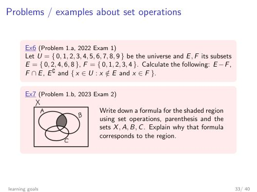<figcaption>01-lesson · 第 39 页</figcaption></figure><figure><figcaption>01-lesson · 第 31 页</figcaption></figure><figure>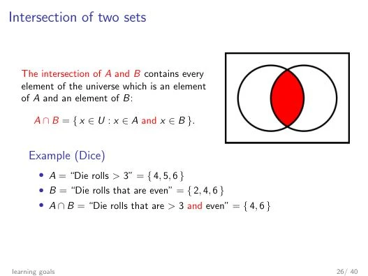<figcaption>01-lesson · 第 32 页</figcaption></figure></div><div class="callout tip"><b>原版图页</b>以上为源文件里<b>带插图的页面</b>（按页内图片面积选取），文字内容已在上方知识精讲里展开；看原版排版有助于考前回忆「这页讲过什么」。</div></section>
<section class="card" data-type="keywords"><div class="table-scroll" role="region" tabindex="0" aria-label="讲义表格 2，可横向滚动"><table><tr><th>English</th><th>中文</th><th>说明 / 例句</th></tr><tr><td>set</td><td>集合</td><td>A collection of objects; only membership matters.</td></tr><tr><td>element</td><td>元素</td><td>An object that belongs to a set: 1 ∈ {1, 2}.</td></tr><tr><td>roster notation</td><td>列举法</td><td>List the elements: A = {1, 2, 3}.</td></tr><tr><td>set builder notation</td><td>描述法</td><td>A = { x ∈ S : P(x) }, the elements of S that satisfy P.</td></tr><tr><td>subset</td><td>子集</td><td>A ⊆ B means every element of A is an element of B.</td></tr><tr><td>superset</td><td>超集</td><td>If A ⊆ B, then B is a superset of A.</td></tr><tr><td>set equality</td><td>集合相等</td><td>A = B iff (x ∈ A ⇔ x ∈ B), i.e. A ⊆ B and B ⊆ A.</td></tr><tr><td>empty set</td><td>空集</td><td>∅ = { }; x ∉ ∅ for all x; ∅ ⊆ Y is always true.</td></tr><tr><td>universal set</td><td>全集</td><td>The set U of all elements under discussion.</td></tr><tr><td>intersection</td><td>交集</td><td>A ∩ B = { x ∈ U : x ∈ A and x ∈ B }.</td></tr><tr><td>union</td><td>并集</td><td>A ∪ B = { x ∈ U : x ∈ A or x ∈ B }; the “or” is inclusive.</td></tr><tr><td>complement</td><td>补集</td><td>A∁ = { x ∈ U : x ∉ A }.</td></tr><tr><td>set difference</td><td>差集</td><td>A ∖ B = { x ∈ U : x ∈ A and x ∉ B }; also written A − B.</td></tr><tr><td>symmetric difference</td><td>对称差</td><td>A ∆ B = (A ∖ B) ∪ (B ∖ A); the exclusive or.</td></tr><tr><td>Venn diagram</td><td>维恩图</td><td>Rectangle = universe, circles = sets, colours = highlights.</td></tr><tr><td>counterexample</td><td>反例</td><td>One element showing a claimed ⊆ or equality fails.</td></tr></table></div></section>
<section class="card" data-type="examples"><div class="qa"><div class="q">例 1　求 { n ∈ N : |n − 5| &lt; 2 } 的全部元素。</div><p>先解绝对值不等式：<code>−2 &lt; n − 5 &lt; 2</code>，三边加 5 得 <code>3 &lt; n &lt; 7</code>。</p><p>n 必须是自然数，故 n ∈ {4, 5, 6}。检验：n = 4 时 |−1| = 1 &lt; 2 成立；n = 6 时 |1| = 1 &lt; 2 成立；n = 3 时 |−2| = 2 不满足严格小于，n = 7 同理被排除。</p><p>答案：<code>{4, 5, 6}</code>。通用做法是“先解不等式得区间，再与元素所在数集取交集”。</p></div><div class="qa"><div class="q">例 2　（源文件 Ex2）判断 A = { x ∈ [−2, ∞[ : 2x + 1 = √(x + 2) } 与 B = {−1, 1/4} 是否相等。</div><p>第一步，确定允许的 x：根号要求 x + 2 ≥ 0，即 x ≥ −2；同时左边 2x + 1 是算术平方根的值，必须 ≥ 0，故 x ≥ −1/2。可行范围是 [−1/2, ∞[。</p><p>第二步，两边平方（会引入增根，必须回代）：<code>(2x + 1)² = x + 2</code>，即 <code>4x² + 4x + 1 = x + 2</code>，整理得 <code>4x² + 3x − 1 = 0</code>。</p><p>第三步，判别式 <code>9 + 16 = 25</code>，根为 <code>x = (−3 ± 5)/8</code>，即 x = 1/4 或 x = −1。</p><p>第四步，用可行范围筛：−1 &lt; −1/2 落在范围外，舍去；1/4 保留。所以 A = {1/4}。</p><p>结论：A ≠ B。−1 ∈ B 但 −1 ∉ A，指出这样一个元素即可否定相等。</p></div><div class="qa"><div class="q">例 3　（源文件 Ex6，2022 年第一次考试 1(a)）设 U = {0,…,9}、E = {0,2,4,6,8}、F = {0,1,2,3,4}，求 E − F、F ∩ E、E∁、{ x ∈ U : x ∉ E 且 x ∈ F }。</div><p>E − F：属于 E 但不属于 F 的元素。E 的 0、2、4 都在 F 中，故只剩 6、8，即 <code>{6, 8}</code>。</p><p>F ∩ E：交集与顺序无关，<code>{0, 2, 4}</code>。</p><p>E∁：U 中去掉 E 的元素，即奇数 <code>{1, 3, 5, 7, 9}</code>。</p><p>最后一个：条件“x ∉ E 且 x ∈ F”对应 <code>F ∖ E</code>，F 中排除 0、2、4 后剩 <code>{1, 3}</code>。</p><p>四个答案合起来就是这类题的标准四连问：差集、交集、补集、以及一个用描述法伪装的运算。先翻译成符号再计算，可避免“按文字顺序硬抄”的错误。</p></div><div class="qa"><div class="q">例 4　（源文件 Ex8）证明对任意集合 A、B 有 A ∩ B ⊆ A ∪ B。</div><p><b>想的过程：</b>要证 ⊆，需任取 x ∈ A ∩ B，证 x ∈ A ∪ B。x ∈ A ∩ B 由定义给出两个信息：x ∈ A 且 x ∈ B。要证 x ∈ A ∪ B，只需“x ∈ A 或 x ∈ B”成立。由“且”推“或”合法（P ∧ Q ⇒ P ∨ Q），故成立。</p><p><b>Proof.</b> 设 x ∈ A ∩ B 为任意元素。由交集定义，x ∈ A 且 x ∈ B。既然 x ∈ A 为真，命题“x ∈ A 或 x ∈ B”为真。由并集定义，x ∈ A ∪ B。由于 x 是 A ∩ B 中任意取定的元素，故 A ∩ B ⊆ A ∪ B。□</p><p><b>检验：</b>取 A = {1}、B = {2}，则 A ∩ B = ∅、A ∪ B = {1, 2}，∅ ⊆ {1, 2} 成立；取 A = B = {1}，两边都是 {1}，包含关系成立（且相等）。</p></div><div class="qa"><div class="q">例 5　证明 (A ∩ B)∁ = A∁ ∪ B∁（德摩根律）。</div><p>要证相等，做两个包含。</p><p><b>(⊆)</b> 设 x ∈ (A ∩ B)∁，即 x ∉ A ∩ B。若同时 x ∈ A 且 x ∈ B，则 x ∈ A ∩ B，矛盾。所以“x ∈ A 且 x ∈ B”为假，由德摩根逻辑律等价于“x ∉ A 或 x ∉ B”，即 x ∈ A∁ 或 x ∈ B∁，故 x ∈ A∁ ∪ B∁。</p><p><b>(⊇)</b> 设 x ∈ A∁ ∪ B∁，即 x ∉ A 或 x ∉ B。无论哪种情况，都不能同时有 x ∈ A 与 x ∈ B，所以 x ∉ A ∩ B，即 x ∈ (A ∩ B)∁。</p><p>两个方向都成立，故相等。□ 整个证明只用了两件事：交集与补集的定义，以及 ¬(P ∧ Q) ⇔ ¬P ∨ ¬Q。这也说明集合运算与逻辑运算是同一套结构的两种写法。</p></div></section>
<section class="card" data-type="practice"><ol><li>设 U = {1, 2, …, 12}、A = {2, 4, 6, 8, 10, 12}、B = {3, 6, 9, 12}。求 A ∩ B、A ∪ B、A ∖ B、B ∖ A、A ∆ B 与 (A ∪ B)∁。</li><li>用描述法写出集合 { x ∈ Z : −3 ≤ x &lt; 4 且 x 为偶数 } 的全部元素。</li><li>判断真假并说明理由：(a) ∅ ∈ {∅}；(b) ∅ ⊆ {∅}；(c) {∅} ⊆ ∅；(d) {1, 2} ∈ {1, 2, {1, 2}}。</li><li>证明 A ∖ B = A ∩ B∁。</li><li>证明：若 A ⊆ B 且 B ⊆ C，则 A ⊆ C。</li><li>给出一个反例说明 A ∪ (B ∩ C) ≠ (A ∪ B) ∩ C 一般不成立。</li></ol><details><summary>参考答案与思路</summary><div class="ans"><p><b>1.</b> A ∩ B = {6, 12}；A ∪ B = {2, 3, 4, 6, 8, 9, 10, 12}；A ∖ B = {2, 4, 8, 10}；B ∖ A = {3, 9}；A ∆ B = {2, 3, 4, 8, 9, 10}；U ∖ (A ∪ B) = {1, 5, 7, 11}。</p><p><b>2.</b> 先解 −3 ≤ x &lt; 4 得 x ∈ {−3, −2, −1, 0, 1, 2, 3}，取其中偶数：{−2, 0, 2}。0 是偶数、−2 也是偶数，这是最常见的漏项点。</p><p><b>3.</b> (a) 真：{∅} 恰好以 ∅ 为元素。(b) 真：空集是任何集合的子集。(c) 假：∅ 没有元素，不能包含 {∅}（且 {∅} ≠ ∅）。(d) 真：{1, 2, {1, 2}} 把 {1, 2} 列为元素。</p><p><b>4.</b> 两边互含。设 x ∈ A ∖ B，则 x ∈ A 且 x ∉ B，即 x ∈ A 且 x ∈ B∁，故 x ∈ A ∩ B∁；反向同理。关键是熟练使用 <code>x ∉ B ⇔ x ∈ B∁</code>。</p><p><b>5.</b> 设 x ∈ A 为任意元素。由 A ⊆ B 得 x ∈ B；由 B ⊆ C 得 x ∈ C。故 x ∈ C。因 x 任意，A ⊆ C。这是传递性的模板证明，只用了两次定义。</p><p><b>6.</b> 取 A = {1}、B = {1}、C = {2}。左边 A ∪ (B ∩ C) = {1} ∪ ∅ = {1}；右边 (A ∪ B) ∩ C = {1} ∩ {2} = ∅。两者不等。说明并集不能对交集“分配”，只有交集对并集可以分配。</p></div></details></section>
<section class="card" data-type="exam"><h2>考点分层</h2><div class="callout exam"><b>必考</b>① 给定全集与两个集合，计算 ∩、∪、∖、∆、∁（2022、2024、2025 年首题都是这个）。② 由 Venn 图阴影反写公式，并解释为什么公式对应该区域。③ 用 ∈ 与 ⊆ 的定义判断真假，尤其是“集合作为元素”的情形。④ 证明 A ⊆ B 或 A = B（双向包含）。</div><div class="callout warn"><b>易错点</b>① 把 ∈ 写成 ⊆，或对数字用 ⊆（类型错误，直接 0 分）。② 补集忘掉全集，写成“A 的反面”而不是“U 去掉 A”。③ “大于 3”的否定写成“小于 3”，漏掉等号。④ 解含根号方程时平方后不检验，把增根写进解集。⑤ 描述法里漏写取值集合（只写 { x : … }）。</div><div class="callout warn"><b>失分点</b>证明题只写结论不写“设 x ∈ A 为任意元素”的开头，或没声明“x 任意”就收尾，会被扣过程分；Venn 图公式题只给公式不解释对应关系，会丢掉一半分数。</div><div class="callout tip"><b>进阶</b>① 把集合运算与逻辑运算对照记忆：∩↔∧、∪↔∨、∁↔¬、∖↔∧¬、∆↔xor、⊆↔⇒。② 会用“元素检验法”一行证明所有涉及 ∅ 的恒等式。③ 能说明罗素悖论为何意味着“所有集合的集合”不存在。④ 会算幂集元素个数 2ⁿ（第 2 讲）。</div></section>
<section class="card" data-type="checklist"><h2>方法清单</h2><h3>判断 ∈ 与 ⊆ 与 = 的三问</h3><ul class="checklist"><li>左边是元素、右边是集合吗？是则只能谈 ∈，不能谈 ⊆</li><li>如果是 ⊆，检查两边是否都是集合（数字、元组都不能做子集）</li><li>如果是 =，准备两个方向：A ⊆ B 与 B ⊆ A</li><li>遇到 {∅} 或 {1, {1, 2}} 这类嵌套，先把元素逐个列出再判断</li><li>找到反例立即否定；找不到反例才尝试证明</li></ul><h3>计算集合运算的顺序</h3><ol class="steps"><li>写出全集 U 与各集合的元素（去重、排序）</li><li>先算括号里的 ∩ 或 ∖，再算 ∪、∆</li><li>补集最后算，参照物必须是已明确的全集</li><li>遇到描述法先用不等式或条件筛元素，再套运算</li><li>用元素个数粗检：|A ∪ B| = |A| + |B| − |A ∩ B|</li></ol><h3>写 ⊆ 证明的模板</h3><ol class="steps"><li>写下 Proof 与“设 x ∈ X 为任意元素”</li><li>把 x ∈ X 按定义展开成具体条件（且、或、不等式）</li><li>用逻辑或代数推出 x ∈ Y 所需的条件</li><li>按 Y 的定义把条件翻译回 x ∈ Y</li><li>声明 x 任意，写出 X ⊆ Y，以 □ 收尾</li></ol></section>
<section class="card" data-type="mapping"><div class="table-scroll" role="region" tabindex="0" aria-label="讲义表格 3，可横向滚动"><table><tr><th>源文件</th><th>页码</th><th>覆盖的知识点</th></tr><tr><td>01-lesson.pdf</td><td>p4–p13</td><td>课程规则、评分与作业换分表、考试安排、AI 使用规定、学习方法与后续课程</td></tr><tr><td>01-lesson.pdf</td><td>p14–p20</td><td>学习数学的五个面向、第 1 周学习目标、集合的直观定义、列举法与描述法、∈ ∉ ∋</td></tr><tr><td>01-lesson.pdf</td><td>p21–p25</td><td>集合相等的判据、顺序与重复无关、空集、ZFC 公理与罗素悖论、常用数集与区间记号</td></tr><tr><td>01-lesson.pdf</td><td>p26–p29</td><td>集合与非集合的例子、∈ ⊆ = 的定义、⊆ 证明的两步法、Ex1–Ex5（含增根问题）</td></tr><tr><td>01-lesson.pdf</td><td>p31–p39</td><td>Venn 图要素、∩ ∪ ∆ ∁ ∖ 的定义与骰子例子、口诀与警告、Ex6–Ex7 真题</td></tr><tr><td>01-lesson.pdf</td><td>p41–p47</td><td>集合恒等式的证明方法、A ∩ B ⊆ A ∪ B 的完整范例、空集逻辑、⊆ 与 ⊄ 的证明指南、Ex9–Ex12</td></tr><tr><td>Lecture1_Sets, relations and graphs.pdf</td><td>全篇</td><td>背景材料对同一主题的更详细叙述，用于补充定义与证明细节</td></tr><tr><td>（跳过）</td><td>p8</td><td>AI 使用规定的图示页，属行政信息，不构成数学考点</td></tr><tr><td>（跳过）</td><td>p26、p32、p37、p43、p46</td><td>课堂活动页（举手、投票、小组讨论），内容已并入相应知识点</td></tr><tr><td>（补充拓展）</td><td>—</td><td>罗素悖论与理发师悖论的对照、von Neumann 序数说明、德摩根律的完整双向证明</td></tr></table></div></section><p class="sub">返回：<a href="../../c/30565/sets-basics.html">本讲独立页</a> · <a href="../../c/30565/part-1.html">本章节页</a> · <a href="#c-30565">本课目录</a></p></article><article class="alllec" id="l-30565-families-cartesian-relations"><h3>第 2 讲 · 集合族、幂集、笛卡尔积与二元关系</h3><p class="lead">Families of Sets, Power Sets, Cartesian Products and Binary Relations <span class="badge mute">第 1 章 集合、关系与逻辑</span></p><section class="card" data-type="overview"><h2>本节定位</h2><p>第 1 讲讲清“一个集合”；第 2 讲跨两级：先讲“集合的集合”（集合族 family of sets 与幂集 power set），再讲“由元素对组成的集合”（笛卡尔积与二元关系）。这两步为第 3 讲的关系运算与第 4 讲的函数定义铺路——函数就是特殊的二元关系。</p><p>集合族带来一个技术难点：∪ 与 ∩ 不再只作用于两个集合，而要作用于“一族”集合（<code>⋃F</code>、<code>⋂F</code>）。这也解释了为什么幂集 P(S) 有 2ⁿ 个元素，以及为什么空族会给出 <code>⋃∅ = ∅</code>、<code>⋂∅ = U</code> 这样反直觉的结论。</p><p>学完本节你应当能够：</p><ul class="checklist"><li>判断一个集合是不是集合族、是不是 U 的子集族</li><li>写出小集合的幂集 P(S)，并说出 |P(S)| = 2<sup>|S|</sup></li><li>计算 ⋃F 与 ⋂F，包括 F 为空族与只含一个集合的情形</li><li>区分有序对 (a, b)、n 元组与集合：顺序与重复在前者中才有意义</li><li>写出 A × B 并判断某个集合是否为笛卡尔积（用投影法）</li><li>把二元关系用集合、表格、箭头图、有向图四种方式表示并互相转换</li></ul></section>
<section class="card" data-type="detail"><h3>2.1 集合族：元素本身是集合</h3><p>数学里经常要谈论“一组集合”，例如把 N、Z、Q、R 放在一起，或把 {a, b} 的全部子集放在一起。这时外层容器仍是集合，只是它的元素本身也是集合，这就是集合族（family of sets）。</p><p>定义：若集合 S 的每个元素都是集合，即 <code>x ∈ S ⇒ x 是集合</code>，则 S 是集合族。注意 ∅ 也是集合族——“每个元素都是集合”对空集是空真命题。</p><p>正例：<code>{N, Z, Q, R}</code>；<code>{ {1,2,3}, {π, √2, −3}, {apple, banana, 5} }</code>；<code>{ A ⊆ {a, b} } = {∅, {a}, {b}, {a, b}}</code>。反例：<code>{∅, 0, {1, 2}}</code> 因为 0 不是集合；<code>N</code> 本身也不是，因为 5 ∈ N 而 5 不是集合。判断的关键永远是逐个检查元素类型，而不是“看起来像不像”。</p><h3>2.2 子集族与局部变量记号</h3><p>设 U 是集合。若 S 的每个元素都是 U 的子集，即 <code>x ∈ S ⇒ x ⊆ U</code>，则 S 是 U 的一个子集族（family of subsets of U）。</p><p>专用写法 <code>{ A ⊆ U : … }</code> 表示“U 的那些满足……的子集 A 所成之族”。这里 U 必须是已定义的集合，A 是局部变量（local variable），只在该花括号内有效。三个标准例：<code>{ A ⊆ U : A ≠ ∅ }</code>（全部非空子集）、<code>{ A ⊆ S }</code>（即幂集）、<code>{ A ⊆ N : A 的元素之和 = 3 }</code>。</p><p>字体约定（建议非硬规定）：小写字母表示元素，大写字母表示集合，花体字母表示集合族，例如 <code>F = { A ⊆ B : A 有 3 个元素 }</code>；用普通大写字母表示族也完全可以，例如 <code>C = { {1,2,3}, {1,2,4} }</code>。考试里重要的是让读者分清层次。</p><h3>2.3 幂集 P(S)</h3><p>幂集（power set）是子集族中最重要的一个：<code>P(S) = { A ⊆ S }</code>，以 S 的全部子集为元素。注意 ∅ ∈ P(S) 与 S ∈ P(S) 都成立——空集与 S 自己都是 S 的子集。</p><p>元素个数：若 |S| = n，则 |P(S)| = 2ⁿ。理由是对每个元素独立做“选/不选”两个决定，共 2ⁿ 种组合，每种组合给出唯一子集。第 7 讲会再用到这条结论（子集个数 <code>C(n, k)</code>），它也是 2022 年第三次考试第 1(e) 题的直接考点。</p><div class="callout tip"><b>快速自检</b>写完 P(S) 后数个数，应为 2ⁿ。若 S = {a, b, c}，则 P(S) 有 8 个元素：∅、三个单元素集、三个双元素集、S 本身。漏掉 ∅ 或漏掉 S 是最常见的错误。</div><h3>2.4 族的并与族的交</h3><p>族 F 的并：<code>⋃F = { x ∈ U : 存在 A ∈ F 使 x ∈ A }</code>，即把 F 里所有集合的元素倒在一起；若 F = {A, B, C}，则 ⋃F = A ∪ B ∪ C。族的交：<code>⋂F = { x ∈ U : 对所有 A ∈ F 都有 x ∈ A }</code>，只保留同时属于每个成员集合的元素；若 F = {A, B, C}，则 ⋂F = A ∩ B ∩ C。</p><p>两个定义的差别全在量词：“存在某个”（some）对应并，“对所有”（all）对应交。判断 x 是否属于 ⋃F 时只需找到一个成员集合含 x；判断 x 是否属于 ⋂F 时必须验证每一个成员集合都含 x。</p><p>空族（课件用投票活动提出，答案是 A）：<code>⋃∅ = ∅</code>，因为不存在任何 A ∈ ∅，没有 x 能满足“存在 A ∈ ∅ 使 x ∈ A”；<code>⋂∅ = U</code>，因为“对所有 A ∈ ∅，x ∈ A”空真，U 里每个 x 都满足。这与“∅ ⊆ Y 恒真”是同一套空真逻辑。若 F = {A}，则 ⋃F = ⋂F = A，可用来检验是否真懂定义。</p><h3>2.5 族运算的四条恒等式</h3><p>设 U 是集合，G、F₁、F₂ 是 U 的子集族，则：(a) 若 F₁ ⊆ F₂ 则 <code>⋃F₁ ⊆ ⋃F₂</code>；(b) 若 F₁ ⊆ F₂ 则 <code>⋂F₂ ⊆ ⋂F₁</code>（方向反转）；(c) <code>(⋂G)∁ = ⋃{ A∁ : A ∈ G }</code>；(d) <code>(⋃G)∁ = ⋂{ A∁ : A ∈ G }</code>。证明留作作业或自学。</p><p>(a) 的直观：族变大，可选集合变多，能倒出的元素只会更多。(b) 的直观：族变大，要“同时满足”的集合变多，条件更严，交集只会更小——这就是方向反转的原因，也是极易失分点。(c)(d) 是德摩根律的“族版本”，与第 1 讲的两集合版本一致。</p><p>证明 (a)：设 x ∈ ⋃F₁，则存在 A ∈ F₁ 使 x ∈ A；因 F₁ ⊆ F₂ 得 A ∈ F₂，故 x ∈ ⋃F₂。证明 (d)：x ∈ (⋃G)∁ ⇔ x ∉ ⋃G ⇔ 对所有 A ∈ G 都有 x ∉ A ⇔ 对所有 A ∈ G 都有 x ∈ A∁ ⇔ x ∈ ⋂{A∁ : A ∈ G}。整串都是“定义的翻译”。</p><h3>2.6 面包店过敏原：族交的实际用法</h3><p>四款产品的过敏原：蛋糕（gluten, egg, milk）、酥皮（peanut, sesame）、小面包（gluten, sesame）、甜面包（gluten, egg, milk, peanut）。顾客只对一种配料过敏，但不知道是哪一种，是否保证他能吃到至少一样？</p><p>记四款产品的过敏原集合为 P₁ 至 P₄，顾客的过敏原为 {a}。他能吃某款产品当且仅当 a ∉ Pᵢ。要“保证有得吃”，必须让每种配料都被某款产品避开，也就是 <code>⋂{P₁, P₂, P₃, P₄} = ∅</code>。逐个检查：gluten 不在酥皮；egg、milk 不在酥皮与小面包；peanut 不在小面包；sesame 不在蛋糕与甜面包。交集为空，故“保证有得吃”。这道题训练的是把自然语言翻译成“族交是否为空”。</p><h3>2.7 有序对与 n 元组</h3><p>有序对（ordered pair）是 (a, b)，n 元组（n-tuple）是 (a₁, …, aₙ)。与集合的区别用一张表说清：</p><div class="table-scroll" role="region" tabindex="0" aria-label="讲义表格 4，可横向滚动"><table><tr><th>性质</th><th>n 元组</th><th>集合</th></tr><tr><td>装着对象吗</td><td>是</td><td>是</td></tr><tr><td>允许重复副本吗</td><td>是</td><td>否</td></tr><tr><td>顺序重要吗</td><td>是</td><td>否</td></tr></table></div><p>所以 <code>(1, 2) ≠ (2, 1)</code> 而 <code>{1, 2} = {2, 1}</code>；<code>(1, 1, 2)</code> 是合法三元组，而 <code>{1, 1, 2} = {1, 2}</code>。这个差别在第 7 讲计数四公式里会变成“顺序是否重要、是否允许重复”的分类标准。</p><p>典型用法：把平面点写成 (x, y)；把列表写成 (第一项, 第二项, …, 最后一项)；把一副扑克牌写成 <code>C = { (r, s) : r ∈ R, s ∈ S }</code>，其中 <code>R = {A, 2, 3, …, 10, J, Q, K}</code>、<code>S = {♠, ♡, ♣, ♢}</code>，于是黑桃 A 就是 (A, ♠) ∈ C。</p><h3>2.8 笛卡尔积 A × B</h3><p>笛卡尔积：<code>A × B = { (a, b) : a ∈ A, b ∈ B }</code>，约定 <code>A × A = A²</code>。三个例子：扑克牌 C = R × S 共 52 张；平面 <code>R² = { (x, y) : x, y ∈ R }</code>；方格点阵 <code>Z² = { (x, y) ∈ R² : x, y ∈ Z }</code>。</p><p>n 元积：若 n ∈ Z⁺，则 <code>A₁ × … × Aₙ = { (a₁, …, aₙ) : 对每个 i 有 aᵢ ∈ Aᵢ }</code>。例：R³；n 维超立方体顶点 <code>{ (x₁, …, xₙ) ∈ Rⁿ : 每个 xᵢ ∈ {0, 1} }</code>，共 2ⁿ 个。名称来源：笛卡尔与费马在 17 世纪发明解析几何，直角坐标系本质是两条数轴的笛卡尔积。</p><h3>2.9 哪些集合是笛卡尔积：投影法</h3><p>判断 <code>S ⊆ A × B</code> 是否等于某个 <code>S₁ × S₂</code>，用投影（projection）：<code>S₁ = { a ∈ A : 存在 b 使 (a, b) ∈ S }</code>、<code>S₂ = { b ∈ B : 存在 a 使 (a, b) ∈ S }</code>。判定定理（课件给出，并要求 S ≠ ∅）：<code>S = S₁ × S₂</code> 当且仅当 S 本身是某个笛卡尔积。</p><p>方法三步：(a) 算 S₁；(b) 算 S₂；(c) 检查 S = S₁ × S₂。若不成立，则 S 不可能是任何集合的笛卡尔积——因为投影是唯一候选。直观判据：把 S 画成方格表，若有标记的格子恰好构成完整的矩形块（某几行与某几列的全部交叉）则是；只要出现“缺角”就不是。</p><div class="callout warn"><b>常见错误</b>只检查“每个 a 都有配对的 b、每个 b 都有配对的 a”不够。例如 <code>S = {(1, 3), (1, 4), (2, 3)}</code>：S₁ = {1, 2}、S₂ = {3, 4}，但 (2, 4) ∉ S，故 S ≠ S₁ × S₂。这正是“证明某集合不是笛卡尔积”的典型反例结构。</div><h3>2.10 二元关系的定义</h3><p>设 X、Y 是集合，任何子集 <code>R ⊆ X × Y</code> 都称为 X 与 Y 上的二元关系（binary relation），X = Y 时简称 X 上的关系。常用 <code>xRy</code> 表示 <code>(x, y) ∈ R</code>。</p><p>例 1：<code>R = { (x, y) ∈ R² : x 小于 y }</code>，于是 (3, 1) ∉ R 而 (1, 3) ∈ R；这个关系干脆写成符号 &lt;，于是 1 &lt; 3 就是 (1, 3) ∈ &lt; 的简写。例 2：X = Y = 全体人类，<code>P = { (p, c) : p 是 c 的父母 }</code>，则 aPb 读作“a 是 b 的父母”。</p><p>非例 1：<code>{1, 2, 3, 4}</code> 不是任何集合上的二元关系，因为元素不是有序对。非例 2：<code>{(a, 1), (a, 2), (b, 4)}</code> 不是 {a, b} 与 {1, 2, 3} 之间的关系，因为 (b, 4) ∉ {a, b} × {1, 2, 3}——关系必须是笛卡尔积的子集，越界的对不算。</p><h3>2.11 关系的四种表示法</h3><p>取 A = {1,2,3,4}、B = {1,…,6}、<code>S = {(1,1), (1,2), (2,2), (2,3), (3,4), (3,5), (3,6), (4,4)}</code>，同一个 S 有四种写法：① 集合写法，最精确，适合证明；② 表格，行是 A 的元素、列是 B 的元素，打勾表示属于 S；③ 箭头图，左边 A 的点、右边 B 的点，属于 S 的对画一支箭头；④ 有向图，当 X = Y 时把点画在一处，用带箭头的弧表示 (x, y)。</p><p>转换时最容易错的是“行列方向”：表格第 i 行第 j 列对应 (aᵢ, bⱼ)；箭头图里箭尾是第一坐标、箭头是第二坐标。第 3 讲的逆关系 R⁻¹ 等价于“把所有箭头反向”，合成 RS 则等价于“从 x 经 R 到 y 再经 S 到 z，跳过中间点”。</p><h3>2.12 图（网络）的定义</h3><p>有向图（directed graph）是二元组 (V, E)：V 是集合，元素称为顶点（vertices，也叫节点 nodes、点 points）；<code>E ⊆ V²</code> 是二元关系，元素称为边（edges，也叫箭头 arrows、线 lines）。</p><p>例：V = {v₁, v₂, v₃, v₄}、E = {(v₁,v₂), (v₁,v₃), (v₃,v₁), (v₃,v₃)}，于是 <code>G = ({v₁,v₂,v₃,v₄}, {(v₁,v₂), (v₁,v₃), (v₃,v₁), (v₃,v₃)})</code>。注意 (v₃, v₃) 这种自环（loop）在有向图里允许。画图时顶点位置完全不重要，重要的是连接关系正确。</p><p>无向图（undirected graph）：(V, E) 是有向图，且对任意 v₁, v₂ 有 <code>(v₁, v₂) ∈ E 当且仅当 (v₂, v₁) ∈ E</code>，即每条边双向。简单图（simple graph）：无向图且对任意 v 有 <code>(v, v) ∉ E</code>，即无自环。日常说“图”时通常指无向图或简单图，需看上下文。</p><h3>2.13 从关系到图的实操</h3><p>例（源文件 p35）：X = {v₁, …, v₆}，<code>R = {(v₁,v₁), (v₁,v₄), (v₁,v₅), (v₂,v₃), (v₂,v₄), (v₃,v₅), (v₅,v₂), (v₆,v₁), (v₆,v₂)} ⊆ X²</code>。R 二元，故可画表格；R ⊆ X²，故可画有向图，两种表示信息相同。</p><p>源文件的练习演示反向操作：由箭头图写关系（Ex10）；由语言描述写关系（Ex9 的 apricot/grass/cucumber/pizza/jade 与 F/G 两列，实质是分类关系）；由条件式画图（Ex11：<code>{(a, b) ∈ {1,…,8}² : b/a ∈ N}</code>，即“b 是 a 的倍数”，图很稠密）。</p><div class="callout tip"><b>画图自检</b>画完有向图后随机挑三条边核对：图上有箭头 ⇔ 集合里有对应的对。再数边数：有向图的边数等于关系里对的个数（自环算一条）。</div><div class="callout idea" data-ext="families-cartesian-relations-0"><b>推导补充</b><p>集合族的元素本身是集合，判断时逐个查元素类型，而不是看像不像，因此 ∅ 也算集合族而 N 不是。幂集 P(S) 含 S 的全部子集，∅ 与 S 自己都在内；若 |S|=n，则 |P(S)|=2ⁿ，因为每个元素独立做选或不选两个决定，共 2ⁿ 种组合，每种给出唯一子集——写完可数个数自检，漏 ∅ 或漏 S 最常见。族并 <code>⋃F</code> 对应存在某个成员含 x，族交 <code>⋂F</code> 对应对所有成员都含 x，差别全在量词。</p></div><h3>原版图页（源 PDF 插图页）</h3><div class="imggrid" data-imgbatch="1"><figure><figcaption>02-lesson · 第 33 页</figcaption></figure><figure>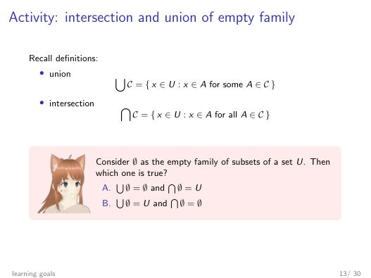<figcaption>02-lesson · 第 16 页</figcaption></figure><figure><figcaption>02-lesson · 第 23 页</figcaption></figure><figure><figcaption>02-lesson · 第 5 页</figcaption></figure><figure>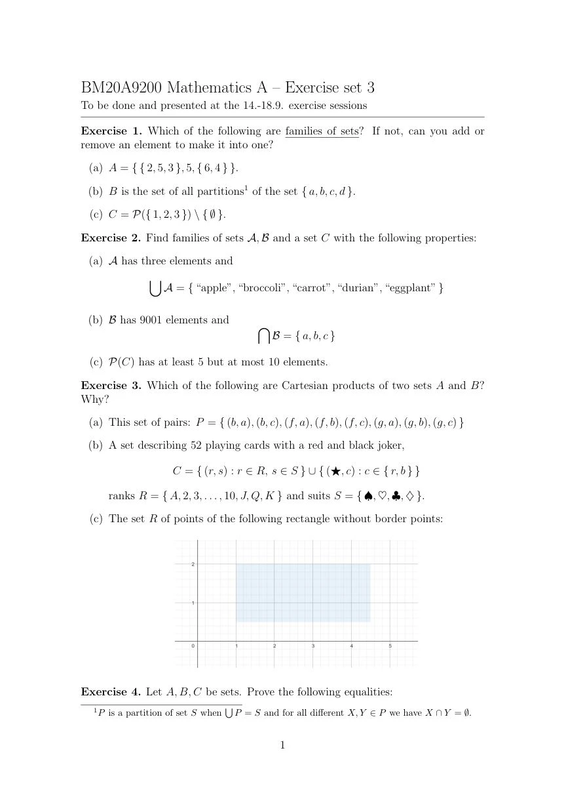<figcaption>03-exercise · 第 1 页</figcaption></figure></div><div class="callout tip"><b>原版图页</b>以上为源文件里<b>带插图的页面</b>（按页内图片面积选取），文字内容已在上方知识精讲里展开；看原版排版有助于考前回忆「这页讲过什么」。</div></section>
<section class="card" data-type="keywords"><div class="table-scroll" role="region" tabindex="0" aria-label="讲义表格 5，可横向滚动"><table><tr><th>English</th><th>中文</th><th>说明 / 例句</th></tr><tr><td>family of sets</td><td>集合族</td><td>A set whose elements are themselves sets.</td></tr><tr><td>family of subsets</td><td>子集族</td><td>Every element is a subset of a fixed set U.</td></tr><tr><td>power set</td><td>幂集</td><td>P(S) = { A ⊆ S }; it has 2<sup>|S|</sup> elements.</td></tr><tr><td>arbitrary union</td><td>族的并</td><td>⋃F = { x ∈ U : x ∈ A for some A ∈ F }.</td></tr><tr><td>arbitrary intersection</td><td>族的交</td><td>⋂F = { x ∈ U : x ∈ A for all A ∈ F }.</td></tr><tr><td>empty family</td><td>空族</td><td>⋃∅ = ∅ but ⋂∅ = U.</td></tr><tr><td>ordered pair</td><td>有序对</td><td>(a, b); order matters, so (a, b) ≠ (b, a).</td></tr><tr><td>n-tuple</td><td>n 元组</td><td>(a₁, …, aₙ); copies and order both matter.</td></tr><tr><td>Cartesian product</td><td>笛卡尔积</td><td>A × B = { (a, b) : a ∈ A, b ∈ B }; A × A = A².</td></tr><tr><td>projection</td><td>投影</td><td>S₁ = { a ∈ A : (a, b) ∈ S for some b }.</td></tr><tr><td>binary relation</td><td>二元关系</td><td>Any subset R ⊆ X × Y; xRy means (x, y) ∈ R.</td></tr><tr><td>arrow diagram</td><td>箭头图</td><td>Left column X, right column Y, arrows for pairs of R.</td></tr><tr><td>directed graph</td><td>有向图</td><td>(V, E) with E ⊆ V²; elements of E are edges.</td></tr><tr><td>simple graph</td><td>简单图</td><td>Undirected and without loops: (v, v) ∉ E.</td></tr><tr><td>vertex</td><td>顶点</td><td>Element of V; also called node or point.</td></tr><tr><td>edge</td><td>边</td><td>Element of E; also called arrow or line.</td></tr></table></div></section>
<section class="card" data-type="examples"><div class="qa"><div class="q">例 1　（源文件 Ex2）设 U = {1,2,3,4,5}、F = {A₁, A₂, A₃}，A₁ = {1,2,3}、A₂ = {2,5}、A₃ = {2,3,5}，求 ⋃F 与 ⋂F。</div><p>族的并：把三个集合的元素倒在一起，<code>⋃F = {1, 2, 3, 5}</code>。</p><p>族的交：1 只在 A₁ 里，3 不在 A₂ 里，5 不在 A₁ 里，只有 2 三个都有，故 <code>⋂F = {2}</code>。</p><p>检验：⋂F ⊆ ⋃F 必须成立（{2} ⊆ {1,2,3,5}）；并且 ⋂F 的每个元素都能在每一个 Aᵢ 里找到。</p></div><div class="qa"><div class="q">例 2　（源文件 Ex1）写出 P({a, b, c})。</div><p>按子集大小分类枚举：0 个元素 ∅；1 个元素 {a}、{b}、{c}；2 个元素 {a,b}、{a,c}、{b,c}；3 个元素 {a,b,c}。</p><p>故 <code>P({a,b,c}) = { ∅, {a}, {b}, {c}, {a,b}, {a,c}, {b,c}, {a,b,c} }</code>，共 1 + 3 + 3 + 1 = 8 = 2³ 个。</p><p>易错：不要把 ∅ 写成 {∅}（后者含一个元素）；也不要把 {a,b,c} 写成 a, b, c（幂集的元素是集合）。</p></div><div class="qa"><div class="q">例 3　判断 S = {(1,3), (1,4), (2,3)} ⊆ {1,2} × {3,4} 是否为笛卡尔积。</div><p>算投影：<code>S₁ = {1, 2}</code>、<code>S₂ = {3, 4}</code>。</p><p>候选积 S₁ × S₂ 有 4 个元素：(1,3)、(1,4)、(2,3)、(2,4)；S 只有 3 个，缺 (2,4)。</p><p>故 S ≠ S₁ × S₂，由定理，S 不是任何两个集合的笛卡尔积。方格表上第 2 行第 4 列是空的，出现“缺角”。</p></div><div class="qa"><div class="q">例 4　（源文件 Ex8）设 A, B, C, D 非空，证明 A × B ⊆ C × D 当且仅当 A ⊆ C 且 B ⊆ D。</div><p><b>(⇒)</b> 任取 a ∈ A。因 B 非空，可取 b ∈ B，于是 (a, b) ∈ A × B ⊆ C × D，故 a ∈ C，所以 A ⊆ C。同理任取 b ∈ B，取 a ∈ A 得 (a, b) ∈ C × D，故 b ∈ D，所以 B ⊆ D。</p><p><b>(⇐)</b> 任取 (a, b) ∈ A × B，则 a ∈ A ⊆ C 且 b ∈ B ⊆ D，故 (a, b) ∈ C × D。所以 A × B ⊆ C × D。□</p><p><b>为什么必须非空</b>：若 A = ∅、B = {1}、C = {2}、D = {3}，则 A × B = ∅ ⊆ C × D 成立，但 B ⊄ D，结论为假。取 b ∈ B 那一步正是靠“B 非空”才合法。</p></div><div class="qa"><div class="q">例 5　把 R = {(1,1), (1,2), (2,2), (3,3), (3,4)} 画成有向图并说明它是什么关系。</div><p>顶点取 {1,2,3,4}，逐对画箭头：1→1、1→2、2→2、3→3、3→4。</p><p>结构：每点都指向自己（自反），且只指向“自己或更大的点”，即 <code>(a, b) ∈ R ⇒ a ≤ b</code>。</p><p>语言描述：这是“小于或等于”关系 ≤ 在 {1,2,3,4} 上的限制。2025 年第三次考试第 1(b) 题就是反过来给图求关系。</p></div></section>
<section class="card" data-type="practice"><ol><li>设 S = {1, 2, 3}。写出 P(S)，并验证元素个数为 2³。</li><li>设 F = { {1,2}, {2,3}, {1,2,3} }，求 ⋃F 与 ⋂F；再设 G = ∅，求 ⋃G 与 ⋂G（U = {1,2,3}）。</li><li>写出 {a, b} × {1, 2} 与 {1, 2} × {a, b}，它们相等吗？</li><li>判断 S = {(1,1), (1,2), (2,1), (2,2), (3,1)} ⊆ {1,2,3}² 是否为笛卡尔积，用投影法说明。</li><li>设 R = {(x, y) ∈ {1,2,3,4}² : x + y = 5}。用列举法写出 R，并画有向图。</li></ol><details><summary>参考答案与思路</summary><div class="ans"><p><b>1.</b> P(S) = {∅, {1}, {2}, {3}, {1,2}, {1,3}, {2,3}, {1,2,3}}，共 8 个，与 2³ 一致。</p><p><b>2.</b> ⋃F = {1,2,3}；⋂F = {2}（1 不在 {2,3} 里，3 不在 {1,2} 里）。空族：⋃∅ = ∅，⋂∅ = U = {1,2,3}。</p><p><b>3.</b> {a,b} × {1,2} = {(a,1), (a,2), (b,1), (b,2)}；{1,2} × {a,b} = {(1,a), (1,b), (2,a), (2,b)}。不相等，但元素个数都是 4，说明笛卡尔积不交换。</p><p><b>4.</b> S₁ = {1,2,3}、S₂ = {1,2}，候选积 6 个元素而 S 只有 5 个，缺 (3,2)，故不是笛卡尔积。</p><p><b>5.</b> R = {(1,4), (2,3), (3,2), (4,1)}；图上四条箭头，2↔3 与 1↔4 各成一对互逆箭头，无自环。</p></div></details></section>
<section class="card" data-type="exam"><h2>考点分层</h2><div class="callout exam"><b>必考</b>① 写幂集 P(S) 并数元素个数（2022 年第三次考试 1(e)，2 分）。② 计算 ⋃F 与 ⋂F，包括空族。③ 判断给定集合是否为笛卡尔积并用投影定理说明。④ 由关系画有向图、由有向图写关系（几乎每年第 1 题都有）。⑤ 证明 A × B ⊆ C × D 之类涉及非空条件的命题。</div><div class="callout warn"><b>易错点</b>① 把 ∅ 与 {∅} 混淆，导致幂集元素个数错。② 把 ⋂F 写成 ⋃F 的结果（量词颠倒）。③ 由 F₁ ⊆ F₂ 推交集包含时忘记反向：⋂F₂ ⊆ ⋂F₁。④ 写关系时把越界的对写进去。⑤ 画箭头图时把行当列、箭头方向画反。</div><div class="callout warn"><b>失分点</b>证明 A × B ⊆ C × D 时没有先声明“因 B 非空，可取 b ∈ B”，会被认为使用了未证明的存在性；空集反例若不指出，会丢掉“为什么需要非空”那一问。</div><div class="callout tip"><b>进阶</b>① 用 2ⁿ 反推：|P(S)| = 64 则 |S| = 6。② 把“族的并/交”翻译成一阶逻辑：∃A ∈ F, x ∈ A 与 ∀A ∈ F, x ∈ A。③ 知道 ⋂∅ = U 与“∅ ⊆ Y 恒真”同源。④ 把关系看成布尔矩阵（第 12 讲），转置就是逆关系。</div></section>
<section class="card" data-type="checklist"><h2>方法清单</h2><h3>判断与计算集合族</h3><ul class="checklist"><li>逐个元素问“它本身是集合吗”，有一个不是就不是集合族</li><li>子集族还要检查“每个元素都是同一个 U 的子集”</li><li>写幂集按子集大小 0,1,2,…,n 分类枚举，最后用 2ⁿ 校验</li><li>算 ⋃F 用“存在”检验，算 ⋂F 用“所有”检验</li><li>遇到空族直接套 ⋃∅ = ∅、⋂∅ = U</li></ul><h3>判断笛卡尔积的三步</h3><ol class="steps"><li>算出第一坐标投影 S₁ = { a : (a, b) ∈ S }</li><li>算出第二坐标投影 S₂ = { b : (a, b) ∈ S }</li><li>比较 S 与 S₁ × S₂：先比元素个数，再逐个核对</li><li>若不相等，结论是“不是任何笛卡尔积”</li></ol><h3>四种表示法互转</h3><ol class="steps"><li>先在集合写法里把对写全（按第一坐标分组）</li><li>表格：行 = 第一坐标，列 = 第二坐标，打勾即可</li><li>箭头图：左列第一坐标，右列第二坐标，逐对画箭头</li><li>有向图：X = Y 时把点画在一处，自环要画出</li><li>转换后随机抽三对回查</li></ol></section>
<section class="card" data-type="mapping"><div class="table-scroll" role="region" tabindex="0" aria-label="讲义表格 6，可横向滚动"><table><tr><th>源文件</th><th>页码</th><th>覆盖的知识点</th></tr><tr><td>02-lesson.pdf</td><td>p5–p6</td><td>集合论的历史动因：罗素悖论、理发师悖论、ZFC 公理清单</td></tr><tr><td>02-lesson.pdf</td><td>p7–p9</td><td>第 2 周学习目标 1.4–1.5、2.1–2.3、本章目录</td></tr><tr><td>02-lesson.pdf</td><td>p10–p12</td><td>集合族的定义与正反例、子集族定义与 { A ⊆ U : … } 记号、字体约定</td></tr><tr><td>02-lesson.pdf</td><td>p13–p17</td><td>幂集、族的并与交、空族的结果、四条恒等式 (a)–(d)</td></tr><tr><td>02-lesson.pdf</td><td>p20–p21</td><td>有序对与 n 元组、与集合的性质对照表、扑克牌模型</td></tr><tr><td>02-lesson.pdf</td><td>p22–p25</td><td>笛卡尔积定义、A² 与 R²、Z²、n 元积、R³ 与超立方体顶点</td></tr><tr><td>02-lesson.pdf</td><td>p26–p27</td><td>投影法与判定定理、Ex6–Ex8</td></tr><tr><td>02-lesson.pdf</td><td>p29–p35</td><td>二元关系定义与正反例、表格与箭头图、有向图定义、无向图与简单图</td></tr><tr><td>02-lesson.pdf</td><td>p36</td><td>Ex9–Ex11：由箭头图与条件式写关系、画图</td></tr><tr><td>03-exercise.pdf</td><td>全篇</td><td>集合族判定、族的并与交、笛卡尔积判定、关系的图形表示等练习</td></tr><tr><td>（跳过）</td><td>p14、p16、p25、p30</td><td>课堂投票与小组活动页，结论已并入正文</td></tr><tr><td>（补充拓展）</td><td>—</td><td>面包店过敏原问题的完整交集论证、A × B ⊆ C × D 的空集反例、幂集个数的组合解释</td></tr></table></div></section><p class="sub">返回：<a href="../../c/30565/families-cartesian-relations.html">本讲独立页</a> · <a href="../../c/30565/part-1.html">本章节页</a> · <a href="#c-30565">本课目录</a></p></article><article class="alllec" id="l-30565-relations-inverse-composition-logic"><h3>第 3 讲 · 逆关系与合成、命题逻辑与真值表</h3><p class="lead">Inverse and Composition of Relations, Propositions and Truth Tables <span class="badge mute">第 1 章 集合、关系与逻辑</span></p><section class="card" data-type="overview"><h2>本节定位</h2><p>第 3 讲有两个主题：先给关系加上两种“手术”——求逆（inverse）与合成（composition），再把“关系”升级为“命题”（proposition），引入 ∧、∨、¬、⇒、⇔ 与真值表。表面上是两件事，实质是同一件事：关系是集合，命题的真假也可以用集合来刻画。</p><p>从考试看，本讲对应第 1 题的“关系计算”和第 2 或第 3 题的“真值表”，几乎每年必出，且分值高（真值表常为 8 分）。真值表是整门课最机械的得分点，只要步骤规范就不会失分。</p><p>学完本节你应当能够：</p><ul class="checklist"><li>写出逆关系 R⁻¹，并用“箭头反向”解释它</li><li>计算合成关系 RS，并说明“跳过中间点”的含义</li><li>证明 (RS)⁻¹ = S⁻¹R⁻¹，并解释为什么顺序要反转</li><li>判断一句话是不是命题，区分命题与开放公式（open formula）</li><li>写出 ∧、∨、¬、xor、⇒、⇔ 的真值表，并解释“前件为假时蕴含为真”</li><li>为含 2 个或 3 个原子命题的复合命题构造完整真值表（2ⁿ 行）</li></ul></section>
<section class="card" data-type="detail"><h3>3.1 逆关系 R⁻¹</h3><p>设 R 是 X 与 Y 之间的二元关系。它的逆关系定义是 <code>R⁻¹ = { (y, x) ∈ Y × X : (x, y) ∈ R }</code>，等价说法是 <code>xRy 当且仅当 yR⁻¹x</code>。求逆就是“把所有箭头的方向翻过来”，定义域与值域随之互换：R ⊆ X × Y 时 R⁻¹ ⊆ Y × X。</p><p>例（源文件 p8）：若 R 是 A→B 的一组箭头，则 R⁻¹ 把每条箭头的头尾对调；而 RS 表示“先走 R 再走 S”的捷径。常用性质：<code>(R⁻¹)⁻¹ = R</code>（翻两次回到原样），以及下一节要证的 <code>(RS)⁻¹ = S⁻¹R⁻¹</code>。第 12 讲会看到：用布尔矩阵表示关系时，R⁻¹ 的矩阵就是 R 的矩阵的转置。</p><h3>3.2 合成关系 RS</h3><p>设 R 是 X 与 Y 上的关系、S 是 Y 与 Z 上的关系。它们的合成是 X 与 Z 上的关系：<code>RS = { (x, z) ∈ X × Z : 存在 y ∈ Y 使 xRy 且 ySz }</code>。直观说法是“跳过中间点”“抄近路”：从 x 经 R 到某个 y，再经 S 到 z，就把 x 与 z 直接连起来。</p><p>记号并不统一：有人写 <code>R ∘ S</code>，有人写 <code>RS</code>。更要注意顺序约定：函数复合 <code>g ∘ f</code> 表示“先 f 后 g”，写在前面的 g 后执行；而关系的 RS 表示“先 R 后 S”，写在前面的 R 先执行。两个约定相反，是考试里最容易搞混的一处。</p><p>计算 RS 的机械做法：对每个 (x, y) ∈ R 与每个 (y, z) ∈ S，若中间点相同，就把 (x, z) 收进 RS，最后去重。若没有任何中间点能接上，RS 就是空集。</p><h3>3.3 用语言解释逆与合成</h3><p>设 H 是全体人类，<code>xPy</code> 表示“x 是 y 的父母”，<code>xBy</code> 表示“x 是 y 的兄弟”。则 <code>xP⁻¹y</code> 表示“x 是 y 的孩子”（因为 yPx 即 y 是 x 的父母）；<code>xB⁻¹y</code> 表示“x 的兄弟姐妹是 y”，即“y 是 x 的兄弟姐妹”。</p><p><code>xPBy</code> 表示“x 是 y 的某个兄弟的父母”，即“x 是 y 的父母且 y 有兄弟”；<code>xBPy</code> 表示“x 是 y 的父母的兄弟”，即“x 是 y 的叔叔/伯伯/舅舅”（uncle）。这两条对照说明：合成不交换，PB 与 BP 是完全不同的关系。</p><h3>3.4 合成与逆的计算实例</h3><p>源文件 Ex1：<code>R = {(A, developer), (A, tester), (B, tester), (C, developer)}</code> 表示“人 x 担任角色 y”；<code>P = {(developer, PushCode), (developer, Deploy), (tester, ReportBug)}</code> 表示“角色 y 拥有权限 z”。求 RP 与 P⁻¹P。</p><p>RP：A 有 developer 与 tester 两个角色，故 A 能 PushCode、Deploy、ReportBug；B 只有 tester，只能 ReportBug；C 只有 developer，能 PushCode 与 Deploy。所以 <code>RP = {(A, PushCode), (A, Deploy), (A, ReportBug), (B, ReportBug), (C, PushCode), (C, Deploy)}</code>，语言解释：x 通过其角色拥有权限 z。</p><p>P⁻¹P：<code>P⁻¹ = {(PushCode, developer), (Deploy, developer), (ReportBug, tester)}</code>。合成把“同一角色能执行的两个动作”连起来：developer 能执行 PushCode 与 Deploy，故这两者互相可达（含自身）；tester 只能 ReportBug，故只有 (ReportBug, ReportBug)。结果 <code>P⁻¹P = {(PushCode, PushCode), (PushCode, Deploy), (Deploy, PushCode), (Deploy, Deploy), (ReportBug, ReportBug)}</code>，解释是“存在某个角色同时拥有这两个权限”。</p><h3>3.5 性质 (RS)⁻¹ = S⁻¹R⁻¹</h3><p>证明只用定义：<code>(z, x) ∈ (RS)⁻¹ ⇔ (x, z) ∈ RS ⇔ 存在 y 使 xRy 且 ySz ⇔ 存在 y 使 zS⁻¹y 且 yR⁻¹x ⇔ (z, x) ∈ S⁻¹R⁻¹</code>。每一步都是双向翻译，故两个包含同时成立。□</p><p>顺序反转的直观：逆关系把“从哪到哪”对调，而合成是“先 R 后 S”，对调之后自然变成“先 S⁻¹ 后 R⁻¹”。</p><div class="callout warn"><b>别写成 R⁻¹S⁻¹</b>写成 (RS)⁻¹ = R⁻¹S⁻¹ 是错的。取 R = {(1,2)}、S = {(2,3)} 检验：RS = {(1,3)}，(RS)⁻¹ = {(3,1)}；而 R⁻¹S⁻¹ 需先 R⁻¹ 再 S⁻¹，中间点接不上，得到空集。</div><h3>3.6 拓展：n 元关系与关系数据库</h3><p>给定 n ∈ Z⁺，集合 A₁, …, Aₙ 上的 n 元关系是 <code>A₁ × … × Aₙ</code> 的任意子集；A₁, …, Aₙ 称为域（domains），n 称为度（degree）。例：<code>Pyth = { (a, b, c) ∈ R³ : a² + b² = c² }</code>，于是 (3,4,5) ∈ Pyth 而 (1,2,1) ∉ Pyth。</p><p>关系数据库就是这一模型的工程化：赫尔辛基出发的列车表，每行是一个 4 元组（发车时间, 车次, 目的地, 站台），全部行构成 <code>R ⊆ Times × Train nbrs × Train stations × Tracks</code>；查询与维护用 SQL。这段是拓展材料，考试不直接考，但它解释了软件工程专业为什么学关系。</p><h3>3.7 命题与开放公式</h3><p>命题（proposition）是能够取真值的句子，也就是说，它只能被解释为真或假。疑问句（What is your name?）、祈使句（Do your homework!）、感谢与问候都不是命题——它们有含义，但没有真值。</p><p>判断题（源文件 p18）：(A) “Bye bye!” 不是命题；(B) “x + 7 = 5” 是开放公式（open formula），真值取决于 x；(C) “x + 7 = 5 当 x = −1” 是命题；(D) “存在 x ∈ R 使 x + 7 = 5” 是命题（真，取 x = −2）；(E) Brocard 问题“1·2·…·n + 1 = m² 在 n ∉ {4,5,7} 时有解”是命题——即使没人知道真假，它仍有确定真值。</p><p>开放公式的真值由解释（interpretation）决定。课件用图论例子：命题 Q 是“从 a 到 b 有箭头”，在某个图上为真、在另一个图上为假，所以 Q 本身是开放公式；解释（指定 a、b 与具体图）才给它真值。取值集合写作 {true, false}、{T, F} 或 {1, 0}（另有“多值逻辑”，本课程不涉及）。</p><p>解释必须服从逻辑规则。例：A 表示“外面在下雨”、B 表示“我在吃冰淇淋”、C 表示“外面在下雨且我在吃冰淇淋”。常识告诉我们：若 C 真，则 A 必真，B 也必真。这种“由复合命题的真假推出成分真假”的规则，就是逻辑运算符的解释规则。</p><h3>3.8 五个逻辑运算符</h3><p>课件给出的运算符表：<code>∧</code> 读作 and（合取 conjunction）；<code>∨</code> 读作 or（析取 disjunction）；<code>¬</code> 读作 not（否定 negation）；<code>⇒</code> 读作 if A then B 或 A implies B（蕴含 implication）；xor 读作“A or B but not both”（排他或 exclusive or）；另有 <code>⇔</code>（等价 equivalent，读作 if and only if）与 <code>⇐</code>（反向蕴含）。</p><p>每个运算符都有一条解释规则：只要知道成分命题的真值，就能算出复合命题的真值。写法是把所有输入组合列成表，对每种组合给出输出。例 1：“A ∧ B”只在 A、B 都真时为真。例 2：“¬A”取与 A 相反的真值。</p><h3>3.9 基本真值表</h3><p>合取（∧）：两个都真才真。析取（∨）：至少一个为真时为真（数学里是包含式或）。否定（¬）：取反。排他或（xor）：恰好一个为真时为真。</p><div class="table-scroll" role="region" tabindex="0" aria-label="讲义表格 7，可横向滚动"><table><tr><th>A</th><th>B</th><th>A ∧ B</th><th>A ∨ B</th><th>A xor B</th></tr><tr><td>0</td><td>0</td><td>0</td><td>0</td><td>0</td></tr><tr><td>0</td><td>1</td><td>0</td><td>1</td><td>1</td></tr><tr><td>1</td><td>0</td><td>0</td><td>1</td><td>1</td></tr><tr><td>1</td><td>1</td><td>1</td><td>1</td><td>0</td></tr></table></div><p>否定只有两行：A = 0 时 ¬A = 1，A = 1 时 ¬A = 0。这四张表是全部真值计算的原子，必须背下来。</p><h3>3.10 蕴含 ⇒ 的真值：承诺模型</h3><p>课件的核心例子：早上老师说“如果我的头痛停了，我今天就来上数学 A 的课”。四种情况：(A) 头痛停了、上了课；(B) 头痛停了、没上课；(C) 头痛没停、上了课；(D) 头痛没停、没上课。哪一种算“说谎”？只有 (B)——承诺被违背。</p><p>于是 <code>A ⇒ B</code> 只在 A 真而 B 假时为假。当 B 真时无论 A 真假都为真；当 A 假时也为真。（D）的情形：你没中彩票，也买不起法拉利，我说“如果你中彩票就能买法拉利”并没有撒谎，因为我根本没有对你的购买力作出断言。</p><div class="table-scroll" role="region" tabindex="0" aria-label="讲义表格 8，可横向滚动"><table><tr><th>A</th><th>B</th><th>A ⇒ B</th><th>说明</th></tr><tr><td>0</td><td>0</td><td>1</td><td>前件假，承诺未被触发</td></tr><tr><td>0</td><td>1</td><td>1</td><td>前件假，结论反而成立</td></tr><tr><td>1</td><td>0</td><td>0</td><td>唯一的违背承诺情形</td></tr><tr><td>1</td><td>1</td><td>1</td><td>承诺兑现</td></tr></table></div><p><code>⇐</code> 很容易：<code>A ⇐ B</code> 就是 <code>B ⇒ A</code>。等价 <code>⇔</code> 在 A、B 同真或同假时为真（0⇔0 = 1、0⇔1 = 0、1⇔0 = 0、1⇔1 = 1）。当说 A 与 B 逻辑等值时，意思就是 A ⇔ B 为重言式，即两者对所有真值组合都给相同结果。</p><h3>3.11 四类重要命题与三种“变形”</h3><p>矛盾式（contradiction）永远为假，例如 P ∧ ¬P。重言式（tautology）永远为真，例如 P ∨ ¬P。等值（equivalent）指 P 与 Q 真值相同，即 P ⇔ Q 为重言式。</p><p>给定 P ⇒ Q，三种变形必须分清：逆否命题（contrapositive）是 ¬Q ⇒ ¬P，与原文等值；逆命题（converse）是 Q ⇒ P，一般不等值；否命题（inverse）是 ¬P ⇒ ¬Q，一般也不等值。第 4 讲会看到：逆否等值是“逆否证明法”的全部依据。</p><h3>3.12 ⇒ 与 ⇔ 在解方程中的区别</h3><p>解方程时常用 ⇒：<code>a = b ⇒ a² = b²</code> 成立，但反向不成立（可能 a = −b）。要真正“解出”方程，必须写成 <code>f(x) = g(x) ⇔ x ∈ {…}</code>，两个方向都要成立。只有当两边做的运算可逆（reversible）时，⇐ 才自动成立；平方不可逆，所以必须回代检验。</p><p>源文件 Ex4：在 [−6, ∞[ 上解 <code>√(2x + 12) = x + 2</code>。定义域要求 2x + 12 ≥ 0 即 x ≥ −6（与题设一致）；又因左边是算术平方根，须 x + 2 ≥ 0 即 x ≥ −2。两边平方：<code>2x + 12 = x² + 4x + 4</code>，整理得 <code>x² + 2x − 8 = 0</code>，即 (x + 4)(x − 2) = 0，候选 x = −4 或 x = 2。用 x ≥ −2 筛选：−4 淘汰，2 保留。答案 <code>x ∈ {2}</code>。</p><div class="callout exam"><b>为什么必须回代</b>平方、乘以含未知数的式子、两边取对数，都是不可逆操作。凡用了这类操作，就必须把候选解代回原方程，或事先写清等价条件。考试里“多写一个增根”与“少写一个解”一样扣分。</div><h3>3.13 其他逻辑词：unless 与 neither</h3><p>“A unless B”（A 除非 B，例如 I’ll arrive early unless the bus is late）的意思是：当 B 为假时 A 一定为真；B 为真时不作保证。写成逻辑式就是 <code>¬B ⇒ A</code>。“neither A nor B”（既不 A 也不 B）要求两者都为假，等价于 <code>¬A ∧ ¬B</code>。自然语言要先翻译成逻辑式，再写真值表。</p><h3>3.14 原子命题及其独立性</h3><p>一个命题由两部分组成：原子命题（其真值由情境解释决定）与逻辑运算符。例 1：“如果下雨且刮风，我就看电影”写成 <code>(R ∧ W) ⇒ M</code>。例 2：“A × B ≠ B × A 除非 A = B 或 A = ∅ 或 B = ∅”写成 <code>¬(Q ∨ R ∨ S) ⇒ P</code>。</p><p>关键要求：原子命题之间必须相互独立，或者完全相同。课件的错误例子：“如果下雨我就看电影；如果不下雨我也看电影”被写成 <code>(R ⇒ M) ∧ (X ⇒ M)</code>，其中 X 表示“不下雨”。但 R 真时 X 必假，两者真值互相决定，不能同时当原子命题。正确写法是 <code>(R ⇒ M) ∧ (¬R ⇒ M)</code>——用同一个原子 R 加否定，而不是新造一个 X。</p><h3>3.15 写真值表的步骤与两种排版</h3><p>步骤：① 把命题拆成原子命题与逻辑运算符；② 列出原子命题的所有真值组合（T=1、F=0）；③ 对每种组合按运算符逐步算出复合命题的真值。若有 n 个原子命题，表必须有 2ⁿ 行（不含表头）：1 个原子 2 行，2 个原子 4 行，3 个原子 8 行。</p><p>两种排版：Type 1（中间步骤列）把每个子公式单独列一列，例如 ¬B、A ∧ ¬B，最后算总的；Type 2（运算符列）把运算符写在原子命题之间的列标题里，按优先级从内到外填，用编号 1、2、3… 标出计算顺序。两种都可以，Type 2 更省纸但更容易串行错位。</p><h3>3.16 两个示范</h3><p>示范一（源文件 p4）：<code>S: (A ⇒ B) ⇒ (A ⇒ (C ∧ B))</code>。A = 0 时两个蕴含的前件都假，故 S = 1。A = 1、B = 0 时 A ⇒ B = 0，故 S = 1。A = 1、B = 1 时 A ⇒ B = 1，且 C ∧ B = C、A ⇒ (C ∧ B) = C，于是 S = C。所以 S 只在 A = 1、B = 1、C = 0 这一行为 0，其余七行为 1。检查方法：找“前件真、后件假”的唯一组合。</p><p>示范二（Ex5）：证明 <code>P ⇒ Q</code> 与 <code>¬P ∨ Q</code> 等值。四行逐看：P=1,Q=1 两边都 1；P=1,Q=0 时 P⇒Q=0、¬P∨Q=0∨0=0；P=0,Q=1 时 1 与 1∨1=1；P=0,Q=0 时 1 与 1∨0=1。四行全同，故等值。这条等值式是把蕴含化成“或—非”的标准工具，也是 3.13 节 unless 翻译的依据。</p><h3>3.17 逻辑谜题（拓展）</h3><p>Ex8 是骑士与无赖（knights and knaves）问题：岛上居民要么总说真话（骑士），要么总说假话（无赖）。A 说“B 与 C 同类型”，随后有人问 C：“A 与 B 同类型吗？”分析要点是把每句话写成逻辑式，再枚举 A、B、C 的类型（2³ = 8 种），检查“话的真假”是否与“说话者类型”一致。这类题不考计算，考的是把语言翻译成真值约束。</p><p>课件最后提到 Boolos 的“最难逻辑谜题”：三位神分别叫 True、False、Random，只能问三个是非题，且回答用含义未知的 da 与 ja。它是拓展阅读，考试不要求。</p><div class="callout idea" data-ext="relations-inverse-composition-logic-0"><b>常见误解</b><p>求逆关系就是把每条箭头方向翻过来，定义域与值域随之互换；翻两次回到原样。合成 RS 是跳过中间点抄近路：存在 y 使 xRy 且 ySz，就把 x 与 z 直接连起来。最易混的是顺序约定：函数复合 g ∘ f 先 f 后 g、写在前的后执行；关系的 RS 却是先 R 后 S、写在前的先执行。用父母 P 与兄弟 B 验证：PB 是父母的兄弟即叔叔，BP 是兄弟的父母，两者完全不同。合成与逆还有 <code>(RS)⁻¹ = S⁻¹R⁻¹</code>。</p></div><h3>原版图页（源 PDF 插图页）</h3><div class="imggrid" data-imgbatch="1"><figure><figcaption>03-lesson · 第 23 页</figcaption></figure><figure><figcaption>03-lesson · 第 9 页</figcaption></figure><figure><figcaption>03-lesson · 第 10 页</figcaption></figure><figure><figcaption>03-lesson · 第 36 页</figcaption></figure></div><div class="callout tip"><b>原版图页</b>以上为源文件里<b>带插图的页面</b>（按页内图片面积选取），文字内容已在上方知识精讲里展开；看原版排版有助于考前回忆「这页讲过什么」。</div></section>
<section class="card" data-type="keywords"><div class="table-scroll" role="region" tabindex="0" aria-label="讲义表格 9，可横向滚动"><table><tr><th>English</th><th>中文</th><th>说明 / 例句</th></tr><tr><td>inverse relation</td><td>逆关系</td><td>R⁻¹ = { (y, x) : (x, y) ∈ R }; flip all arrows.</td></tr><tr><td>composition</td><td>合成</td><td>RS = { (x, z) : ∃y, xRy and ySz }; skip the middle.</td></tr><tr><td>n-ary relation</td><td>n 元关系</td><td>Any subset of A₁ × … × Aₙ; n is its degree.</td></tr><tr><td>relational database</td><td>关系数据库</td><td>Tables of n-tuples, queried with SQL.</td></tr><tr><td>proposition</td><td>命题</td><td>A sentence that can be interpreted only as true or false.</td></tr><tr><td>open formula</td><td>开放公式</td><td>A formula whose truth depends on unbound variables.</td></tr><tr><td>interpretation</td><td>解释</td><td>An assignment of truth values to a formula.</td></tr><tr><td>conjunction</td><td>合取</td><td>A ∧ B, true only when both are true.</td></tr><tr><td>disjunction</td><td>析取</td><td>A ∨ B, true when at least one is true; inclusive or.</td></tr><tr><td>negation</td><td>否定</td><td>¬A, the opposite truth value of A.</td></tr><tr><td>exclusive or</td><td>排他或</td><td>A xor B, true when exactly one is true.</td></tr><tr><td>implication</td><td>蕴含</td><td>A ⇒ B, false only when A is true and B is false.</td></tr><tr><td>equivalence</td><td>等价</td><td>A ⇔ B, true when A and B share the same truth value.</td></tr><tr><td>tautology</td><td>重言式</td><td>Always true, e.g. P ∨ ¬P.</td></tr><tr><td>contradiction</td><td>矛盾式</td><td>Always false, e.g. P ∧ ¬P.</td></tr><tr><td>contrapositive</td><td>逆否命题</td><td>The contrapositive of P ⇒ Q is ¬Q ⇒ ¬P; equivalent.</td></tr><tr><td>converse</td><td>逆命题</td><td>The converse of P ⇒ Q is Q ⇒ P; not equivalent in general.</td></tr><tr><td>truth table</td><td>真值表</td><td>A table with 2ⁿ rows for n atomic propositions.</td></tr></table></div></section>
<section class="card" data-type="examples"><div class="qa"><div class="q">例 1　（源文件 Ex1）设 R = {(A, developer), (A, tester), (B, tester), (C, developer)}、P = {(developer, PushCode), (developer, Deploy), (tester, ReportBug)}，计算 RP 与 P⁻¹P 并解释。</div><p>RP：逐个配对再按中间点合并。A 有 developer 与 tester，得 (A, PushCode)、(A, Deploy)、(A, ReportBug)；B 只有 tester，得 (B, ReportBug)；C 只有 developer，得 (C, PushCode)、(C, Deploy)。</p><p>所以 <code>RP = {(A, PushCode), (A, Deploy), (A, ReportBug), (B, ReportBug), (C, PushCode), (C, Deploy)}</code>，语言解释：人 x 通过其角色拥有权限 z。</p><p>P⁻¹P：先把 P 反向得 {(PushCode, developer), (Deploy, developer), (ReportBug, tester)}，再与 P 合成。PushCode 与 Deploy 都由 developer 执行，故四对互相可达；ReportBug 只与自身相连。</p><p>结果 <code>P⁻¹P = {(PushCode, PushCode), (PushCode, Deploy), (Deploy, PushCode), (Deploy, Deploy), (ReportBug, ReportBug)}</code>，解释：存在某个角色同时拥有这两个权限。</p></div><div class="qa"><div class="q">例 2　（源文件 Ex2）证明 (RS)⁻¹ = S⁻¹R⁻¹。</div><p>一串等价变形即可：</p><p><code>(z, x) ∈ (RS)⁻¹ ⇔ (x, z) ∈ RS ⇔ 存在 y ∈ Y 使 xRy 且 ySz</code>。</p><p>把两个关系各自反向并交换顺序：<code>⇔ 存在 y 使 zS⁻¹y 且 yR⁻¹x ⇔ (z, x) ∈ S⁻¹R⁻¹</code>。</p><p>由于每一步都是“当且仅当”，两个包含同时成立，故相等。□ 直观解释：逆关系把箭头的头尾对调，而合成是“先 R 后 S”，对调后自然成为“先 S⁻¹ 后 R⁻¹”。</p></div><div class="qa"><div class="q">例 3　（源文件 Ex6，2023 年第三次考试第 2 题）计算 (A ∨ ¬B) ⇔ (C ∧ B) 的真值表。</div><p>三个原子命题，故 2³ = 8 行。逐行算 ¬B、A ∨ ¬B、C ∧ B，最后算等价。</p><div class="table-scroll" role="region" tabindex="0" aria-label="讲义表格 10，可横向滚动"><table><tr><th>A</th><th>B</th><th>C</th><th>¬B</th><th>A ∨ ¬B</th><th>C ∧ B</th><th>结果</th></tr><tr><td>0</td><td>0</td><td>0</td><td>1</td><td>1</td><td>0</td><td>0</td></tr><tr><td>0</td><td>0</td><td>1</td><td>1</td><td>1</td><td>0</td><td>0</td></tr><tr><td>0</td><td>1</td><td>0</td><td>0</td><td>0</td><td>0</td><td>1</td></tr><tr><td>0</td><td>1</td><td>1</td><td>0</td><td>0</td><td>1</td><td>0</td></tr><tr><td>1</td><td>0</td><td>0</td><td>1</td><td>1</td><td>0</td><td>0</td></tr><tr><td>1</td><td>0</td><td>1</td><td>1</td><td>1</td><td>0</td><td>0</td></tr><tr><td>1</td><td>1</td><td>0</td><td>0</td><td>1</td><td>0</td><td>0</td></tr><tr><td>1</td><td>1</td><td>1</td><td>0</td><td>1</td><td>1</td><td>1</td></tr></table></div><p>只有两行使整个命题为真：(A,B,C) = (0,1,0) 与 (1,1,1)。答题时把中间列都写出来可拿过程分；只写最后一列容易被判跳步。</p></div><div class="qa"><div class="q">例 4　（源文件 Ex4）在 [−6, ∞[ 上解 √(2x + 12) = x + 2。</div><p>第一步，写清定义域与隐含条件：被开方式 2x + 12 ≥ 0 给 x ≥ −6（题设已含）；右边等于算术平方根，故 x + 2 ≥ 0，即 x ≥ −2。</p><p>第二步，两边平方：<code>2x + 12 = (x + 2)² = x² + 4x + 4</code>，整理得 <code>x² + 2x − 8 = 0</code>。</p><p>第三步，因式分解：(x + 4)(x − 2) = 0，候选 x = −4 与 x = 2。</p><p>第四步，用 x ≥ −2 筛选并代回检验：x = 2 时左边 √16 = 4，右边 4，成立；x = −4 不满足条件，舍去。</p><p>结论：解集为 <code>{2}</code>。要点是“平方 ⇒ 增根 ⇒ 必须回代”，这也是把 ⇒ 升级为 ⇔ 的代价。</p></div><div class="qa"><div class="q">例 5　（源文件 Ex5）证明 P ⇒ Q 与 ¬P ∨ Q 逻辑等值。</div><p>列出四行真值：</p><div class="table-scroll" role="region" tabindex="0" aria-label="讲义表格 11，可横向滚动"><table><tr><th>P</th><th>Q</th><th>P ⇒ Q</th><th>¬P ∨ Q</th></tr><tr><td>0</td><td>0</td><td>1</td><td>1</td></tr><tr><td>0</td><td>1</td><td>1</td><td>1</td></tr><tr><td>1</td><td>0</td><td>0</td><td>0</td></tr><tr><td>1</td><td>1</td><td>1</td><td>1</td></tr></table></div><p>两列逐行相同，故等值（P ⇔ Q 形式的重言式成立）。</p><p>用法：① 把蕴含改写成“或—非”，便于机器实现；② 求否定得 ¬(P ⇒ Q) ⇔ P ∧ ¬Q，这正是“举反例”的逻辑形式。</p></div></section>
<section class="card" data-type="practice"><ol><li>设 R = {(1,2), (2,3), (3,1)} ⊆ {1,2,3}²。写出 R⁻¹ 与 R²（即 RR），并说明 R³ 是什么。</li><li>设 R = {(a,1), (b,1), (b,2)}、S = {(1,x), (2,y)}。计算 RS 与 S⁻¹R⁻¹，并验证 (RS)⁻¹ = S⁻¹R⁻¹。</li><li>判断下列句子是否为命题：(a) 2 + 2 = 5；(b) 请关上门；(c) 存在实数 x 使 x² = −1；(d) x² = −1。</li><li>写出 (A ⇒ B) ∧ (B ⇒ A) 的真值表，并说明它与 A ⇔ B 的关系。</li><li>解方程 √(x + 3) = x − 3，并说明为什么要检验。</li></ol><details><summary>参考答案与思路</summary><div class="ans"><p><b>1.</b> R⁻¹ = {(2,1), (3,2), (1,3)}；R² = RR：1→2→3 给 (1,3)，2→3→1 给 (2,1)，3→1→2 给 (3,2)，故 R² = {(1,3), (2,1), (3,2)} = R⁻¹；R³ = R²R = {(1,1), (2,2), (3,3)}，即单位关系。这是长度为 3 的循环。</p><p><b>2.</b> RS：a→1→x 得 (a,x)；b→1→x 得 (b,x)；b→2→y 得 (b,y)，故 RS = {(a,x), (b,x), (b,y)}。(RS)⁻¹ = {(x,a), (x,b), (y,b)}。S⁻¹ = {(x,1), (y,2)}、R⁻¹ = {(1,a), (1,b), (2,b)}；S⁻¹R⁻¹ 得 (x,a)、(x,b)、(y,b)，一致。</p><p><b>3.</b> (a) 是命题（假）；(b) 不是（祈使句无真值）；(c) 是命题（假，实数平方非负）；(d) 是开放公式，真值取决于 x。</p><p><b>4.</b> (A⇒B)∧(B⇒A) 在 A、B 同真或同假时为 1，否则为 0，正是 A ⇔ B 的真值表，故两者等值。</p><p><b>5.</b> 需 x + 3 ≥ 0 且 x − 3 ≥ 0，即 x ≥ 3。平方得 x + 3 = x² − 6x + 9，即 x² − 7x + 6 = 0，(x−1)(x−6) = 0。x = 1 不满足 x ≥ 3，舍去；x = 6 时左边 3、右边 3，成立。解集 {6}。</p></div></details></section>
<section class="card" data-type="exam"><h2>考点分层</h2><div class="callout exam"><b>必考</b>① 由两个关系计算 RS 与 R⁻¹（2022 年第二次考试第 1 题、2024 年第一次考试 1(d)、2025 年第二次考试 1(b)）。② 写含 2–3 个原子命题的真值表（几乎每次考试都有，8 分）。③ 判断句子是否为命题或开放公式。④ 证明 (RS)⁻¹ = S⁻¹R⁻¹ 或 P ⇒ Q 与 ¬P ∨ Q 等值。</div><div class="callout warn"><b>易错点</b>① 合成顺序弄反：RS 是“先 R 后 S”，与函数复合 g∘f 相反。② 逆的分配写成 (RS)⁻¹ = R⁻¹S⁻¹，顺序没反转。③ 蕴含真值表把 0⇒0 写成 0。④ 真值表行数不足 2ⁿ，或原子命题不独立（把 ¬R 另立为新原子）。⑤ 解方程平方后不回代，留下增根。</div><div class="callout warn"><b>失分点</b>真值表只写最终一列、不写中间列，会被判跳步；靠“经验”判断而不逐行计算，一旦一行错整题失分。命题判断题只答“是/不是”不说明理由也会扣分。</div><div class="callout tip"><b>进阶</b>① 记住 ¬(P ⇒ Q) ⇔ P ∧ ¬Q，这是“举反例”的形式化。② 会用 P ⇒ Q ⇔ ¬P ∨ Q ⇔ ¬Q ⇒ ¬P 三种写法互换。③ 知道 xor 可写成 (P ∨ Q) ∧ ¬(P ∧ Q)。④ 能读骑士与无赖类谜题并建立真值约束。</div></section>
<section class="card" data-type="checklist"><h2>方法清单</h2><h3>计算 RS 与 R⁻¹</h3><ol class="steps"><li>把 R 与 S 都按第一坐标分组，便于找中间点</li><li>对每个 (x, y) ∈ R 与每个 (y, z) ∈ S 生成 (x, z)</li><li>去重（关系是集合，重复的对只算一个）</li><li>求逆就把每个 (x, y) 写成 (y, x)，并交换定义域与值域</li><li>检查元素个数：|RS| ≤ |R| · |S|，若超出说明算错</li></ol><h3>写真值表的四步</h3><ol class="steps"><li>数出原子命题个数 n，准备 2ⁿ 行并按二进制顺序排列组合</li><li>给每个子公式单独开一列（Type 1），或按优先级标号（Type 2）</li><li>逐行按定义填值：先括号内、再 ¬、∧ 与 ∨、最后 ⇒ 与 ⇔</li><li>检查特殊行：蕴含只有“真⇒假”为假；等价只在同真同假时为真</li></ol><h3>判断命题与否</h3><ul class="checklist"><li>是陈述句吗？疑问、祈使、感叹一律不是命题</li><li>含自由变量吗？含则是开放公式，需要解释才有真值</li><li>有量词（存在、对所有）把变量约束住了吗？有则是命题</li><li>即使无人知道真假，只要有确定真值就仍是命题</li></ul></section>
<section class="card" data-type="mapping"><div class="table-scroll" role="region" tabindex="0" aria-label="讲义表格 12，可横向滚动"><table><tr><th>源文件</th><th>页码</th><th>覆盖的知识点</th></tr><tr><td>03-lesson.pdf</td><td>p2–p3</td><td>第 2 周关键词回顾、本章目录</td></tr><tr><td>03-lesson.pdf</td><td>p6–p13</td><td>逆关系与合成的定义、箭头图与图例、父母与兄弟的语言解释、Ex1–Ex3</td></tr><tr><td>03-lesson.pdf</td><td>p13–p14</td><td>n 元关系（拓展）、关系数据库与 SQL（拓展）</td></tr><tr><td>03-lesson.pdf</td><td>p17–p20</td><td>命题的定义、非命题例句、A–E 判断、开放公式与解释</td></tr><tr><td>03-lesson.pdf</td><td>p22–p28</td><td>∧ ∨ ¬ xor 的定义与真值表、解释规则的写法</td></tr><tr><td>03-lesson.pdf</td><td>p30–p34</td><td>蕴含的承诺模型与四情形、⇒ ⇐ ⇔ 的真值表</td></tr><tr><td>03-lesson.pdf</td><td>p35–p37</td><td>矛盾式、重言式、等值、逆否/逆/否、⇒ 与 ⇔ 在解方程中的区别、Ex4</td></tr><tr><td>03-lesson.pdf</td><td>p37</td><td>unless 与 neither…nor 的翻译</td></tr><tr><td>03-lesson.pdf</td><td>p39–p42</td><td>原子命题的独立性、真值表的两种排版、2ⁿ 行规则</td></tr><tr><td>03-lesson.pdf</td><td>p43–p44</td><td>Ex5–Ex8：等值证明、真值表、集合运算与逻辑运算对照、骑士与无赖、Boolos 谜题</td></tr><tr><td>04-exercise.pdf</td><td>Ex2、Ex4</td><td>关系合成的图形计算、P ⇒ (Q ⇔ R) 的真值表练习</td></tr><tr><td>（跳过）</td><td>p6、p18、p23、p30、p36</td><td>课堂活动与投票页，结论已并入正文</td></tr><tr><td>（补充拓展）</td><td>—</td><td>n 元关系与关系数据库、Boolos 三神谜题、xor 的等价改写</td></tr></table></div></section><p class="sub">返回：<a href="../../c/30565/relations-inverse-composition-logic.html">本讲独立页</a> · <a href="../../c/30565/part-1.html">本章节页</a> · <a href="#c-30565">本课目录</a></p></article><h2 class="allpart" id="p-30565-2">第 2 章 证明、函数与基数 <span class="badge mute">3 讲</span> <a class="sub" href="../../c/30565/part-2.html">章节页 →</a></h2><article class="alllec" id="l-30565-formal-proofs-number-systems"><h3>第 4 讲 · 一阶逻辑、三类证明与数系进制</h3><p class="lead">First-Order Logic, Three Proof Types and Number Systems <span class="badge mute">第 2 章 证明、函数与基数</span></p><section class="card" data-type="overview"><h2>本节定位</h2><p>第 3 讲解决了“真值怎么算”，第 4 讲解决“证明怎么写”。它把第 3 讲的真值表升级为一阶逻辑的记号（∃、∀），并给出三类标准证明结构：直接证明、逆否证明、反证法。后半段转入数系与二进制、十六进制转换——这是软件工程方向唯一直接对应硬件的数学内容。</p><p>本讲对应第 4 周学习目标 5.1–5.2（读懂并判断证明是否正确、运用三类证明）与 4.1–4.2（举出数系例子、手动做二进制与十进制转换）。考试中“证明”题的比重最大，通常 6–8 分；“进制转换”几乎必出一道小题。</p><p>学完本节你应当能够：</p><ul class="checklist"><li>用谓词、量词与集合记号把数学命题写成紧凑的一阶逻辑式</li><li>正确否定含 ∃ 与 ∀ 的命题，并区分“所有都不”与“并非所有”</li><li>按“Proof → 假设 → 推导 → 结论 → □”的框架写出直接证明</li><li>识别何时该用逆否证明，并写出 ¬C ⇒ ¬A 的推导</li><li>用反证法证明“不存在整数解”“√2 无理”这类命题</li><li>手动完成二进制与十进制、十六进制与十进制的互相转换</li><li>用 0/1 向量表示集合，并用 ∧、∨、¬ 实现集合运算</li></ul></section>
<section class="card" data-type="detail"><h3>4.1 复习：真值表的两种排版</h3><p>上一讲的真值表可以用两种排版。Type 1 为每个中间子公式单独开一列；Type 2 把运算符写在原子命题之间，按优先级从内到外计算并编号。例如 S 为 <code>(A ⇒ B) ⇒ (A ⇒ (C ∧ B))</code> 时，Type 2 会在 A、B、C 之后依次填 A⇒B、C∧B、A⇒(C∧B)，最后填中间的 ⇒。两种排版结论相同，答题时任选一种，但要写全中间列。</p><p>课堂练习：<code>(P ∧ ¬Q) ∨ (¬P ∧ Q)</code> 在哪些真值组合下为真？四行算下来只有 P=0,Q=1 与 P=1,Q=0 为真——它正是 xor 的展开式。这条练习说明“同一个逻辑运算可以有多种写法”，后面化简逻辑式时会反复用到。</p><h3>4.2 一阶逻辑的记号</h3><p>为了更紧凑地写数学命题，需要一套“语言”。数学表达式分两类：封闭的（closed），如 2 + 2 = 4、0 &gt; 10、π ∈ R，它们有确定真值；开放的（open），如 x ∈ R、x + 2 = 4、x² + x − 5 &gt; 10，真值取决于 x。</p><p>谓词（predicate）P(x)、Q(x, y) 表示“关于 x 的命题”“关于 x, y 的命题”，把具体对象代入后才有真值。例：若 P(x) 表示“x ∈ R”，则 P(1) = T、P(π) = T、P(i) = F、P({1, 2, 4}) = F（集合不是实数）；若 Q(x, y) 表示“x &lt; y”，则 Q(1, 2) = T、Q(5, 5) = F；若 R 表示“2 + 2 = 5”，则 R = F。</p><p>存在量词（existential quantifier）<code>∃</code> 读作“存在”“至少有一个”“对某个”；<code>∃x P(x)</code> 表示“存在 x 使 P(x) 为真”。全称量词（universal quantifier）<code>∀</code> 读作“对所有”“任给”；<code>∀x P(x)</code> 表示“P(x) 对所有 x 为真”。限定取值集合时写 <code>(∃x ∈ A)P(x)</code> 或 <code>(∀x ∈ A)P(x)</code>。</p><p>用它们可以把子集定义写成一串等价式：<code>A ⊆ B ⇔ ∀x (x ∈ A ⇒ x ∈ B) ⇔ (∀x ∈ A)(x ∈ B)</code>。这三步是同一个意思的三种写法，第 8 讲的“堆叠蕴含”与第 9 讲的整除证明都会用到这种翻译。</p><h3>4.3 量词的否定</h3><p>设 Rock 为全体岩石，G(x) 表示“x 是绿色的”。四句话：<code>(∃x ∈ Rock)G(x)</code>（有些岩石是绿的）、<code>(∀x ∈ Rock)G(x)</code>（所有岩石都是绿的）、<code>(∃x ∈ Rock)(¬G(x))</code>（有些岩石不是绿的）、<code>(∀x ∈ Rock)(¬G(x))</code>（所有岩石都不是绿的，即“没有岩石是绿的”）。</p><p>两条等值式必须背下来：<code>¬(∃x)G(x) ⇔ (∀x)(¬G(x))</code>；<code>¬(∀x)G(x) ⇔ (∃x)(¬G(x))</code>。也就是说，否定时量词翻转、谓词取反。</p><div class="callout warn"><b>英文表述的陷阱</b>“All rocks are not green” 意思是每一块岩石都不绿（∀x¬G(x)）；“Not all rocks are green” 意思是有些岩石不绿（∃x¬G(x)）。中文同理：“所有岩石都不是绿的”与“并非所有岩石都是绿的”完全不同。</div><h3>4.4 为什么需要证明</h3><p>背景知识：自然数 p 是素数（prime），如果 p 只能被 p 与 1 整除。7 是素数，6 = 2·3 不是；素数序列 2, 3, 5, 7, 11, 13, 17, …。</p><p>数学结论并不宣称“终极真理”，它总是这种形式：<b>假设 A（或某个语境），则 C 为真</b>。证明的流程是：从假设出发，解释符号，做逻辑推导，抵达结论。不能跳细节，也不能误解句子；必须能回答任何人追问的“为什么”。</p><p>好证明的三条标准：使用公认的数学约定；逻辑有效（logically valid）；可读（引导读者、没有明显跳跃）；并且尽可能简洁（不重复、不写废话）。读证明的收益是：理解命题为何为真、看清因果、学会证明技巧、发现新的解题方法、以及评估结论的可信度（同行评议）。</p><h3>4.5 三类证明与两个模型问题</h3><p>模型问题 1（Goldbach 猜想）：若自然数 n &gt; 2 是偶数，则它是两个素数之和。它有“假设—结论”的形式 A ⇒ C，其中 A 是“n &gt; 2 且为偶数”，C 是“n 是两个素数之和”。</p><p>模型问题 2（Euclid 定理）：存在无穷多个素数。它只有结论 C，很难写成 A ⇒ C 的形式。这两类问题的区别决定了能用哪些证明方法——这一点在第 4.7 节会立刻用到。</p><h3>4.6 直接证明</h3><p>直接证明（direct proof）直接推出结论 C；若有假设（形如 A ⇒ C），就用上假设。结构是：假设 A → 逻辑推导 → 得到 C。开头写 Proof，结尾写 □、■ 或 Q.E.D.。</p><p>范例（源文件 p24）：设 A、B 是集合，证明 <code>A ∩ B ⊆ B</code>。先翻译：A ∩ B ⊆ B 意为“对任意 x，若 x ∈ A ∩ B 则 x ∈ B”。证明：设 x ∈ A ∩ B，由交集定义得 x ∈ A 且 x ∈ B，于是 x ∈ B。因 x 任意，故 A ∩ B ⊆ B。□</p><p>直接证明在中学最常见；成年之后要根据问题选择最合适的类型。判断标准在第 5 讲给出（假设简单就用直接证明）。</p><h3>4.7 逆否证明</h3><p>逆否证明（proof by contrapositive）证明 <code>¬C ⇒ ¬A</code>，它与 <code>A ⇒ C</code> 等值。它只适用于 A ⇒ C 形式的命题。结构：从结论的否定 ¬C 出发 → 推导 → 得到假设的否定 ¬A。</p><div class="table-scroll" role="region" tabindex="0" aria-label="讲义表格 13，可横向滚动"><table><tr><th>A</th><th>C</th><th>A ⇒ C</th><th>¬C ⇒ ¬A</th></tr><tr><td>0</td><td>0</td><td>1</td><td>1</td></tr><tr><td>0</td><td>1</td><td>1</td><td>1</td></tr><tr><td>1</td><td>0</td><td>0</td><td>0</td></tr><tr><td>1</td><td>1</td><td>1</td><td>1</td></tr></table></div><p>范例（源文件 p29）：设 n ∈ Z，证明“若 n⁹ 是奇数，则 n 是奇数”。假设 n 不是奇数，则 n 是偶数，n = 2k（k ∈ Z）；于是 <code>n⁹ = (2k)⁹ = 2⁹k⁹ = 2·(2⁸k⁹)</code>，而 2⁸k⁹ 是整数，故 n⁹ 是偶数，即 n⁹ 不是奇数。这正好是 ¬C ⇒ ¬A。□</p><p>注意：Euclid 定理（“存在无穷多素数”）不能逆否证明，因为它不是 A ⇒ C 形式。判断“能否用逆否”的第一步永远是“命题有没有假设”。</p><p>为什么逆否与原命题等值？可以用一个生活例子检验：原句“如果下雨，我就待在室内”与逆否“如果我出门了，就没有下雨”同真同假；而逆命题“如果我待在室内，就下雨了”显然不等值。</p><h3>4.8 反证法</h3><p>反证法（proof by contradiction，reductio ad absurdum）证明“结论的否定会导致矛盾”。两种形式：结论型 C 证明 <code>¬C ⇒ F</code>；蕴含型 A ⇒ C 证明 <code>(A ∧ ¬C) ⇒ F</code>。结构：假设 ¬C（若有假设 A 也一并假设）→ 逻辑推导 → 得到矛盾 F（如 0 = 1）→ 结论成立。</p><p>范例（源文件 p34）：证明方程 <code>2x + 6y = 1</code> 没有整数解。假设存在 x, y ∈ Z 使 2x + 6y = 1，则 <code>1 = 2(x + 3y)</code>；因 x + 3y ∈ Z，故 1 是偶数。但 1 是奇数，矛盾。所以无整数解。□</p><p>范例（源文件 Ex4）：证明 √2 是无理数。假设 √2 是有理数，则可写成最简分数 <code>√2 = a/b</code>（a, b ∈ Z⁺，且 a、b 无公因数）。两边平方：<code>2b² = a²</code>，故 a² 是偶数，由“a² 偶 ⇒ a 偶”得 a = 2k。代回：<code>2b² = 4k²</code>，即 <code>b² = 2k²</code>，故 b 也是偶数。于是 a、b 都是偶数，与“最简分数”矛盾。因此 √2 不是有理数。□</p><p>范例（源文件 Ex5）：一个挖去两个对角格的棋盘无法用 2×1 或 1×2 骨牌无重叠铺满。把棋盘染色成黑白相间，每块骨牌恰好覆盖一黑一白；挖去的两个对角格同色，故剩下的黑白格数相差 2，不可能配对。这是“不变量”式的反证。</p><div class="callout tip"><b>选择证明类型的口诀</b>命题有假设 A 且 A 简单 → 直接证明；假设复杂而结论简单 → 逆否证明；结论是“不存在”“不是”“无穷多”这类难以下手的形态 → 反证法。</div><h3>4.9 数系的历史</h3><p>课件按历史顺序展示数系：简单计数（tally counting，一根竖线表示 1）；象形文字与罗马数字；现代十进制；二进制；十六进制。</p><p>简单计数：one |、two ||、three |||、four ||||、five |||||、six ||||||……（Lebombo bone，Eswatini，约公元前 35000 年）。更高级的写法是分组：埃及象形文字里 ten 记作 2 形符号、twenty 记作 22，而 4622 写作 4444 3333 3322 ||（四个“千”、三个“百”、两个“十”、两根竖线）。</p><p>十进制：zero 0、one 1、…、four thousand six hundred twenty two 4622，即 <code>4×1000 + 6×100 + 2×10 + 2×1</code>。古埃及也用“大单位在前”的思想，但他们写四千用四个“千”符号，而不是把 4 这一个符号放到千位；现代位值制（positional notation）的关键是同一个符号 1 在不同位置表示不同值：最右位是 1，右数第二位是 10，第三位是 100，第七位是 10⁶。</p><p>二进制：zero 0、one 1、two 10、three 11、four 100、forty nine 110001。十六进制：0–9 之后用 A = 10、B = 11、…、F = 15。计算机用二进制是因为两种状态（通/断）最容易实现；十六进制是二进制的“缩写”，因为 16 = 2⁴，一位十六进制恰好对应四位二进制。</p><h3>4.10 二进制与十六进制转十进制</h3><p>二进制数的每位按 2 的幂加权：<code>110001 = 1×2⁵ + 1×2⁴ + 0×2³ + 0×2² + 0×2¹ + 1×2⁰ = 32 + 16 + 1 = 49</code>。课件给出 2¹⁰ 到 2⁰ 的值表：1024、512、256、128、64、32、16、8、4、2、1；另一例 <code>1001 1110 = 128 + 16 + 8 + 4 + 2 = 158</code>。</p><p>十六进制按 16 的幂加权：<code>4E5A = 4×16³ + 14×16² + 5×16¹ + 10×16⁰ = 4×4096 + 14×256 + 5×16 + 10 = 16384 + 3584 + 80 + 10 = 20058</code>。</p><p>术语来源：decimal ← 拉丁 decimus（第十）← decem（十）；binary ← binarius（由两个组成）← bini（成对）；hexadecimal ← hexa（六）+ deca（十），即十六进制。</p><p>记号歧义：1001 到底是“一千零一”还是二进制的 9？有歧义时写底数：<code>1001₂</code> 表示二进制 1001，值等于 <code>2³ + 2⁰ = 9</code>；<code>1001₁₀</code> 表示十进制一千零一。答卷里凡非十进制数，务必标底数。</p><h3>4.11 十进制转二进制：除二取余</h3><p>算法：不断除以 2，记录商与余数，直到商为 0；把余数从下往上读，就是二进制表示。以 152 为例：152/2 = 76 余 0；76/2 = 38 余 0；38/2 = 19 余 0；19/2 = 9 余 1；9/2 = 4 余 1；4/2 = 2 余 0；2/2 = 1 余 0；1/2 = 0 余 1。自下而上读余数：<code>1001 1000</code>，即 <code>152₁₀ = 10011000₂</code>。</p><p>检验方法：把结果按权展开加回去，<code>128 + 16 + 8 = 152</code>。这个“回代检验”只需几秒钟，却能挡住绝大多数抄写错误。</p><h3>4.12 拓展：用 0/1 向量表示集合</h3><p>设 <code>U = {a, 2, 0, d, 5, hello}</code>，取一个向量表示（vector representation）<code>V = (0, 2, 5, a, d, hello)</code>，即把 U 的元素各列一次。对子集 <code>A = {hello, 2, d}</code>，它的二进制向量是 <code>V_A = (0, 1, 0, 0, 1, 1)</code>：第 k 位为 1 当且仅当 V 的第 k 个元素属于 A。</p><p>形式化：若 V = (a₁, …, aₙ)，且 (b₁, …, bₙ) 是 0/1 向量，则它对应子集 <code>A = { aⱼ ∈ U : bⱼ = 1 }</code>；反之 <code>bⱼ = 1 当 aⱼ ∈ A</code>，否则为 0。</p><p>用途：集合运算变成逐位逻辑运算。<code>V<sub>A∪B</sub> = V_A ∨ V_B</code>、<code>V<sub>A∩B</sub> = V_A ∧ V_B</code>、<code>V<sub>A∁</sub> = ¬V_A</code>（逐位进行）。例：V = (0,1,2,3,4,5)、A = {0,2,4}、B = {3,4,5}，则 V_A = (1,0,1,0,1,0)、V_B = (0,0,0,1,1,1)；逐位 ∧ 得 (0,0,0,0,1,0) 即 A ∩ B = {4}，逐位 ∨ 得 (1,0,1,1,1,1) 即 A ∪ B，逐位 ¬ 得 (0,1,0,1,0,1) 即 A∁。这就是计算机里“用位图做集合运算”的原理。</p><div class="callout idea" data-ext="formal-proofs-number-systems-0"><b>英文表述</b><p>量词否定的规则是量词翻转、谓词取反，即存在命题的否定变成全称的否定。英文表述有个陷阱：所有岩石都不是绿的，意思是每一块都不绿；并非所有岩石都是绿的，意思只是有些不绿，两句完全不同。子集定义可写成三种等价形式，核心是对任意元素，若属于甲则也属于乙。这三种写法表达同一件事，后面的堆叠蕴含与整除证明都靠这种翻译。</p></div><h3>原版图页（源 PDF 插图页）</h3><div class="imggrid" data-imgbatch="1"><figure><figcaption>04-lesson · 第 40 页</figcaption></figure><figure><figcaption>04-lesson · 第 15 页</figcaption></figure><figure><figcaption>04-lesson · 第 14 页</figcaption></figure><figure><figcaption>04-lesson · 第 41 页</figcaption></figure></div><div class="callout tip"><b>原版图页</b>以上为源文件里<b>带插图的页面</b>（按页内图片面积选取），文字内容已在上方知识精讲里展开；看原版排版有助于考前回忆「这页讲过什么」。</div></section>
<section class="card" data-type="keywords"><div class="table-scroll" role="region" tabindex="0" aria-label="讲义表格 14，可横向滚动"><table><tr><th>English</th><th>中文</th><th>说明 / 例句</th></tr><tr><td>predicate</td><td>谓词</td><td>P(x) becomes true or false once x is given.</td></tr><tr><td>existential quantifier</td><td>存在量词</td><td>∃x P(x): there is at least one x with P(x).</td></tr><tr><td>universal quantifier</td><td>全称量词</td><td>∀x P(x): P(x) holds for every x.</td></tr><tr><td>negation of quantifiers</td><td>量词否定</td><td>¬∃x P(x) ⇔ ∀x ¬P(x); ¬∀x P(x) ⇔ ∃x ¬P(x).</td></tr><tr><td>direct proof</td><td>直接证明</td><td>Assume A, deduce, conclude C.</td></tr><tr><td>proof by contrapositive</td><td>逆否证明</td><td>Prove ¬C ⇒ ¬A instead of A ⇒ C.</td></tr><tr><td>proof by contradiction</td><td>反证法</td><td>Assume ¬C (and A) and derive a contradiction F.</td></tr><tr><td>reductio ad absurdum</td><td>归谬法</td><td>Latin name for proof by contradiction.</td></tr><tr><td>logically valid</td><td>逻辑有效</td><td>Every step follows from definitions or earlier results.</td></tr><tr><td>Q.E.D.</td><td>证毕</td><td>Marker at the end of a proof; also written □.</td></tr><tr><td>positional notation</td><td>位值制</td><td>The same digit means different values in different positions.</td></tr><tr><td>binary</td><td>二进制</td><td>Base 2; digits 0 and 1; weights 2<sup>k</sup>.</td></tr><tr><td>hexadecimal</td><td>十六进制</td><td>Base 16; digits 0–9 and A–F.</td></tr><tr><td>least significant digit</td><td>最低位</td><td>The rightmost digit, weight 2⁰ or 16⁰.</td></tr><tr><td>binary vector</td><td>二进制向量</td><td>A 0/1 vector describing which elements belong to a subset.</td></tr></table></div></section>
<section class="card" data-type="examples"><div class="qa"><div class="q">例 1　（源文件 p24）设 A、B 是集合，用直接证明证 A ∩ B ⊆ B。</div><p>先把 ⊆ 翻译成元素语言：对任意 x，若 x ∈ A ∩ B 则 x ∈ B。</p><p>Proof. 设 x ∈ A ∩ B 为任意元素。由交集定义，x ∈ A 且 x ∈ B。于是 x ∈ B。由于 x 任意，故 A ∩ B ⊆ B。□</p><p>要点：整个证明只用了一次定义；不要写“显然”，因为“显然”掩盖了正是要考的那一步。</p></div><div class="qa"><div class="q">例 2　（源文件 p29）设 n ∈ Z，证明：若 n⁹ 是奇数，则 n 是奇数。</div><p>这是 A ⇒ C 形式（A：n⁹ 奇；C：n 奇）。结论的否定“n 不是奇数”比假设更容易展开，故选逆否证明。</p><p>Proof. 假设 n 不是奇数，则 n 是偶数，故存在 k ∈ Z 使 n = 2k。于是 <code>n⁹ = (2k)⁹ = 2⁹k⁹ = 2·(2⁸k⁹)</code>。因为 2⁸k⁹ ∈ Z，所以 n⁹ 是偶数，即 n⁹ 不是奇数。</p><p>我们证明了 ¬C ⇒ ¬A，它与 A ⇒ C 等值，故原命题成立。□</p></div><div class="qa"><div class="q">例 3　（源文件 p34）证明 2x + 6y = 1 没有整数解。</div><p>结论是“不存在”，适合反证法。</p><p>Proof. 假设存在 x, y ∈ Z 使 2x + 6y = 1。则 <code>1 = 2(x + 3y)</code>。因 x + 3y ∈ Z，这说明 1 是偶数。但 1 是奇数，矛盾（1 既偶又奇）。因此不存在整数解。□</p><p>推广：<code>ax + by = c</code> 有整数解的必要条件是 gcd(a, b) | c。本例 gcd(2, 6) = 2 不整除 1，故无解。第 9 讲会把这条充分必要条件完整证明。</p></div><div class="qa"><div class="q">例 4　（源文件 Ex4）证明 √2 是无理数。</div><p>Proof. 假设 √2 是有理数，则可写成最简分数 √2 = a/b，其中 a, b ∈ Z⁺ 且 a、b 没有公因数。</p><p>两边平方：<code>2b² = a²</code>。故 a² 是偶数；由“平方为偶数则本身为偶数”，a 是偶数，设 a = 2k。</p><p>代回：<code>2b² = (2k)² = 4k²</code>，两边除以 2 得 <code>b² = 2k²</code>，故 b² 是偶数，b 也是偶数。</p><p>于是 a 与 b 都是偶数，至少有公因数 2，与“最简分数”矛盾。因此 √2 不是有理数，即无理数。□</p><p>关键引理“n² 偶 ⇒ n 偶”本身可用逆否证明：若 n 奇则 n = 2k+1，n² = 4k²+4k+1 为奇。</p></div><div class="qa"><div class="q">例 5　把 152₁₀ 写成二进制，把 4E5A₁₆ 写成十进制，并检验 110001₂ 的值。</div><p>152 除二取余：152→76 余 0；76→38 余 0；38→19 余 0；19→9 余 1；9→4 余 1；4→2 余 0；2→1 余 0；1→0 余 1。自下而上读：<code>10011000</code>。</p><p>回代检验：128 + 16 + 8 = 152，正确。</p><p>4E5A：<code>4×4096 + 14×256 + 5×16 + 10 = 16384 + 3584 + 80 + 10 = 20058</code>。</p><p>110001：<code>32 + 16 + 1 = 49</code>。三个结果与源文件数值一致，可作为核对。</p></div></section>
<section class="card" data-type="practice"><ol><li>用直接证明证明：若 A ⊆ B 且 B ⊆ C，则 A ⊆ C。</li><li>用逆否证明证明：若 x² 是偶数（x ∈ Z），则 x 是偶数。</li><li>用反证法证明：不存在整数 x, y 使 x² − 9y = 3。</li><li>把 238510 写成二进制，把 1011 1110₂ 写成十进制与十六进制。</li><li>设 U = {p, q, r, s}，V = (p, q, r, s)，A = {p, r}。写出 V_A，并用逐位运算求 A∁ 的向量。</li></ol><details><summary>参考答案与思路</summary><div class="ans"><p><b>1.</b> 设 x ∈ A 任意。由 A ⊆ B 得 x ∈ B；由 B ⊆ C 得 x ∈ C。故 x ∈ C，因 x 任意得 A ⊆ C。□（这是传递性，三步只用两次定义。）</p><p><b>2.</b> 逆否：假设 x 不是偶数，则 x 是奇数，x = 2k + 1，于是 x² = 4k² + 4k + 1 = 2(2k² + 2k) + 1 为奇数，即 x² 不是偶数。故 ¬C ⇒ ¬A 成立，原命题成立。□</p><p><b>3.</b> 假设有整数解。则 x² = 9y + 3 = 3(3y + 1)，故 3 | x²。讨论 x 除以 3 的余数：x = 3k 时 x² = 9k² 被 9 整除；x = 3k ± 1 时 x² = 9k² ± 6k + 1 ≡ 1 (mod 3)，均不可能使 x² ≡ 0 (mod 3)。更简单的做法：x² ≡ 0, 1 (mod 3)，而 9y + 3 ≡ 0 (mod 3)，需 x² ≡ 0 (mod 3)，则 x = 3k，x² = 9k²，于是 9k² = 9y + 3，左边被 9 整除、右边不被 9 整除，矛盾。</p><p><b>4.</b> 238510 连续除 2 取余，得 111010001111011110₂（可用 2 的幂回代核对）。1011 1110₂ = 128 + 32 + 16 + 8 + 4 + 2 = 190；十六进制按四位一组：1011 = B、1110 = E，故为 BE₁₆。</p><p><b>5.</b> V_A = (1, 0, 1, 0)；A∁ 的向量 = ¬V_A = (0, 1, 0, 1)，对应 {q, s}。</p></div></details></section>
<section class="card" data-type="exam"><h2>考点分层</h2><div class="callout exam"><b>必考</b>① 用直接证明、逆否证明或反证法证明一个数论或集合命题（几乎每次 6–8 分）。② 二进制与十进制的互相转换、二进制加法（2022 年第二次考试第 2 题共 8 分）。③ 一阶逻辑式与自然语言互译、量词否定。④ 用反证法证明“无整数解”“无理数”。</div><div class="callout warn"><b>易错点</b>① 逆否证明里把结论的否定写成“结论的反面例子”，方向搞反。② 反证法最后没有明确指出“矛盾在哪里”（应写出如 1 既偶又奇）。③ 二进制除二取余后从上往下读（应自下而上）。④ 忘记标底数，1001 到底是 9 还是 1001。⑤ 量词否定只改谓词不翻转量词。</div><div class="callout warn"><b>失分点</b>证明开头不写“设……为任意元素”、结尾不写“因任意，故……”，会被判逻辑不完整；进制题只有答案没有过程，通常拿不到过程分。</div><div class="callout tip"><b>进阶</b>① 会把 A ⊆ B 写成 ∀x(x ∈ A ⇒ x ∈ B)，从而把集合证明变成逻辑推导。② 知道“n² 偶 ⇒ n 偶”是 √2 无理性证明的关键引理。③ 会用不变量（染色）论证铺砖问题。④ 会把集合运算翻译成 0/1 向量的逐位运算。</div></section>
<section class="card" data-type="checklist"><h2>方法清单</h2><h3>选证明类型</h3><ol class="steps"><li>先把命题写成 A ⇒ C 或纯 C 的形式</li><li>若是 A ⇒ C 且 A 简单，选直接证明</li><li>若是 A ⇒ C 但 ¬C 更好展开，选逆否证明</li><li>若结论是“不存在/不是/无穷”，选反证法</li><li>若都不顺，先用小例子与反例试探命题是否为真</li></ol><h3>写证明的骨架</h3><ul class="checklist"><li>第一行写 Proof，并声明“设 … 为任意元素”或“假设 …”</li><li>每个推导都注明依据（定义、已证结论、代数运算）</li><li>不跳步：把“由定义得”写出来，而不是写“显然”</li><li>结尾明确写出目标结论，并以 □ 收尾</li><li>检查是否用到了全部假设（未用的假设通常意味着证明有漏洞）</li></ul><h3>进制转换</h3><ol class="steps"><li>十进制转二进制：反复除以 2，记下余数</li><li>从最后一个余数往上读，得到二进制串</li><li>二进制转十进制：按 2 的幂展开相加</li><li>二进制转十六进制：从右往左每四位一组，查表 1011=B、1110=E</li><li>最后用另一种方法回代检验</li></ol></section>
<section class="card" data-type="mapping"><div class="table-scroll" role="region" tabindex="0" aria-label="讲义表格 15，可横向滚动"><table><tr><th>源文件</th><th>页码</th><th>覆盖的知识点</th></tr><tr><td>04-lesson.pdf</td><td>p2–p6</td><td>真值表复习（五种运算符）、S 的两种排版、课堂练习 xor 展开</td></tr><tr><td>04-lesson.pdf</td><td>p7–p12</td><td>第 4 周学习目标、一阶逻辑记号（谓词、∃、∀）、A ⊆ B 的逻辑写法、量词否定</td></tr><tr><td>04-lesson.pdf</td><td>p14–p17</td><td>为什么需要证明、数学事实的形式、好证明的三条标准、读证明的收益</td></tr><tr><td>04-lesson.pdf</td><td>p19–p24</td><td>两个模型问题（Goldbach、Euclid）、直接证明的结构与集合范例</td></tr><tr><td>04-lesson.pdf</td><td>p26–p30</td><td>逆否证明的结构与真值表、n⁹ 为奇的范例、Ex1–Ex3</td></tr><tr><td>04-lesson.pdf</td><td>p32–p35</td><td>反证法的两种形式、2x+6y=1、√2 无理、棋盘染色</td></tr><tr><td>04-lesson.pdf</td><td>p39–p43</td><td>计数、象形、罗马、十进制、位值制、二进制与十六进制示例</td></tr><tr><td>04-lesson.pdf</td><td>p45–p46</td><td>二进制按权展开、1001 1110 = 158、术语来源与底数记号</td></tr><tr><td>04-lesson.pdf</td><td>p47–p49</td><td>0/1 向量表示子集、逐位 ∧ ∨ ¬ 实现集合运算</td></tr><tr><td>04-lesson.pdf</td><td>p51–p52</td><td>除二取余算法（152 例）、Ex6–Ex8 进制计算</td></tr><tr><td>05-exercise.pdf</td><td>Ex3、Ex4</td><td>判断证明是否 sound、整除的传递性直接证明</td></tr><tr><td>（跳过）</td><td>p8–p9、p13、p16、p21、p25、p31、p37–p38</td><td>目录页与课堂讨论页，内容已并入正文</td></tr><tr><td>（补充拓展）</td><td>—</td><td>√2 无理性的完整证明、量词否定的英文陷阱、位图集合运算</td></tr></table></div></section><p class="sub">返回：<a href="../../c/30565/formal-proofs-number-systems.html">本讲独立页</a> · <a href="../../c/30565/part-2.html">本章节页</a> · <a href="#c-30565">本课目录</a></p></article><article class="alllec" id="l-30565-proof-strategy-functions"><h3>第 5 讲 · 证明策略选择与函数</h3><p class="lead">Choosing a Proof Type; Functions, Injections and Bijections <span class="badge mute">第 2 章 证明、函数与基数</span></p><section class="card" data-type="overview"><h2>本节定位</h2><p>第 4 讲给了三类证明的模板；第 5 讲先回答“什么时候用哪一种”，再补上“函数”的严格定义。中间夹了一长段初等运算复习（绝对值、幂、根、对数、求和），因为它既是函数表达式的工具，也是后面计数与数论的基础。</p><p>结构上本讲是过渡：从“证明怎么写”过渡到“对象是什么”。函数正式定义为一种特殊的二元关系，后面第 6 讲的基数、第 7 讲的计数、第 12 讲的矩阵，全都建立在“函数是关系”这个认识上。</p><p>学完本节你应当能够：</p><ul class="checklist"><li>用简单例子与反例先检验命题真假，再决定证不证</li><li>按“假设与结论谁更简单”选择直接、逆否或反证</li><li>熟练处理绝对值、幂、根、对数与求和记号，并写出定义域限制</li><li>判断一个关系是不是从 X 到 Y 的函数（两条：存在性与唯一性）</li><li>证明或否定单射、满射、双射，会用“解 f(x) = y”的统一方法</li><li>区分函数复合 g∘f 与关系合成 RS 的顺序，并会求逆函数</li></ul></section>
<section class="card" data-type="detail"><h3>5.1 先把话说清楚：解释为什么能防错</h3><p>好的解释有四个好处：听者不必猜你的意思；你自己会发现哪里不确定；数学概念更容易学会；而且它“简单得令人愉快”。课件用一段假证明演示解释的力量：设 a = b，则 a² = ab，于是 a² − b² = ab − b²，即 (a + b)(a − b) = b(a − b)，两边约去 (a − b) 得 a + b = b，即 2b = b，故 2 = 1。</p><p>错误在哪？约去 (a − b) 时要求 a − b ≠ 0，但 a = b 意味着 a − b = 0。若在每一步都写清“我在做什么、为什么可以做”，这个错误立刻暴露。这也是答卷要求的实质：不是写给老师看，而是逼自己检查。</p><h3>5.2 不确定真假时：先找反例</h3><p>课件给出命题：A、B、C、D 是集合且 A × B ⊆ C × D，则 A ⊆ C 且 B ⊆ D。在动手证明之前，先试简单情形：取 A = ∅、B = {1}、C = {2}、D = {3}，则 A × B = ∅ ⊆ C × D 成立（空集是任何集合的子集），但 B = {1} ⊄ {3} = D。假设真、结论假，命题为假。</p><p>接着试“去掉空集”的版本：所有非空情形都成立，于是猜想“在非空假设下命题为真”。这正是第 2 讲例 4 的证明。这条经验很实用：<b>先用小例子找反例，找到就结束；找不到再猜条件、再证明。</b></p><p>反例的逻辑依据是量词否定：<code>¬∀x P(x) ⇔ ∃x ¬P(x)</code>。要推翻“对所有 x 成立”，只需给出一个 x 使 P(x) 为假，这个 x 就叫反例（counterexample）。课件 Ex1 要求判断 <code>1/(2 − x) = 1/2 · (1 + x/2 + (x/2)²)</code> 是否对所有 x ∈ ]−2, 2[ 成立：取 x = 1，左边 = 1，右边 = 1/2 · (1 + 1/2 + 1/4) = 0.875，不相等，故命题为假（真值应由无穷级数给出，截断式只在极限意义下成立）。</p><h3>5.3 怎么选证明类型</h3><p>先承认一件事：不存在“总能告诉你正确证法”的算法。Gödel 的结果说明，无法有一套指令对所有真命题都给出正确证明；也存在“有效但极慢”的算法（枚举所有可能的文本，直到某一段恰好是证明）。还有真命题根本没有证明。结论：选证法是技能，靠经验。</p><p>课程给出“够用”的准则（A 为假设，C 为结论）：对 A ⇒ C 型，若 A 比 C 简单，选直接证明；若 A 比 C 复杂，选逆否证明（此时 ¬C 比 ¬A 简单）。对纯 C 型，若 C 比 ¬C 简单，用直接证明；若 ¬C 看起来更简单，用反证法。一句话：<b>最好让假设简单、结论复杂。</b></p><p>配套练习（Ex2–Ex5）示范：Ex2“若 x⁴ + 3x² + 4x + 1 ≤ 0 则 x ≤ 0”适合逆否（假设 x &gt; 0 时左边为正）；Ex3“若 x &gt; −2 则 x³ + 5x + 18 &gt; 0”适合直接（把 x³ + 5x 在 x &gt; −2 时的下界估出来）；Ex4“∅ × A = ∅”适合直接（元素不存在）；Ex5“P = {(1,3), (1,4), (2,3)} 不是笛卡尔积”用投影法给反例。</p><h3>5.4 运算顺序与多项式</h3><p>常规优先级：括号最先；其次乘方与开方（幂内与根号内相当于自带括号）；再乘除（从左到右）；最后加减（从左到右）。但 ∧、∨、⇒、⇔ 以及 sin、cos、log 这类符号没有统一的优先级传统，正确做法是<b>加括号并看上下文</b>。</p><p>多项式（polynomial）由变量与常数经乘、加、减构成，例如 <code>P(x) = x² + 3x − 4</code>、<code>Q(n) = n²⁰ − 6054n⁸ + 34n³ + n + 1</code>、<code>R(x, y) = (x² + 4)(y − 3) + 5xy</code>。关键性质：<code>a = b ⇒ P(a) = P(b)</code>，但反向一般不成立（<code>P(a) = P(b)</code> 推不出 a = b，例如 P(x) = x² 时 a = −b 也成立）。这条“单向”正是解方程要回代检验的根源。</p><h3>5.5 绝对值</h3><p>定义：<code>|x| = x（x ≥ 0 时）</code>，<code>|x| = −x（x &lt; 0 时）</code>。它表示数轴上点 x 到 0 的距离，<code>|x − y|</code> 表示 x 到 y 的距离。恒有 |x| ≥ 0。</p><p>性质：<code>|x| ≥ 0</code>；<code>|−x| = |x|</code>；<code>|xy| = |x||y|</code>；三角不等式 <code>|x + y| ≤ |x| + |y|</code>。解绝对值方程要用分段：<code>|a| = b ⇔ (a ≥ 0 ∧ a = b) ∨ (a ≤ 0 ∧ −a = b)</code>；而 <code>|a| = b ⇒ a² = b²</code> 只是单向（反过来 a = −b 也满足平方相等）。</p><p>例题（Ex6 系列）：解 |x − 1| = 2|x − 3|。分情况去绝对值可解，也可两边平方：<code>(x−1)² = 4(x−3)²</code>，得 3x² − 22x + 35 = 0，<code>x = 5</code> 或 <code>x = 7/3</code>，代回都成立（因为平方后需检验，本例两个都合格）。</p><h3>5.6 Iverson 括号</h3><p>设 P(x) 是谓词，A 是集合，定义函数 <code>[P]: A → {0, 1}</code> 为 <code>[P(x)] = 0</code>（P(x) 假）、<code>[P(x)] = 1</code>（P(x) 真）。这个函数叫 Iverson 括号（Iverson bracket），作用是把“条件”变成“可参与运算的数”。</p><p>例：<code>[P₁]a + [P₂]b = c</code> 等价于四种情况的并：P₁、P₂ 都真时 a + b = c；P₁ 真 P₂ 假时 a = c；P₁ 假 P₂ 真时 b = c；都假时 0 = c。用它可以优雅地写出分段函数，例如 <code>f(x) = [x ≤ 0](−2x − 1) + [x ≥ −1]x²</code>（Ex5(f)）。</p><h3>5.7 幂与根</h3><p>若 n ∈ Z⁺、b ∈ R，则 <code>bⁿ = b·b·…·b</code>（n 个因子），b 是底数（base），n 是幂（power），读作“b to the power n”。约定 <code>b⁰ = 1</code>（b ≠ 0），<code>0⁰</code> 一般无定义。负指数定义为 <code>b<sup>−n</sup> = 1/bⁿ</code>。</p><p>幂法则：<code>b<sup>m+n</sup> = b<sup>m</sup> · b<sup>n</sup></code>、<code>(b<sup>m</sup>)<sup>n</sup> = b<sup>mn</sup></code>、<code>(b·c)<sup>n</sup> = b<sup>n</sup> · c<sup>n</sup></code>。这三条是后面模运算与 RSA 的计算基础。</p><p>根：若 <code>rⁿ = x</code>，则 r 是 x 的 n 次根，写作 <code>r = x<sup>1/n</sup> = ⁿ√x</code>。对非负 x 有 <code>r = ⁿ√x ⇔ rⁿ = x</code>。注意 <code>ⁿ√x</code> 在实数范围内有定义的条件是：x ≥ 0；或者 x &lt; 0 且 n 为奇数。所以 <code>√(−4)</code> 在实数里没有定义，而 <code>∛(−8) = −2</code> 有定义。</p><h3>5.8 实数指数与对数</h3><p>分数指数：当指数不是整数时要求 x ≥ 0，定义 <code>x<sup>p/q</sup> = (x<sup>p</sup>)<sup>1/q</sup> = (x<sup>1/q</sup>)<sup>p</sup></code>。为什么必须 x ≥ 0？因为若允许负数，运算法则就会矛盾：1/3 = 2/6，但 <code>(−1)<sup>1/3</sup> = −1</code>，而 <code>(−1)<sup>2/6</sup> = ((−1)²)<sup>1/6</sup> = 1<sup>1/6</sup> = 1</code>，同一个数得到两个值。</p><p>无理指数（如 x<sup>π</sup>）用有理数逼近：若 s ∈ Q 且 s ≈ π，则 x<sup>s</sup> ≈ x<sup>π</sup>；逼近越好，结果越准。</p><p>对数：要解 <code>xⁿ = a</code>（a, n &gt; 0）得 <code>x = a<sup>1/n</sup></code>；要解 <code>bˣ = a</code>（a, b &gt; 0）则 <code>x = log_b a</code>。定义：对 a, b &gt; 0 且 b ≠ 1，<code>x = log_b a ⇔ bˣ = a</code>。</p><p>四条法则：<code>log_b(xy) = log_b x + log_b y</code>；<code>log_b(x/y) = log_b x − log_b y</code>；<code>log_b(x<sup>k</sup>) = k log_b x</code>；换底公式 <code>log_a x = log_b x / log_b a</code>。注意定义域：log 的参数必须为正，所以解对数方程时必须先写 x &gt; 0（以及 x − 6 &gt; 0 之类的附加条件）。</p><h3>5.9 求和记号</h3><p>数学里常见 <code>f(1) + f(2) + … + f(n)</code> 形式的式子，例如 <code>1 + 2 + … + n = n(n+1)/2</code>。为了精确，引入求和号（sigma notation）：给定公式 f(x) 与整数 a ≤ b，<code>∑<sub>x=a</sub><sup>b</sup> f(x) = f(a) + f(a+1) + … + f(b)</code>。允许 a = −∞ 或 b = ∞ 表示无穷和。</p><p>使用要点：哑变量（dummy variable）可以改名，<code>∑<sub>x=1</sub><sup>3</sup> x² = ∑<sub>k=1</sub><sup>3</sup> k²</code>；上下限必须写清；空和约定为 0。第 8 讲的归纳法几乎全部围绕这种和式展开。</p><h3>5.10 函数的定义</h3><p>二元关系 <code>f ⊆ X × Y</code> 称为从 X 到 Y 的函数（function，也叫映射 mapping），记作 <code>f: X → Y</code>，当且仅当满足两条：</p><p>(a) <code>(∀x ∈ X)(∃y ∈ Y)((x, y) ∈ f)</code>——X 中每个元素都有对应的 Y 中元素；(b) <code>(∀x ∈ X)(∀y₁, y₂ ∈ Y)((x, y₁) ∈ f ∧ (x, y₂) ∈ f ⇒ y₁ = y₂)</code>——每个 x 至多对应一个 y。用英文说：(a) each element of X has a corresponding element in Y；(b) to each x there corresponds at most one element in Y。</p><p>术语：<code>f(x)</code> 表示唯一的 y 使 (x, y) ∈ f；X 是定义域（domain），Y 是陪域（codomain）。注意“陪域”不是“值域”：值域（image/range）是 <code>{ f(x) : x ∈ X }</code>，它是陪域的子集，可能真包含于陪域。</p><h3>5.11 函数与非函数的例子</h3><p>(a) <code>f: k ↦ k²</code>，<code>f: Z → N</code>：每个整数平方后都是自然数，合法。它也可写成 <code>f: Z → Z</code>，同一个规则配不同陪域，是不同的函数。</p><p>(b) 规则 <code>f: x ↦ 1/x</code>，<code>f: R → R</code> 不是函数——x = 0 没有对应值。对应的关系是 <code>f = { (x, y) ∈ R × R : y = 1/x, x ≠ 0 }</code>，它是 <code>R ∖ {0} → R</code> 的函数。</p><p>(c) 分段规则 <code>g(x) = 1/x（x ≠ 0）、g(0) = 36</code> 是函数 R → R：唯一性由分段覆盖保证。(d) <code>h: m ↦ m − 2</code> 不是 N → N 的函数，因为 h(1) = −1 ∉ N；它是 N → Z 的函数。这两条说明“定义域与陪域必须写对”，否则规则本身合法也不是函数。</p><p>Ex6：<code>H = {(x, y) ∈ R × R : x + y &lt; 10}</code> 不是函数——给定 x 有无数个 y 满足不等式，违反唯一性。Ex7：<code>j = {(x, y) : x + y = 5}</code> 是 R → R 的函数吗？由 j 的定义，y = 5 − x 唯一确定，故唯一性成立；且对任意 x ∈ R 都有 y = 5 − x ∈ R，故存在性成立。所以 j 是函数（即 <code>j(x) = 5 − x</code>）。</p><h3>5.12 单射、满射、双射</h3><p>单射（injection）：<code>(∀x₁, x₂ ∈ X)(x₁ ≠ x₂ ⇒ f(x₁) ≠ f(x₂))</code>，即不同点取不同值。满射（surjection）：<code>(∀y ∈ Y)(∃x ∈ X)(y = f(x))</code>，即每个 y 都是某个 x 的像。双射（bijection）：既是单射又是满射，即一一对应（one-to-one correspondence）。</p><p>例：<code>f(x) = x³</code> 作为 R → R 是双射——单射用逆否（若 x₁³ = x₂³ 则 x₁ = x₂，取立方根）；满射用直接（给定 y，取 x = ∛y）。<code>g(x) = x²</code> 作为 R → R 既非单射（−1 ≠ 1 但 g(−1) = g(1)）也非满射（y = −1 无原像）。</p><p>同一个规则换定义域/陪域，性质会变：<code>h: R → {y : y ≥ 0}</code>、h(x) = x² 是满射但非单射；<code>j: {x : x ≥ 0} → R</code>、j(x) = x² 是单射但非满射；<code>k: {x ≥ 0} → {y ≥ 0}</code>、k(x) = x² 是双射。这组对照是理解“定义域与陪域属于函数的一部分”的最佳例子。</p><p>否定的形式也要会写：¬(∀x₁,x₂)(x₁ ≠ x₂ ⇒ f(x₁) ≠ f(x₂)) 等价于 (∃x₁,x₂)(x₁ ≠ x₂ ∧ f(x₁) = f(x₂))；¬(∀y)(∃x)(y = f(x)) 等价于 (∃y)(∀x)(y ≠ f(x))。所以“不是单射”只需一对反例，“不是满射”只需指出一个取不到的 y。</p><h3>5.13 用解方程判断单射与满射</h3><p>对由公式给出的 f: A → B，统一方法是解方程 <code>f(x) = y</code>：满射 ⇔ 对任意 y ∈ B 该方程都有解 x ∈ A；单射 ⇔ 对任意 y ∈ B 该方程至多有 0 或 1 个解。若涉及实数子集，先画图猜结论，再证明。</p><p>Ex8：<code>s: R → [1, ∞[</code>，<code>s(t) = √(t² + 1)</code>。单射？取 t = 1 与 t = −1，s 都是 √2，故不是单射（一对反例即可）。满射？给定 y ≥ 1，解 <code>√(t² + 1) = y</code>：平方得 t² = y² − 1 ≥ 0，取 <code>t = √(y² − 1)</code>（实数，因为 y ≥ 1），则 s(t) = y，故是满射。</p><h3>5.14 复合函数</h3><p>若 <code>f: X → Y</code> 与 <code>g: Y → Z</code>，则复合 <code>g ∘ f: X → Z</code> 定义为 <code>(g ∘ f)(x) = g(f(x))</code>。读法：“从 x 出发，先用 f，再用 g，抵达 z”。</p><div class="callout warn"><b>与关系合成的顺序相反</b>关系 RS 表示“先 R 后 S”；函数 g ∘ f 表示“先 f 后 g”。虽然两者都是“先左后右”的自然读法，但记号上 g 写在左边却后执行，这是唯一的坑。记忆法：g ∘ f 里离 x 最近的 f 先作用。</div><p>例 1：<code>f: N → Z, f(n) = n² − 25</code>；<code>g: Z → R, g(r) = πr²</code>。则 <code>g ∘ f: N → R</code>，<code>(g ∘ f)(n) = π(n² − 25)²</code>。注意括号：先算 f 再平方。</p><p>例 2：设 S 是全体由字母 a–z 与空格构成的有限序列（首尾不能是空格）。<code>LL: S → S</code> 取最后一个字符；<code>FW: S → S</code> 取第一个“单词”。则 <code>(FW ∘ LL)(s)</code> 是 s 的最后一个字符（先取最后字符，它是一个只有一个字符的序列，其第一个单词就是它自己）；而 <code>(LL ∘ FW)(s)</code> 是 s 的第一个单词的最后一个字符。两者完全不同，再次说明复合不交换。</p><h3>5.15 逆函数</h3><p>若 <code>f: X → Y</code>、<code>g: Y → X</code> 且对一切 x ∈ X、y ∈ Y 有 <code>g(f(x)) = x</code> 与 <code>f(g(y)) = y</code>，则称 g 是 f 的逆函数（inverse function），记 <code>g = f⁻¹</code>。定理：f: X → Y 有逆函数当且仅当 f 是双射。</p><p>为什么要检查两个方向？例：<code>f: R → [0, ∞[</code>、f(x) = x²；<code>g: [0, ∞[ → R</code>、g(y) = √y。对 y ≥ 0 有 f(g(y)) = (√y)² = y 成立；但对 x ∈ R 有 g(f(x)) = √(x²) = |x| ≠ x（取 x = −1 即反例）。所以 g ≠ f⁻¹——事实上 f 不是双射，逆函数根本不存在。</p><p>求逆的实用方法：解方程 <code>f(x) = y</code>，若对每个 y ∈ B 恰有一个解 x ∈ A，则 f 可逆，且 <code>f⁻¹(y)</code> 就是那个解公式。Ex10：<code>s: [0, ∞[ → [1, ∞[</code>、s(t) = √(t² + 1)，由 t² = y² − 1 且 t ≥ 0 得 <code>s⁻¹(y) = √(y² − 1)</code>。</p><div class="callout idea" data-ext="proof-strategy-functions-0"><b>推导补充</b><p>不确定命题真假时先找小例子试反例；找到就结束，依据是量词否定 ¬∀x P(x) ⇔ ∃x ¬P(x)。选证法的实用准则是让假设简单、结论复杂：A⇒C 型里 A 比 C 简单就直接证，A 复杂就证逆否，因为 ¬C 比 ¬A 简单；纯 C 型里 ¬C 更简单则用反证。约去 a−b 得到 2=1 的假证明错在 a=b 时 a−b=0，写清每一步的理由就能立刻暴露。不存在总能给出正确证法的算法，选证法靠经验。</p></div><div class="callout idea"><b>证明方法选择器：四条路的胜负表</b><p>拿到命题按顺序试探，哪条路短走哪条：<b>①直接法</b>——定义能顺推就直推（恒等式、不等式变形）；<b>②逆否命题</b>——结论是「若非A则非B」形态时，证 B→A 往往更短（涉及整除、有理数判定）；<b>③反证法</b>——结论含「存在/至多/唯一」或「无限多」时优先（无理数、素数无穷）；<b>④归纳法</b>——命题含 n 或可分解为 f(n+1)←f(n) 时（求和公式、整除序列）。set 解答册的满分卷都是先写一句「We prove by …」再动笔——方法声明本身就是给分点。</p></div><h3>原版图页（源 PDF 插图页）</h3><div class="imggrid" data-imgbatch="1"><figure>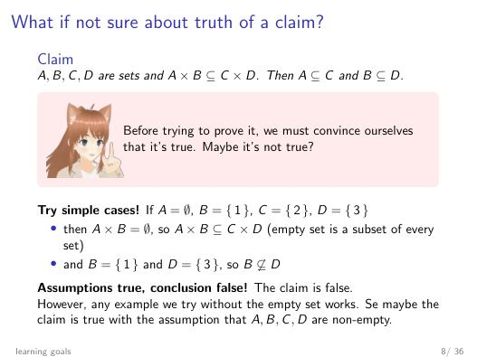<figcaption>05-lesson · 第 11 页</figcaption></figure><figure><figcaption>05-lesson · 第 7 页</figcaption></figure><figure><figcaption>05-lesson · 第 14 页</figcaption></figure></div><div class="callout tip"><b>原版图页</b>以上为源文件里<b>带插图的页面</b>（按页内图片面积选取），文字内容已在上方知识精讲里展开；看原版排版有助于考前回忆「这页讲过什么」。</div></section>
<section class="card" data-type="keywords"><div class="table-scroll" role="region" tabindex="0" aria-label="讲义表格 16，可横向滚动"><table><tr><th>English</th><th>中文</th><th>说明 / 例句</th></tr><tr><td>counterexample</td><td>反例</td><td>One x making P(x) false refutes ∀x P(x).</td></tr><tr><td>direct proof</td><td>直接证明</td><td>Prefer it when the assumption is simpler than the conclusion.</td></tr><tr><td>proof by contrapositive</td><td>逆否证明</td><td>Prefer it when ¬C is simpler than ¬A.</td></tr><tr><td>absolute value</td><td>绝对值</td><td>|x| = x for x ≥ 0, −x for x &lt; 0; |x + y| ≤ |x| + |y|.</td></tr><tr><td>Iverson bracket</td><td>艾弗森括号</td><td>[P] = 1 if P is true, 0 otherwise.</td></tr><tr><td>power</td><td>幂</td><td>bⁿ is b multiplied n times; b⁰ = 1 for b ≠ 0.</td></tr><tr><td>nth root</td><td>n 次根</td><td>r = ⁿ√x iff rⁿ = x; defined for x ≥ 0 or n odd.</td></tr><tr><td>logarithm</td><td>对数</td><td>x = log_b a iff bˣ = a; requires a, b > 0, b ≠ 1.</td></tr><tr><td>summation</td><td>求和</td><td>∑ from a to b of f(x) is f(a) + … + f(b).</td></tr><tr><td>function</td><td>函数</td><td>A relation f ⊆ X × Y with existence and uniqueness.</td></tr><tr><td>domain</td><td>定义域</td><td>The set X of inputs.</td></tr><tr><td>codomain</td><td>陪域</td><td>The set Y that outputs live in; not the same as the image.</td></tr><tr><td>injection</td><td>单射</td><td>Different inputs give different outputs.</td></tr><tr><td>surjection</td><td>满射</td><td>Every y ∈ Y is f(x) for some x ∈ X.</td></tr><tr><td>bijection</td><td>双射</td><td>Both injective and surjective; a one-to-one correspondence.</td></tr><tr><td>composition</td><td>复合</td><td>(g ∘ f)(x) = g(f(x)); f acts first.</td></tr><tr><td>inverse function</td><td>逆函数</td><td>g = f⁻¹ iff g(f(x)) = x and f(g(y)) = y; exists iff f is a bijection.</td></tr></table></div></section>
<section class="card" data-type="examples"><div class="qa"><div class="q">例 1　（源文件 Ex8）判断 s: R → [1, ∞[、s(t) = √(t² + 1) 的单射性与满射性。</div><p>单射：找反例最快。t = 1 与 t = −1 不同，但 <code>s(1) = √2 = s(−1)</code>，故不是单射。</p><p>满射：任取 y ∈ [1, ∞[，解 <code>√(t² + 1) = y</code>。平方得 t² + 1 = y²，即 <code>t² = y² − 1</code>。因 y ≥ 1，y² − 1 ≥ 0，故可取 <code>t = √(y² − 1) ∈ R</code>。</p><p>验证：<code>s(t) = √(y² − 1 + 1) = √(y²) = |y| = y</code>（y ≥ 0）。故对任意 y 都有原像，s 是满射。</p><p>结论：满射但非单射。若把定义域限制为 [0, ∞[，则 s 变成双射（见例 4）。</p></div><div class="qa"><div class="q">例 2　判断 f: Z → Z、f(n) = 2n 与 g: Z → Z、g(n) = n² 的单射与满射。</div><p>f：单射，若 2n₁ = 2n₂ 则 n₁ = n₂。不满射，因为奇数（如 3）没有原像：2n = 3 无整数解。</p><p>g：不单射，g(2) = 4 = g(−2)；也不满射，负数没有原像（n² ≥ 0）。</p><p>对比：若把 f 的陪域改为偶数集 2Z，则 f 成为双射；若把 g 的定义域改为 N、陪域改为完全平方数集，则 g 成为双射。可见“改定义域/陪域”是构造双射的常用手段。</p></div><div class="qa"><div class="q">例 3　求 f: R ∖ {2} → R、f(x) = x/(2 − x) 的逆函数。</div><p>解方程 <code>y = x/(2 − x)</code>：两边乘 (2 − x) 得 y(2 − x) = x，即 2y − yx = x，故 2y = x(1 + y)，<code>x = 2y/(1 + y)</code>。</p><p>这要求 y ≠ −1。检查 y = −1 是否有解：−1 = x/(2 − x) ⇒ −2 + x = x ⇒ −2 = 0，无解。所以 f 的值域是 R ∖ {−1}，f 作为 R ∖ {2} → R ∖ {−1} 是双射。</p><p>故 <code>f⁻¹(y) = 2y/(1 + y)</code>，定义域 R ∖ {−1}。检验：f(f⁻¹(y)) = [2y/(1+y)]/[2 − 2y/(1+y)] = [2y/(1+y)]/[2/(1+y)] = y，成立。</p><p>教训：求逆时出现的分母条件（y ≠ −1）就是值域的缺口；若把陪域写成 R，则 f 不可逆。</p></div><div class="qa"><div class="q">例 4　解 |x − 1| = 2|x − 3| 并说明为什么两个根都保留。</div><p>两边平方（非负，等价）：<code>(x − 1)² = 4(x − 3)²</code>，展开得 x² − 2x + 1 = 4x² − 24x + 36。</p><p>整理：<code>3x² − 22x + 35 = 0</code>，判别式 <code>484 − 420 = 64</code>，根为 <code>x = (22 ± 8)/6</code>，即 x = 5 与 x = 7/3。</p><p>检验：x = 5 时 |4| = 4、2|2| = 4 成立；x = 7/3 时 |4/3| = 4/3、2|−2/3| = 4/3 成立。</p><p>说明：本例两边都非负，平方是等价变形，所以不必筛根；但若一边可能为负（如 √(…) = x − 3），平方后就必须回代。</p></div><div class="qa"><div class="q">例 5　（源文件 p11–p12 的思路）证明“A × B ⊆ C × D ⇒ A ⊆ C 且 B ⊆ D”在 A、B、C、D 非空时成立，并说明空集时为何失败。</div><p>证明（非空情形）：任取 a ∈ A；因 B 非空可取 b ∈ B；于是 (a, b) ∈ A × B ⊆ C × D，故 a ∈ C。所以 A ⊆ C。同理任取 b ∈ B，取 a ∈ A 得 (a, b) ∈ C × D，故 b ∈ D。□</p><p>反例（含空集）：A = ∅、B = {1}、C = {2}、D = {3}。此时 A × B = ∅ ⊆ C × D 成立，但 B ⊄ D。</p><p>这条对照说明：先用简单情形（尤其空集、0、边界值）试探，是选证明类型之前最省时间的一步。</p></div></section>
<section class="card" data-type="practice"><ol><li>判断 f: [0, ∞[ → [0, ∞[、f(x) = x² + 1 是否为单射、满射。</li><li>求 g: R → R、g(x) = 3x − 5 的逆函数，并说明 g 是双射。</li><li>化简 √(x²) 与 (√x)²，说明两者的定义域差异。</li><li>用反例说明“若 f ∘ g = h 则 g = h ∘ f⁻¹”需要 f 可逆。</li><li>解方程 log₂ x + log₂(x − 1) = 5。</li></ol><details><summary>参考答案与思路</summary><div class="ans"><p><b>1.</b> 单射：x₁² + 1 = x₂² + 1 ⇒ x₁² = x₂² ⇒ x₁ = ±x₂；因 x ≥ 0 故 x₁ = x₂，是单射。满射：解 x² + 1 = y 得 x² = y − 1，要求 y ≥ 1；故 y ∈ [0, 1) 无原像，不是满射。</p><p><b>2.</b> 解 y = 3x − 5 得 x = (y + 5)/3，故 g⁻¹(y) = (y + 5)/3。单射显然；满射因对任意 y 都有 x = (y + 5)/3 ∈ R。</p><p><b>3.</b> √(x²) = |x|，对一切 x ∈ R 有定义；而 (√x)² = x 只在 x ≥ 0 时有定义。两者在 x ≥ 0 时相等，在 x &lt; 0 时前者为 −x、后者无意义。</p><p><b>4.</b> 取 f: R → [0,∞[、f(x) = x²（不可逆）。令 g(y) = √y、h(y) = |y|，则 g∘f = h∘f（都等于 |x|），但 g ≠ h。说明“左消去”需要 f 可逆。</p><p><b>5.</b> 定义域要求 x &gt; 0 且 x − 1 &gt; 0，即 x &gt; 1。合并：log₂(x(x−1)) = 5 ⇒ x(x−1) = 32 ⇒ x² − x − 32 = 0 ⇒ x = (1 ± √129)/2。只有 (1 + √129)/2 &gt; 1 合格，另一个为负，舍去。</p></div></details></section>
<section class="card" data-type="exam"><h2>考点分层</h2><div class="callout exam"><b>必考</b>① 判断关系是否为函数，再判单射/满射/双射并证明（2022 年第一次考试 3(b)(c)、2024 年第一次考试 5(a)、2025 年第一次考试 2(a)、第三次考试 1(b)、2024 年第三次考试第 3 题）。② 求逆函数并给出定义域（Ex10 型）。③ 绝对值或对数方程的求解与定义域检查。④ 判断命题真假并给反例。</div><div class="callout warn"><b>易错点</b>① 忘记写定义域与陪域，直接说“f(x) = x² 是函数”。② 把满射的证明写成“随便取一个 y 就有 x”（必须先任意取 y，再构造 x）。③ 单射的否定只写“有些值相等”而不给具体一对 x₁ ≠ x₂。④ 复合顺序写成 g∘f 却按 f∘g 计算。⑤ 求逆时不检查唯一解，把多值关系当函数。</div><div class="callout warn"><b>失分点</b>证明满射时没有写出“任取 y ∈ Y”的开头，或没有验证 f(x) = y，会被扣分；求逆函数不写定义域（值域缺口），答案会被判不完整。</div><div class="callout tip"><b>进阶</b>① 记住“双射 ⇔ 可逆”以及“左逆 ⇒ 单射、右逆 ⇒ 满射”。② 会用“改定义域/陪域”把非双射修成双射。③ 会用 Iverson 括号写分段函数。④ 会把根式方程转化为“非负约束 + 平方 + 回代”三步。</div></section>
<section class="card" data-type="checklist"><h2>方法清单</h2><h3>判断关系是否为函数</h3><ol class="steps"><li>检查存在性：X 中每个元素是否都有配对</li><li>检查唯一性：同一个 x 是否配了两个不同的 y</li><li>对照定义域排查“坏点”（分母为零、根号内为负、log 参数非正）</li><li>检查陪域：像是否都落在 Y 内（如 m ↦ m − 2 不是 N → N）</li><li>两条都成立才是函数，否则给出违反的那一条的具体反例</li></ol><h3>判断单射与满射</h3><ul class="checklist"><li>单射：设 f(x₁) = f(x₂)，推出 x₁ = x₂；或找 x₁ ≠ x₂ 而 f 相等</li><li>满射：任取 y ∈ Y，解 f(x) = y，构造出 x ∈ X 并验证</li><li>双射：两个都要证；若要否定，只要否定其中一个</li><li>先画图（若定义在实数子集上）猜结论，再动笔证明</li><li>注意定义域与陪域的变化会改变结论</li></ul><h3>求逆函数</h3><ol class="steps"><li>写出 y = f(x)</li><li>解出 x，得到 x = 关于 y 的表达式</li><li>记录解存在且唯一所需的 y 的条件（这给出新定义域）</li><li>把 x 与 y 互换写成 f⁻¹(y)</li><li>代回验证 f(f⁻¹(y)) = y 与 f⁻¹(f(x)) = x</li></ol></section>
<section class="card" data-type="mapping"><div class="table-scroll" role="region" tabindex="0" aria-label="讲义表格 17，可横向滚动"><table><tr><th>源文件</th><th>页码</th><th>覆盖的知识点</th></tr><tr><td>05-lesson.pdf</td><td>p2–p3</td><td>第 3 周关键词回顾、本章目录</td></tr><tr><td>05-lesson.pdf</td><td>p6–p9</td><td>解释的价值、假证明 2 = 1 的错因、A × B ⊆ C × D 的空集反例、反例与量词否定、Ex1</td></tr><tr><td>05-lesson.pdf</td><td>p11–p16</td><td>Gödel 事实、选证明类型的准则、Ex2–Ex5</td></tr><tr><td>05-lesson.pdf</td><td>p19–p22</td><td>运算顺序、多项式与 P(a) = P(b) 的单向性、绝对值定义与性质、Iverson 括号</td></tr><tr><td>05-lesson.pdf</td><td>p23–p27</td><td>幂与幂法则、根的定义与存在条件、分数指数与负底数反例、对数四条法则、求和记号</td></tr><tr><td>05-lesson.pdf</td><td>p29–p34</td><td>函数的关系定义（存在性与唯一性）、定义域与陪域、正例与非例、Ex6–Ex7</td></tr><tr><td>05-lesson.pdf</td><td>p36–p40</td><td>单射、满射、双射的定义与否定的量词形式、x³ 与 x² 的对照、解方程法、Ex8</td></tr><tr><td>05-lesson.pdf</td><td>p42–p45</td><td>复合函数的定义与顺序、与关系合成的对比、两个复合例子、逆函数定义与双射定理、Ex9–Ex10</td></tr><tr><td>06-exercise.pdf</td><td>Ex3、Ex4、Ex5、Ex6</td><td>定义域与解方程、函数与单满射判定、x/(2−x) 的性质、复合与逆</td></tr><tr><td>（跳过）</td><td>p30、p39–p40</td><td>课堂投票与图示页，结论已并入正文</td></tr><tr><td>（补充拓展）</td><td>—</td><td>Gödel 不完备性的通俗说明、左逆与右逆的区别、用 Iverson 括号写分段函数</td></tr></table></div></section><p class="sub">返回：<a href="../../c/30565/proof-strategy-functions.html">本讲独立页</a> · <a href="../../c/30565/part-2.html">本章节页</a> · <a href="#c-30565">本课目录</a></p></article><article class="alllec" id="l-30565-cardinality-countable-sets"><h3>第 6 讲 · 基数、可数集与对角线法</h3><p class="lead">Cardinality, Countable Sets and Diagonalisation <span class="badge mute">第 2 章 证明、函数与基数</span></p><section class="card" data-type="overview"><h2>本节定位</h2><p>第 5 讲把函数定义清楚了；第 6 讲把这套定义用到两件事上：一是给出单射、满射、逆函数的可操作证明策略，二是回答一个看似天真的问题——集合有多大？有限集可以数元素，无限集必须换标准，于是引入基数（cardinality）与可数/不可数。</p><p>这一讲是全课程最“反直觉”的部分：偶数与自然数一样多、旅馆客满还能再住进无限多位客人、实数多到无法列表。直觉在这里几乎全部失效，唯一可靠的是双射。对应学习目标 6.4 与 7.1–7.3。</p><p>学完本节你应当能够：</p><ul class="checklist"><li>说出定义一个函数必须交代的三件事（定义域、陪域、对应规则）</li><li>用“直接法/逆否法/解方程法”证明或否定单射与满射</li><li>用双射 f: A → B 证明两个集合基数相同</li><li>构造 N 与偶数集、N 与 Z、N 与 N×N 之间的双射</li><li>用 Hilbert 旅馆解释可数集“加一个”“加无限多个”仍可数</li><li>用对角线法证明 B(N)（全体 0/1 序列）不可数</li></ul></section>
<section class="card" data-type="detail"><h3>6.1 定义一个函数要说清三件事</h3><p>上一讲给的是形式定义，本讲看它在实践中意味着什么。要定义一个函数，必须说清：(a) 定义域（一个集合 X）；(b) 陪域（一个集合 Y）；(c) 如何给每个 x ∈ X 指定唯一的 y ∈ Y。缺任何一条，函数就没有被定义。</p><p>中学常说“设 f 是函数 x²”，这句话其实不清楚：它取值是多少？“可逆吗”？作用在数、空间点、图片、声音流还是网络结构上？只有写上定义域与陪域才有意义。中学的默认约定通常是“定义域取 R 中能取的最大子集，陪域取 R”，但那只是约定。</p><p>课件的程序语言对照很传神：C 语言的函数签名写明了“定义域 = float × int、陪域 = float、规则 = 括号里的内容”，与数学一致；Python 是动态类型（dynamically typed），不写类型，因此<b>不能</b>直接当作数学函数的定义——数学不是动态类型的。</p><h3>6.2 从关系判定函数：两个实例</h3><p>例（国籍）：<code>{ (p, c) ∈ persons × countries : p 具有国家 c 的国籍 }</code>。它是不是函数？如果允许双重国籍，一个人会对应两个 c，唯一性失败；若限定“每人只有一个国籍”，则是函数。这说明“是不是函数”取决于建模假设，而不是句子本身。</p><p>例（学号）：<code>{ (s, i) ∈ students at LUT × texts : 学生 s 的学号是 i }</code>。每个学生恰有一个学号（存在且唯一），所以是函数；反过来，没有两个学生共用同一学号，所以它还是单射（injection）。但它不是满射——并非每个字符串都是某个学生的学号。</p><p>这两例给出的判断顺序是：先查存在性（有没有人没有对应值），再查唯一性（有没有人对应两个值），最后才谈单射/满射。</p><h3>6.3 单射的证明策略</h3><p>要证 f: X → Y 是单射，有两条路。直接法：假设 x₁ ≠ x₂，证明 f(x₁) ≠ f(x₂)。逆否法（更常用）：假设 f(x₁) = f(x₂)，证明 x₁ = x₂。第三条等价说法：给定 y ∈ Y，方程 f(x) = y 在 X 中至多有 0 个或 1 个解。</p><p>要证 f 不是单射：找一对 x₁, x₂ ∈ X 使 x₁ ≠ x₂ 但 f(x₁) = f(x₂)。一对反例足够。</p><p>Ex1：<code>f: [2, ∞[ → R</code>、f(x) = x² − 4x + 7 是否单射？配方得 f(x) = (x − 2)² + 3，在 [2, ∞[ 上严格递增，故是单射。逆否证明：若 (x₁−2)² + 3 = (x₂−2)² + 3，则 (x₁−2)² = (x₂−2)²，即 |x₁ − 2| = |x₂ − 2|；因两者都 ≥ 0，得 x₁ − 2 = x₂ − 2，故 x₁ = x₂。□</p><p>Ex2：<code>g: R → R</code>、g(x) = |x + 5| 是否单射？取 x₁ = −4、x₂ = −6，两者不同，但 g 都等于 1，故不是单射。（图像是 V 形，水平线撞两次。）</p><h3>6.4 满射的证明策略</h3><p>要证满射：设 y ∈ Y 是任意的（arbitrary，不是特殊选取的），证明存在 x ∈ X 使 f(x) = y。实际操作就是解方程 f(x) = y 并把 x 写出来。要证不是满射：找一个 y ∈ Y，使 f(x) = y 在 X 中无解。</p><p>Ex3：<code>f: R → [3, ∞[</code>、f(x) = x² − 4x + 7 是否满射？配方 f(x) = (x−2)² + 3 ≥ 3。任取 y ≥ 3，解 (x−2)² + 3 = y，得 (x−2)² = y − 3 ≥ 0，取 <code>x = 2 + √(y − 3)</code>，则 f(x) = y。故是满射。</p><p>Ex4：<code>g: R → R</code>、g(x) = |x + 5| 是否满射？取 y = −1，对任意 x 都有 g(x) ≥ 0 &gt; −1，故无解，不是满射。注意这与“值域是 [0, ∞[”是一致的：陪域 R 比值域大，所以不满射。</p><div class="callout tip"><b>一句话区分</b>单射看“不同的 x 会不会撞到同一个 y”；满射看“每个 y 是否都被撞到”。前者用等式推等式，后者用解方程构造 x。</div><h3>6.5 复合与逆：两个提醒</h3><p>复合例（源文件 p17）：<code>f: N → Z, f(n) = n² − 25</code>；<code>g: Z → R, g(r) = πr²</code>。则 <code>(g ∘ f)(n) = π(n² − 25)²</code>。务必先算 f 再平方，括号不能省。第二个例子（字符串的 LL 与 FW）说明复合不交换：<code>FW ∘ LL</code> 取最后字符，<code>LL ∘ FW</code> 取第一个单词的最后字符。</p><p>逆函数要检查两个方向：<code>g(f(x)) = x</code> 与 <code>f(g(y)) = y</code> 都对，才写 g = f⁻¹。<code>f: R → [0,∞[、f(x)=x²</code> 与 <code>g: [0,∞[ → R、g(y)=√y</code> 满足 f(g(y)) = y，但 g(f(−1)) = 1 ≠ −1，所以 g ≠ f⁻¹；事实上 f 不是双射，逆不存在。</p><h3>6.6 先比较有限集：元素个数</h3><p>两个有限集 A、B “一样大”当且仅当元素个数相同，记 <code>#A = #B</code>。<code>#A</code> 的取值是自然数 0, 1, 2, … 或无穷 ∞。</p><p>Ex5 练习：<code>#{a, b, c, d} = 4</code>；<code>#{ x ∈ R : x² − 2x − 1 = 0 } = 2</code>（判别式 4 + 4 = 8 &gt; 0，两个实根）；<code>#{ n ∈ N : (−5)ⁿ &gt; 0 }</code>：n 为偶数时为正，n 为奇数时为负，故个数为无穷（∞）。</p><h3>6.7 无限集：用双射定义基数</h3><p>两个集合 A、B 基数相同（have the same cardinality）当且仅当存在双射 <code>f: A → B</code>。这把元素“一一配对”，不需要数数。</p><p>两条例子：若 #A = n、#B = m 都是有限数，则 A 与 B 基数相同当且仅当 n = m（与“个数相同”一致）；N 与偶数集 {0, 2, 4, 6, …} 基数相同，双射是 <code>f(n) = 2n</code>（Ex6 要求证明这一点：单射显然，满射因任意偶数 2k 都有原像 k）。</p><p>还有一个方向性结论：存在满射 P(N) → N，但不存在单射 P(N) → N，故 P(N) 比 N “大”。（证明在背景材料 Lecture 4 的 Example 18；本课程只要求知道结论与“用双射比较”的方法。）</p><h3>6.8 可数与不可数</h3><p>若存在双射 <code>N → A</code>，则称 A 可数（countable）。若 A 无限但不可数，则称不可数（uncountable）。可数的直观含义是“能把元素排成一个无限列表”：若 f: N → S 是双射，则 <code>S = {f(1), f(2), f(3), …}</code>，因为 f 是满射保证都列到，f 是单射保证不重复。</p><p>历史注记：Cantor（1845–1918）在 1880 年代的著作是集合论的起点，他引入幂集、确立一一对应的重要性、定义无限集，并证明不可数集存在。课件也提到近年有研究指出他可能有学术伦理问题（未列入合作者姓名）。</p><h3>6.9 基数不等于“密度”</h3><p>很多人认为偶数集 <code>E = {2, 4, 6, …}</code> 的元素“只有正整数的一半”。这是错的：两者都无限多，<code>#E = ∞ = #Z⁺</code>，而且基数相同，双射是 <code>h(n) = n/2</code>。</p><p>不过它们确实有不同的密度（density）：<code>#(E ∩ {1,…,n}) / n → 1/2</code>，而 <code>#(Z⁺ ∩ {1,…,n}) / n → 1</code>。所以“一样大”有三种口径：元素个数（仅有限集）、基数（本课程采用）、密度（不讨论）。考试里凡问“是否一样多”，一律用基数回答。</p><h3>6.10 Hilbert 旅馆</h3><p>旅馆有房间 1, 2, 3, …，全部客满。来了一位新客人，经理想出办法：广播“请每位客人搬到下一号房，1 号搬 2 号，2 号搬 3 号……”。于是 1 号房空出来给新客人，没有人退房。对应的双射是 <code>n ↦ n + 1</code>，它把正整数集映到 {2, 3, 4, …}，留下 1 号房。</p><p>第二晚来了无限多位新客人（Guest 1, Guest 2, …）。经理让老客人搬到“房号的两倍”：<code>n ↦ 2n</code>，于是所有奇数号房空出；新客人按 <code>n ↦ 2n − 1</code> 入住。两个映射合起来是 <code>N → N</code> 的双射，说明“已满的无限旅馆”还能再容纳可数无限多客人。</p><p>课件的思考题：房费 1 欧元、维护费 500 欧元，旅馆怎么活？提示是看现金流与“无限”的关系——这是数学玩笑，不必深究；要点是理解“无限集可以与其真子集等势”。</p><h3>6.11 可数集的两条封闭性质</h3><p>命题：若 A、B 都是可数无限集，则 (a) A ∪ B 可数无限；(b) A × B 可数无限。直观对应旅馆的两种情形：(a) 是可数无限多客人来到已满的旅馆；(b) 是可数无限辆大巴、每辆载可数无限多客人来到空旅馆。</p><p>构造思路（(b)）：把 A、B 都按 N 编号，<code>a₀, a₁, a₂, …</code> 与 <code>b₀, b₁, b₂, …</code>，再按“对角线”枚举：先列 (a₀,b₀)，再列和为 1 的两对 (a₀,b₁)、(a₁,b₀)，再列和为 2 的三对……每一对都会在有限步内被列到，且不重复，于是得到 N → A × B 的双射。</p><p>另一条常用双射是 <code>(m, n) ↦ 2<sup>m</sup>(2n + 1)</code>，它把 N × N 双射到正整数（每个正整数唯一分解为 2 的幂乘以奇数）。考试里若要证明 N × N 可数，给出任一显式双射即可。</p><h3>6.12 不可数：实数无法列表</h3><p>R 是无限集，但它的元素极难（事实上不可能）排成一个列表：无论你给出什么列表，我都能构造出一个不在列表里的数——这就是 Cantor 的对角化论证（diagonalisation argument）。</p><p>定义：若 A 无限但不存在双射 f: N → A，则 A 不可数。常见不可数集：R 及 R²、R³、Rⁿ；P(N)；从某个无限集 X 到“至少有 2 个元素”的集合 Y 的全体函数 <code>{f: X → Y}</code>；还有很多。</p><h3>6.13 证明不可数的两种策略</h3><p>策略 1（直接）：构造一个到已知不可数集（如 R 或 P(N)）的双射。策略 2（反证）：假设它可数，导出矛盾。最有名的策略 2 就是对角化。</p><p>对角化的标准范例：全体无限二进制序列 <code>B(N) = { s : N → {0, 1} }</code> 不可数。证明：假设存在双射 f: N → B(N)，记 <code>s_n = f(n)</code>，于是所有序列可以竖排成一张表，第 n 行是 s_n 的各位。构造新序列 <code>s_new(n) = 0（若 s_n(n) = 1）</code>、<code>s_new(n) = 1（若 s_n(n) = 0）</code>，即把对角线上每一位取反。</p><p>检验：s_new ≠ s₀，因为第 0 位不同；s_new ≠ s₁，因为第 1 位不同；对任意 x，s_new ≠ s_x，因为第 x 位不同。所以 s_new 不在表里。但 s_new ∈ B(N)，与“表列出全部元素”矛盾。故 B(N) 不可数。□</p><p>为什么这条证明能用在 R 上？因为实数（在 [0,1] 区间内）可以写成二进制小数，其各位构成 0/1 序列；把序列的集合换成实数的集合，对角化照搬即可。注意二进制小数有“0.1000… = 0.0111…”这类双表示问题，严格证明时要避开，本课程只要求掌握结构与思想。</p><h3>6.14 拓展：基数的大小比较</h3><p>记号：若存在单射 <code>f: A → B</code>，则说 A 的基数不超过 B 的基数，写 <code>A ≾ B</code>；若存在满射 f: A → B，则说 A 的基数不小于 B 的，写 <code>A ≿ B</code>。</p><p>Cantor–Schröder–Bernstein 定理：若 A ≾ B 且 B ≾ A，则 A ≈ B（存在双射）。课件打趣说它的证明“像洋葱：一层一层，而且会让你流泪”。它的实用价值是：要证两个集合基数相同，可以分别构造两个方向的单射，往往比直接构造双射容易。</p><p>另有几条需要选择公理（axiom of choice）的结论：(a) 若 A ≿ B 且 B ≿ A 则 A ≈ B；(b) 若 A ≿ B 且 A ≾ B 则 A ≈ B；(c) 分割原理（partition principle）：若 A ≿ B 则 B ≾ A。这些属拓展，考试不要求证明。</p><p>把整讲的逻辑再串一遍：比较大小先问“是有限集吗”。有限集直接数元素；无限集改用双射，因为数数会永远数不完。一旦用双射，就会发现 N、偶数集、Z、N×N、全体素数、全体有理数 Q 全都“一样大”，而 R、P(N)、B(N) 都比它们严格更大。判卷时最常见的错误是把“看起来稀疏”当作“更小”——稀疏是密度，大小是基数。</p><div class="callout idea" data-ext="cardinality-countable-sets-0"><b>常见误解</b><p>定义一个函数要说清三件事：定义域 X、陪域 Y，以及如何给每个 x ∈ X 指定唯一的 y ∈ Y，缺一不可。中学说函数 x² 并不完整，只有写上定义域与陪域才谈得上可逆；C 的函数签名写明了 float×int 到 float，与数学一致，Python 动态类型不写类型，不能直接当数学函数定义。判断关系是否函数，先查存在性再查唯一性，最后才谈单射满射：允许双重国籍就不是函数，每人恰一学号则是函数且单射，但并非每个字符串都是学号，故不满射。</p></div><h3>原版图页（源 PDF 插图页）</h3><div class="imggrid" data-imgbatch="1"><figure>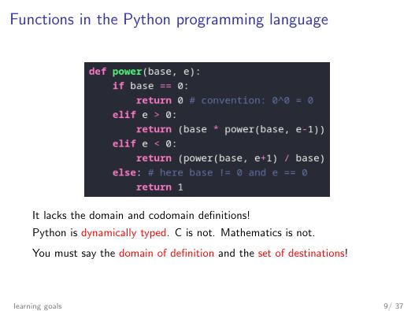<figcaption>06-lesson · 第 11 页</figcaption></figure><figure><figcaption>06-lesson · 第 10 页</figcaption></figure><figure><figcaption>06-lesson · 第 9 页</figcaption></figure><figure><figcaption>06-lesson · 第 43 页</figcaption></figure><figure><figcaption>06-lesson · 第 29 页</figcaption></figure><figure><figcaption>06-lesson · 第 25 页</figcaption></figure><figure><figcaption>06-lesson · 第 6 页</figcaption></figure></div><div class="callout tip"><b>原版图页</b>以上为源文件里<b>带插图的页面</b>（按页内图片面积选取），文字内容已在上方知识精讲里展开；看原版排版有助于考前回忆「这页讲过什么」。</div>
<h3>6.0 从伽利略悖论到无限基数：双射作为度量无限的唯一尺度</h3>
<p>康托尔确立了无限基数的公理化标准：两集合等势（<code>|A| = |B|</code>）当且仅当存在双射 <code>f: A → B</code>。与自然数等势的集合称为可数无限集（基数记为 <code>ℵ₀</code>）。</p>
<h3>6.1 康托尔配对函数与有理数集 ℚ 的可数性严密证明</h3>
<p>有理数在数轴处处稠密，但基数依然是可数的！构造配对函数 <code>π(k₁, k₂) = [ (k₁ + k₂ - 1)(k₁ + k₂ - 2) ] / 2 + k₂</code> 沿斜对角线遍历 <code>ℕ⁺ × ℕ⁺</code>，建立了显式双射，证明了 <code>|ℚ| = |ℕ| = ℵ₀</code>。</p>
<h3>6.2 希尔伯特无限旅馆的数学分段函数构造</h3>
<p>再来一辆无限大巴时：原房客 <code>f(n) = 2n</code>，新客人 <code>g(k) = 2k - 1</code>。再来可数无限辆大巴时：利用质数幂分解定理，原房客住 <code>2ⁿ</code> 房，第 i 辆大巴第 j 位客人住 <code>p_{i+1}^j</code> 房，因质数互质绝无重房冲突！</p>
<h3>6.3 康托尔定理的本质证明：|S| < |P(S)| 对角线子集反证法</h3>
<p>证明任意集合的幂集势严格大于原集：构造对角子集 <code>D = { x ∈ S | x ∉ f(x) }</code>。若存在满射 f 使得 <code>f(d) = D</code>，无论 <code>d ∈ D</code> 还是 <code>d ∉ D</code> 均导致不可消除的逻辑悖论！故不存在满射，证得 <code>|S| < |P(S)|</code>。 $lacksquare$</p>
</section>
<section class="card" data-type="keywords"><div class="table-scroll" role="region" tabindex="0" aria-label="讲义表格 18，可横向滚动"><table><tr><th>English</th><th>中文</th><th>说明 / 例句</th></tr><tr><td>cardinality</td><td>基数</td><td>A and B have the same cardinality iff a bijection A → B exists.</td></tr><tr><td>countable</td><td>可数</td><td>There is a bijection N → A; the elements can be listed.</td></tr><tr><td>uncountable</td><td>不可数</td><td>Infinite but no bijection from N exists.</td></tr><tr><td>Hilbert’s hotel</td><td>希尔伯特旅馆</td><td>A full infinite hotel can still take new guests.</td></tr><tr><td>diagonalisation</td><td>对角化</td><td>Flip the diagonal to build an element missing from any list.</td></tr><tr><td>infinite binary sequence</td><td>无限二进制序列</td><td>A map s: N → {0, 1}; the set B(N) is uncountable.</td></tr><tr><td>density</td><td>密度</td><td>The limit of #(A ∩ {1,…,n})/n; different from cardinality.</td></tr><tr><td>one-to-one correspondence</td><td>一一对应</td><td>A bijection; pairs elements without counting.</td></tr><tr><td>proper subset</td><td>真子集</td><td>An infinite set can be equinumerous with a proper subset.</td></tr><tr><td>Cantor–Schröder–Bernstein</td><td>康托-伯恩斯坦定理</td><td>Injections both ways imply a bijection.</td></tr><tr><td>axiom of choice</td><td>选择公理</td><td>Needed for some comparisons of cardinalities.</td></tr><tr><td>enumeration</td><td>枚举</td><td>Listing elements as a₀, a₁, a₂, … to build a bijection from N.</td></tr></table></div></section>
<section class="card" data-type="examples"><div class="qa"><div class="q">例 1　（源文件 Ex1、Ex3）讨论 f(x) = x² − 4x + 7 在两种定义域/陪域下的单射与满射性。</div><p>先配方：<code>f(x) = (x − 2)² + 3</code>，故最小值 3 在 x = 2 取到，图像是开口向上的抛物线。</p><p>作为 <code>[2, ∞[ → R</code>：在 [2, ∞[ 上严格递增。设 f(x₁) = f(x₂)，则 (x₁−2)² = (x₂−2)²，即 |x₁−2| = |x₂−2|；因 x₁−2, x₂−2 ≥ 0，得 x₁ = x₂。故是单射。</p><p>作为 <code>R → [3, ∞[</code>：任取 y ≥ 3，解 (x−2)² = y − 3，取 <code>x = 2 + √(y−3)</code>，则 f(x) = y，故是满射。</p><p>作为 <code>R → R</code>：既不单射（f(1) = f(3) = 4）也不满射（y = 0 无解）。三个结论不同，唯一差别是定义域与陪域。</p></div><div class="qa"><div class="q">例 2　（源文件 Ex6）证明 N 与偶数集 E = {0, 2, 4, …} 基数相同。</div><p>构造 <code>f: N → E</code>、f(n) = 2n。先确认它确实映到 E（值都是偶数，合法）。</p><p>单射：若 2n₁ = 2n₂，两边除以 2 得 n₁ = n₂。满射：任取 m ∈ E，则 m = 2k 对某个 k ∈ N，取 n = k 得 f(n) = m。</p><p>故 f 是双射，N 与 E 基数相同。□ 这与“偶数只占一半”的直觉冲突，冲突来自把“密度”当成了“基数”。</p></div><div class="qa"><div class="q">例 3　（源文件 p39–p40）证明 B(N) = { s : N → {0, 1} } 不可数。</div><p>反证。假设存在双射 f: N → B(N)，记 s_n = f(n)。把所有序列竖排成表：第 n 行是 s_n(0), s_n(1), s_n(2), …。</p><p>定义新序列 <code>s_new(n) = 0（若 s_n(n) = 1）</code>、<code>s_new(n) = 1（若 s_n(n) = 0）</code>，即对角位取反。</p><p>对任意 x ∈ N，比较 s_new 与 s_x：它们在位置 x 上不同（一个是 0、一个是 1），故 s_new ≠ s_x。</p><p>于是 s_new 不在表中，但 s_new ∈ B(N)，与“表包含全部元素”矛盾。故不存在这样的双射，B(N) 不可数。□</p></div><div class="qa"><div class="q">例 4　构造 N → N × N 的显式双射，并解释“对角线枚举”。</div><p>显式公式：<code>g(m, n) = 2<sup>m</sup>(2n + 1)</code>。由算术基本定理，每个正整数唯一写成“2 的幂 × 奇数”，故 g 是双射（单射：分解唯一；满射：任给 k，把它写成 2<sup>m</sup> 乘奇数 2n+1）。</p><p>对角线枚举的直观：把 N × N 画成方格，(0,0)；(0,1)、(1,0)；(0,2)、(1,1)、(2,0)；…… 按 m + n 递增逐条对角线枚举，每条对角线上元素有限，故每个 (m, n) 都会在有限步内被访问且只访问一次，于是得到 N → N × N 的双射。</p><p>两种构造都说明 N × N 可数，这是 6.11 节 (b) 的具体实现。</p></div><div class="qa"><div class="q">例 5　用 Hilbert 旅馆说明“可数集 + 一个元素”仍可数。</div><p>设 A = {a₀, a₁, a₂, …} 可数，新元素为 b。定义 <code>h: A ∪ {b} → A</code>：h(b) = a₀，h(aₙ) = a<sub>n+1</sub>。</p><p>单射：b 映到 a₀，而 aₙ 映到 a<sub>n+1</sub>，后者的下标 ≥ 1，与 a₀ 不冲突；不同 aₙ 的下标不同，像也不同。满射：a₀ 有原像 b，a<sub>k</sub>（k ≥ 1）有原像 a<sub>k−1</sub>。</p><p>故 A ∪ {b} 与 A 基数相同，即可数。这就是“全体客人搬到下一号房”的数学版本。若新来可数无限多位，则用 h(bₙ) = a<sub>2n−1</sub>、h(aₙ) = a<sub>2n</sub>（下标从 1 起），同样得到双射。</p></div></section>
<section class="card" data-type="practice"><ol><li>判断 f: R → R、f(x) = 2x + 1 的单射与满射性，并求逆。</li><li>证明 N 与 Z 基数相同（构造双射）。</li><li>判断 g: [0, ∞[ → [0, ∞[、g(x) = x² 是否为双射，并求逆。</li><li>说明为什么“存在满射 P(N) → N”意味着 P(N) 不比 N 小。</li><li>用对角线法证明区间 (0, 1) 内的实数不可数（写出构造思路即可）。</li></ol><details><summary>参考答案与思路</summary><div class="ans"><p><b>1.</b> 单射：2x₁ + 1 = 2x₂ + 1 ⇒ x₁ = x₂。满射：任取 y，取 x = (y − 1)/2 ∈ R。故双射，f⁻¹(y) = (y − 1)/2。</p><p><b>2.</b> 双射：f(0) = 0，f(1) = 1，f(2) = −1，f(3) = 2，f(4) = −2…… 即 n 偶时 f(n) = n/2，n 奇时 f(n) = −(n+1)/2。单射与满射都可逐条验证。</p><p><b>3.</b> 单射：x₁² = x₂² 且两者 ≥ 0 ⇒ x₁ = x₂。满射：任取 y ≥ 0，取 x = √y。故双射，g⁻¹(y) = √y。</p><p><b>4.</b> 若有满射 P(N) → N，则 P(N) 的基数不小于 N；而由 Cantor 定理不存在单射 P(N) → N，故 P(N) 严格更大。这与“R 不可数”是同一层次的结论。</p><p><b>5.</b> 假设 (0,1) 可数，列出 x₁, x₂, …，每个写成二进制小数 0.b₁b₂…。取新数 y，其第 n 位取反（并避开双表示问题，例如规定只用不终止的展开）。则 y ≠ xₙ 对一切 n 成立，但 y ∈ (0,1)，矛盾。</p></div></details></section>
<section class="card" data-type="exam"><h2>考点分层</h2><div class="callout exam"><b>必考</b>① 判断给定函数是单射/满射/双射并证明（连续多年出现在第 3 或第 5 题）。② 求逆函数并给出定义域。③ 说明两个集合基数相同（构造双射，如 N 与偶数、N 与 Z、N 与 N×N）。④ 用对角线法论证不可数（多以“说明思路”形式出现）。</div><div class="callout warn"><b>易错点</b>① 把“可数”理解成“有限”。② 用“密度”代替基数，得出“偶数比自然数少”的错误结论。③ 证明单射时只验证了一个方向（例如只说“递增所以单射”而不写推导）。④ 证明满射时把 y 取成特殊值。⑤ 用 √(x²) = x 而不加绝对值，破坏双射性。</div><div class="callout warn"><b>失分点</b>构造双射时只给公式不验证单射与满射，通常只能拿一半分；对角线证明不写“对任意 x，第 x 位不同”这一句，会被判论证不完整。</div><div class="callout tip"><b>进阶</b>① 会算 N × N → N 的两种显式双射。② 理解“无限集可与其真子集等势”是无限集的定义性特征。③ 知道 P(N) 与 R 同基数（连续统）。④ 会用 Cantor–Schröder–Bernstein 定理，把双射问题拆成两个单射。</div></section>
<section class="card" data-type="checklist"><h2>方法清单</h2><h3>证明两个集合基数相同</h3><ol class="steps"><li>先猜一个自然的配对规则（n ↦ 2n、n ↦ n/2、m,n ↦ 2<sup>m</sup>(2n+1) 等）</li><li>验证它映到目标集合（值域正确）</li><li>证单射：由 f(a) = f(b) 推出 a = b</li><li>证满射：任取目标元素，构造原像并代回验证</li><li>写结论：存在双射，故基数相同</li></ol><h3>证明一个集合不可数</h3><ul class="checklist"><li>先假设存在双射 f: N → A，把元素排成表</li><li>对“表”做对角构造，造出一个不可能在表里的元素</li><li>验证该元素确实属于 A（这一步最容易被忽略）</li><li>指出与“表包含全部元素”矛盾</li><li>若 A 是实数，先把实数写成小数/二进制展开，再套同一构造</li></ul><h3>判断单射与满射（公式型函数）</h3><ol class="steps"><li>写出定义域与陪域，配方或求导判断单调性与值域</li><li>单射：设 f(x₁) = f(x₂) 推 x₁ = x₂，或给出一对撞车的反例</li><li>满射：任取 y，解 f(x) = y，检查解是否落在定义域内</li><li>两者都成立才是双射；此时才谈逆函数</li></ol></section>
<section class="card" data-type="mapping"><div class="table-scroll" role="region" tabindex="0" aria-label="讲义表格 19，可横向滚动"><table><tr><th>源文件</th><th>页码</th><th>覆盖的知识点</th></tr><tr><td>06-lesson.pdf</td><td>p5–p11</td><td>函数的实践含义、国籍与学号两例、C 与 Python 的对照、定义函数的三要素</td></tr><tr><td>06-lesson.pdf</td><td>p12–p16</td><td>单射/满射/双射回顾、单射与满射的证明策略、Ex1–Ex4、复合例</td></tr><tr><td>06-lesson.pdf</td><td>p18–p19</td><td>逆函数的双向检验、√(x²) = |x| 的反例</td></tr><tr><td>06-lesson.pdf</td><td>p22–p27</td><td>元素个数 #A、Ex5、用双射定义基数、可数/不可数、Cantor、密度与基数的区别</td></tr><tr><td>06-lesson.pdf</td><td>p29–p34</td><td>Hilbert 旅馆的两次扩容、可数集对并与积的封闭性</td></tr><tr><td>06-lesson.pdf</td><td>p36–p43</td><td>实数不可列表、不可数的定义与常见例子、两种证明策略、B(N) 的对角化证明、Cantor–Schröder–Bernstein 与选择公理</td></tr><tr><td>07-exercise.pdf</td><td>Ex1、Ex2</td><td>字符串拼接函数的单射/满射、置换与双射练习</td></tr><tr><td>（跳过）</td><td>p6–p7、p13–p14、p29–p33</td><td>课堂活动与故事页，结论已并入正文</td></tr><tr><td>（补充拓展）</td><td>—</td><td>N×N 的显式双射 2<sup>m</sup>(2n+1)、对角线枚举的图示解释、(0,1) 不可数的二进制版本</td></tr></table></div></section><p class="sub">返回：<a href="../../c/30565/cardinality-countable-sets.html">本讲独立页</a> · <a href="../../c/30565/part-2.html">本章节页</a> · <a href="#c-30565">本课目录</a></p></article><h2 class="allpart" id="p-30565-3">第 3 章 计数与归纳 <span class="badge mute">2 讲</span> <a class="sub" href="../../c/30565/part-3.html">章节页 →</a></h2><article class="alllec" id="l-30565-combinatorics-counting"><h3>第 7 讲 · 组合计数：四公式、Pascal 三角与二项式定理</h3><p class="lead">Combinatorics: Four Counting Formulas, Pascal’s Triangle and the Binomial Theorem <span class="badge mute">第 3 章 计数与归纳</span></p><section class="card" data-type="overview"><h2>本节定位</h2><p>第 7 讲只有一件事：数清楚“从 n 个选项里选 k 次”有多少种做法。听起来简单，但四种情形（能否重复 × 顺序是否重要）给出四个完全不同的公式，而考试题往往把它们混在同一道题里考。</p><p>这一讲的另一条线是二项式系数：<code>C(n, k)</code> 既出现在计数公式里，也出现在 Pascal 三角与二项式展开中。第 8 讲会用归纳法证明 Pascal 递推，第 12 讲会把二项式系数用在矩阵幂上。</p><p>学完本节你应当能够：</p><ul class="checklist"><li>对任一计数问题先问三件事：能重复吗、顺序重要吗、有没有额外限制</li><li>熟练写出四个公式并说出各自的适用条件</li><li>把“函数个数”“单射个数”“双射个数”翻译成计数公式</li><li>用“点与竖线”编码解释可重复无顺序公式 C(k+n−1, k)</li><li>写出 Pascal 三角的前几行，并会用递推公式</li><li>用二项式定理展开 (a + b)ⁿ 并说明系数的组合意义</li></ul></section>
<section class="card" data-type="detail"><h3>7.1 组合数学在数什么</h3><p>组合数学（combinatorics）研究“一件事能以多少种方式发生”。历史上的两个例子：印度《Bhagabadi Sutra》（约公元前 300 年）问“从甜、辣、涩、酸、咸、苦六种味道中选一、二或三种，有多少种组合”；中国《易经》（约公元前 1000–200 年）的六十四卦，是六条线、每条线有阴（断）阳（连）两态的“可重复排列”，共 2⁶ = 64 种。</p><p>课程把它们统一成一句话：<b>做 k 次选择，开始时有 n 个选项。</b>例如“从 6 个味道里选 3 个”：k = 3、n = 6，不能重复、顺序无关（甜酸咸与酸甜咸是同一盘菜）；“写 6 条线，每条两态”：k = 6、n = 2，可重复、顺序有关（卦象不同）。</p><p>动手之前必须回答三个问题：(a) 能重复吗？(b) 顺序重要吗？(c) 还有别的限制吗？前两条决定用哪个公式，第三条决定这道题是否“超出四公式范围”。课件给的例子 “4 位老师教 7 个班，每人至少教一个班” 就属于第三条：因为“至少一个”是额外限制，不能直接套公式。</p><h3>7.2 四个公式的总表</h3><div class="table-scroll" role="region" tabindex="0" aria-label="讲义表格 20，可横向滚动"><table><tr><th></th><th>顺序重要 order matters</th><th>顺序无关 order doesn’t matter</th></tr><tr><td>允许重复 with repetition</td><td>n<sup>k</sup></td><td>C(k + n − 1, k)</td></tr><tr><td>不允许重复 no repetition</td><td>n! / (n − k)!</td><td>C(n, k) = n! / (k!(n − k)!)</td></tr></table></div><p>记忆方法：<b>先看重复</b>（重复 → 幂或“点线编码”；不重复 → 阶乘或二项式系数），<b>再看顺序</b>（顺序 → 除 (n−k)! 或直接相乘；无关 → 再除 k!）。四格里对角线上的两个公式最容易混：<code>n<sup>k</sup></code> 与 <code>C(k+n−1,k)</code> 都是“可重复”，区别只在顺序。</p><h3>7.3 可重复且顺序重要：n<sup>k</sup></h3><p>做 k 次选择、每次 n 个选项、可重复、顺序重要（两次选择结果只要某一位不同就算不同）。第 1 次有 n 个选项，第 2 次仍有 n 个（前面的选择不限制后面的），……第 k 次仍是 n 个，故总数 <code>n<sup>k</sup> = n × n × … × n</code>（k 个因子）。</p><p>典型例子：三位数密码锁，每位 0–9，允许 999、456 与 654 不同，故共 10³ = 1000 种（也可理解为从 000 = 0 到 999 共 1000 个数）。Ex1：一周 6 道题，每题“做了/没做”，填分表的方式有 2⁶ = 64 种。Ex2：A 有 12 个元素，则 <code>A³ = A × A × A</code> 有 12³ = 1728 个元素。Ex3：B 有 3 个元素，则有序对有 3² = 9 个（无序的二元子集只有 C(3,2) = 3 个）。</p><p>与函数的关系：若 #A = k、#B = n，则从 A 到 B 的函数共 <code>n<sup>k</sup></code> 个。理由是对 A 的每个元素独立地选一个像，k 个元素各 n 种选择。这条把“计数”与“函数”直接连起来：Ex6 问 #A = 3、#B = 4 时有多少函数，答 4³ = 64。</p><h3>7.4 不重复且顺序重要：n!/(n−k)!</h3><p>第 1 次 n 个选项，第 2 次 n − 1 个（不能选已选的），…，第 k 次 n − k + 1 个，故总数 <code>n(n−1)…(n−k+1) = n!/(n−k)!</code>。记号 <code>a! = a(a−1)(a−2)…3·2·1</code>，并约定 0! = 1。</p><p>经典例子（源文件 p19）：芬兰冰球联赛 15 支队伍，发金、银、铜牌，不允许并列。金牌 15 种、银牌 14 种、铜牌 13 种，故 15 × 14 × 13 = 2730 种。课件把 2730 个三元组逐一列出，说明“顺序不同算不同结果”（HPK, IFK, ILV 与 HPK, ILV, IFK 是两种）。</p><p>Ex4：三个任务 E（查邮件）、H（做作业）、C（上课），安排顺序有 3! = 6 种。Ex5：#A = 3、#B = 4 时单射有 4 × 3 × 2 = 24 个；#A = 4、#B = 3 时没有单射（抽屉原理：4 个元素映到 3 个值必撞车），公式给 3!/(3−4)! 无意义，说明必须 k ≤ n。</p><p>趣味等式：六周有多少秒？<code>10! = 60 × 60 × 24 × 7 × 6 = 3628800</code>。因为 60 秒 × 60 分 × 24 小时 × 7 天 × 6 周，恰好是 10! 的分解。</p><h3>7.5 单射与双射的个数</h3><p>当 #A = k、#B = n 且 k ≤ n 时，单射 f: A → B 的个数是 <code>n!/(n−k)!</code>（k 个因子相乘）。特别地，当 #A = #B = n 时，双射个数是 <code>n!</code>——这正是“n 个元素的排列数”。</p><p>满射的个数不在本课程范围内，因为它很难（与 Stirling 数有关）。考试若出现“满射计数”，通常只是要求判断“这属于哪一类”，或说明“不能直接套公式”。</p><h3>7.6 不重复且顺序无关：C(n, k)</h3><p>先按“有顺序”选：<code>n!/(n−k)!</code> 种；每个最终的无序选择对应 k! 种不同的排列（k 个元素的全排列），故要除以 k!：<code>C(n, k) = n!/((n−k)!·k!)</code>，读作“n choose k”，称为二项式系数（binomial coefficient）。</p><p>例（源文件 p27–p28）：从六种味道里选两种做菜，不能重复（甜甜不算），顺序无关（甜酸 = 酸甜）。按有序算是 6 × 5 = 30 种，每种无序组合被数了 2! = 2 次，故 <code>30/2 = 15</code> 种。课件把 30 个有序对全部列出再两两配对，直观展示“除以 k!”的过程。</p><p>性质：<code>C(n, k) = C(n, n−k)</code>（选 k 个等价于留下 n−k 个）；C(n, 0) = C(n, n) = 1；<code>C(n, 1) = n</code>。若 #A = n，则 A 的 k 元子集个数为 <code>C(n, k)</code>——这正是第 2 讲幂集 2ⁿ 的加总来源：<code>Σ_k C(n, k) = 2ⁿ</code>。</p><p>Ex7：六种味道选三种，<code>C(6,3) = 20</code>。Ex8：5 元素集合的 2 元子集有 <code>C(5,2) = 10</code> 个。</p><h3>7.7 可重复且顺序无关：多重集</h3><p>多重集（multiset）是“顺序无关但允许重复”的集合：作为多重集 <code>{2, 2} ≠ {2}</code>、<code>{2, 3, 2} = {2, 2, 3} ≠ {2, 3}</code>。若 #A = n，则 A 的 k 元多重集个数是 <code>C(k + n − 1, k)</code>。</p><p>推导（点线编码）：一个选择可以这样记录——先约定颜色顺序，然后写一串“点”和“竖线”：每个点代表一个当前颜色的物品，每条竖线代表“换到下一种颜色”。选 k 个物品、有 n 种颜色，就需要 k 个点与 n − 1 条竖线，共 <code>k + n − 1</code> 个符号。任意选定其中哪 k 个位置放点（其余放竖线），就唯一确定一种选择；不同的选择对应不同的符号串。故总数为 <code>C(k + n − 1, k)</code>。</p><p>例（源文件 p33–p37）：用 5 种颜色装 6 个马卡龙，<code>C(6 + 5 − 1, 6) = C(10, 6) = 210</code>。编码 <code>...||.|.|.</code>（颜色顺序绿、黄、紫、红、蓝）表示 3 绿、0 黄、1 紫、1 红、1 蓝。Ex10：黑五购物车恰好 4 件、店里有 100 种商品，<code>C(4 + 100 − 1, 4) = C(103, 4) = 4421275</code> 种。Ex11：5 元素集合的 3 元多重集，<code>C(3 + 5 − 1, 3) = C(7, 3) = 35</code>。</p><h3>7.8 四种情形的辨认练习</h3><p>课件给了一组辨析题：哪些问题的答案是 <code>C(10, 5)</code>？(A) 用 0–9 组成 5 位 PIN 码——可重复、顺序重要，应是 10⁵；(B) 10 名学生分成两队各 5 人打篮球——不重复、顺序无关，但“两队”无标签，故是 <code>C(10,5)/2</code>；(C) 从 10 名与会者中选 5 人组成委员会——正是 <code>C(10,5)</code>；(D) 长度 10、含 5 个 1 的比特串——相当于从 10 个位置里选 5 个放 1，也是 <code>C(10,5)</code>。</p><p>2024 年第一次考试第 3 题把这一辨析做成了大题：(1) 12 件不同物品，5 天每天取一件并记录哪天取到哪件——可重复？不，取出的不放回，故“不重复、顺序重要”，<code>12!/7!</code>；(2) 5 个青苹果、4 个红苹果、6 个黄苹果（同色不可区分），买 4 个——不重复？同色可重复取，顺序无关，故“可重复、顺序无关”，但其实只有 3 种颜色，<code>C(4 + 3 − 1, 4) = 15</code>；(3) 10 个 LED 灯串，亮 5 灭 5 的图案——不重复、顺序无关，<code>C(10,5) = 252</code>；(4) 100 元买 A（30 元）、B（10 元）、C（5 元）若干——有预算约束，属 (E) 其他，不能直接套公式。</p><div class="callout warn"><b>额外限制要单独处理</b>只要出现“至少”“恰好”“不能相邻”“两队无标签”“有预算上限”这类条件，就落在四公式之外（E 类）。正确做法是先按公式算出总数，再用减法或分情况处理；若无法处理，就说明它不属于四类（2024 年考题允许这种答案）。</div><h3>7.9 Pascal 三角与递推</h3><p>Pascal 三角的每一行是二项式系数：第 0 行 1；第 1 行 1 1；第 2 行 1 2 1；第 3 行 1 3 3 1；第 4 行 1 4 6 4 1；第 5 行 1 5 10 10 5 1；第 6 行 1 6 15 20 15 6 1；第 7 行 1 7 21 35 35 21 7 1。规律是：每个数等于它上方两个数之和。</p><p>用公式写就是 <code>C(n, k−1) + C(n, k) = C(n+1, k)</code>。证明思路（第 8 讲用归纳法完成）：假设第 n 行恰好是 C(n,0), C(n,1), …, C(n,n)，则由递推与首尾的 1，第 n+1 行就是 C(n+1,0), …, C(n+1,n+1)。</p><p>组合解释（更直观）：从 n+1 个元素里选 k 个，盯住某个特定元素 e。若不选 e，则要从其余 n 个里选 k 个，有 C(n,k) 种；若选 e，则还要从其余 n 个里选 k−1 个，有 C(n,k−1) 种。两类互斥且穷尽，故相加。</p><h3>7.10 二项式定理</h3><p>二项式（binomial）是形如 <code>(a + b)ⁿ</code>（n ∈ N）的多项式，a、b 可以是变量或数。例：<code>(1 + x)² = 1 + 2x + x²</code>；<code>(y + z)³ = y³ + 3y²z + 3zy² + z³</code>；<code>(3 + a)⁵ = 3⁵ + 5·3⁴a + 10·3³a² + 10·3²a³ + 5·3a⁴ + a⁵</code>。</p><p>定理：对一切 n ∈ N，<code>(a + b)ⁿ = Σ<sub>k=0</sub><sup>n</sup> C(n, k) a<sup>n−k</sup> b<sup>k</sup> = C(n,0)aⁿ + C(n,1)a<sup>n−1</sup>b + … + C(n,n−1)ab<sup>n−1</sup> + C(n,n)bⁿ</code>。</p><p>证明（组合证明）：把 (a + b)ⁿ 看成 n 个因子 (a + b) 相乘。展开时每个因子贡献一个 a 或一个 b；要得到项 <code>a<sup>n−k</sup>b<sup>k</sup></code>，必须恰有 k 个因子贡献 b。选哪 k 个因子贡献 b 的方式有 <code>C(n, k)</code> 种，故该项系数为 C(n, k)。这就是“二项式系数”这个名字的来源。</p><p>特例：取 a = b = 1 得 <code>Σ C(n,k) = 2ⁿ</code>（子集总数）；取 a = 1、b = −1 得 <code>Σ (−1)<sup>k</sup> C(n,k) = 0</code>（偶数子集与奇数子集一样多）。</p><h3>7.11 四个常见陷阱的对照</h3><p>陷阱一：把“不计顺序”算成“计顺序”。检验办法是问自己“交换两个被选项，算不算新结果”。陷阱二：把“不放回”当成“放回”。检验办法是问“同一个东西能被选两次吗”。陷阱三：忘了“无标签分组”要除以组数的阶乘（10 人分两队各 5 人，<code>C(10,5)/2 = 126</code>，因为 (ABCDE|FGHIJ) 与 (FGHIJ|ABCDE) 是同一分法）。陷阱四：圆排列忘记固定一个人（n 人围坐为 (n−1)!，不是 n!）。这四条覆盖了本课程计数题 90% 的失分点。</p><p>还有一个“反向陷阱”：把本该乘起来的分步过程写成相加。判断依据是独立选择（每一步的选项数与前面无关）用乘法原理，互斥情形（要么这样、要么那样）用加法原理。例如“密码前两位是字母、后两位是数字”是 26² × 10²（乘）；“首字母是 A 或 B”是 2 × …（乘）而不是 26 + …（加）。写答案前先问一句：这些情况会同时发生吗？</p><div class="callout idea" data-ext="combinatorics-counting-0"><b>推导补充</b><p>计数前先回答三问：能重复吗、顺序重要吗、还有别的限制吗，前两问决定四公式中的哪一格，第三问决定是否超纲。四格里最容易混的是两个可重复公式：顺序重要时每次都有 n 个选项，做 k 次得 nᵏ；顺序无关时用点线编码得 C(k+n−1,k)。不重复时顺序重要是 n!/(n−k)!，顺序无关再除以 k! 得 C(n,k)。函数计数直接接上：#A=k、#B=n 时从 A 到 B 的函数共 nᵏ 个，因为 A 的每个元素独立选一个像。至少一个这类额外限制不能直接套公式。</p></div><h3>原版图页（源 PDF 插图页）</h3><div class="imggrid" data-imgbatch="1"><figure><figcaption>07-lesson · 第 35 页</figcaption></figure><figure><figcaption>07-lesson · 第 22 页</figcaption></figure><figure><figcaption>07-lesson · 第 36 页</figcaption></figure><figure><figcaption>07-lesson · 第 13 页</figcaption></figure><figure><figcaption>07-lesson · 第 14 页</figcaption></figure><figure><figcaption>07-lesson · 第 4 页</figcaption></figure><figure><figcaption>07-lesson · 第 41 页</figcaption></figure><figure>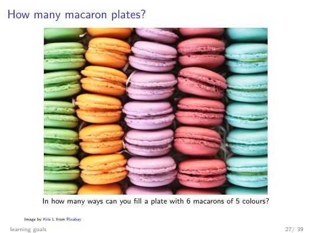<figcaption>07-lesson · 第 33 页</figcaption></figure></div><div class="callout tip"><b>原版图页</b>以上为源文件里<b>带插图的页面</b>（按页内图片面积选取），文字内容已在上方知识精讲里展开；看原版排版有助于考前回忆「这页讲过什么」。</div></section>
<section class="card" data-type="keywords"><div class="table-scroll" role="region" tabindex="0" aria-label="讲义表格 21，可横向滚动"><table><tr><th>English</th><th>中文</th><th>说明 / 例句</th></tr><tr><td>combinatorics</td><td>组合数学</td><td>Counting in how many ways something can happen.</td></tr><tr><td>repetition</td><td>允许重复</td><td>The same option may be chosen several times.</td></tr><tr><td>order matters</td><td>顺序重要</td><td>Two selections in different orders count as different.</td></tr><tr><td>factorial</td><td>阶乘</td><td>a! = a(a−1)…2·1, with 0! = 1.</td></tr><tr><td>permutation</td><td>排列</td><td>An ordered selection without repetition: n!/(n−k)!.</td></tr><tr><td>combination</td><td>组合</td><td>An unordered selection without repetition: C(n, k).</td></tr><tr><td>binomial coefficient</td><td>二项式系数</td><td>C(n, k) = n!/(k!(n−k)!), read “n choose k”.</td></tr><tr><td>multiset</td><td>多重集</td><td>Order does not matter but repetition is allowed: {2,2} ≠ {2}.</td></tr><tr><td>dots and bars</td><td>点线编码</td><td>k dots and n−1 bars encode a multiset.</td></tr><tr><td>Pascal’s triangle</td><td>帕斯卡三角</td><td>Each entry is the sum of the two above it.</td></tr><tr><td>Pascal’s rule</td><td>帕斯卡递推</td><td>C(n,k−1) + C(n,k) = C(n+1,k).</td></tr><tr><td>binomial theorem</td><td>二项式定理</td><td>(a+b)ⁿ = Σ C(n,k) a<sup>n−k</sup> b<sup>k</sup>.</td></tr><tr><td>surjection count</td><td>满射计数</td><td>Hard; involves Stirling numbers, not required here.</td></tr><tr><td>injection count</td><td>单射计数</td><td>n!/(n−k)! for k ≤ n.</td></tr></table></div></section>
<section class="card" data-type="examples"><div class="qa"><div class="q">例 1　（源文件 p19）15 支队伍发金、银、铜牌，不允许并列，有多少种结果？</div><p>三问：能重复吗？不能（一支队伍只能拿一块牌）；顺序重要吗？重要（金 ≠ 银）；有额外限制吗？没有。故属“不重复、顺序重要”，用 <code>n!/(n−k)!</code>。</p><p>分步：金牌 15 种；银牌在剩下 14 支里选，14 种；铜牌 13 种。故 <code>15 × 14 × 13 = 2730</code>。</p><p>也可写成 <code>15!/(15−3)! = 15!/12! = 2730</code>。检验：若把“只选三支获奖队伍、不计名次”，则是 <code>C(15,3) = 455</code>，2730/455 = 6 = 3!，正是“每组的 3! 种名次”。</p></div><div class="qa"><div class="q">例 2　（源文件 p33–p37）用 5 种颜色装 6 个马卡龙，有多少种装法？</div><p>三问：能重复吗？能（可以全是绿的）；顺序重要吗？不重要（只看每种颜色几个）；额外限制？没有。故属“可重复、顺序无关”，用 <code>C(k+n−1, k)</code>。</p><p>编码：约定颜色顺序，用 6 个点表示 6 个马卡龙、4 条竖线分隔 5 种颜色，共 10 个符号。任选 6 个位置放点即可。</p><p>计算：<code>C(6 + 5 − 1, 6) = C(10, 6) = 10!/(6!·4!) = (10·9·8·7)/(4·3·2·1) = 210</code>。</p><p>验证另一个方向：若用“隔板法”，把 6 个相同的球分到 5 个不同的盒子，允许空盒，正是 <code>C(6+5−1, 5−1) = 210</code>，两种说法一致。</p></div><div class="qa"><div class="q">例 3　（源文件 p27–p28）从 6 种味道里选 3 种做菜（不重复、顺序无关），有多少种？</div><p>按有序算：6 × 5 × 4 = 120 种有序三元组。</p><p>每种无序组合被数了 3! = 6 次（例如 甜酸咸、甜咸酸、酸甜咸……），故 <code>120/6 = 20</code>。</p><p>用公式：<code>C(6, 3) = 6!/(3!·3!) = 720/36 = 20</code>。</p><p>对照：若顺序重要（比如“第一口吃什么”），答案就是 120；若允许重复（甜甜辣也算），则是 <code>C(3+6−1,3) = C(8,3) = 56</code>。三个答案必须分清。</p></div><div class="qa"><div class="q">例 4　（2023 年第二次考试第 3 题）甜甜圈店有 6 种口味，买一盒 12 个，只计每种的数量、不计顺序，有多少种选法？</div><p>可重复（可以全买香蕉味）、顺序无关（只看数量），无额外限制，故用 <code>C(k + n − 1, k)</code>，其中 k = 12、n = 6。</p><p>计算：<code>C(12 + 6 − 1, 12) = C(17, 12) = C(17, 5)</code>。</p><p><code>C(17,5) = 17·16·15·14·13 / (5·4·3·2·1) = 742560/120 = 6188</code>。</p><p>易错：若误用 <code>C(6,12)</code>（无意义）或 <code>6¹²</code>（当成有序），都会得到完全错误的数。判断“顺序无关”是关键。</p></div><div class="qa"><div class="q">例 5　（2024 年第一次考试第 3 题）把四个情境归类并计数。</div><p>(1) 12 件不同物品，5 天每天取一件并记录——不放回、有顺序：<code>12·11·10·9·8 = 95040 = 12!/7!</code>。</p><p>(2) 三种颜色苹果共 15 个（同色不可区分），买 4 个——可重复（同色可多取）、顺序无关：<code>C(4+3−1, 4) = C(6,4) = 15</code>。</p><p>(3) 10 个灯亮 5 灭 5——不重复、顺序无关（位置固定，只选哪些亮）：<code>C(10,5) = 252</code>。</p><p>(4) 100 元买 A、B、C 若干——有预算等式约束（30a + 10b + 5c ≤ 100），属 (E) 其他，题目明确说不需要算出具体数。</p><p>归纳：四公式只覆盖“无额外限制”的情形；带“至少/恰好/预算/无标签”字样的题一律要先分类再处理。</p></div></section>
<section class="card" data-type="practice"><ol><li>某网站密码要求 8 位，每位可取 26 个字母或 10 个数字，区分大小写，有多少种密码？</li><li>从 10 人中选 3 人组成小组（不分职务），有多少种？若分别担任组长、记录员、计时员呢？</li><li>用 4 种颜色给 7 个相同的球上色，只计每种颜色的球数，有多少种？</li><li>8 人围成一圈就座，有多少种坐法？（提示：圆排列先固定一个人）</li><li>展开 (2x − 1)⁴，并写出各项系数之和。</li></ol><details><summary>参考答案与思路</summary><div class="ans"><p><b>1.</b> 每位 36 种，可重复、顺序重要：<code>36⁸ = 2 821 109 907 456</code>（约 2.82 × 10¹²）。</p><p><b>2.</b> 不分职务：<code>C(10,3) = 120</code>；分职务：<code>10·9·8 = 720 = 10!/7!</code>。比值 720/120 = 6 = 3!。</p><p><b>3.</b> 可重复、顺序无关：<code>C(7+4−1, 7) = C(10,7) = C(10,3) = 120</code>。</p><p><b>4.</b> 圆排列：先固定一人消除旋转对称，其余 7 人排列，故 <code>7! = 5040</code>。（若还考虑翻转对称，则再除以 2。）</p><p><b>5.</b> <code>(2x−1)⁴ = 16x⁴ − 32x³ + 24x² − 8x + 1</code>；系数和令 x = 1 得 <code>(2−1)⁴ = 1</code>，也可由 16−32+24−8+1 = 1 验证。</p></div></details></section>
<section class="card" data-type="exam"><h2>考点分层</h2><div class="callout exam"><b>必考</b>① 判断计数情境属于四类中的哪一类并计算（2022 年第二次考试第 3 题、2023 年第二次考试第 3 题、2024 年第一次考试第 3 题都是这个结构）。② 计算 C(n,k) 与 n!/(n−k)!。③ 用 Pascal 递推或二项式定理展开（2022 年第三次考试第 3 题要求证明 Pascal 法则，8 分）。④ 结合“函数/单射/双射个数”出题。</div><div class="callout warn"><b>易错点</b>① 把“顺序无关”当成“顺序重要”，多算 k! 倍。② 把“可重复”漏掉，少算许多。③ 无标签分组忘除 2（两队各 5 人）。④ 圆排列忘记固定一个人，多算 n 倍。⑤ 忽略额外限制（至少、恰好、预算），硬套公式。</div><div class="callout warn"><b>失分点</b>只写公式不写“为什么是这一类”（三问的答案），会被扣说明分；Pascal 法则的证明只写代数变形、不写组合解释，会丢掉“证明”的实质分。</div><div class="callout tip"><b>进阶</b>① 记住 <code>Σ C(n,k) = 2ⁿ</code> 与 <code>C(n,k) = C(n,n−k)</code>。② 会用点线编码解释隔板法。③ 知道满射计数涉及 Stirling 数，不属本课程。④ 会把“含恰好 k 个 1 的比特串”翻译成 C(n,k)。</div></section>
<section class="card" data-type="checklist"><h2>方法清单</h2><h3>计数问题的三问</h3><ol class="steps"><li>问一：同一样东西能被选多次吗（可重复）</li><li>问二：交换选择顺序会得到不同结果吗（顺序）</li><li>问三：有没有“至少/恰好/不相邻/无标签”的额外限制</li><li>前两问定位四格表中的一格；第三问若为“有”，先归类为 E 再单独处理</li><li>最后代入公式并做数量级检查（结果不应超过 n<sup>k</sup>）</li></ol><h3>常用等价翻译</h3><ul class="checklist"><li>从 n 个里选 k 个（不计顺序、不放回）= C(n,k)，也是 n 元集的 k 元子集数</li><li>n 个元素的排列 = n!，也是 n 元集上的双射数</li><li>k 个元素的单射 A → B（#B = n）= n!/(n−k)!</li><li>把 k 个相同球放进 n 个不同盒子（可空）= C(k+n−1, k)</li><li>长度 n、含 k 个 1 的 0/1 串 = C(n,k)</li></ul><h3>展开二项式</h3><ol class="steps"><li>写出 (a + b)ⁿ = Σ C(n,k) a<sup>n−k</sup> b<sup>k</sup></li><li>从 Pascal 三角第 n 行取系数（n 小的时候最快）</li><li>逐项写出，注意符号：b 为负时奇次项变号</li><li>用 x = 1 检验系数和是否等于 (a + b)ⁿ 在 x = 1 的值</li></ol></section>
<section class="card" data-type="mapping"><div class="table-scroll" role="region" tabindex="0" aria-label="讲义表格 22，可横向滚动"><table><tr><th>源文件</th><th>页码</th><th>覆盖的知识点</th></tr><tr><td>07-lesson.pdf</td><td>p3–p5</td><td>四公式总表、Pascal 三角速览、第 7 周学习目标 8.1–8.2</td></tr><tr><td>07-lesson.pdf</td><td>p8–p12</td><td>组合数学的历史例子（Bhagabadi Sutra、易经）、三问框架、密码锁例子</td></tr><tr><td>07-lesson.pdf</td><td>p13–p17</td><td>可重复且顺序重要 n<sup>k</sup>、Ex1–Ex3、笛卡尔积元素个数、函数个数 n<sup>k</sup></td></tr><tr><td>07-lesson.pdf</td><td>p19–p25</td><td>不重复且顺序重要 n!/(n−k)!、冰球奖牌 2730、Ex4–Ex6、单射与双射个数、满射为何难</td></tr><tr><td>07-lesson.pdf</td><td>p27–p31</td><td>不重复且顺序无关 C(n,k)、味道例子、Ex7–Ex9、子集个数公式</td></tr><tr><td>07-lesson.pdf</td><td>p33–p39</td><td>马卡龙问题的点线编码、可重复且顺序无关 C(k+n−1,k)、Ex10–Ex11、多重集定义</td></tr><tr><td>07-lesson.pdf</td><td>p41–p43</td><td>四格表总结、C(10,5) 辨析题</td></tr><tr><td>07-lesson.pdf</td><td>p44–p46</td><td>Pascal 三角与递推、二项式定义与二项式定理的组合证明</td></tr><tr><td>08-exercise.pdf</td><td>全篇</td><td>计数与排列组合的配套练习（含两行记号与置换）</td></tr><tr><td>（跳过）</td><td>p6–p7、p26、p32、p43</td><td>目录页与讨论页，内容已并入正文</td></tr><tr><td>（补充拓展）</td><td>—</td><td>隔板法与点线编码的对照、圆排列、C(10,5)/2 的无标签分组说明、2024 年四情境题的完整归类</td></tr></table></div></section><p class="sub">返回：<a href="../../c/30565/combinatorics-counting.html">本讲独立页</a> · <a href="../../c/30565/part-3.html">本章节页</a> · <a href="#c-30565">本课目录</a></p></article><article class="alllec" id="l-30565-induction-and-stacked-implications"><h3>第 8 讲 · 堆叠蕴含与数学归纳法</h3><p class="lead">Stacked Implications and Mathematical Induction <span class="badge mute">第 3 章 计数与归纳</span></p><section class="card" data-type="overview"><h2>本节定位</h2><p>第 8 讲讲两种“强力证法”：堆叠蕴含（stacked implications）把多层假设的证明写成嵌套框架；数学归纳法（mathematical induction）用“第一步 + 传递”覆盖无限多个情形。归纳法是本课程最重要的工具，因为几乎所有和式公式、整除性质、算法正确性都用它证明。</p><p>本讲对应第 8 周学习目标 9.1–9.3：证明带堆叠蕴含的命题、正确使用归纳法、把归纳推广到“广义归纳”（well-ordered graph、双基例、步长 2）。考试中归纳法几乎是固定大题（8 分），Pascal 法则与各类和式公式都出自这里。</p><p>学完本节你应当能够：</p><ul class="checklist"><li>把“若 A 则（若 B 则 C）”这类堆叠命题写成嵌套的证明框架</li><li>说清归纳法为什么有效（多米诺 + modus ponens）</li><li>写出归纳证明的两个必备部分：基例与归纳步</li><li>处理需要多个基例或步长为 2 的变形归纳</li><li>识别“缺基例”“基例错”“传递不成立”三类典型错误</li><li>用 Fermat 无穷递降与广义归纳处理更复杂的命题</li></ul></section>
<section class="card" data-type="detail"><h3>8.1 堆叠蕴含量：证明的框架结构</h3><p>先看一个具体命题：设 X 是集合、A, B ⊆ X，则“若 B ⊆ A，则 X ⊆ A ∪ B∁”。它的主框架是“if … then …”：假设 B ⊆ A，要证 X ⊆ A ∪ B∁。而后者本身又是一个“对任意 x ∈ X，若 x ∈ X 则 x ∈ A ∪ B∁”的命题，于是出现第二层框架：Let x ∈ X，然后证明 x ∈ A ∪ B∁。</p><p>课件的写法是把两层括号画出来：外层“Assume B ⊆ A … Hence X ⊆ A ∪ B∁”，内层“Let x ∈ X … Then x ∈ A ∪ B∁”。这就是堆叠蕴含（stacked implications）：<b>每遇到一个“若…则…”，就缩进一层，假设它、证完它、再收回来。</b></p><p>以 Ex1 为例补完证明：设 x ∈ X。若 x ∈ A，则 x ∈ A ∪ B∁（并集定义）。若 x ∉ A，由 B ⊆ A 的逆否得 x ∉ B，即 x ∈ B∁，故 x ∈ A ∪ B∁。两种情形穷尽，故 x ∈ A ∪ B∁。因 x 任意，X ⊆ A ∪ B∁。□ 注意“分情形”正是把“或”拆开处理的标准手法。</p><h3>8.2 多米诺效应：归纳法的直观</h3><p>为什么所有骨牌都会倒？只需两个条件：第一块被推倒；并且任意一块倒下时会推倒下一块。这两条一给，第 1 块倒 → 第 2 块倒 → 第 3 块倒 → …… 无限延伸。</p><p>数学归纳法就是把这件事形式化。要证“P(n) 对一切 n ∈ N 成立”，只需证：(a) 基例（base case）：P(0) 为真；(b) 归纳步（induction step）：对一切 k ∈ N，<code>P(k) ⇒ P(k+1)</code> 为真。证 (b) 时的做法是“归纳假设（inductive hypothesis）：假设 P(k) 成立”，然后推出 P(k+1)。</p><p>关键在于 (b) 是一个关于 k 的全称命题，不是“假设所有 P(k) 都成立”。很多人误以为归纳法是循环论证，其实不是：我们一次只假设一个 k，把它推进一步。</p><h3>8.3 第一个完整例子：前 n 个自然数之和</h3><p>命题：对任意 n ∈ N，<code>0 + 1 + 2 + … + n = n(n+1)/2</code>。记号 LHS 表示等式左边（left-hand side），RHS 表示右边（right-hand side）。</p><p>基例 n = 0：LHS = 0，RHS = 0·(0+1)/2 = 0，两者相等，成立。</p><p>归纳步：设对某个 k ∈ N 有 <code>0 + 1 + … + k = k(k+1)/2</code>（记为 (1)）。要证 n = k+1 的情形：<code>0 + 1 + … + (k+1) = (0 + 1 + … + k) + (k+1)</code>，由 (1) 等于 <code>k(k+1)/2 + (k+1)</code>。通分：<code>[k(k+1) + 2(k+1)]/2 = (k+1)(k+2)/2 = (k+1)((k+1)+1)/2</code>，正是 n = k+1 的右端。故 P(k) ⇒ P(k+1)。</p><p>由基例与归纳步，命题对所有 n ∈ N 成立。□ 这段结构是所有归纳证明的模板：<b>写基例 → 写“设 P(k) 成立” → 把 P(k+1) 的左边拆成“P(k) 的左边 + 新增项” → 代入假设 → 代数化简成 P(k+1) 的右边 → 声明完成。</b></p><h3>8.4 历史：从隐含到严格</h3><p>Al-Karaji（约公元 1000 年）最早用归纳法证明 Nicomachus 定理：<code>Σ<sub>j=1</sub><sup>n</sup> j³ = (Σ<sub>j=1</sub><sup>n</sup> j)²</code>，即 <code>1³ + 2³ + … + n³ = (1 + 2 + … + n)²</code>，对一切正整数成立；他也证明了二项式定理。他的论证实质上已包含“n = 1 成立”与“由 n = k−1 推出 n = k”。</p><p>Gersonides（1288–1344）首次严格（逻辑细节完整）地使用归纳法；Pascal 在《Traité du triangle arithmétique》（1665）中给出了归纳法的明确表述；Fermat（1607–1665）使用无穷递降（infinite descent），它是归纳法的间接形式：若 P(n) 为真则 P(k) 对某个 k &lt; n 为真，那么 P 必须对所有 n 为假，因为自然数不可能有无限递减序列 n₀ &gt; n₁ &gt; n₂ &gt; …。</p><h3>8.5 为什么归纳法在逻辑上成立</h3><p>靠的是肯定前件式（modus ponens）：若 P 为真且 P ⇒ Q 为真，则 Q 为真。真值表上只有一行使 P 与 P ⇒ Q 同时为真，那一行 Q 也为真。</p><p>把 modus ponens 用到归纳法：我们证了 P(0)；又证了 P(0) ⇒ P(1)，故 P(1)；再证 P(1) ⇒ P(2)，故 P(2)；…… 每一步都是一次 modus ponens。于是对任意给定的 n，经过有限步就能得到 P(n)。这就是“无限多个命题被两条有限长度的证明覆盖”的原理。</p><h3>8.6 归纳法的变形</h3><p>基例不必是 0，归纳步也不必是 +1。三种常见变形：</p><p>(a) 要证“P(n) 对所有 n ∈ N、n ≥ 5 成立”：基例是 P(5)，归纳步是 <code>P(k) ⇒ P(k+1)</code>（k ≥ 5）。(b) 要证“P(n) 对所有偶数 n 成立”：基例 P(0)，归纳步 <code>P(k) ⇒ P(k+2)</code>（k 为偶数）。(c) 要证“P(n) 对所有 n ≥ 5 成立”且步长 2 时需要两个基例（见 8.11）。</p><p>选择哪种变形，取决于命题在哪些 n 上有意义、以及“从 k 推到 k+1”时用到的相邻性。核心不变：<b>基例覆盖起点，归纳步覆盖传递。</b></p><h3>8.7 例：前 n 个奇数之和</h3><p>Ex2：证明对任意 n ∈ Z⁺，<code>1 + 3 + 5 + … + (2n − 1) = n²</code>。</p><p>基例 n = 1：LHS = 1，RHS = 1² = 1，成立。归纳步：设 <code>1 + 3 + … + (2k − 1) = k²</code>，则 <code>1 + 3 + … + (2k − 1) + (2(k+1) − 1) = k² + (2k + 1) = (k+1)²</code>。故成立。□ 这里用到完全平方公式，是“代数化简”型归纳的典型。</p><h3>8.8 陷阱一：鹦鹉同色</h3><p>“证明”：所有鹦鹉同色。基例 n = 1：一只鹦鹉当然只有一种颜色。归纳步：假设任意 k 只鹦鹉同色；看 k+1 只，编号 1, 2, …, k+1。集合 <code>A = {1, …, k}</code> 与 <code>B = {2, …, k+1}</code> 各有 k 只，由归纳假设 A 中都是颜色 C₁、B 中都是颜色 C₂；而 <code>A ∩ B = {2, …, k}</code> 中的鹦鹉既是 C₁ 又是 C₂，故 C₁ = C₂，于是 k+1 只同色。</p><p>错误在哪？当 k = 1 时，<code>A ∩ B = {2, …, 1} = ∅</code> 是空集，无法从中取出一只鹦鹉来“传递颜色”。整个论证只在 k ≥ 2 时有效，而基例只覆盖了 k = 1，缺口正好在 k = 1 → k = 2 这一步。这个例子说明：<b>归纳步必须对所有 k ≥ 基例成立，包括最小的那个 k。</b></p><h3>8.9 例：平方和</h3><p>Ex3：证明对任意 n ∈ N，<code>0² + 1² + … + n² = n(n+1)(2n+1)/6</code>。</p><p>基例 n = 0：LHS = 0，RHS = 0，成立。归纳步：设 <code>0² + … + k² = k(k+1)(2k+1)/6</code>，则 LHS(k+1) = <code>k(k+1)(2k+1)/6 + (k+1)²</code>。提取公因子 (k+1)：<code>(k+1)[k(2k+1)/6 + (k+1)] = (k+1)(2k² + k + 6k + 6)/6 = (k+1)(2k² + 7k + 6)/6</code>。而 <code>2k² + 7k + 6 = (k+2)(2k+3)</code>，故结果 = <code>(k+1)(k+2)(2k+3)/6</code>，正是 n = k+1 的右端。□</p><p>代数技巧提示：这类题的难点全在“提取公因子 + 因式分解”，而不是归纳思想。若卡住，先写出目标右端（把 n 换成 k+1），再倒推需要凑出什么因子。</p><h3>8.10 例：二的幂之和</h3><p>命题（源文件 p24）：<code>2⁰ + 2¹ + 2² + … + 2ⁿ = 2<sup>n+1</sup> − 1</code>，对一切整数 n ≥ 0。</p><p>基例 n = 0：<code>2⁰ = 1</code>，<code>2<sup>0+1</sup> − 1 = 1</code>，成立。归纳步：设对 k ≥ 0 有 <code>2⁰ + … + 2<sup>k</sup> = 2<sup>k+1</sup> − 1</code>。则 <code>2⁰ + … + 2<sup>k+1</sup> = (2⁰ + … + 2<sup>k</sup>) + 2<sup>k+1</sup> = 2<sup>k+1</sup> − 1 + 2<sup>k+1</sup> = 2·2<sup>k+1</sup> − 1 = 2<sup>k+2</sup> − 1 = 2<sup>(k+1)+1</sup> − 1</code>。故 P(k) ⇒ P(k+1)，命题成立。□</p><h3>8.11 陷阱二：缺基例</h3><p>“证明”：<code>10 + n = n + 5</code> 对所有 n ∈ N 成立。归纳步：设 <code>10 + k = k + 5</code>，则 <code>10 + (k+1) = (10 + k) + 1 = (k + 5) + 1 = (k+1) + 5</code>，故对 k+1 也成立。“于是对所有 n 成立”。</p><p>错误：从未证明基例。事实上基例是假的：<code>10 + 0 = 10 ≠ 5 = 0 + 5</code>。这条“证明”展示了一个重要事实：<b>传递性本身不保证真，只有“基例 + 传递”才保证真。</b></p><h3>8.12 Fermat 无穷递降</h3><p>命题：<code>x³ + 2y³ = 4z³</code> 在 Z⁺ 中无解。证明：假设有解 (x₁, y₁, z₁)。则 <code>x₁³ = 4z₁³ − 2y₁³ = 2(2z₁³ − y₁³)</code>，故 x₁³ 是偶数，x₁ 是偶数，设 x₁ = 2x₂。代入并除以 2 得 <code>4x₂³ + y₁³ = 2z₁³</code>，故 y₁ 是偶数，设 y₁ = 2y₂。再代入得 <code>2x₂³ + 4y₂³ = z₁³</code>，故 z₁ = 2z₂。整理得 <code>x₂³ + 2y₂³ = 4z₂³</code>，即 (x₂, y₂, z₂) 也是解，且 x₂ &lt; x₁。</p><p>重复此过程得到无限递减的正整数序列 <code>x₁ &gt; x₂ &gt; x₃ &gt; …</code>，不可能。故无解。□ 这就是无穷递降（infinite descent）：把“存在解”引向“存在更小的解”，与自然数的良序性矛盾。</p><h3>8.13 例：需要两个基例</h3><p>命题：对任意整数 n ≥ 5，存在 x, y ∈ N 使 <code>n = 2x + 5y</code>。记 P(n) 为该命题。证明用两个基例加步长 2 的归纳：基例 P(5)：5 = 2·0 + 5·1；基例 P(6)：6 = 2·3 + 5·0。归纳步：设 P(k) 对某个 k ≥ 5 成立，即 k = 2x + 5y，则 <code>k + 2 = 2x + 5y + 2 = 2(x+1) + 5y</code>，故 P(k+2) 成立。于是 5 → 7 → 9 → 11…，6 → 8 → 10 → 12…，两条链覆盖所有 n ≥ 5。□</p><p>为什么必须两个基例？因为步长是 2，只能在同一奇偶性的数之间传递；5 与 6 分别代表两个奇偶类，各需要一个起点。</p><h3>8.14 广义归纳与良序图</h3><p>定义：有向图 (V, E) 称为良序的（well-ordered），如果对每个 v ∈ V 满足：要么 v 没有指向它的箭头（起始点），要么存在一条从某个起始点到 v 的有限长路径。</p><p>广义归纳：给定命题 P(v) 与良序图 (V, E)，若能证 (a) P(v) 对所有起始点 v 成立；(b) 只要有箭头 v₁ → v₂ 就有 <code>P(v₁) ⇒ P(v₂)</code>，则 P(v) 对所有 v ∈ V 成立。</p><p>前面 8.13 的例子正是它的实例：顶点集 {5, 6, 7, …}，箭头是 n → n+2，起始点是 5 与 6；我们证了两个基例与 <code>P(k) ⇒ P(k+2)</code>，于是结论对所有 n ≥ 5 成立。普通归纳是它的特例（顶点为 N，箭头 n → n+1，起点 0）。</p><p>应用一（代码正确性）：证明一个大程序正确很难，但证明“每一小块在输入正确时输出正确”较容易；若输入正确且每个子程序都保正确，则整个程序正确——这正是良序图上的归纳（依赖图 + 局部正确）。</p><p>应用二（正有理数上的归纳）：Calkin–Wilf 树包含全部 q ∈ Q⁺。要证 P(q) 对所有 q ∈ Q⁺ 成立：基例 P(1)；归纳步证 <code>P(a/b) ⇒ P(a/(a+b))</code> 与 <code>P(a/b) ⇒ P((a+b)/a)</code>。这属于拓展内容，考试不要求。</p><h3>8.15 归纳证明的写作模板与常见错误</h3><p>模板：① 明确写出要证的命题 P(n) 及其取值范围；② 写 Base case，代入最小的 n，分别算 LHS 与 RHS 并指出相等；③ 写 Induction step，用“Let k ≥ … and assume P(k) holds”开头，把假设单独编号；④ 把 P(k+1) 的左边拆成“P(k) 的左边 + 新增项”，用假设替换；⑤ 代数化简，化成 P(k+1) 的右边（把 n 替换成 k+1 的目标式先写在旁边对照）；⑥ 写“Hence P(k) ⇒ P(k+1)”，最后写“By induction, P(n) holds for all n”。</p><p>三类常见错误：缺基例（8.11）；基例错或范围错（例如命题只在 n ≥ 5 有意义却从 0 开始）；归纳步偷偷用了 P(k+1) 或“所有 ≤ k 的情形成立”——后者其实是强归纳（strong induction），若要用必须明确声明。</p><div class="callout idea" data-ext="induction-and-stacked-implications-0"><b>推导补充</b><p>堆叠蕴含的操作是每遇到一个若则就缩进一层：先假设它、证完它、再收回来。证 X ⊆ A ∪ B∁ 时外层假设 B ⊆ A，内层令 x ∈ X，再分 x∈A 与 x∉A 两种情形穷尽，分情形正是把或拆开的标准手法。归纳法的结构可对照多米诺：基例推倒第一块，归纳步证明任意一块倒会推倒下一块。写归纳步时假设单个 P(k) 而非所有 P(k) 成立，不是循环论证。前 n 个自然数求和的模板是：基例→设 P(k)→把 P(k+1) 左边拆成左边加新增项→代入假设→化简成右边。</p></div><h3>原版图页（源 PDF 插图页）</h3><div class="imggrid" data-imgbatch="1"><figure><figcaption>08-lesson · 第 33 页</figcaption></figure><figure>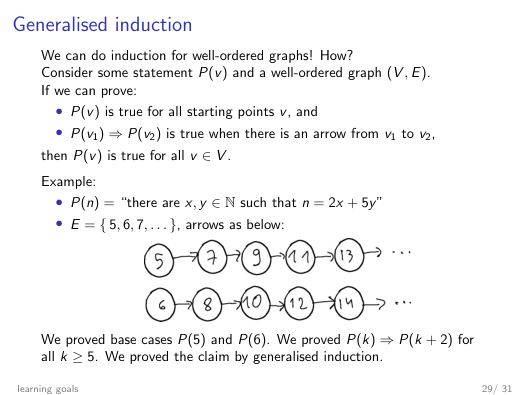<figcaption>08-lesson · 第 34 页</figcaption></figure><figure>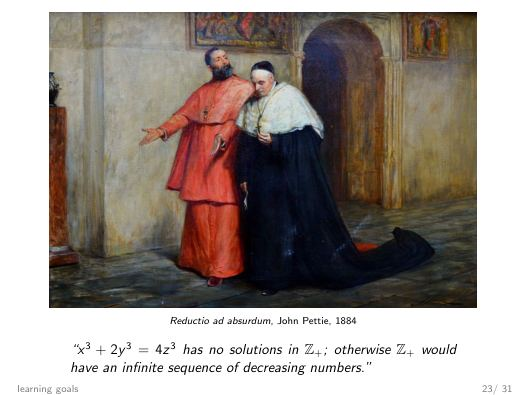<figcaption>08-lesson · 第 27 页</figcaption></figure><figure>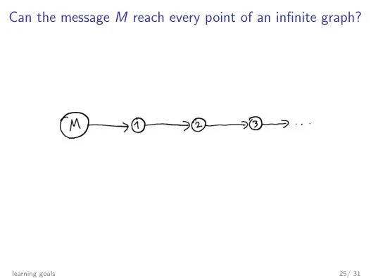<figcaption>08-lesson · 第 30 页</figcaption></figure><figure>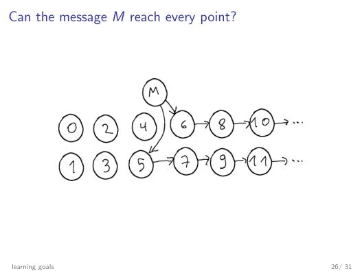<figcaption>08-lesson · 第 31 页</figcaption></figure><figure><figcaption>08-lesson · 第 29 页</figcaption></figure><figure><figcaption>08-lesson · 第 36 页</figcaption></figure><figure>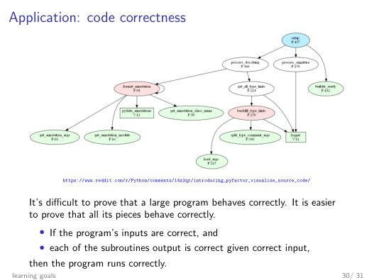<figcaption>08-lesson · 第 35 页</figcaption></figure></div><div class="callout tip"><b>原版图页</b>以上为源文件里<b>带插图的页面</b>（按页内图片面积选取），文字内容已在上方知识精讲里展开；看原版排版有助于考前回忆「这页讲过什么」。</div></section>
<section class="card" data-type="keywords"><div class="table-scroll" role="region" tabindex="0" aria-label="讲义表格 23，可横向滚动"><table><tr><th>English</th><th>中文</th><th>说明 / 例句</th></tr><tr><td>stacked implications</td><td>堆叠蕴含</td><td>Nested “if … then …” frames; indent one level per assumption.</td></tr><tr><td>mathematical induction</td><td>数学归纳法</td><td>Base case plus induction step covers all n ∈ N.</td></tr><tr><td>base case</td><td>基例</td><td>The smallest value, e.g. P(0) or P(1).</td></tr><tr><td>induction step</td><td>归纳步</td><td>Prove P(k) ⇒ P(k+1) for all admissible k.</td></tr><tr><td>inductive hypothesis</td><td>归纳假设</td><td>Assume P(k) holds, then derive P(k+1).</td></tr><tr><td>modus ponens</td><td>肯定前件式</td><td>From P and P ⇒ Q conclude Q.</td></tr><tr><td>domino effect</td><td>多米诺效应</td><td>First domino falls, and each falling knocks the next.</td></tr><tr><td>infinite descent</td><td>无穷递降</td><td>A solution yields a smaller one; impossible in N.</td></tr><tr><td>well-ordered graph</td><td>良序图</td><td>Every vertex is reachable from a start point by finitely many arrows.</td></tr><tr><td>generalised induction</td><td>广义归纳</td><td>Induction over a well-ordered graph instead of N.</td></tr><tr><td>strong induction</td><td>强归纳</td><td>Assume P(j) for all j ≤ k, not only j = k.</td></tr><tr><td>Pascal’s rule</td><td>帕斯卡递推</td><td>C(n,k−1) + C(n,k) = C(n+1,k), provable by induction.</td></tr></table></div></section>
<section class="card" data-type="examples"><div class="qa"><div class="q">例 1　（源文件 p21）证明对任意 n ∈ Z⁺，1 + 3 + 5 + … + (2n − 1) = n²。</div><p>Base case n = 1：LHS = 1，RHS = 1² = 1，成立。</p><p>Induction step：设对某个 k ≥ 1 有 <code>1 + 3 + … + (2k − 1) = k²</code>。则</p><p><code>1 + 3 + … + (2k − 1) + (2(k+1) − 1) = k² + (2k + 1) = (k+1)²</code>。</p><p>故 P(k) ⇒ P(k+1)。由归纳法，命题对一切 n ∈ Z⁺ 成立。□ 也可用几何解释：n² 个点排成方阵，第 k 层恰有 2k − 1 个点。</p></div><div class="qa"><div class="q">例 2　（2023 年第一次考试第 4 题）证明对一切 n ∈ Z⁺，1·2 + 2·3 + … + n(n+1) = n(n+1)(n+2)/3。</div><p>Base case n = 1：LHS = 1·2 = 2；RHS = 1·2·3/3 = 2，成立。</p><p>Induction step：设对 k ∈ Z⁺ 有 <code>1·2 + … + k(k+1) = k(k+1)(k+2)/3</code>。则</p><p>LHS(k+1) = <code>k(k+1)(k+2)/3 + (k+1)(k+2)</code>。提取公因子 (k+1)(k+2)：</p><p>= <code>(k+1)(k+2)[k/3 + 1] = (k+1)(k+2)(k+3)/3</code>，正是把 n 换成 k+1 的右端。</p><p>故 P(k) ⇒ P(k+1)，由归纳法命题成立。□ 评卷要点：写出归纳假设、把左边拆出新增项、化简到目标右端，三步各占分。</p></div><div class="qa"><div class="q">例 3　（源文件 Ex3）证明 0² + 1² + … + n² = n(n+1)(2n+1)/6 对一切 n ∈ N 成立。</div><p>Base case n = 0：LHS = 0，RHS = 0，成立。</p><p>Induction step：设 <code>0² + … + k² = k(k+1)(2k+1)/6</code>，则</p><p>LHS(k+1) = <code>k(k+1)(2k+1)/6 + (k+1)² = (k+1)[k(2k+1)/6 + (k+1)]</code>（提取 k+1）。</p><p>括号内通分：<code>[2k² + k + 6k + 6]/6 = (2k² + 7k + 6)/6 = (k+2)(2k+3)/6</code>。</p><p>故 LHS(k+1) = <code>(k+1)(k+2)(2k+3)/6</code>，正是 n = k+1 的右端。□</p></div><div class="qa"><div class="q">例 4　（源文件 p32–p33）证明对任意 n ≥ 5 存在 x, y ∈ N 使 n = 2x + 5y。</div><p>两个基例：5 = 2·0 + 5·1；6 = 2·3 + 5·0。</p><p>Induction step（步长 2）：设 P(k) 对某个 k ≥ 5 成立，即 k = 2x + 5y。则 <code>k + 2 = 2x + 5y + 2 = 2(x+1) + 5y</code>，故 P(k+2) 成立。</p><p>于是 5, 7, 9, 11, … 与 6, 8, 10, 12, … 两条链覆盖全部 n ≥ 5，命题成立。□</p><p>要点：步长为 2 时必须两个基例；若只给 P(5)，6 永远推不到。</p></div><div class="qa"><div class="q">例 5　（源文件 p22，鹦鹉）指出“所有鹦鹉同色”的证明错在哪里。</div><p>基例 n = 1 正确。归纳步里把 k+1 只鹦鹉分成 A = {1,…,k} 与 B = {2,…,k+1}，再由交集 <code>A ∩ B = {2,…,k}</code> 传递颜色。</p><p>当 k = 1 时，A = {1}、B = {2}，交集为空集，无法取到“既是 C₁ 又是 C₂”的鹦鹉，传递失败。</p><p>所以论证只证明了“k ≥ 2 时 P(k) ⇒ P(k+1)”，而 k = 1 → 2 这一步缺失，结论不成立。</p><p>教训：归纳步必须覆盖从基例开始的所有 k；写证明时要检查最小那个 k 的分支是否也成立。</p></div></section>
<section class="card" data-type="practice"><ol><li>证明 1 + 2 + … + n = n(n+1)/2 对一切 n ≥ 1 成立（用归纳法，基例取 n = 1）。</li><li>证明 2 + 4 + 6 + … + 2n = n(n+1) 对一切 n ∈ Z⁺ 成立。</li><li>证明 n³ − n 对一切 n ∈ N 都能被 6 整除。</li><li>证明 3⁰ + 3¹ + … + 3ⁿ = (3<sup>n+1</sup> − 1)/2 对一切 n ≥ 0 成立。</li><li>找出“1 + 2 + … + n = n(n+1)/2 + 1”这一“证明”的漏洞（提示：它满足归纳步）。</li></ol><details><summary>参考答案与思路</summary><div class="ans"><p><b>1.</b> n = 1：两边都是 1。设对 k 成立，则 <code>1+…+k+(k+1) = k(k+1)/2 + (k+1) = (k+1)(k+2)/2</code>，完成。</p><p><b>2.</b> n = 1：2 = 1·2。设对 k 成立：<code>2+…+2k = k(k+1)</code>，则加 2(k+1) 得 <code>k(k+1) + 2(k+1) = (k+1)(k+2)</code>，完成。</p><p><b>3.</b> n = 0 时 0 能被 6 整除。设 <code>6 | k³ − k</code>，则 <code>(k+1)³ − (k+1) = k³ + 3k² + 3k + 1 − k − 1 = (k³ − k) + 3k(k+1)</code>。前项被 6 整除；<code>k(k+1)</code> 是两个连续整数之积，必为偶数，故 <code>3k(k+1)</code> 被 6 整除。两者之和被 6 整除。□</p><p><b>4.</b> n = 0：左边 1，右边 (3−1)/2 = 1。设对 k 成立，则加 3<sup>k+1</sup> 得 <code>(3<sup>k+1</sup> − 1)/2 + 3<sup>k+1</sup> = (3·3<sup>k+1</sup> − 1)/2 = (3<sup>k+2</sup> − 1)/2</code>，完成。</p><p><b>5.</b> 归纳步确实成立：若 <code>1+…+k = k(k+1)/2 + 1</code>，则加 k+1 后得 <code>(k+1)(k+2)/2 + 1</code>。但基例 n = 1 时左边 1，右边 1·2/2 + 1 = 2，不成立。所以整条“证明”失效——再次说明基例不可省。</p></div></details></section>
<section class="card" data-type="exam"><h2>考点分层</h2><div class="callout exam"><b>必考</b>① 用归纳法证明和式公式（平方和、连续整数积之和、等比和等），几乎每次 8 分（2022 年第二次考试 4(b)、2023 年第一次考试第 4 题、2025 年第三次考试第 4 题）。② 证明整除性质 <code>a | f(n)</code>。③ 证明 Pascal 法则。④ 指出某个“归纳证明”的错误（缺基例、基例错、传递缺口）。</div><div class="callout warn"><b>易错点</b>① 不写基例，或基例代错（n = 1 与 n = 0 混淆）。② 归纳步里直接“假设 P(k+1)”，等于循环论证。③ 把“对某个 k”写成“对所有 k”，逻辑上变成假设了结论。④ 步长为 2 时只给一个基例。⑤ 化简时把目标右端的 n 忘记替换成 k+1，导致“证了另一个命题”。</div><div class="callout warn"><b>失分点</b>只写“由归纳法得证”而不展示“左边拆项 → 代入假设 → 化简到右端”的三步，通常只能拿基例的 1 分；鹦鹉类找错题若只说“k=1 有问题”而不指出交集为空，说明不完整。</div><div class="callout tip"><b>进阶</b>① 会用强归纳（假设所有 j ≤ k 成立）处理“每次减 2 或减 3”的递归结构。② 会用无穷递降论证无解。③ 会把归纳推广到良序图，理解程序正确性证明的结构。④ 知道 Pascal 法则的两种证明（代数变形与组合计数）。</div></section>
<section class="card" data-type="checklist"><h2>方法清单</h2><h3>写归纳证明的六步</h3><ol class="steps"><li>写出 P(n) 的明确陈述与 n 的取值范围</li><li>Base case：取最小允许值，分别算左右两端并写“相等”</li><li>Induction step：写“Let k ≥ … and assume P(k)”，把假设编号 (1)</li><li>把 P(k+1) 的左边写成“P(k) 的左边 + 新增项”</li><li>用 (1) 替换，做代数化简（必要时通分、提取公因子、因式分解）</li><li>对照 P(k+1) 的右端，写“Hence P(k) ⇒ P(k+1)”，再写结论句</li></ol><h3>检查归纳证明是否可靠</h3><ul class="checklist"><li>基例真的成立吗（代入算一遍）</li><li>归纳步对最小的 k 也成立吗（鹦鹉例的教训）</li><li>是否偷偷使用了 P(k+1) 或“所有更小情形成立”</li><li>范围是否一致（命题写 n ≥ 5，基例就不能取 0）</li><li>步长与基例个数是否匹配（步长 2 需要两个基例）</li></ul><h3>堆叠蕴含的写法</h3><ol class="steps"><li>找出最外层的“若…则…”，缩进一层写下假设</li><li>在内部继续找下一个“若…则…”，再缩进</li><li>最内层做元素级推导（设 x ∈ …）</li><li>由内向外逐层收回：先得内层结论，再得外层结论</li><li>每层结束时明确写出“Hence …”</li></ol></section>
<section class="card" data-type="mapping"><div class="table-scroll" role="region" tabindex="0" aria-label="讲义表格 24，可横向滚动"><table><tr><th>源文件</th><th>页码</th><th>覆盖的知识点</th></tr><tr><td>08-lesson.pdf</td><td>p3–p4</td><td>考试信息、小抄规则、第 8 周学习目标 9.1–9.3</td></tr><tr><td>08-lesson.pdf</td><td>p7–p10</td><td>堆叠蕴含的四选项讨论、证明框架图、Ex1</td></tr><tr><td>08-lesson.pdf</td><td>p12–p16</td><td>多米诺效应、0+1+…+n 的完整归纳证明、Al-Karaji 与 Nicomachus 定理</td></tr><tr><td>08-lesson.pdf</td><td>p17–p19</td><td>Gersonides、Pascal、Fermat 无穷递降、modus ponens 与归纳的有效性、归纳两步与变形</td></tr><tr><td>08-lesson.pdf</td><td>p21–p25</td><td>奇数和的例子、鹦鹉同色的错误、平方和、二的幂和</td></tr><tr><td>08-lesson.pdf</td><td>p25–p27</td><td>10+n=n+5 的缺基例错误、x³+2y³=4z³ 的无穷递降</td></tr><tr><td>08-lesson.pdf</td><td>p32–p36</td><td>两个基例的例子（n=2x+5y）、良序图定义、广义归纳、代码正确性、Calkin–Wilf 树</td></tr><tr><td>09-exercise.pdf</td><td>全篇</td><td>归纳法、整除与数论的配套练习</td></tr><tr><td>（跳过）</td><td>p11、p13、p29–p31</td><td>课堂讨论与图示页，结论已并入正文</td></tr><tr><td>（补充拓展）</td><td>—</td><td>强归纳与普通归纳的区别、Pascal 法则的组合证明、n³−n 被 6 整除的归纳证明</td></tr></table></div></section><p class="sub">返回：<a href="../../c/30565/induction-and-stacked-implications.html">本讲独立页</a> · <a href="../../c/30565/part-3.html">本章节页</a> · <a href="#c-30565">本课目录</a></p></article><h2 class="allpart" id="p-30565-4">第 4 章 数论与模运算 <span class="badge mute">3 讲</span> <a class="sub" href="../../c/30565/part-4.html">章节页 →</a></h2><article class="alllec" id="l-30565-divisibility-euclidean-algorithm"><h3>第 9 讲 · 整除、最大公因数与欧几里得算法</h3><p class="lead">Divisibility, Greatest Common Divisors and the Euclidean Algorithm <span class="badge mute">第 4 章 数论与模运算</span></p><section class="card" data-type="overview"><h2>本节定位</h2><p>从第 9 讲开始进入数论（Lessons 9–11）。本讲只处理“整数的除法”：整除（divisibility）、最大公因数（gcd）、欧几里得算法，以及用它解二元一次不定方程 <code>ax + by = c</code>。</p><p>这条线索会一路延伸到第 10 讲的模运算与第 11 讲的 RSA：RSA 的私钥 d 就是解 <code>ed ≡ 1 (mod φ)</code>，而它等价于解一个 <code>ax + by = 1</code> 型的不定方程。所以本讲的算法必须练到“不用想、直接写”的熟练度。</p><p>学完本节你应当能够：</p><ul class="checklist"><li>用定义（存在 q 使 n = q·d）判断与证明整除，而不是用除法</li><li>证明整除的基本引理，特别是“若 c|a 且 c|b 则 c|ax + by”</li><li>写出带余除法 a = qb + r（0 ≤ r &lt; b），并处理负数 a</li><li>用欧几里得算法求 gcd(a, b)，并解释它为何正确</li><li>用“反推欧几里得”求 ax + by = gcd(a, b) 的一组解</li><li>判断 ax + by = c 是否有解（gcd | c），并写出全部解的通式</li></ul></section>
<section class="card" data-type="detail"><h3>9.1 数论研究什么</h3><p>数论（number theory）研究整数的性质。典型问题：素数的性质（公式、统计、与其他数的关系）；方程的整数解，如 <code>xⁿ + yⁿ = zⁿ</code>、<code>ax + by = c</code>、<code>x² = 4y + 2</code>（这类只求整数解的方程叫丢番图方程 Diophantine equation）；整除性问题（x 何时整除 y）。</p><p>应用：密码学（cryptography，只有目标收件人能读的秘密书写）、纠错码（error-correcting codes，能在传输错误后自行纠正）、哈希函数（hash functions，单向秘密、数据完整性校验、快速数据库）。Gauss 的名言是：“数学是科学的皇后，而数论是数学的皇后。”</p><p>本课程在 9–11 讲会做四件事：解 <code>ax + by = c</code>；证明素数分解定理；学模运算并计算 2²⁰²⁶ 的最后两位；看 RSA 如何工作。这只是数论的短介绍，深入内容可参考 Rose 的《A Course in Number Theory》。</p><h3>9.2 整除的定义与基本引理</h3><p>定义：若存在 <code>q ∈ Z</code> 使 <code>n = q·d</code>，则称 d 整除 n（d divides n），记作 <code>d | n</code>；q 称为商。不整除记作 <code>d ∤ n</code>。例：5 | 10，但 4 ∤ 10。</p><div class="callout warn"><b>用定义，不要用除法</b>判断 d | n 时不能写“n/d 是整数”，因为 n/d 在整数范围内可能根本不存在。要写“存在 q ∈ Z 使 n = q·d”。负数也一样：−3 | 27 因为 27 = (−9)·(−3)。</div><p>引理（对任意整数 a, b, c）：(a) <code>a | a</code>、<code>a | 0</code>、<code>1 | a</code>、<code>−1 | a</code>；(b) <code>0 | a 当且仅当 a = 0</code>；(c) 若 c &gt; 0 且 a | c，则 c ≥ a；(d) 若 a | b 且 b | c，则 a | c（传递性）；(e) 若 c | a 且 c | b，则对一切 x, y ∈ Z 有 <code>c | ax + by</code>（线性组合）。</p><p>逐条的理由都很短：(a) a = 1·a、0 = 0·a、a = a·1、a = (−a)(−1)。(b) 0 | a 意为存在 q 使 a = q·0 = 0，故只有 a = 0。(c) a | c 且 c &gt; 0 给 c = qa（q ≥ 1），故 c ≥ a。(d) b = q₁a、c = q₂b ⇒ c = (q₁q₂)a。(e) a = q₁c、b = q₂c ⇒ ax + by = (q₁x + q₂y)c。</p><h3>9.3 整除的例题</h3><p>Ex1：4 | 18？不成立（18 = 4·4.5，商不是整数）；−3 | 27？成立（27 = (−9)·(−3)）；10 | 32050？成立（32050 = 3205·10）。判断时只需找到那个 q。</p><p>Ex2：证明若 c | a 且 c | b，则对一切 x, y 有 c | ax + by。证明：由假设存在 q₁, q₂ 使 a = q₁c、b = q₂c，于是 <code>ax + by = (q₁x + q₂y)c</code>，而 q₁x + q₂y ∈ Z，故 c | ax + by。□ 这条引理是后面所有整除证明的主力。</p><p>Ex3：<code>F = { n ∈ N : n | 12 } = {1, 2, 3, 4, 6, 12}</code>（注意 0 不能作为除数，且 n ∈ N 含 0，但 0 ∤ 12）。Ex4 要求画出 F 上“整除”关系的网络图：从 x 指向 y 当且仅当 x | y，于是 1 指向所有元素，2 指向 4、6、12，3 指向 6、12，等等。</p><p>Ex5：<code>f(n) = 3<sup>2n+2</sup> + 8n − 9</code>，证明 8 | f(n)。做法一（归纳）：n = 0 时 f(0) = 9 − 9 = 0；且 <code>f(n+1) − f(n) = 3<sup>2n+4</sup> − 3<sup>2n+2</sup> + 8 = 3<sup>2n+2</sup>(9 − 1) + 8 = 8(3<sup>2n+2</sup> + 1)</code>，被 8 整除，故由归纳得证。做法二（模 8）：<code>3² = 9 ≡ 1</code>，故 <code>3<sup>2n+2</sup> = 9<sup>n+1</sup> ≡ 1</code>，而 8n ≡ 0、−9 ≡ −1，三项相加 ≡ 0（mod 8）。</p><h3>9.4 最大公因数</h3><p>动机：<code>4x + 2y = 5</code> 无整数解，因为左边永远是偶数而 5 是奇数。更一般地，若存在 m 使 m | a、m | b 但 m ∤ c，则 <code>ax + by = c</code> 无解。于是我们关心“同时整除 a 与 b 的最大者”。</p><p>定义：<code>gcd(a, b)</code> 是满足 <code>m | a</code> 且 <code>m | b</code> 的最大 <code>m ∈ N</code>。定理：若 a, b 不全为零，则 gcd(a, b) 存在且唯一。证明：令 <code>D = { q ∈ N : q | a 且 q | b }</code>，则 1 ∈ D 且 <code>D ⊆ {1, 2, …, max(|a|, |b|)}</code>，故 D 非空且有上界，因此有唯一最大元。□</p><p>三条性质必须记住：① gcd(a, b) 是能写成 <code>ax + by</code>（x, y ∈ Z）的最小正整数；② 若 d | a 且 d | b，则 <code>d | gcd(a, b)</code>；③ 若 a | n、b | n 且 gcd(a, b) = 1，则 <code>ab | n</code>。</p><p>例子：5 | 20、5 | 30，故 5 | gcd(20, 30) = 10；若 4 | n 且 7 | n，因 gcd(4,7) = 1，故 28 | n；但 4 | 24、8 | 24 而 gcd(4,8) = 4 ≠ 1，此时 32 ∤ 24——这说明性质 ③ 的“互素”条件不能省。</p><h3>9.5 带余除法</h3><p>定理（division algorithm）：给定 a, b ∈ Z 且 b &gt; 0，存在唯一的整数 q（商）与 r（余数）使 <code>a = q·b + r</code> 且 <code>0 ≤ r &lt; b</code>。</p><p>存在性（了解即可）：集合 <code>{ a − n·b : n ∈ Z } ∩ N</code> 非空，取其最小元 ε = a − n_ε·b，令 r = ε、q = n_ε。若 r ≥ b，则 <code>r′ = a − (n_ε + 1)b</code> 是更小的非负元素，矛盾，故 r &lt; b。</p><p>唯一性：设 <code>a = qb + r = q′b + r′</code> 且 0 ≤ r, r′ &lt; b。则 <code>(q − q′)b = r′ − r</code>。若 q ≠ q′，则 |r − r′| = |q − q′|b ≥ b，但 r、r′ 都小于 b 且非负，|r − r′| &lt; b，矛盾。故 q = q′，进而 r = r′。□</p><p>Ex6：53 = 7·7 + 4（q = 7、r = 4）；−40 = (−14)·3 + 2（注意 r 必须非负，故 q 要“往小取”，得 q = −14、r = 2）；2634 = 21·123 + 51。这一“负数除法”是考试常见坑：−40/3 若写 q = −13、r = −1 就违反 0 ≤ r &lt; b。</p><h3>9.6 a mod b</h3><p><code>a mod b</code> 是一个函数：输入 a ∈ Z（正、负、零都可）与 b ∈ Z⁺，输出唯一满足 <code>a = qb + r</code>、<code>0 ≤ r &lt; b</code> 的 r，即最小非负余数（least non-negative residue）。</p><p>Python 里就是 <code>%</code>：<code>−21 % 12 = 3</code>（因为 −21 = (−2)·12 + 3），<code>365 % 7 = 1</code>。注意 C 语言与 Java 的 % 对负数会给出负余数（−21 % 12 = −9），两者不同——考试用数学定义，不用某种语言的实现。</p><h3>9.7 欧几里得算法</h3><p>求 gcd 的高效方法是欧几里得算法（Euclidean algorithm）。先看例子（265 与 30）：设 d 是同时整除 265 与 30 的数。由 <code>265 = 8·30 + 25</code> 得 <code>d | 25</code>；由 <code>30 = 1·25 + 5</code> 得 <code>d | 5</code>；由 <code>25 = 5·5 + 0</code> 得“任何数都整除 0”。于是 d | 5，而 5 的最大约数是 5。反向检查：5 | 25、5 | 30，由第一式得 5 | 265，故 5 确实是公约数。因此 gcd(265, 30) = 5。</p><p>算法本身：<code>gcd(a, b)</code> = 若 b = 0 则 a，否则 <code>gcd(b, a mod b)</code>。写成竖式就是不断做带余除法，直到余数为 0，最后一个非零余数就是 gcd。</p><p>Ex8：gcd(10043, 616)。计算：10043 = 16·616 + 187；616 = 3·187 + 55；187 = 3·55 + 22；55 = 2·22 + 11；22 = 2·11 + 0。故 gcd = 11。</p><div class="callout exam"><b>必须练到条件反射</b>考试一定会让你手算 gcd（如 2024 年第一次考试 gcd(1197, 840)）。步骤写全、余数非负、最后一行的非零余数标出来，是拿满分的关键。</div><h3>9.8 反推欧几里得：求 ax + by = gcd(a, b)</h3><p>欧几里得算法不仅能算 gcd，还能顺便给出“把 gcd 写成 a、b 的整数线性组合”的方法：从最后一个非零余数开始，逐行把余数用上一层的数表示，最后回代到 a、b。</p><p>以 gcd(265, 30) = 5 为例：<code>5 = 30 − 1·25</code>；把 <code>25 = 265 − 8·30</code> 代入得 <code>5 = 30 − (265 − 8·30) = 9·30 − 1·265</code>。故 <code>265·(−1) + 30·9 = 5</code>，即 x = −1、y = 9。</p><p>以 10043 与 616 为例（源文件 p22）：从下往上写 <code>11 = 55 − 2·22</code>，把 22 = 187 − 3·55 代入得 <code>11 = 7·55 − 2·187</code>，再把 55 = 616 − 3·187 代入得 <code>11 = 7·616 − 23·187</code>，最后把 187 = 10043 − 16·616 代入得 <code>11 = 375·616 − 23·10043</code>。故 <code>10043·(−23) + 616·375 = 11</code>。</p><p>操作要点：每次代入只替换“较大的那个数”，系数一路累积；最后检查一遍（把 x、y 代回原式）以防符号出错。</p><h3>9.9 当 c ≠ gcd(a, b)</h3><p>若 gcd(a, b) ∤ c，则无解（因为 gcd 整除 a 与 b，必整除 ax + by，故必整除 c）。若 gcd(a, b) | c 但 c ≠ gcd，则先解 <code>ax′ + by′ = gcd(a, b)</code>，再把整式乘以 <code>c/gcd(a, b)</code>。</p><p>例：解 <code>265x + 30y = −50</code>。已知 gcd = 5，且 <code>265·(−1) + 30·9 = 5</code>。两边乘 −10 得 <code>265·10 + 30·(−90) = −50</code>，故 x = 10、y = −90 是一组解。</p><p>定理：设 a, b, c ∈ Z 且 a、b 不全为零，则 <code>ax + by = c</code> 有整数解当且仅当 <code>gcd(a, b) | c</code>。求一组解的三步指令：(a) 算 gcd(a, b)；(b) 检查 gcd | c（否则停）；(c) 用反推欧几里得解出 <code>ax′ + by′ = gcd</code>，再乘以 c/gcd。</p><h3>9.10 全部解的公式</h3><p>设 (x₀, y₀) 是一组解，(x₁, y₁) 是另一组。两式相减：<code>a(x₁ − x₀) = −b(y₁ − y₀)</code>。两边除以 g = gcd(a, b) 得 <code>(a/g)(x₁ − x₀) = −(b/g)(y₁ − y₀)</code>。因 <code>gcd(a/g, b/g) = 1</code>，故 a/g 必须整除 (y₁ − y₀)，即 <code>y₁ = y₀ + (a/g)k</code>；代回得 <code>x₁ = x₀ − (b/g)k</code>。</p><p>反过来（⇐），把这对式子代入原方程，两项的 k 部分恰好抵消，故对任意 k ∈ Z 都是解。两个方向合起来给出定理：(x₀, y₀) 的全部解为 <code>{(x₀ − (b/g)k, y₀ + (a/g)k) : k ∈ Z}</code>。</p><div class="callout warn"><b>符号方向</b>不同教材把 k 的符号取得相反，写成 x = x₀ + (b/g)k、y = y₀ − (a/g)k，两者等价（把 k 换成 −k）。答题时保持自洽即可，但同一题里不要混用。</div><h3>9.11 完整范例：1032x + 320y = 56</h3><p>第一步，求 gcd：1032 = 3·320 + 72；320 = 4·72 + 32；72 = 2·32 + 8；32 = 4·8 + 0。故 gcd(1032, 320) = 8。</p><p>第二步，检查整除：c/g = 56/8 = 7 ∈ Z，故有解。</p><p>第三步，解 <code>1032x′ + 320y′ = 8</code>：从 <code>8 = 72 − 2·32</code> 开始，代 32 = 320 − 4·72 得 <code>8 = 9·72 − 2·320</code>，再代 72 = 1032 − 3·320 得 <code>8 = 9·1032 − 29·320</code>。</p><p>第四步，乘以 7：<code>1032·63 + 320·(−203) = 56</code>，故 (63, −203) 是一组解。</p><p>第五步，写全部解：<code>x = 63 − (320/8)k = 63 − 40k</code>，<code>y = −203 + (1032/8)k = −203 + 129k</code>，k ∈ Z。取 k = 1 得 (23, −74)，取 k = 2 得 (−17, 55)，可见 x 在 63 与 23 之间跨过 0，最接近 0 的两组是 (23, −74) 与 (−17, 55)。</p><p>Ex13：<code>834x − 24y = 54</code>。gcd(834, 24) = 6，6 | 54。反推：<code>6 = 24 − 18 = 24 − (834 − 34·24) = 35·24 − 834</code>，即 <code>834·(−1) + 24·35 = 6</code>；乘 9 得 <code>834·(−9) + 24·315 = 54</code>。注意原式是 <code>834x − 24y = 54</code>，故 x = −9、y = −315。全部解：<code>x = −9 + 4k</code>、<code>y = −315 + 139k</code>（因 b/g = 24/6 = 4，a/g = 834/6 = 139）。</p><p>Ex14：<code>75x − 27y = 10</code>。gcd(75, 27) = 3，而 3 ∤ 10，故无整数解。这一问只考“检查 gcd 是否整除 c”，一句话即可拿分。</p><div class="callout idea" data-ext="divisibility-euclidean-algorithm-0"><b>常见误解</b><p>判断 d | n 要按定义写存在 q ∈ Z 使 n = q·d，不要写 n/d 是整数，因为整数范围内商可能根本不存在。负数同样成立：−3 | 27 因为 27=(−9)(−3)。0 | a 当且仅当 a=0，别把除数为零当成可整除。线性组合引理是后续主力：若 c|a 且 c|b，则对一切 x,y 有 c | ax+by，证明只需把 a=q₁c、b=q₂c 代入得 ax+by=(q₁x+q₂y)c。解 ax+by=c 的路线是算 gcd、检查整除、反推欧几里得求一组解、再写通解。</p></div><h3>原版图页（源 PDF 插图页）</h3><div class="imggrid" data-imgbatch="1"><figure><figcaption>09-lesson · 第 6 页</figcaption></figure></div><div class="callout tip"><b>原版图页</b>以上为源文件里<b>带插图的页面</b>（按页内图片面积选取），文字内容已在上方知识精讲里展开；看原版排版有助于考前回忆「这页讲过什么」。</div></section>
<section class="card" data-type="keywords"><div class="table-scroll" role="region" tabindex="0" aria-label="讲义表格 25，可横向滚动"><table><tr><th>English</th><th>中文</th><th>说明 / 例句</th></tr><tr><td>number theory</td><td>数论</td><td>The study of properties of the integers.</td></tr><tr><td>divisibility</td><td>整除</td><td>d | n iff n = q·d for some q ∈ Z.</td></tr><tr><td>quotient</td><td>商</td><td>The q in n = q·d, or in a = q·b + r.</td></tr><tr><td>remainder</td><td>余数</td><td>The r with 0 ≤ r &lt; b in a = q·b + r.</td></tr><tr><td>greatest common divisor</td><td>最大公因数</td><td>The largest m ∈ N dividing both a and b.</td></tr><tr><td>relatively prime</td><td>互素</td><td>gcd(a, b) = 1.</td></tr><tr><td>division algorithm</td><td>带余除法</td><td>Unique q, r with a = qb + r and 0 ≤ r &lt; b.</td></tr><tr><td>least non-negative residue</td><td>最小非负余数</td><td>a mod b, the r in [0, b).</td></tr><tr><td>Euclidean algorithm</td><td>欧几里得算法</td><td>gcd(a,b) = gcd(b, a mod b) until the remainder is 0.</td></tr><tr><td>Diophantine equation</td><td>丢番图方程</td><td>An equation solved in integers, e.g. ax + by = c.</td></tr><tr><td>linear combination</td><td>线性组合</td><td>ax + by; if c divides a and b it divides every such combination.</td></tr><tr><td>general solution</td><td>通解</td><td>x = x₀ − (b/g)k, y = y₀ + (a/g)k, k ∈ Z.</td></tr></table></div></section>
<section class="card" data-type="examples"><div class="qa"><div class="q">例 1　（源文件 Ex8）计算 gcd(10043, 616)，并用反推给出 10043x + 616y = 11 的一组解。</div><p>竖式：10043 = 16·616 + 187；616 = 3·187 + 55；187 = 3·55 + 22；55 = 2·22 + 11；22 = 2·11 + 0。故 gcd = 11。</p><p>反推：11 = 55 − 2·22；代入 22 = 187 − 3·55 得 11 = 7·55 − 2·187；代入 55 = 616 − 3·187 得 11 = 7·616 − 23·187；代入 187 = 10043 − 16·616 得 11 = 375·616 − 23·10043。</p><p>故 <code>10043·(−23) + 616·375 = 11</code>，即 x = −23、y = 375。</p><p>检验：10043 × (−23) = −230989；616 × 375 = 231000；两者相加 = 11，正确。</p></div><div class="qa"><div class="q">例 2　（源文件 Ex9）求 1032x + 320y = 56 的一组解与全部解。</div><p>gcd：1032 = 3·320 + 72；320 = 4·72 + 32；72 = 2·32 + 8；32 = 4·8 + 0，故 gcd = 8；8 | 56，有解。</p><p>反推：8 = 72 − 2·32 = 72 − 2(320 − 4·72) = 9·72 − 2·320 = 9(1032 − 3·320) − 2·320 = 9·1032 − 29·320。</p><p>乘 56/8 = 7：<code>1032·63 + 320·(−203) = 56</code>，故 (63, −203)。</p><p>全部解：<code>x = 63 − 40k</code>、<code>y = −203 + 129k</code>（k ∈ Z）。取 k = 0,1,2 得 (63, −203)、(23, −74)、(−17, 55)。</p></div><div class="qa"><div class="q">例 3　（源文件 Ex14）判断 75x − 27y = 10 是否有整数解。</div><p>先算 gcd(75, 27)：75 = 2·27 + 21；27 = 1·21 + 6；21 = 3·6 + 3；6 = 2·3 + 0，故 gcd = 3。</p><p>检查整除：3 ∤ 10（10 = 3·3 + 1）。</p><p>结论：无整数解。理由：3 整除 75 与 27，故 3 整除 75x − 27y；若等于 10，则 3 | 10，矛盾。</p></div><div class="qa"><div class="q">例 4　（源文件 Ex6）求 −40 除以 3 的商与非负余数。</div><p>要求 <code>−40 = q·3 + r</code> 且 0 ≤ r &lt; 3。</p><p>试 q = −13：−39 + r = −40 ⇒ r = −1，不合格。试 q = −14：−42 + r = −40 ⇒ r = 2，合格。</p><p>所以 q = −14、r = 2。也可用 <code>−40 mod 3 = 2</code> 直接得余数，再反推 q = (−40 − 2)/3 = −14。</p><p>常见错误：写 q = −13、r = −1，或写 q = −14、r = 2 但把余数写成 −1。记住余数永远落在 [0, b)。</p></div><div class="qa"><div class="q">例 5　（源文件 Ex5）证明 8 | 3<sup>2n+2</sup> + 8n − 9 对一切 n ∈ N 成立。</div><p>用归纳。n = 0：<code>3² + 0 − 9 = 0</code>，被 8 整除。</p><p>设 8 | f(k)。计算差：<code>f(k+1) − f(k) = 3<sup>2k+4</sup> − 3<sup>2k+2</sup> + 8 = 3<sup>2k+2</sup>(3² − 1) + 8 = 8·3<sup>2k+2</sup> + 8 = 8(3<sup>2k+2</sup> + 1)</code>，被 8 整除。</p><p>故 f(k+1) = f(k) + 8(…) 也被 8 整除，由归纳法得证。□</p><p>另解（模 8）：<code>3² ≡ 1 (mod 8)</code> ⇒ <code>3<sup>2n+2</sup> ≡ 1</code>；<code>8n ≡ 0</code>；<code>−9 ≡ −1</code>；相加 ≡ 0 (mod 8)，即被 8 整除。</p></div></section>
<section class="card" data-type="practice"><ol><li>判断真假并说明理由：7 | 91、12 | 100、−5 | 0、0 | 7。</li><li>求 gcd(161, 434)，并判断 161x − 434y = 5 与 161x − 434y = 21 是否有解。</li><li>求 84x + 30y = 6 的一组解与全部解。</li><li>计算 2345 除以 17 的商与非负余数，并写出 2345 mod 17。</li><li>设 a | n、b | n 且 gcd(a, b) = 1。证明 ab | n。</li></ol><details><summary>参考答案与思路</summary><div class="ans"><p><b>1.</b> 7 | 91 真（91 = 13·7）；12 | 100 假（100 = 8·12 + 4）；−5 | 0 真（0 = 0·(−5)）；0 | 7 假（不存在 q 使 7 = q·0）。</p><p><b>2.</b> 434 = 2·161 + 112；161 = 1·112 + 49；112 = 2·49 + 14；49 = 3·14 + 7；14 = 2·7 + 0，故 gcd = 7。7 ∤ 5，故第一个方程无解；7 | 21，第二个有解（把 gcd 的表示乘以 3 即可）。</p><p><b>3.</b> gcd(84, 30)：84 = 2·30 + 24；30 = 1·24 + 6；24 = 4·6，故 gcd = 6，且 6 = 30 − 24 = 30 − (84 − 2·30) = 3·30 − 84，即 84·(−1) + 30·3 = 6。全部解：<code>x = −1 + 5k</code>、<code>y = 3 − 14k</code>（b/g = 30/6 = 5，a/g = 84/6 = 14）。</p><p><b>4.</b> 17·137 = 2329，2345 − 2329 = 16，故 q = 137、r = 16，即 2345 mod 17 = 16。</p><p><b>5.</b> 由 a | n 得 n = q₁a；由 b | n 得 b | q₁a。因 gcd(a,b) = 1，故 b | q₁，设 q₁ = q₂b，则 n = q₂ab，即 ab | n。□（这条性质在 9.4 已作为结论列出。）</p></div></details></section>
<section class="card" data-type="exam"><h2>考点分层</h2><div class="callout exam"><b>必考</b>① 计算 gcd（欧几里得算法竖式），2022 年第一次考试第 2(a)、2023 年第二次考试 4(a)、2024 年第一次考试 4(a) 都考。② 判断 ax + by = c 是否有解，并给出一组解（2(b)(c)）。③ 写出全部解的通式（2023 年第二次考试 4(c)、2025 年第二次考试第 4 题）。④ 用整除定义证明线性组合性质或整除恒等式。</div><div class="callout warn"><b>易错点</b>① 用除法判断整除，写出 n/d ∈ Z 这种不合法的表达式。② 求余数时允许负余数（应取 0 ≤ r &lt; b）。③ 忘记检查 gcd | c 就直接找解。④ 反推欧几里得时系数符号错，代回不成立。⑤ 全部解公式里把 a/g 与 b/g 的位置写反。</div><div class="callout warn"><b>失分点</b>只写 gcd 的值不写竖式，过程分全失；写全部解时漏掉“k ∈ Z”，或只给一组解就说“所有解”，会被判不完整。</div><div class="callout tip"><b>进阶</b>① 知道 gcd(a,b) 是 ax + by 能表示的最小正整数（Bézout 恒等式）。② 会用“模 8/模 9”快速证明整除恒等式。③ 理解“gcd | c”是充要条件而非必要条件式的巧合。④ 会把负系数方程（如 834x − 24y）先化为标准形再套公式。</div></section>
<section class="card" data-type="checklist"><h2>方法清单</h2><h3>欧几里得算法（手算版）</h3><ol class="steps"><li>把较大的数写在左、较小的写在右</li><li>做带余除法 a = q·b + r，余数必须非负</li><li>把 (a, b) 换成 (b, r)，重复</li><li>当余数为 0 时，最后一个非零余数就是 gcd</li><li>把每一步都写出来，便于反推与检查</li></ol><h3>解 ax + by = c 的四步</h3><ul class="checklist"><li>算 g = gcd(a, b)</li><li>检查 g | c：不整除则写出“无解”并说明理由</li><li>反推欧几里得，求 ax′ + by′ = g 的一组解</li><li>两边乘以 c/g，得到一组解 (x₀, y₀)</li><li>写通解 x = x₀ − (b/g)k、y = y₀ + (a/g)k，k ∈ Z</li></ul><h3>负数的带余除法</h3><ol class="steps"><li>先写出目标形式 a = q·b + r 与约束 0 ≤ r &lt; b</li><li>用 a mod b（Python 的 %）直接得 r</li><li>由 q = (a − r)/b 反算商</li><li>把 q、r 代回检验，确认 r 落在 [0, b)</li></ol></section>
<section class="card" data-type="mapping"><div class="table-scroll" role="region" tabindex="0" aria-label="讲义表格 26，可横向滚动"><table><tr><th>源文件</th><th>页码</th><th>覆盖的知识点</th></tr><tr><td>09-lesson.pdf</td><td>p3–p7</td><td>数论的研究对象、应用（密码学/纠错码/哈希）、Gauss 名言、本课程三讲路线</td></tr><tr><td>09-lesson.pdf</td><td>p8–p9</td><td>整除的定义与五条引理、Ex1–Ex5（含 8 | 3<sup>2n+2</sup>+8n−9）</td></tr><tr><td>09-lesson.pdf</td><td>p11–p13</td><td>用反证法看 4x+2y=5 无解、gcd 的定义与存在唯一性、三条性质</td></tr><tr><td>09-lesson.pdf</td><td>p15–p17</td><td>带余除法的存在性与唯一性证明、Ex6–Ex7、a mod b 函数与 Python %</td></tr><tr><td>09-lesson.pdf</td><td>p18–p19</td><td>欧几里得算法的原理（gcd(265,30)）、Ex8 gcd(10043,616)</td></tr><tr><td>09-lesson.pdf</td><td>p21–p25</td><td>反推欧几里得、10043x+616y=11、c ≠ gcd 时乘倍数、充要条件与三步指令、Ex9–Ex11</td></tr><tr><td>09-lesson.pdf</td><td>p28–p34</td><td>1032x+320y=56 的四步全过程、全部解公式的推导（三个部分）、Ex12–Ex14</td></tr><tr><td>10-exercise.pdf</td><td>Ex4–Ex6</td><td>gcd(2023,1428)、3x−5y=7、21x−35y=24、97x+127y=1、219x−396y=−12</td></tr><tr><td>（跳过）</td><td>p5–p6、p11、p20–p21、p26–p27</td><td>目录与讨论页，内容已并入正文</td></tr><tr><td>（补充拓展）</td><td>—</td><td>Bézout 恒等式、模 8 与模 9 的快捷证明、负系数方程的标准化处理</td></tr></table></div></section><p class="sub">返回：<a href="../../c/30565/divisibility-euclidean-algorithm.html">本讲独立页</a> · <a href="../../c/30565/part-4.html">本章节页</a> · <a href="#c-30565">本课目录</a></p></article><article class="alllec" id="l-30565-primes-and-modular-arithmetic"><h3>第 10 讲 · 素数分解与模运算</h3><p class="lead">Prime Factorisation and Modular Arithmetic <span class="badge mute">第 4 章 数论与模运算</span></p><section class="card" data-type="overview"><h2>本节定位</h2><p>第 9 讲解决“一次方程”，第 10 讲解决“乘法结构”：素数与唯一分解，以及模运算（clock arithmetic）。前者解释了为什么 gcd 可以从分解式一眼读出，后者把“余数相等”变成一个可以做加减乘的运算系统。</p><p>模运算是第 11 讲 RSA 的语言，也是“最后两位数字”“余数是多少”这类考题的唯一正解。本讲还给出从十进制数字直接判断整除性的规则，属于必考的小题。对应学习目标 10.4–10.8。</p><p>学完本节你应当能够：</p><ul class="checklist"><li>判断一个不太大的整数是否为素数（只需试到 √n 的素数）</li><li>写出小整数的素因数分解，并用它求 gcd</li><li>用反证法证明“素数有无穷多个”与“每数皆素或素之积”</li><li>判断两个数是否同余，并用 a ≡ b (mod m) ⇔ m | (a − b) 计算</li><li>在模 m 下做加、减、乘、乘幂与多项式代入，并避开“除法陷阱”</li><li>用枚举法或欧几里得算法解同余方程</li><li>用数字和、末位、末两位、交错和判断 3、9、11、2、4 的整除性</li></ul></section>
<section class="card" data-type="detail"><h3>10.1 复习：解 ax + by = c</h3><p>上讲的四步仍然要熟练：算 gcd(a, b)；检查 gcd | c（不整除即无解）；反推欧几里得求一组解；写通解 <code>x = x₀ − (b/g)k</code>、<code>y = y₀ + (a/g)k</code>。本讲的模运算会把它变成“解一次同余方程”，方法是同一套。</p><p>热身例子：<code>3x − 5y = 7</code>。gcd(3,5) = 1，有解。反推：1 = 3·2 − 5·1，乘 7 得 3·14 − 5·7 = 7，故 x = 14、y = 7；通解 <code>x = 14 + 5k</code>、<code>y = 7 + 3k</code>。取 k = −2 得 (4, 1)，取 k = −3 得 (−1, −2)，都是解。</p><h3>10.2 素数与合数</h3><p>定义：<code>p ∈ N</code> 是素数（prime），若 (a) p ≥ 2，且 (b) p 的任何正因数 d 只能是 1 或 p。也就是说，1 与 p 之间没有它的因数。不是素数的自然数叫合数（composite）。</p><p>例：2, 3, 5, 7, 11, … 是素数；7 是素数，因为 2 ∤ 7、3 ∤ 7、4 ∤ 7、5 ∤ 7、6 ∤ 7；612 是合数，因为 2 | 612 且 1 &lt; 2 &lt; 612。注意 1 既不是素数也不是合数（定义要求 p ≥ 2）。</p><h3>10.3 素数判定：只需试到 √n</h3><p>命题：若 n 没有满足 <code>2 ≤ f ≤ √n</code> 的素因数 f，则 n 是素数。证明（反证）：假设 n 是合数，则 <code>n = a·b</code> 且 a, b ≥ 2。由假设，a 与 b 的每个素因数都 &gt; √n，故 a, b &gt; √n；于是 <code>n = a·b &gt; √n·√n = n</code>，矛盾。故 n 必为素数。□</p><p>Ex5：判断 107。√107 ≈ 10.34，只需试 2、3、5、7。107 是奇数（2 ∤）；数字和 1+0+7 = 8，不被 3 整除；末位不是 0 或 5（5 ∤）；7·15 = 105，余 2（7 ∤）。故 107 是素数。</p><div class="callout tip"><b>为什么只试素数</b>若 n 被某个合数 f 整除，则 f 有素因数 p，p 也整除 n 且 p ≤ f ≤ √n。所以只需检查 √n 以内的素数，工作量最小。</div><h3>10.4 每个数都是素数或素数之积</h3><p>定理：每个整数 n ≥ 2 要么是素数，要么是若干个素数的乘积。证明（反证）：假设存在 ≥ 2 却既非素数也非素数之积的数，取其中最小的 n₀。它不是素数，故为合数，<code>n₀ = ab</code> 且 1 &lt; a, b &lt; n₀。因 a, b ≥ 2 且都小于 n₀（最小反例），故 a、b 都是素数或素数之积；于是 n₀ = a·b 也是素数之积，矛盾。□</p><h3>10.5 素数无穷多（Euclid 定理）</h3><p>定理：素数有无穷多个。证明（反证）：假设只有有限个，列出 <code>p₁, p₂, …, pₙ</code>。令 <code>E = p₁p₂…pₙ + 1</code>。由上一定理，E 是素数之积，故有某个素因子 p。因 p₁, …, pₙ 被假设为全部素数，故 p = pₖ 对某个 k。于是 <code>p | E</code> 且 <code>p | p₁…pₙ</code>，相减得 <code>p | 1</code>，这与“素数 p ≥ 2”矛盾。□</p><p>注意这个证明是“构造式”的反证：它没有告诉你下一个素数是多少，只说明“有限列表必不完整”。第 4 讲把它当作“只有结论 C、没有假设 A”的模型问题，正因如此它不能用逆否证明。</p><h3>10.6 算术基本定理</h3><p>定理（算术基本定理 fundamental theorem of arithmetic）：每个大于 1 的整数都能写成素数之积，且在不计因子顺序的意义下写法唯一。证明见背景材料第 6 章 7–8 页，本课程只要求会用。</p><p>例：<code>70 = 2·5·7</code>；<code>2000 = 2·1000 = 2²·500 = 2³·250 = 2⁴·125 = 2⁴·5·25 = 2⁴·5³</code>；<code>2025 = 3⁴·5²</code>；<code>129812419214 = 2·31·73·28681489</code>。反过来，找大数的全部因子非常困难——RSA 的安全性就建立在这件事上。</p><p>标准写法：<code>n = p₁<sup>α₁</sup>·p₂<sup>α₂</sup>·…·p_m<sup>α_m</sup></code>，其中 p₁ &lt; p₂ &lt; … &lt; p_m 为不同素数，αⱼ ∈ N。例：<code>10535 = 5·7²·43</code>，于是 m = 3、p₁ = 5、p₂ = 7、p₃ = 43、α₁ = 1、α₂ = 2、α₃ = 1——唯一性说的就是这些参数被 n 唯一确定。</p><h3>10.7 唯一性并非“理所当然”</h3><p>课件给了一个反例说明唯一性是自然数结构的特殊性质。考虑 <code>Z[√−5] = { a + b√−5 : a, b ∈ Z }</code>，按普通规则运算并约定 <code>√−5·√−5 = −5</code>，在其中同样可以定义整除与“素数”。此时 <code>6 = 2·3 = (1 + √−5)(1 − √−5)</code>，而 2、3、1+√−5、1−√−5 在这个结构里都是“素数”。于是 6 有两种本质不同的分解。</p><p>这段是拓展：它提醒我们“唯一分解”是需要证明的定理，而不是定义的同义反复。对本课程只需知道自然数里它成立。</p><h3>10.8 用分解式算 gcd</h3><p>设 <code>a = p₁<sup>α₁</sup>…p_k<sup>α_k</sup></code>、<code>b = p₁<sup>β₁</sup>…p_k<sup>β_k</sup></code>（允许某些指数为 0，素数集取两者的并）。则：<code>b/a = p₁<sup>β₁−α₁</sup>…p_k<sup>β_k−α_k</sup></code>；因此 <code>a | b 当且仅当对所有 j 有 αⱼ ≤ βⱼ</code>；并且 <code>gcd(a, b) = p₁<sup>min(α₁,β₁)</sup>…p_k<sup>min(α_k,β_k)</sup></code>。</p><p>例：<code>m = 213612 = 2²·3·7·2543</code>、<code>n = 768512 = 2⁹·19·79</code>。逐素数取最小指数：2 的指数 min(2,9) = 2，3 与 19、7 与 79 等在另一方指数为 0，故 <code>gcd = 2² = 4</code>。课件随即用欧几里得算法验证（768512 = 3·213612 + 127676 … 8 = 2·4 + 0），结果一致。</p><p>Ex6：分解 252 = 4·63 = 2²·3²·7。用分解式求 gcd 的优点是“一眼看出”，缺点是必须先分解，而大数分解极慢——这就是实际计算用欧几里得算法的原因。</p><h3>10.9 模运算的定义</h3><p>两个整数 a, b 除以 m 有相同的最小非负余数时，称它们同余（congruent）模 m，记 <code>a ≡ b (mod m)</code>，即 <code>rem(a, m) = rem(b, m)</code>。等价定义（更好用）：<code>a ≡ b (mod m) 当且仅当 m | (a − b)</code>。</p><p>例：模 5 时 <code>… ≡ 67 ≡ 62 ≡ 57 ≡ 52 ≡ 47 ≡ …</code>，因为它们都形如 5k + 2。这些数构成一个同余类（congruence class）。</p><p>直观：模运算是“钟表算术”（clock arithmetic）。表盘 12 点，现在 11 点，36 小时后是几点？<code>11 + 36 = 47 ≡ 11 (mod 12)</code>，即 11 点。注意 12 ≡ 0，所以“12 点”与“0 点”是同一个同余类。</p><p>判断题（源文件 p24）：(A) 4 ≡ 2 (mod 2) 真（差 2 被 2 整除）；(B) 10 ≡ −2 (mod 3) 真（差 12）；(C) 100 ≡ 3 (mod 9) 假（差 97 不被 9 整除）；(D) 5.25 ≡ 1.25 (mod 4) 不合法（同余只对整数定义）；(E) 2701 ≡ 1 (mod 27) 真（2700 = 27·100）。</p><h3>10.10 模运算的计算规则</h3><p>同余“几乎像等式”一样可以运算。允许的：加法（<code>a ≡ b ⇒ a + c ≡ b + c</code>）、乘法（<code>a ≡ b ⇒ a·c ≡ b·c</code>）、两者合并（<code>a ≡ b, c ≡ d ⇒ a + c ≡ b + d 且 a·c ≡ b·d</code>）、正幂（<code>a ≡ b ⇒ a<sup>e</sup> ≡ b<sup>e</sup></code>，e ∈ Z⁺）。</p><p>代入规则（substitution rule）：若 P 是整系数多项式，则 <code>a ≡ b (mod m) ⇒ P(a) ≡ P(b) (mod m)</code>。这条让你可以把底数替换成小数再算。例：求 <code>947²³⁴ − 152²⁰²⁶ + 80⁸ (mod 8)</code>。因 947 ≡ 3、3² = 9 ≡ 1，故 947²³⁴ = (3²)¹¹⁷ ≡ 1；152 ≡ 0，故 152²⁰²⁶ ≡ 0；80 ≡ 0，故 80⁸ ≡ 0。于是原式 ≡ 1 − 0 + 0 = 1 (mod 8)。</p><div class="callout warn"><b>除法是唯一的例外</b>8 ≡ 2 (mod 6) 成立，但 8/2 = 4 与 2/2 = 1 并不模 6 同余（4 − 1 = 3 不被 6 整除）。正确的规律是：若 a ≡ b (mod m) 且 d | a、d | b、gcd(d, m) = 1，才能两边除以 d；一般情形是 <code>a/d ≡ b/d (mod m/d)</code>。所以模运算里“不能随便约”，除法要靠乘逆元（第 11 讲）。</div><p>Ex7：证明同余的传递性。<code>a ≡ b</code> 意为 m | (a − b)，<code>b ≡ c</code> 意为 m | (b − c)；两者相加得 m | (a − c)，即 <code>a ≡ c</code>。□ 这就是“可以代入”的合法性来源。</p><p>Ex8：<code>10² ≡ 1 (mod 9)</code>。按定义：100 − 1 = 99 = 9·11，被 9 整除。另一种：由 10 ≡ 1 (mod 9) 与幂规则，<code>10² ≡ 1² = 1</code>。Ex9：<code>234 (mod 9)</code>：由 10 ≡ 1 得 <code>2·10² + 3·10 + 4 ≡ 2 + 3 + 4 = 9 ≡ 0</code>。Ex10：<code>7<sup>2026</sup> (mod 6)</code>：由 7 ≡ 1 得 <code>7<sup>2026</sup> ≡ 1<sup>2026</sup> = 1</code>。</p><h3>10.11 解同余方程：三种方法</h3><p>同余方程（congruence equation）是含未知整数 x 的同余式，要求找出所有使它成立的 x。例：<code>5x ≡ 2 (mod 7)</code>，意为 <code>7 | (5x − 2)</code>，即 <code>5x − 2 = 7y</code>，是一个丢番图方程。</p><p>方法 1（枚举候选）：若 b 不太大，把所有 <code>x ∈ {0, 1, …, b−1}</code> 代进去试即可。合法性来自两点：多项式代入规则（同余的 x 给同余的值）与“每个整数都同余于 0…b−1 中的某一个”。</p><p>方法 2（欧几里得）：把 <code>7x ≡ 2 (mod 10)</code> 化为 <code>7x − 10k = 2</code>。先算 gcd(10, 7) = 1（10 = 1·7 + 3；7 = 2·3 + 1；3 = 3·1），故有解。反推 1 = 7 − 2·3 = 7 − 2(10 − 7) = 3·7 − 2·10，故 x′ = 3；乘 2 得 x₀ = 6。全部解 <code>x = 6 + 10m</code>，m ∈ Z，即 <code>x ≡ 6 (mod 10)</code>。</p><p>方法 3（乘逆元，进阶）：找 h 使 <code>7h ≡ 1 (mod 10)</code>。试出 h = 3（21 ≡ 1）。两边乘 3：<code>21x ≡ 6</code>，即 <code>x ≡ 6 (mod 10)</code>。这一方法在第 11 讲会被系统化（乘逆元存在的充要条件是 gcd(q, m) = 1）。</p><p>多项式同余的例子：解 <code>x² ≡ x + 2 (mod 4)</code>，即 <code>x² − x − 2 ≡ 0</code>。试 0, 1, 2, 3：x = 0 给 −2 ≢ 0；x = 1 给 −2 ≢ 0；x = 2 给 0（是解）；x = 3 给 4 ≡ 0（是解）。故 <code>x ≡ 2</code> 或 <code>x ≡ 3 (mod 4)</code>，即 <code>x = 2 + 4k</code> 或 <code>x = 3 + 4k</code>。</p><h3>10.12 用数字判断整除性</h3><p>把 n 写成十进制 <code>n = (a_k a<sub>k−1</sub> … a₂ a₁ a₀)₁₀ = a_k 10<sup>k</sup> + … + a₂10² + a₁10 + a₀</code>，其中 aⱼ ∈ {0,…,9}。例：5295 = 5·10³ + 2·10² + 9·10 + 5，故 a₃ = 5、a₂ = 2、a₁ = 9、a₀ = 5。</p><p>判据（都是“当且仅当”）：<code>10 | n ⇔ a₀ = 0</code>；<code>2 | n ⇔ 2 | a₀</code>；<code>4 | n ⇔ 4 | (a₁a₀)₁₀</code>（末两位）；<code>3 | n ⇔ 3 | (a_k + … + a₀)</code>（数字和）；<code>9 | n ⇔ 9 | 数字和</code>；<code>11 | n ⇔ 11 | (a₀ − a₁ + a₂ − … + (−1)<sup>k</sup> a_k)</code>（交错和）。</p><p>证明思路（以 10 为例）：由 10 ≡ 0 (mod 10)，代入多项式 <code>n ≡ a_k·0 + … + a₁·0 + a₀ = a₀ (mod 10)</code>，故 <code>10 | n ⇔ n ≡ 0 ⇔ a₀ ≡ 0</code>，而 a₀ ∈ {0,…,9}，只能为 0。3 与 9 的证明用 <code>10 ≡ 1 (mod 3)</code> 与 <code>10 ≡ 1 (mod 9)</code>，于是 n 与数字和同余。11 的证明用 <code>10 ≡ −1 (mod 11)</code>，于是 10 的幂交替给 +1、−1。</p><p>例 1：23482 能被 9 整除吗？数字和 2+3+4+8+2 = 19，9 ∤ 19（再算 1+9 = 10，仍不被 9 整除），故不能。例 2（找错误）：<code>23411 · 2734 = 64005684</code> 对不对？模 9：23411 ≡ 2+3+4+1+1 = 11 ≡ 2；2734 ≡ 2+7+3+4 = 16 ≡ 7；乘积应 ≡ 2·7 = 14 ≡ 5。而 64005684 ≡ 6+4+0+0+5+6+8+4 = 33 ≡ 6。5 ≢ 6，故有错（正确答案是 64005674）。</p><div class="callout warn"><b>只能发现错误，不能证明正确</b>模 9 检验通过并不意味着算式一定正确（例如把 64005674 写成 64005647 也可能仍模 9 相同）。它是“必要条件的检查”，用来快速定位错误。</div><p>进阶：7 或其他“异国情调”的数可以用整除图（divisibility graph）判断，课件给了两个外部链接（youtube 与 math.stackexchange），属于兴趣拓展，不在考试范围。</p><p>Ex11 要求手算判断 2383、9165、3450、3024、8687 对 2、3、4、5、6、9、10、11 的整除性。做法就是逐条套上表的判据；6 的判据是“同时被 2 与 3 整除”（因为 gcd(2,3) = 1，用第 9 讲性质 ③）。</p><div class="callout idea" data-ext="primes-and-modular-arithmetic-0"><b>推导补充</b><p>素数判定只需试到 √n：若 n 合数则 n=ab 且 a,b≥2，若没有 ≤√n 的素因子则 a,b 都大于 √n，推出 n>√n·√n=n 矛盾。只需试素数，因为合数因子含更小的素因子。每个 n≥2 是素数或素数之积，用最小反例证：最小反例 n₀ 合数为 ab，a,b 更小故都是素数之积，于是 n₀ 也是，矛盾。 Euclid 定理同样构造式反证：假设素数有限列 p₁…pₙ，令 E=p₁p₂…pₙ+1，E 有素因子 p 却不在列表内，否则 p|1 矛盾。</p></div><h3>Euclid 实战：六位数级的 gcd（Week 11 解答册）</h3><p>课堂例题的数字偏小；set 11 的 Ex2c 给出一个 6–7 位数的实战：gcd(260 712, 561 752)。按质因数分解要走 17、43、71 这类大因子，手算不现实；Euclid 辗转相除七步即达：561 752 = 2·260 712 + 40 328<br>260 712 = 6·40 328 + 18 744<br>40 328 = 2·18 744 + 2 840<br>18 744 = 6·2 840 + 1 704<br>2 840 = 1·1 704 + 1 136<br>1 704 = 1·1 136 + 568<br>1 136 = 2·568 + 0 → <b>gcd = 568</b></p><div class="callout tip"><b>何时换用 Euclid</b>两数都很大、且看不出公因子时，Euclid 每一步都是「大数 ÷ 余数」，余数严格递减，必然收敛——比硬凑质因子更稳。</div><h3>阶乘模的「置零」技巧（Ex4）</h3><p>求 1! + 2! + ⋯ + 9001! 除以 21 的余数：一旦 n ≥ 7，n! 必含因子 7×6×…且其中含 3 → 21 = 3·7 | n! → n! ≡ 0 (mod 21)。于是无穷和塌缩为前六项：1+2+6+3+15+6 = 33 ≡ 12 (mod 21)。<b>迁移：</b>凡 mod m 的阶乘和，先找使 m | n! 的最小 n，其后项全部置零。</p></section>
<section class="card" data-type="keywords"><div class="table-scroll" role="region" tabindex="0" aria-label="讲义表格 27，可横向滚动"><table><tr><th>English</th><th>中文</th><th>说明 / 例句</th></tr><tr><td>prime</td><td>素数</td><td>p ≥ 2 with no positive divisors other than 1 and p.</td></tr><tr><td>composite</td><td>合数</td><td>A natural number that is not prime (and > 1).</td></tr><tr><td>prime factorisation</td><td>素因数分解</td><td>n = p₁<sup>α₁</sup>…p_m<sup>α_m</sup> with distinct primes.</td></tr><tr><td>fundamental theorem of arithmetic</td><td>算术基本定理</td><td>Every n > 1 factors uniquely into primes, up to order.</td></tr><tr><td>Euclid’s theorem</td><td>欧几里得定理</td><td>There are infinitely many primes.</td></tr><tr><td>prime test</td><td>素性检验</td><td>It suffices to test primes up to √n.</td></tr><tr><td>congruence</td><td>同余</td><td>a ≡ b (mod m) iff m | (a − b).</td></tr><tr><td>congruence class</td><td>同余类</td><td>All integers with the same remainder modulo m.</td></tr><tr><td>clock arithmetic</td><td>钟表算术</td><td>Modular arithmetic with modulus 12.</td></tr><tr><td>substitution rule</td><td>代入规则</td><td>a ≡ b (mod m) ⇒ P(a) ≡ P(b) for integer polynomials P.</td></tr><tr><td>congruence equation</td><td>同余方程</td><td>An equation like ax ≡ c (mod m) to be solved in x.</td></tr><tr><td>divisibility test</td><td>整除判别法</td><td>Digit-sum test for 3 and 9, alternating sum for 11.</td></tr></table></div></section>
<section class="card" data-type="examples"><div class="qa"><div class="q">例 1　（源文件 Ex5）证明 107 是素数。</div><p>√107 ≈ 10.34，故只需检查 2、3、5、7 这四个素数。</p><p>2 ∤ 107（奇数）；3 ∤ 107（数字和 8）；5 ∤ 107（末位 7）；7 ∤ 107（7·15 = 105，余 2）。</p><p>由“若 n 无 ≤ √n 的素因数则为素数”，107 是素数。□</p><p>要点：不必检查 4、6、8、9、10——合数的因子必含更小的素因子。</p></div><div class="qa"><div class="q">例 2　分解 2000 与 2025，并用分解式求 gcd(2000, 2025)。</div><p>2000 = 2·1000 = 2·2·500 = 2³·250 = 2⁴·125 = 2⁴·5³。</p><p>2025 = 2025/5 = 405，405/5 = 81，81 = 3⁴，故 2025 = 3⁴·5²。</p><p>逐素数取最小指数：2 的指数 min(4, 0) = 0；3 的 min(0, 4) = 0；5 的 min(3, 2) = 2。故 <code>gcd = 5² = 25</code>。</p><p>用欧几里得检验：2025 = 1·2000 + 25；2000 = 80·25 + 0，故 gcd = 25，一致。</p></div><div class="qa"><div class="q">例 3　计算 234 (mod 9) 与 7<sup>2026</sup> (mod 6)，并说明依据。</div><p>234 mod 9：由 10 ≡ 1 (mod 9)，代入多项式 <code>2·10² + 3·10 + 4</code> 得 <code>2·1 + 3·1 + 4 = 9 ≡ 0</code>。故 234 ≡ 0 (mod 9)，即被 9 整除。</p><p>7<sup>2026</sup> mod 6：由 7 ≡ 1 (mod 6) 与幂规则得 <code>7<sup>2026</sup> ≡ 1<sup>2026</sup> = 1</code>。故余数为 1。</p><p>两个计算都只用了代入规则与幂规则，没有真正算大数——这正是模运算的威力。</p><p>检验：234 = 9·26，正确；7<sup>2026</sup> 是奇数且不被 3 整除（7 ≡ 1 mod 3），故 mod 6 = 1 合理。</p></div><div class="qa"><div class="q">例 4　（源文件 p31）解 x² ≡ x + 2 (mod 4)。</div><p>化为 <code>x² − x − 2 ≡ 0 (mod 4)</code>。候选只有 0、1、2、3（因为任何整数都同余于其中之一）。</p><p>x ≡ 0：0 − 0 − 2 = −2 ≡ 2 ≢ 0。x ≡ 1：1 − 1 − 2 = −2 ≢ 0。</p><p>x ≡ 2：4 − 2 − 2 = 0 ≡ 0，是解。x ≡ 3：9 − 3 − 2 = 4 ≡ 0，是解。</p><p>故全部解为 <code>x ≡ 2 (mod 4)</code> 或 <code>x ≡ 3 (mod 4)</code>，即 <code>x = 2 + 4k</code> 或 <code>x = 3 + 4k</code>（k ∈ Z）。</p></div><div class="qa"><div class="q">例 5　（源文件 p30）用模 9 检查 23411 · 2734 = 64005684 是否正确。</div><p>分别求模 9 的余数：23411 → 2+3+4+1+1 = 11 → 1+1 = 2；2734 → 2+7+3+4 = 16 → 7。</p><p>乘积应 ≡ 2·7 = 14 ≡ 5 (mod 9)。</p><p>右端 64005684 → 6+4+0+0+5+6+8+4 = 33 → 3+3 = 6。6 ≢ 5，故等式有误（正确结果是 64005674）。</p><p>注意：模 9 检验只能发现错误，不能保证正确；它是必要条件而非充分条件。</p></div></section>
<section class="card" data-type="practice"><ol><li>判断 91、97、111 是否为素数，并说明依据。</li><li>求 720 与 1024 的素因数分解，并由此写出 gcd。</li><li>计算 3<sup>100</sup> (mod 7)。</li><li>解同余方程 5x ≡ 3 (mod 11)，并写出全部解。</li><li>不用计算器判断 918273 是否被 3、9、11 整除。</li></ol><details><summary>参考答案与思路</summary><div class="ans"><p><b>1.</b> 91 = 7·13，合数；97：√97 ≈ 9.8，试 2、3、5、7 均不整除，是素数；111 = 3·37，合数。</p><p><b>2.</b> 720 = 2⁴·3²·5；1024 = 2¹⁰。gcd = 2⁴ = 16（其他素数指数为 0）。</p><p><b>3.</b> 3¹ = 3、3² = 2、3³ = 6、3⁴ = 4、3⁵ = 5、3⁶ = 1 (mod 7)，周期 6。100 = 16·6 + 4，故 3<sup>100</sup> ≡ 3⁴ = 81 ≡ 4 (mod 7)。</p><p><b>4.</b> gcd(5,11) = 1，有唯一解类。试 x = 0..10：5x ≡ 3 ⇒ x = 5 时 25 ≡ 3 (mod 11)。故 x ≡ 5 (mod 11)。（也可用逆元：5·9 = 45 ≡ 1，乘 9 得 x ≡ 27 ≡ 5。）</p><p><b>5.</b> 数字和 9+1+8+2+7+3 = 30，3 | 30 故被 3 整除；30 不被 9 整除（30 = 9·3+3），故不被 9 整除。交错和 3−7+2−8+1−9 = −18，11 ∤ −18，故不被 11 整除。</p></div></details></section>
<section class="card" data-type="exam"><h2>考点分层</h2><div class="callout exam"><b>必考</b>① 计算 q<sup>e</sup> mod m（“最后一位/最后两位/余数”型，2022 年第三次考试第 4 题、2025 年第二次考试第 4 题）。② 判断素数与素因数分解（2024 年第一次考试 4(b) 用到分解）。③ 解同余方程（含多项式同余）。④ 用数字判据检查整除与找错。</div><div class="callout warn"><b>易错点</b>① 把 1 当素数。② 素数判定时试到 n−1 而不是 √n，浪费时间且易错。③ 模运算里直接“约分”（如 8 ≡ 2 mod 6 两边除 2）。④ 解同余方程只写一个 x 而不写 x ≡ … (mod m)。⑤ 11 的交错和符号顺序搞反（从 a₀ 开始交替加减）。</div><div class="callout warn"><b>失分点</b>q<sup>e</sup> mod m 只写答案不写“把指数按周期缩小”的过程，会丢掉方法分；找错题只说“有错”而不给出两边的模 9 余数，论证不完整。</div><div class="callout tip"><b>进阶</b>① 用 10 ≡ 1 (mod 9) 一行证明 3、9 的判据。② 用 10 ≡ −1 (mod 11) 证明 11 的判据。③ 知道 Z[√−5] 中唯一分解失败，理解定理的份量。④ 会用 gcd 与 lcm 的关系 <code>gcd·lcm = a·b</code>（2024 年考题用到 max + min = x + y）。</div></section>
<section class="card" data-type="checklist"><h2>方法清单</h2><h3>判断素数与分解</h3><ol class="steps"><li>若 n 是偶数或末位 5 或数字和被 3 整除，直接判合数</li><li>否则列出 √n 以内的素数，逐个试除</li><li>若全部不整除，则 n 是素数</li><li>分解时从小素数开始，反复除到不能除为止</li><li>把结果写成 p₁<sup>α₁</sup>…p_m<sup>α_m</sup> 并按素数升序排列</li></ol><h3>计算 q<sup>e</sup> mod m</h3><ul class="checklist"><li>先找小周期：算 q¹, q², q³… 直到出现 1（或已知的 −1）</li><li>若 m 是素数且 m ∤ q，可直接用 t = m − 1（Fermat，第 11 讲）</li><li>把指数写成 e = k·t + r，只算 q<sup>r</sup> mod m</li><li>用平方-乘（反复平方）计算 q<sup>r</sup>，每一步都对 m 取余</li><li>最后检查余数落在 [0, m)</li></ul><h3>解同余方程</h3><ol class="steps"><li>写出 ax ≡ c (mod m) 对应的丢番图方程 ax − mk = c</li><li>算 g = gcd(a, m)；若 g ∤ c 则无解</li><li>用欧几里得反推求一组解，或用逆元两边相乘</li><li>把解写成 x ≡ x₀ (mod m/g) 的形式</li><li>若题目要“全部解”，补上 x = x₀ + (m/g)·k，k ∈ Z</li></ol></section>
<section class="card" data-type="mapping"><div class="table-scroll" role="region" tabindex="0" aria-label="讲义表格 28，可横向滚动"><table><tr><th>源文件</th><th>页码</th><th>覆盖的知识点</th></tr><tr><td>10-lesson.pdf</td><td>p3–p8</td><td>解 ax+by=c 的复习与例题、第 10 周学习目标 10.4–10.8、素数定义与例子</td></tr><tr><td>10-lesson.pdf</td><td>p9–p12</td><td>素数判定只需 √n、Ex5 107、每个数是素数或素数之积、Euclid 无穷多素数、算术基本定理与例子</td></tr><tr><td>10-lesson.pdf</td><td>p13–p15</td><td>10535 的标准分解、Z[√−5] 的唯一分解反例、用分解式算 b/a、a|b 与 gcd</td></tr><tr><td>10-lesson.pdf</td><td>p17–p18</td><td>gcd(213612, 768512) = 4 与欧几里得验证、Ex6 分解 252</td></tr><tr><td>10-lesson.pdf</td><td>p21–p25</td><td>商与余数、最小非负余数、同余的定义与等价定义、钟表算术、判断题</td></tr><tr><td>10-lesson.pdf</td><td>p26–p27</td><td>加减乘幂与代入规则、除法警告、Ex7–Ex10</td></tr><tr><td>10-lesson.pdf</td><td>p29–p34</td><td>同余方程与丢番图方程的互化、枚举法、欧几里得法、乘逆元法、多项式同余示例</td></tr><tr><td>10-lesson.pdf</td><td>p37–p41</td><td>十进制展开、10/3/9/11/2/4 的判据与证明、模 9 找错、Ex11</td></tr><tr><td>11-exercise.pdf</td><td>Ex1–Ex6</td><td>素因数分解、gcd、同余计算、同余方程、整除判据与乘法找错</td></tr><tr><td>（跳过）</td><td>p6–p7、p16、p19–p20、p28、p36</td><td>目录与讨论页，内容已并入正文</td></tr><tr><td>（补充拓展）</td><td>—</td><td>Z[√−5] 的完整说明、模 9 检验的局限、gcd·lcm = a·b 的关系</td></tr></table></div></section><p class="sub">返回：<a href="../../c/30565/primes-and-modular-arithmetic.html">本讲独立页</a> · <a href="../../c/30565/part-4.html">本章节页</a> · <a href="#c-30565">本课目录</a></p></article><article class="alllec" id="l-30565-modular-inverse-rsa-matrices-intro"><h3>第 11 讲 · 乘法逆元、RSA 与矩阵初步</h3><p class="lead">Multiplicative Inverses, RSA and First Steps in Matrices <span class="badge mute">第 4 章 数论与模运算</span></p><section class="card" data-type="overview"><h2>本节定位</h2><p>第 11 讲是数论的高潮：先用乘法逆元把“模运算里的除法”补上，再用它算出大指数的余数，最后组装成 RSA 公钥密码。课程最后 15 分钟转入矩阵的定义与基本运算（加法、标量乘、转置），为第 12 讲的多重与求逆留出接口。</p><p>从考试看，本讲覆盖三块必考内容：q<sup>e</sup> mod m 的计算（常以“最后两位数字”“余数”出现）、乘法逆元的判断与计算、RSA 的加解密与求 d。矩阵的基本运算几乎每年都有一道小题。</p><p>学完本节你应当能够：</p><ul class="checklist"><li>判断 q 在模 m 下是否有乘法逆元，并求出它</li><li>用 Fermat 小定理与 Euler 定理计算大指数的余数</li><li>处理 base 与 modulus 不互素的情形（降模技巧）</li><li>写出 RSA 的密钥生成、加密、解密三步，并证明 D = M</li><li>用扩展欧几里得求 RSA 私钥 d</li><li>说出矩阵的大小、元素记号，并做加法、减法、标量乘与转置</li></ul></section>
<section class="card" data-type="detail"><h3>11.1 复习：解 ax + by = c</h3><p>四步流程：算 gcd(a, b)；检查是否整除 c；反推欧几里得求一组解；写通解。例（源文件 Ex2）：<code>−123x + 2343y = 21</code>，先化符号再算 gcd，得到一组解后写 <code>x = x₀ − (b/g)k</code>、<code>y = y₀ + (a/g)k</code>。本讲的模运算就是把“找整数解”改写成“找同余类的代表元”，方法完全一致。</p><p>另一个热身：<code>946x + 462y = 20</code>。gcd(946, 462) = 22，而 22 ∤ 20，故无整数解。这类“先检查整除”的判断只需两三行，考试里是送分点。</p><h3>11.2 模运算复习</h3><p>模运算（modular arithmetic，又叫 mod-calculations、clock arithmetic）是在整数上“按表盘卷起来”做计算。模 3 时 <code>…, −4, −3, −2, −1, 0, 1, 2, 3, 4, 5, 6, 7, …</code> 里同色的数被视为“相同”，于是 <code>1 + 4 = 5 ≡ 2 (mod 3)</code>。</p><p>两条基本事实：<code>a = b ⇒ a ≡ b (mod m)</code>（对任何 m ∈ Z⁺）；<code>a ≡ b (mod n) ⇒ a = b + kn</code>（对某个 k ∈ Z）。在多项式表达式里，可以把任何“不在指数上的”数替换成与它同余的数（代入规则）。例：<code>947²³⁴ − 152²⁰²⁶ + 80⁸ ≡ 1 − 0 + 0 = 1 (mod 8)</code>，其中用到 947 ≡ 3 且 3² ≡ 1、152 ≡ 0、80 ≡ 0。</p><h3>11.3 乘法逆元</h3><p>模 m 下能乘，能不能除？<code>5x ≡ 2 (mod 7)</code> 想写成 <code>x ≡ 2/5</code> 是不合法的。但如果存在 h 使 <code>q·h ≡ 1 (mod m)</code>，则称 h 是 q 模 m 的乘法逆元（multiplicative inverse），此时“除以 q”就可以用“乘以 h”代替。</p><p>定理：q 模 m 的乘法逆元存在当且仅当 <code>gcd(q, m) = 1</code>。证明两个方向：(⇒) 设 qh ≡ 1，则 qh − 1 = mk，即 <code>qh − mk = 1</code> 有整数解，由第 9 讲定理 gcd(q, m) | 1，故 gcd(q, m) = 1。(⇐) 设 gcd(q, m) = 1，则由欧几里得算法，方程 <code>qh − mk = 1</code> 有解 h, k，即 m | qh − 1，也就是 qh ≡ 1 (mod m)。□</p><p>求法有两种：(a) 试遍 0, 1, 2, …, m−1；(b) 解 <code>qh − mk = 1</code>。例：求 29 模 44 的逆元。先化为 <code>29h − 44k = 1</code>，用欧几里得：44 = 1·29 + 15；29 = 1·15 + 14；15 = 1·14 + 1。反推 <code>1 = 15 − 14 = 15 − (29 − 15) = 2·15 − 29 = 2(44 − 29) − 29 = 2·44 − 3·29</code>，即 <code>29·(−3) ≡ 1 (mod 44)</code>。故 h ≡ −3 ≡ 41 (mod 44)，全部解 <code>h = −3 − 44l</code>。检验：29 × 41 = 1189 = 44 × 27 + 1。</p><h3>11.4 Fermat 小定理与 Euler 定理</h3><p>定理（Fermat 小定理 Fermat’s little theorem）：若 p 是素数且 gcd(q, p) = 1，则 <code>q<sup>p−1</sup> ≡ 1 (mod p)</code>。推论：<code>q<sup>p−2</sup></code> 就是 q 模 p 的乘法逆元（因为 q·q<sup>p−2</sup> = q<sup>p−1</sup> ≡ 1）。</p><p>定理（Euler 定理，进阶不考）：若 gcd(q, m) = 1，则 <code>q<sup>φ(m)</sup> ≡ 1 (mod m)</code>，其中 φ 是 Euler  totient 函数 <code>φ(m) = #{k ∈ {1,…,m} : gcd(k, m) = 1}</code>。于是 <code>q<sup>φ(m)−1</sup></code> 是 q 模 m 的逆元。</p><p>例：求 29 模 44 的逆元用 Euler 定理。44 = 2²·11，与 44 有公因子的数是 2 的倍数（22 个）与 11 的奇数倍（11、33，2 个），故 φ(44) = 44 − 22 − 2 = 20。于是 <code>29²⁰ ≡ 1 (mod 44)</code>，逆元是 <code>29¹⁹</code>。这个算法对考试不实用（要算 19 次方），但它给出了“逆元一定存在且可算”的理论保证。</p><h3>11.5 计算大指数 q<sup>e</sup> mod m</h3><p>三种情形，按难度排列：</p><p>(a) 小周期情形：若某个小幂 q<sup>t</sup> ≡ 1，直接把指数按 t 取余。<code>3<sup>4132</sup> (mod 26)</code>：因 <code>3³ = 27 ≡ 1</code>，而 4132 = 3·1377 + 1，故 <code>3<sup>4132</sup> = 3·(3³)<sup>1377</sup> ≡ 3·1 = 3</code>。</p><p>(b) 模是素数：用 Fermat 小定理，取 t = p − 1。<code>6<sup>934</sup> (mod 13)</code>：因 <code>6<sup>12</sup> ≡ 1</code>，而 934 = 77·12 + 10，故 <code>6<sup>934</sup> ≡ 6<sup>10</sup></code>。再算 6² = 36 ≡ 10、6⁴ ≡ 100 ≡ 9、6⁸ ≡ 81 ≡ 3，于是 <code>6<sup>10</sup> = 6⁸·6² ≡ 3·10 = 30 ≡ 4</code>。</p><p>(c) 模非素数但互素：用 Euler 定理，取 t = φ(m)。总结成一句话：<b>先找周期 t，把 e 写成 e = k·t + r，只算 q<sup>r</sup></b>。因为 <code>q<sup>k·t</sup> = (q<sup>t</sup>)<sup>k</sup> ≡ 1<sup>k</sup> = 1</code>。</p><p>Ex9：<code>17<sup>9000</sup> (mod 307)</code>。先确认 307 是素数：√307 ≈ 17.5，只需试 2、3、5、7、11、13、17，均不整除（307 = 7·43 + 6、307 = 11·27 + 10、307 = 13·23 + 8、307 = 17·18 + 1），故 307 是素数。于是 <code>17<sup>306</sup> ≡ 1</code>，9000 = 29·306 + 126，故只需算 <code>17<sup>126</sup></code>（用平方-乘）。</p><p>Ex10：<code>8<sup>3077</sup> (mod 59)</code>。59 是素数，<code>8<sup>58</sup> ≡ 1</code>；3077 = 53·58 + 3，故结果 = <code>8³ = 512 ≡ 512 − 8·59 = 512 − 472 = 40</code>。</p><p>Ex11：2²⁰²⁶ 的最后两位数字，即求 mod 100。因 gcd(2, 100) ≠ 1，不能直接用 Euler 定理；改用中国剩余定理的思路：分别求 mod 4 与 mod 25。mod 4：<code>2<sup>2026</sup> ≡ 0</code>（指数 ≥ 2）。mod 25：φ(25) = 20，2026 = 101·20 + 6，故 <code>2<sup>2026</sup> ≡ 2⁶ = 64 ≡ 14</code>。设结果为 x，则 x ≡ 0 (mod 4)、x ≡ 14 (mod 25)。写 x = 4k，4k ≡ 14 (mod 25)，4 的逆元是 19（4·19 = 76 ≡ 1），故 k ≡ 14·19 = 266 ≡ 16，x = 64。最后两位是 64。</p><h3>11.6 base 与 modulus 不互素（进阶）</h3><p>要求 <code>8<sup>1653</sup> (mod 30)</code>：gcd(8, 30) = 2 ≠ 1，Euler 定理不适用。技巧是先降模：令 <code>4·8<sup>1652</sup> ≡ V (mod 15)</code>，则 <code>4·8<sup>1652</sup> = V + 15k</code>，两边乘 2 得 <code>8·8<sup>1652</sup> = 2V + 30k</code>，即 <code>8<sup>1653</sup> ≡ 2V (mod 30)</code>。</p><p>求 V：gcd(8, 15) = 1，可用 Euler 定理。φ(15) = 15 − 5（3 的倍数：3,6,9,12,15）− 2（5 的非 3 倍数倍：5,10）= 8。故 <code>8⁸ ≡ 1 (mod 15)</code>。又 1652 = 206·8 + 4，故 <code>4·8<sup>1652</sup> = 4·8⁴·(8⁸)<sup>206</sup> ≡ 4·8⁴ ≡ 4·4096 ≡ 4·1 = 4 (mod 15)</code>（4096 = 15·273 + 1）。于是 <code>8<sup>1653</sup> ≡ 2·4 = 8 (mod 30)</code>。这一段是拓展，考试不要求。</p><h3>11.7 对称密码与公钥密码</h3><p>加密分两类。对称（symmetric）：双方共享同一把密钥。例子是替换密码：密文 “dsvvb c qt stcvcq”，密钥表把 a→q、b→a、c→z、d→w、e→s…… 解出明文是 “HELLO I AM EMILIA”。问题是“会写的人也会读”，只适合少数熟人通信。</p><p>公钥（public key）：加密钥匙公开、解密钥匙保密。课件给的 RSA 例子：公钥 <code>(n, e) = (23493804793, 65537)</code>，私钥 <code>(n, d) = (23493804793, 14325793613)</code>；密文 “1553534651” 可解出 “406669999”。于是“任何人有公钥都能写，只有持私钥者能读”，任何人都能与你通信。</p><h3>11.8 RSA 算法三步</h3><p>准备：选两个大素数 p、q（保密）。</p><p>初始化（密钥生成）：① 计算 <code>n = p·q</code> 与 <code>ϕ = (p−1)(q−1)</code>；② 选 <code>1 &lt; e &lt; n</code> 使 <code>gcd(e, ϕ) = 1</code>（常用 e = 2¹⁶ + 1 = 65537）；③ 求 <code>1 &lt; d &lt; ϕ</code> 使 <code>e·d ≡ 1 (mod ϕ)</code>。公钥是 (n, e)，私钥是 (n, d)。</p><p>加密：把消息写成一个满足 <code>1 &lt; M &lt; n</code> 的数，计算 <code>C = M<sup>e</sup> mod n</code>。解密：<code>D = C<sup>d</sup> mod n</code>。</p><p>正确性证明：ϕ = φ(n)。若 gcd(M, n) = 1，Euler 定理给 <code>M^ϕ ≡ 1 (mod n)</code>；又 <code>e·d ≡ 1 (mod ϕ)</code> 意为 <code>e·d = 1 + kϕ</code>（k ∈ Z⁺）。于是 <code>D ≡ C<sup>d</sup> ≡ M<sup>ed</sup> ≡ M<sup>1+kϕ</sup> ≡ M·(M^ϕ)<sup>k</sup> ≡ M·1<sup>k</sup> ≡ M (mod n)</code>。gcd(M, n) ≠ 1 的情形技术上更繁（见背景材料），实际使用中 p、q、n 选得足够大，这种情形几乎不可能发生。</p><p>长消息的处理：先把文本转成数字（如 ASCII），再切成若干小于 n 的块，逐块加密发送。</p><h3>11.9 RSA 的数值演练</h3><p>加密：<code>M = 12345654321</code>，公钥 (23493804793, 65537)。直接算 M<sup>e</sup> 天文数字，但可以用模幂：Python 里 <code>pow(12345654321, 65537, 23493804793)</code> 得 <code>10748999252</code>，故 C = 10748999252。</p><p>解密：<code>pow(10748999252, 14325793613, 23493804793)</code> 得 <code>12345654321</code>，还原成功。考试允许用计算器/电脑算这一步，但必须写出“用模幂 pow(M, e, n)”的方法说明。</p><p>求 d 的过程（源文件 p24）：已知 e = 65537、ϕ = 153612，要求 <code>65537d ≡ 1 (mod 153612)</code>，即 <code>65537d − 153612k = 1</code>。欧几里得：153612 = 2·65537 + 22538；65537 = 2·22538 + 20461；……；最后 <code>1 = 16 − 5·3</code>，一路反推得 <code>1 = −20573·153612 + 48221·65537</code>。故 <code>d ≡ 48221 (mod 153612)</code>。提示：若得到负数，反复加 ϕ 直到落在 (1, ϕ) 内。</p><p>Ex12/Ex13（二进制消息）：公钥 (369949007, 65537)，消息二进制 101101101110001101。先用 <code>int(s, 2)</code> 转十进制得 M，再 <code>pow(M, 65537, n)</code>，最后 <code>bin()</code> 转回二进制，答案应为 1100100100110101100101110011。已知 p = 16481、q = 22447，则 <code>ϕ = (p−1)(q−1) = 369910080</code>，用 <code>d = e<sup>φ(ϕ)−1</sup> mod ϕ</code>（Euler 定理）也可求 d，但实际仍用扩展欧几里得。</p><h3>11.10 矩阵的定义</h3><p>矩阵（matrix）是数的矩形阵列，其上定义了加法与乘法。本课程只考虑元素为实数的实矩阵（real matrix）。阵列中的数叫元素（entries/elements），横排叫行（row）、竖排叫列（column）。</p><p>大小：m 行 n 列称为 m × n 矩阵（m-by-n），m、n 称为维数（dimensions）。行数先说、列数后说。只有一行的叫行矩阵（row matrix），只有一列的叫列矩阵（column matrix），行数等于列数的叫方阵（square matrix）。记号：<code>A = [a<sub>ij</sub>]<sub>m×n</sub></code>，其中 <code>a<sub>ij</sub></code> 是第 i 行第 j 列的元素。</p><p>用公式定义矩阵的例子：<code>[i − 2j]<sub>4×3</sub></code> 的第 1 行是 1−2, 1−4, 1−6 即 −1, −3, −5；第 2 行是 0, −2, −4；第 3 行是 1, −1, −3；第 4 行是 2, 0, −2。这类“按公式填表”的题只要按 i、j 的顺序逐格代入即可。</p><p>用途：作为带运算符的数据结构（硬件加速使代码跑得快）；计算机图形学（三维旋转）；网络分析（关联矩阵 incidence matrix）；神经网络；信号与图像处理、物理与工程仿真。</p><h3>11.11 矩阵的加法、减法、标量乘与转置</h3><p>加法与减法要求两个矩阵同型：<code>[a<sub>ij</sub>] ± [b<sub>ij</sub>] = [a<sub>ij</sub> ± b<sub>ij</sub>]</code>，逐元素进行。零矩阵（zero matrix）所有元素为 0，<code>A + 0 = A</code>、<code>A − A = 0</code>。</p><p>性质：加法交换 <code>A + B = B + A</code>；加法结合 <code>(A + B) + C = A + (B + C)</code>。证明只需逐元素看实数的交换律与结合律：<code>[a<sub>ij</sub> + b<sub>ij</sub>] = [b<sub>ij</sub> + a<sub>ij</sub>]</code>。减法不交换：<code>A − B ≠ B − A</code>（除非 A = B）。</p><p>标量乘：<code>cA = [c·a<sub>ij</sub>]</code>，每个元素都乘 c。例：<code>c = 4</code>、A 为 2×3 矩阵时每个元素乘 4。注意 <code>A − B = A + (−1)B</code>。</p><p>转置（transpose）：<code>Aᵀ = [a′<sub>ij</sub>]<sub>n×m</sub></code>，其中 <code>a′<sub>ij</sub> = a<sub>ji</sub></code>，即把行写成列。例：<code>[1 2 3; 4 5 6]ᵀ = [1 4; 2 5; 3 6]</code>。性质：<code>(Aᵀ)ᵀ = A</code>；<code>(A + B)ᵀ = Aᵀ + Bᵀ</code>；<code>(cA)ᵀ = c(Aᵀ)</code>。</p><div class="callout tip"><b>与关系的联系</b>二元关系的布尔矩阵（第 12 讲）中，转置恰好对应逆关系 R⁻¹；矩阵的“行”对应关系的第一坐标、“列”对应第二坐标。</div><div class="callout idea" data-ext="modular-inverse-rsa-matrices-intro-0"><b>推导补充</b><p>模 m 下写 x ≡ 2/5 不合法，但当存在 h 使 q·h ≡ 1 (mod m) 时，除以 q 可换成乘 h。逆元存在的充要条件是 gcd(q,m)=1：正向由 qh−1=mk 得 gcd(q,m)|1；反向由 gcd=1 解 qh−mk=1 得 qh≡1。求 29 模 44 的逆元，化为 29h−44k=1，欧几里得反推得 1=2·44−3·29，故 h≡−3≡41。模运算中不在指数上的数可替换成同余数，如 947²³⁴ 中 947≡3 且 3²≡1，这正是算末两位的关键化简。</p></div></section>
<section class="card" data-type="keywords"><div class="table-scroll" role="region" tabindex="0" aria-label="讲义表格 29，可横向滚动"><table><tr><th>English</th><th>中文</th><th>说明 / 例句</th></tr><tr><td>multiplicative inverse</td><td>乘法逆元</td><td>h with q·h ≡ 1 (mod m); exists iff gcd(q, m) = 1.</td></tr><tr><td>Fermat’s little theorem</td><td>费马小定理</td><td>q<sup>p−1</sup> ≡ 1 (mod p) for prime p not dividing q.</td></tr><tr><td>Euler’s theorem</td><td>欧拉定理</td><td>q<sup>φ(m)</sup> ≡ 1 (mod m) when gcd(q, m) = 1.</td></tr><tr><td>Euler’s totient</td><td>欧拉函数</td><td>φ(m) counts k in 1..m coprime to m.</td></tr><tr><td>modular exponentiation</td><td>模幂</td><td>Compute q<sup>e</sup> mod m by reducing the exponent modulo a period.</td></tr><tr><td>symmetric encryption</td><td>对称加密</td><td>Sender and receiver share one secret key.</td></tr><tr><td>public-key encryption</td><td>公钥加密</td><td>Anyone can encrypt with the public key; only the private key decrypts.</td></tr><tr><td>RSA</td><td>RSA 算法</td><td>n = pq, φ = (p−1)(q−1), C = M<sup>e</sup> mod n, D = C<sup>d</sup> mod n.</td></tr><tr><td>public key</td><td>公钥</td><td>The pair (n, e).</td></tr><tr><td>private key</td><td>私钥</td><td>The pair (n, d).</td></tr><tr><td>matrix</td><td>矩阵</td><td>A rectangular array of numbers.</td></tr><tr><td>entry</td><td>元素</td><td>An element a_ij at row i, column j.</td></tr><tr><td>square matrix</td><td>方阵</td><td>Same number of rows and columns.</td></tr><tr><td>scalar multiplication</td><td>标量乘</td><td>cA = [c·a_ij].</td></tr><tr><td>transpose</td><td>转置</td><td>Aᵀ has a′_ij = a_ji; rows become columns.</td></tr></table></div></section>
<section class="card" data-type="examples"><div class="qa"><div class="q">例 1　（源文件 Ex9）计算 17<sup>9000</sup> (mod 307)。</div><p>先确认 307 是素数：√307 ≈ 17.5，试 2、3、5、7、11、13、17 均不整除（307 = 4·76+3、307 = 13·23+8、307 = 17·18+1），故 307 是素数。</p><p>由 Fermat 小定理，<code>17<sup>306</sup> ≡ 1 (mod 307)</code>。</p><p>把指数按 306 取余：9000 = 29·306 + 126（29·306 = 8874，9000 − 8874 = 126）。故 <code>17<sup>9000</sup> ≡ 17<sup>126</sup></code>。</p><p>用平方-乘：17² = 289 ≡ −18；17⁴ ≡ 324 ≡ 17；17⁸ ≡ 289；可见 17⁴ ≡ 17，于是 17<sup>4k</sup> ≡ 17。126 = 4·31 + 2，故 17<sup>126</sup> ≡ 17<sup>124</sup>·17² ≡ 17·289 ≡ 4913。4913 = 307·16 + 1 = 4912 + 1，故结果 ≡ 1。</p><p>（若按计算器直接算 pow(17, 9000, 307) 也得 1，可用作检验。）</p></div><div class="qa"><div class="q">例 2　求 7 模 12 的乘法逆元（源文件 Ex2(a)）。</div><p>先判存在性：gcd(7, 12) = 1，故逆元存在且唯一（模 12）。</p><p>试 0..11：7·1 = 7、7·2 = 14 ≡ 2、7·3 = 21 ≡ 9、7·4 = 28 ≡ 4、7·5 = 35 ≡ 11、7·6 = 42 ≡ 6、7·7 = 49 ≡ 1，故 7 的逆元是 7。</p><p>用欧几里得验证：12 = 1·7 + 5；7 = 1·5 + 2；5 = 2·2 + 1。反推 1 = 5 − 2·2 = 5 − 2(7 − 5) = 3·5 − 2·7 = 3(12 − 7) − 2·7 = 3·12 − 5·7，即 <code>7·(−5) ≡ 1 (mod 12)</code>，故逆元 ≡ −5 ≡ 7。一致。</p><p>对照 Ex2(b)：6 模 8，gcd(6, 8) = 2 ≠ 1，故逆元不存在（可验证 6h mod 8 只能取 0、2、4、6，永远取不到 1）。</p></div><div class="qa"><div class="q">例 3　（源文件 p23）RSA 加解密演练：n = 23493804793、e = 65537、d = 14325793613，M = 12345654321。</div><p>加密：<code>C = M<sup>e</sup> mod n</code>。用模幂函数 <code>pow(12345654321, 65537, 23493804793) = 10748999252</code>，故密文 C = 10748999252。</p><p>解密：<code>D = C<sup>d</sup> mod n</code>。用 <code>pow(10748999252, 14325793613, 23493804793) = 12345654321</code>，还原出 M。</p><p>为何有效：n = pq，φ(n) = (p−1)(q−1)，ed ≡ 1 (mod φ(n))，故 <code>M<sup>ed</sup> ≡ M (mod n)</code>（Euler 定理）。</p><p>规模说明：这里的 n 只有 11 位，实际 RSA 的 n 有 2048 位以上；本课程只演示原理。</p></div><div class="qa"><div class="q">例 4　求 2<sup>2026</sup> 的最后两位数字。</div><p>最后两位数字就是求 mod 100 的余数。因 gcd(2,100) = 2 ≠ 1，不能直接用 Euler 定理，改为分别求 mod 4 与 mod 25。</p><p>mod 4：指数 ≥ 2 时 2<sup>n</sup> ≡ 0 (mod 4)，故 2<sup>2026</sup> ≡ 0 (mod 4)。</p><p>mod 25：φ(25) = 20，2026 = 101·20 + 6，故 2<sup>2026</sup> ≡ 2⁶ = 64 ≡ 14 (mod 25)。</p><p>合并：x ≡ 0 (mod 4)、x ≡ 14 (mod 25)。令 x = 4k，则 4k ≡ 14 (mod 25)；4 的逆元是 19（4·19 = 76 ≡ 1），故 k ≡ 14·19 = 266 ≡ 16，x = 64。</p><p>检验：2<sup>10</sup> = 1024 ≡ 24，2<sup>20</sup> ≡ 76，…… 用计算器 pow(2, 2026, 100) = 64，一致。</p></div><div class="qa"><div class="q">例 5　（源文件 p33–p36 的题型）设 A = [1 2 3; 0 0 7; 9 9 9]，B = [1; 1; 1]，求 A + B 是否有意义、Aᵀ 与 2A。</div><p>A 是 3×3，B 是 3×1，大小不同，故 A + B 无意义（矩阵加法要求同型）。</p><p>Aᵀ 是 3×3：第 1 行变成第 1 列，即 <code>[1 0 9; 2 0 9; 3 7 9]</code>。</p><p>2A：每个元素乘 2，得 <code>[2 4 6; 0 0 14; 18 18 18]</code>。</p><p>要点：先看大小再运算；转置是“行列互换”，标量乘是“逐元素”。</p></div></section>
<section class="card" data-type="practice"><ol><li>判断下列各数在给定模下是否有乘法逆元，若有则求出：5 mod 7、4 mod 8、9 mod 26。</li><li>计算 3<sup>2026</sup> (mod 7) 与 5<sup>2026</sup> (mod 11)。</li><li>设 RSA 的 p = 5、q = 11、e = 3。求 n、φ、d，并加密 M = 7。</li><li>计算矩阵 [1 2; 3 4] + [0 1; 1 0]、3[1 2; 3 4] 与 [1 2; 3 4]ᵀ。</li><li>解释为什么 RSA 中不能把 d 公开，而 e 可以公开。</li></ol><details><summary>参考答案与思路</summary><div class="ans"><p><b>1.</b> gcd(5,7) = 1，逆元 3（5·3 = 15 ≡ 1）；gcd(4,8) = 4 ≠ 1，无逆元；gcd(9,26) = 1，试得 9·3 = 27 ≡ 1，故逆元 3。</p><p><b>2.</b> 3<sup>2026</sup> mod 7：周期 6（3⁶ ≡ 1），2026 = 337·6 + 4，故 ≡ 3⁴ = 81 ≡ 4。5<sup>2026</sup> mod 11：5<sup>10</sup> ≡ 1（Fermat），2026 = 202·10 + 6，故 ≡ 5⁶；5² = 3、5⁴ = 9、5⁶ = 9·3 = 27 ≡ 5。</p><p><b>3.</b> n = 55，φ = 4·10 = 40；e = 3 且 gcd(3,40) = 1；解 3d ≡ 1 (mod 40) 得 d = 27（3·27 = 81 ≡ 1）。加密 C = 7³ mod 55 = 343 mod 55 = 343 − 330 = 13。检验解密：13<sup>27</sup> mod 55 应回到 7。</p><p><b>4.</b> 和为 [1 3; 4 4]；3A = [3 6; 9 12]；Aᵀ = [1 3; 2 4]。</p><p><b>5.</b> e 只能用于加密（单向），知道 e 与 n 也无法在可行时间内求出 d，因为那需要分解 n = pq 求 φ；而 d 一旦泄露，任何人都能解密。RSA 的安全性建立在“大数分解很难”之上。</p></div></details></section>
<section class="card" data-type="exam"><h2>考点分层</h2><div class="callout exam"><b>必考</b>① 判断并求乘法逆元（2025 年第三次考试第 4 题是变体：解 56x ≡ 4 (mod 100)）。② 计算 q<sup>e</sup> mod m（“最后一位/最后两位”）。③ RSA：由 p、q、e 求 n、φ、d，再加密或解密。④ 矩阵的加法、标量乘、转置（几乎每年第 5 题的第一小问）。</div><div class="callout warn"><b>易错点</b>① 忘记先检查 gcd(q, m) = 1 就求逆元。② 逆元写成负数不化成 (0, m) 内的代表元。③ q<sup>e</sup> mod m 直接把指数按 m 取余（应按周期 t 取余）。④ RSA 里把 φ 写成 pq − 1 而不是 (p−1)(q−1)。⑤ 矩阵加法不看大小就硬加。</div><div class="callout warn"><b>失分点</b>求 d 只给结果不写扩展欧几里得的方程，过程分全失；大幂计算只写答案不写“周期 + 指数分解”，会被判跳步。</div><div class="callout tip"><b>进阶</b>① 用中国剩余定理处理 gcd(base, mod) ≠ 1 的情形。② 知道 φ(pq) = (p−1)(q−1) 与 φ 的容斥算法。③ 理解 RSA 安全性等价于大数分解困难。④ 会把关系看成布尔矩阵，用矩阵乘法算关系的合成。</div></section>
<section class="card" data-type="checklist"><h2>方法清单</h2><h3>求乘法逆元</h3><ol class="steps"><li>算 gcd(q, m)：不为 1 则不存在逆元，停止</li><li>写出 qh − mk = 1，用欧几里得算法列出竖式</li><li>反推把 1 表示成 q、m 的线性组合</li><li>读出 q 的系数 h₀，并把 h₀ 化成 [0, m) 内的代表元</li><li>代回验证 q·h ≡ 1 (mod m)</li></ol><h3>计算 q<sup>e</sup> mod m</h3><ul class="checklist"><li>若存在小 t 使 q<sup>t</sup> ≡ 1，用 t</li><li>若 m 为素数且 m ∤ q，用 t = m − 1（Fermat）</li><li>若 gcd(q, m) = 1，用 t = φ(m)（Euler）</li><li>把 e 写成 k·t + r，只算 q<sup>r</sup></li><li>用平方-乘逐步取余，最后检查余数在 [0, m)</li></ul><h3>RSA 一轮流程</h3><ol class="steps"><li>取素数 p、q，算 n = pq 与 φ = (p−1)(q−1)</li><li>选 e 使 1 &lt; e &lt; n 且 gcd(e, φ) = 1</li><li>解 ed ≡ 1 (mod φ) 得私钥 d</li><li>加密 C = M<sup>e</sup> mod n；解密 D = C<sup>d</sup> mod n</li><li>验证 D = M，并检查 1 &lt; M &lt; n</li></ol></section>
<section class="card" data-type="mapping"><div class="table-scroll" role="region" tabindex="0" aria-label="讲义表格 30，可横向滚动"><table><tr><th>源文件</th><th>页码</th><th>覆盖的知识点</th></tr><tr><td>11-lesson.pdf</td><td>p4–p6</td><td>解 ax+by=c 的复习与 Ex1–Ex2、模运算复习与代入示例、Ex3–Ex8</td></tr><tr><td>11-lesson.pdf</td><td>p10–p15</td><td>乘法逆元的定义与存在性证明、求法（枚举与欧几里得）、29 模 44 的例、Fermat 小定理、Euler 定理与 φ(44)</td></tr><tr><td>11-lesson.pdf</td><td>p16–p19</td><td>大幂计算的三种情形（3<sup>4132</sup>、6<sup>934</sup>）、Ex9–Ex11、降模技巧（8<sup>1653</sup> mod 30）、总结</td></tr><tr><td>11-lesson.pdf</td><td>p21–p25</td><td>对称与公钥加密的对比、RSA 三步算法与正确性证明、数值演练、求 d 的扩展欧几里得、Ex12–Ex13</td></tr><tr><td>11-lesson.pdf</td><td>p28–p31</td><td>矩阵的定义、大小与记号、[i−2j]<sub>4×3</sub>、矩阵的用途</td></tr><tr><td>11-lesson.pdf</td><td>p33–p36</td><td>加法与减法、交换律与结合律的证明、标量乘、转置及其性质</td></tr><tr><td>12-exercise.pdf</td><td>Ex1–Ex6</td><td>最后一位数字、逆元判定、Fermat 应用、RSA 加解密、转置与加法</td></tr><tr><td>（跳过）</td><td>p2–p3、p8–p9、p20、p26–p27、p32</td><td>目录与回顾页，内容已并入正文</td></tr><tr><td>（补充拓展）</td><td>—</td><td>中国剩余定理式的降模、Euler φ 的容斥计算、RSA 安全性与大数分解</td></tr></table></div></section><p class="sub">返回：<a href="../../c/30565/modular-inverse-rsa-matrices-intro.html">本讲独立页</a> · <a href="../../c/30565/part-4.html">本章节页</a> · <a href="#c-30565">本课目录</a></p></article><h2 class="allpart" id="p-30565-5">第 5 章 矩阵、复习与习题 <span class="badge mute">3 讲</span> <a class="sub" href="../../c/30565/part-5.html">章节页 →</a></h2><article class="alllec" id="l-30565-matrices-gauss-jordan"><h3>第 12 讲 · 矩阵运算、逆矩阵与 Gauss–Jordan 消元</h3><p class="lead">Matrix Operations, Inverses and Gauss–Jordan Elimination <span class="badge mute">第 5 章 矩阵、复习与习题</span></p><section class="card" data-type="overview"><h2>本节定位</h2><p>第 12 讲把矩阵补完整：上一讲只讲了加法、标量乘与转置，这一讲加进乘法、单位矩阵、逆矩阵、初等行变换与 Gauss–Jordan 消元，最后回到第 2 讲的关系——用布尔矩阵表示关系、用邻接矩阵数路径。</p><p>这条线索把整门课收束在一起：关系是集合（第 2 讲）→ 关系可以合成（第 3 讲）→ 合成对应布尔矩阵乘法（本讲）→ 线性方程组用矩阵消元求解（本讲）→ 逆矩阵对应双射（第 5、6 讲）。考试最后一道大题几乎总是“算 AB、解方程组或求 A⁻¹”。</p><p>学完本节你应当能够：</p><ul class="checklist"><li>判断两个矩阵能否相乘，并按 c<sub>ij</sub> = Σ a<sub>ik</sub>b<sub>kj</sub> 计算乘积</li><li>说出矩阵乘法不交换、但结合且对加法分配的性质</li><li>用 2×2 的逆公式求逆，并判断何时不可逆（det = 0）</li><li>写增广矩阵，用初等行变换化到简化行阶梯形并读出解</li><li>用 (A | I) → (I | A⁻¹) 的方法求逆矩阵</li><li>用布尔矩阵表示关系，并用矩阵乘法或幂计算路径条数</li></ul></section>
<section class="card" data-type="detail"><h3>12.1 矩阵与基本运算（复习）</h3><p>矩阵是数的矩形阵列。本课程只考虑实矩阵（real matrix）。元素（entries）排成行（rows）与列（columns）；m 行 n 列记作 m × n，m、n 是维数（dimensions），行数先说。单行的叫行矩阵，单列的叫列矩阵，行数等于列数的叫方阵（square matrix）。记号 <code>A = [a<sub>ij</sub>]<sub>m×n</sub></code>，<code>a<sub>ij</sub></code> 是第 i 行第 j 列的元素。</p><p>加法与减法要求同型，逐元素进行：<code>[a<sub>ij</sub>] ± [b<sub>ij</sub>] = [a<sub>ij</sub> ± b<sub>ij</sub>]</code>。零矩阵（zero matrix）所有元素为 0，满足 <code>A + 0 = A</code>、<code>A − A = 0</code>。加法交换且结合，证明只是把实数的相应性质搬到每个位置上。减法不交换。</p><p>标量乘：<code>cA = [c·a<sub>ij</sub>]</code>，每个元素乘 c；并且 <code>A − B = A + (−1)B</code>。转置：<code>Aᵀ = [a<sub>ji</sub>]</code>，m × n 变 n × m；性质 <code>(Aᵀ)ᵀ = A</code>、<code>(A + B)ᵀ = Aᵀ + Bᵀ</code>、<code>(cA)ᵀ = cAᵀ</code>。</p><h3>12.2 矩阵乘法</h3><p>设 A 是 m × n、B 是 n × p。乘积 <code>AB</code> 是 m × p 矩阵 C，其元素 <code>c<sub>ij</sub> = a<sub>i1</sub>b<sub>1j</sub> + a<sub>i2</sub>b<sub>2j</sub> + … + a<sub>in</sub>b<sub>nj</sub> = Σ<sub>k=1</sub><sup>n</sup> a<sub>ik</sub>b<sub>kj</sub></code>。口诀：<b>“A 的第 i 行乘 B 的第 j 列，对应项相乘再求和”。</b></p><p>可乘条件：A 的列数必须等于 B 的行数。否则乘积无定义。结果的形状是“A 的行数 × B 的列数”，中间的 n 被“吃掉”。</p><p>例（源文件）：<code>[2 3 4; 1 5 2] · [0 2; 1 4; 2 3] = [11 28; 9 28]</code>。核对右下角：<code>1·2 + 5·4 + 2·3 = 2 + 20 + 6 = 28</code>；左上角：<code>2·0 + 3·1 + 4·2 = 0 + 3 + 8 = 11</code>。</p><p>性质：乘零矩阵得零矩阵；结合律 <code>(AB)C = A(BC)</code>（可乘时成立，课程不证明）；分配律 <code>A(B + C) = AB + AC</code>。但<b>不交换</b>：<code>AB ≠ BA</code> 一般成立，甚至可能一个有定义另一个没有（A 为 m×n、B 为 n×k 时 AB 有定义而 BA 要求 k = m）。</p><p>不交换的具体例子：<code>[1 2; 3 4][0 1; 0 0] = [0 1; 0 3]</code>，而 <code>[0 1; 0 0][1 2; 3 4] = [3 4; 0 0]</code>。两个结果完全不同。</p><p>乘积的转置反序：<code>(AB)ᵀ = BᵀAᵀ</code>。这与第 3 讲的 <code>(RS)⁻¹ = S⁻¹R⁻¹</code> 是同一个“反序”现象。</p><h3>12.3 单位矩阵与逆矩阵</h3><p>n 阶单位矩阵（identity matrix）<code>I_n</code> 是主对角线全为 1、其余全为 0 的方阵。它满足 <code>AI_n = A</code>、<code>I_nA = A</code>（可乘时）。</p><p>n × n 矩阵 A 的逆（inverse）是满足 <code>AA⁻¹ = I_n</code> 且 <code>A⁻¹A = I_n</code> 的矩阵 A⁻¹。矩阵一般没有“除法”，但若 A 可逆，可以用“乘 A⁻¹”模拟除法。</p><p>性质（A、B 可逆）：<code>(AB)⁻¹ = B⁻¹A⁻¹</code>（反序）；<code>(Aᵀ)⁻¹ = (A⁻¹)ᵀ</code>。证明第一条：<code>(B⁻¹A⁻¹)(AB) = B⁻¹(A⁻¹A)B = B⁻¹IB = I</code>，另一侧同理。第二条：<code>Aᵀ(A⁻¹)ᵀ = (A⁻¹A)ᵀ = Iᵀ = I</code>。</p><h3>12.4 2×2 矩阵的逆公式</h3><p>引理：设 <code>A = [a b; c d]</code>，若 <code>ad − bc ≠ 0</code>，则 <code>A⁻¹ = 1/(ad − bc) · [d −b; −c a]</code>。量 <code>ad − bc</code> 叫行列式（determinant）。</p><p>证明：把候选 B = 1/(ad−bc)·[d −b; −c a] 与 A 相乘，得 <code>AB = 1/(ad−bc) · [ad − bc, 0; 0, ad − bc] = I</code>；同理 BA = I。故 B 是逆。□</p><p>口诀：<b>主对角互换、副对角变号、再除以行列式。</b> 例：<code>A = [2 −4; −2 3]</code>，det = 2·3 − (−4)(−2) = 6 − 8 = −2，故 <code>A⁻¹ = (1/−2)[3 4; 2 2] = [−1.5 −2; −1 −1]</code>。检验：第一行乘第一列 = 2·(−1.5) + (−4)(−1) = −3 + 4 = 1；第一行乘第二列 = −4 + 4 = 0。成立。</p><p>若 ad − bc = 0，则 A 不可逆。例：<code>[2 −4; 1 −2]</code> 的 det = −4 + 4 = 0，无逆（两行成比例，第二行是第一行的一半）。</p><h3>12.5 初等行变换与初等矩阵</h3><p>三类初等行变换（elementary row operations）：① 用非零数乘某一行（row multiplication）；② 交换两行（row switching）；③ 把某一行的倍数加到另一行（row addition）。</p><p>初等矩阵（elementary matrix）是把单位矩阵做一次初等行变换得到的矩阵。用初等矩阵 E 左乘 A（即 EA）恰好等于对 A 做对应的行变换。三种情形：行乘矩阵是对角阵（第 i 个对角元为 m）；行交换矩阵是把 I 的第 i、j 行互换；行加矩阵是 I 在 (i, j) 位置放 m。</p><p>每个初等矩阵都可逆，逆矩阵执行“反向操作”：乘 17 的逆是乘 1/17；交换两行的逆是再交换一次；把 2 倍第 3 行加到第 1 行的逆是减去 2 倍第 3 行（即 (i, j) 位置由 2 变 −2）。</p><p>若 A 能经有限次初等行变换变成 B，则称 A 与 B 行等价（row-equivalent），等价地存在初等矩阵 <code>E₁, …, E_n</code> 使 <code>E₁…E_nA = B</code>。</p><h3>12.6 行阶梯形与简化行阶梯形</h3><p>行阶梯形（row echelon form）要求：(i) 全零行都在最下面；(ii) 非零行的首元（leading coefficient）严格位于上一行首元的右侧。这两条推出“首元所在列的下方全为 0”，形状像台阶。</p><p>简化行阶梯形（reduced row echelon form）额外要求：每个非零行的首元是 1（leading 1）；且首元 1 所在列的其他元素全为 0。每个矩阵都能化为简化行阶梯形，且结果唯一（这是 Gauss–Jordan 法可靠的基础）。</p><h3>12.7 Gauss–Jordan 消元解线性方程组</h3><p>把方程组写成 <code>Ax = b</code>：A 是系数矩阵（coefficient matrix），x 是未知数列向量，b 是常数列向量。把 b 添到 A 的右边得到增广矩阵（augmented matrix）。对增广矩阵做初等行变换直到左边化为简化行阶梯形（理想情况是单位矩阵），右边就是解。</p><p>二变量例子（源文件）：<code>x + y = 3</code>、<code>3x − 2y = 4</code>。增广矩阵 <code>[1 1 3; 3 −2 4]</code>。第一步 R₂ − 3R₁ → R₂ 得 <code>[1 1 3; 0 −5 −5]</code>；第二步 R₂ ÷ (−5) 得 <code>[1 1 3; 0 1 1]</code>；第三步 R₁ − R₂ → R₁ 得 <code>[1 0 2; 0 1 1]</code>。读出 x = 2、y = 1，代回两个方程都成立。</p><p>三变量例子（源文件）：<code>x − y + z = 8</code>、<code>2x + 3y − z = −2</code>、<code>3x − 2y − 9z = 9</code>。增广矩阵 <code>[1 −1 1 8; 2 3 −1 −2; 3 −2 −9 9]</code>。依次做：R₂ − 2R₁、R₃ − 3R₁（消去第一列下方）；交换 R₂、R₃ 使第二列首元为 1；R₃ − 5R₂；R₃ ÷ 57；再用 R₃ 消去上方的第三列元素，最后用 R₂ 消去第一行第二列元素，得 <code>[1 0 0 4; 0 1 0 −3; 0 0 1 1]</code>。故 x = 4、y = −3、z = 1（代回第二式：8 − 9 − 1 = −2 ✓）。</p><div class="callout tip"><b>为什么行变换不改变解</b>交换行只是换方程顺序；某行乘非零常数只是方程两边同乘；把一行的倍数加到另一行，是把两个都成立的等式相加。三者都不会改变解集，因此化简后读出的解与原方程相同。</div><h3>12.8 用消元求逆矩阵</h3><p>定理：对 n × n 矩阵 A，以下四条等价：(a) A 行等价于 I_n；(b) A 是初等矩阵的乘积；(c) A 可逆；(d) 齐次方程组 <code>Ax = 0</code> 只有零解。</p><p>证明思路：由 (a) 得 <code>E₁…E_pA = I</code>，两边依次左乘逆矩阵得 <code>A = E_p⁻¹…E₁⁻¹</code>，即 (b)；(b) 直接给出逆 <code>A⁻¹ = F_q⁻¹…F₁⁻¹</code>，即 (c)；(c) 时把 Ax = 0 两边乘 A⁻¹ 得 x = 0，即 (d)；(d) 时对增广矩阵消元必然得到左边为 I 的形态，即 (a)。</p><p>实用算法：把 A 与 I 并排写成 <code>(A | I)</code>，只对 A 侧做行变换，把它化成 I；此时 I 侧就变成了 A⁻¹，即 <code>(A | I) → (I | A⁻¹)</code>。若 A 侧化不出 I（出现全零行），则 A 不可逆。</p><p>例（源文件 Example 16）：<code>A = [2 −4; −2 3]</code>。步骤：(1/2)R₁ → R₁ 得 <code>[1 −2; −2 3]</code>；2R₁ + R₂ → R₂ 得 <code>[1 −2; 0 −1]</code>；−R₂ → R₂ 得 <code>[1 −2; 0 1]</code>；R₁ + 2R₂ → R₁ 得 <code>I</code>。把同样四步用在 I 上，得到 <code>[−1.5 −2; −1 −1]</code>，与 12.4 的公式结果一致。</p><p>推论：A 可逆当且仅当对任意 b，<code>Ax = b</code> 有唯一解（解为 <code>x = A⁻¹b</code>）。这条把“求逆”与“解方程组”变成同一个问题的两面。</p><p>还有一个省力事实：若 A、B 是 n × n 且 <code>AB = I</code>，则 <code>A = B⁻¹</code> 且 <code>BA = I</code>——只需验证一侧即可。证明用 Ax = 0 只有零解。</p><h3>12.9 布尔矩阵与关系</h3><p>布尔矩阵（Boolean matrix）的元素取自 {0, 1}。它天然表示有限集之间的二元关系：若 R ⊆ X × Y，<code>X = {x₁,…,x_m}</code>、<code>Y = {y₁,…,y_n}</code>，则 <code>M<sub>ij</sub> = 1</code> 当 <code>(xᵢ, yⱼ) ∈ R</code>，否则为 0。</p><p>例（源文件 Example 19）：{1,2,3,4} 上的整除关系 |，其布尔矩阵为 <code>[1 1 1 1; 0 1 0 1; 0 0 1 0; 0 0 0 1]</code>（第 1 行全 1 因为 1 整除所有数；第 2 行为 2 | 1?否、2 | 2 是、2 | 3 否、2 | 4 是）。</p><p>布尔积（Boolean product）<code>A ∘ B</code>：把普通乘法的“乘”换成 ∧、“加”换成 ∨，即 <code>c<sub>ij</sub> = (a<sub>i1</sub> ∧ b<sub>1j</sub>) ∨ … ∨ (a<sub>ip</sub> ∧ b<sub>pj</sub>)</code>。可乘条件同普通乘法（A 的列数 = B 的行数）。</p><p>关键结论：若 R、S 分别由 M_R、M_S 表示，则合成关系 <code>R ∘ S</code> 的矩阵就是 <code>M_R ∘ M_S</code>。例（Example 20）：A = {a,b,c}、B = {1,2}、C = {x,y,z}，R 的矩阵 3×2、S 的矩阵 2×3，布尔积为 3×3，与直接算 R∘S 得到的矩阵相同。</p><p>另一条：逆关系的矩阵是原矩阵的转置，<code>M<sub>R⁻¹</sub> = M_Rᵀ</code>（Example 21）。这与第 3 讲“逆关系 = 箭头反向”完全一致。</p><h3>12.10 邻接矩阵与路径计数</h3><p>图（第 2 讲）的邻接矩阵（adjacency matrix）A 定义为：<code>A<sub>ij</sub> = 1</code> 若存在从 i 到 j 的箭头，否则 0。它就是一个布尔矩阵。</p><p>定理（考试常用）：<code>Aⁿ</code> 的第 (i, j) 个元素等于“从顶点 i 到顶点 j、长度恰为 n 的路径条数”。理由：矩阵乘法的求和式 <code>Σ_k (A<sup>n−1</sup>)<sub>ik</sub>·A<sub>kj</sub></code> 正好枚举“走 n−1 步到 k、再走一步到 j”的所有方式，把各中间点 k 的路径数加起来。</p><p>用法（2023 年第二次考试第 5 题、2025 年第三次考试第 5 题）：先写邻接矩阵 A；再算 A⁴（逐次平方 A²、A⁴ 可省力）；读出指定位置的数就是长度 4 的路径条数；“4 步或更少”则把 A + A² + A³ + A⁴ 的相应元素相加（注意长度 0 的路径只有 i = j 时的单位矩阵，题目一般不计）。</p><div class="callout warn"><b>乘法不是逐元素乘</b>矩阵乘法绝不是“对应位置相乘”（那是 Hadamard 积，本课程不用）。必须“行乘列求和”。考试里最常见的错误就是把 AB 写成逐元素乘积，一错全错。</div><div class="callout idea" data-ext="matrices-gauss-jordan-0"><b>常见误解</b><p>矩阵乘法要求 A 的列数等于 B 的行数，结果形状是 A 的行数乘 B 的列数，中间的 n 被吃掉；元素 cᵢⱼ 是 A 第 i 行乘 B 第 j 列对应项求和。矩阵一般不可交换，甚至一个有定义另一个没有。转置与逆都反序：<code>(AB)ᵀ = BᵀAᵀ</code>、<code>(AB)⁻¹ = B⁻¹A⁻¹</code>，这与第 3 讲关系合成的 <code>(RS)⁻¹ = S⁻¹R⁻¹</code> 是同一个反序现象。单位矩阵满足 AI=A、IA=A；可逆时乘 A⁻¹ 模拟除法，Gauss–Jordan 消元就是把增广矩阵化成单位阵读出逆或解。</p></div></section>
<section class="card" data-type="keywords"><div class="table-scroll" role="region" tabindex="0" aria-label="讲义表格 31，可横向滚动"><table><tr><th>English</th><th>中文</th><th>说明 / 例句</th></tr><tr><td>matrix multiplication</td><td>矩阵乘法</td><td>c_ij = Σ_k a_ik b_kj; A’s columns must equal B’s rows.</td></tr><tr><td>identity matrix</td><td>单位矩阵</td><td>I_n has 1 on the diagonal and 0 elsewhere; AI = IA = A.</td></tr><tr><td>invertible</td><td>可逆</td><td>A has A⁻¹ with AA⁻¹ = A⁻¹A = I.</td></tr><tr><td>determinant</td><td>行列式</td><td>For 2×2: ad − bc; zero means not invertible.</td></tr><tr><td>elementary row operation</td><td>初等行变换</td><td>Multiply a row, swap rows, add a multiple of a row.</td></tr><tr><td>elementary matrix</td><td>初等矩阵</td><td>I with one row operation applied; EA performs that operation.</td></tr><tr><td>row equivalent</td><td>行等价</td><td>One matrix becomes the other by finitely many row operations.</td></tr><tr><td>row echelon form</td><td>行阶梯形</td><td>Zero rows at the bottom; leading entries move right.</td></tr><tr><td>reduced row echelon form</td><td>简化行阶梯形</td><td>Leading 1s with zeros above and below; unique.</td></tr><tr><td>augmented matrix</td><td>增广矩阵</td><td>Coefficient matrix with the constant column appended.</td></tr><tr><td>Gauss–Jordan elimination</td><td>高斯-约当消元</td><td>Row reduce the augmented matrix to read off the solution.</td></tr><tr><td>Boolean matrix</td><td>布尔矩阵</td><td>0/1 matrix representing a relation.</td></tr><tr><td>Boolean product</td><td>布尔积</td><td>Replace × by ∧ and + by ∨ in the matrix product.</td></tr><tr><td>adjacency matrix</td><td>邻接矩阵</td><td>A_ij = 1 iff there is an arrow i → j.</td></tr></table></div></section>
<section class="card" data-type="examples"><div class="qa"><div class="q">例 1　计算 AB 与 BA（若可乘），其中 A = [1 2; 3 4]、B = [0 1; 1 0]。</div><p>AB：第一行乘第一列 = 1·0 + 2·1 = 2；第一行乘第二列 = 1·1 + 2·0 = 1；第二行乘第一列 = 3·0 + 4·1 = 4；第二行乘第二列 = 3·1 + 4·0 = 3。故 <code>AB = [2 1; 4 3]</code>。</p><p>BA：第一行乘第一列 = 0·1 + 1·3 = 3；第一行乘第二列 = 0·2 + 1·4 = 4；第二行乘第一列 = 1·1 + 0·3 = 1；第二行乘第二列 = 1·2 + 0·4 = 2。故 <code>BA = [3 4; 1 2]</code>。</p><p>两者不同，说明矩阵乘法不交换。这里 B 是“交换两行”的初等矩阵，左乘 B 交换 A 的行，右乘 B 交换 A 的列——效果完全不同。</p></div><div class="qa"><div class="q">例 2　求 A = [2 −4; −2 3] 的逆矩阵（两种方法）。</div><p>方法一（公式）：det = 2·3 − (−4)(−2) = 6 − 8 = −2 ≠ 0，故可逆。按“主对角互换、副对角变号、除以 det”：<code>A⁻¹ = (1/−2)[3 4; 2 2] = [−1.5 −2; −1 −1]</code>。</p><p>方法二（Gauss–Jordan）：把 (A | I) 写成 [2 −4 | 1 0; −2 3 | 0 1]。</p><p>(1/2)R₁ → R₁：[1 −2 | 0.5 0; −2 3 | 0 1]；2R₁ + R₂ → R₂：[1 −2 | 0.5 0; 0 −1 | 1 1]；−R₂ → R₂：[1 −2 | 0.5 0; 0 1 | −1 −1]；R₁ + 2R₂ → R₁：[1 0 | −1.5 −2; 0 1 | −1 −1]。</p><p>右侧即 A⁻¹ = [−1.5 −2; −1 −1]。检验：A·A⁻¹ 的第一行第一列为 2(−1.5) + (−4)(−1) = 1，第一行第二列为 2(−2) + (−4)(−1) = 0，成立。</p></div><div class="qa"><div class="q">例 3　（源文件 Example 13）用 Gauss–Jordan 解 x − y + z = 8、2x + 3y − z = −2、3x − 2y − 9z = 9。</div><p>增广矩阵：[1 −1 1 | 8; 2 3 −1 | −2; 3 −2 −9 | 9]。</p><p>R₂ − 2R₁、R₃ − 3R₁：[1 −1 1 | 8; 0 5 −3 | −18; 0 1 −12 | −15]；交换 R₂ 与 R₃：[1 −1 1 | 8; 0 1 −12 | −15; 0 5 −3 | −18]。</p><p>R₃ − 5R₂：[1 −1 1 | 8; 0 1 −12 | −15; 0 0 57 | 57]；R₃ ÷ 57：[… ; 0 0 1 | 1]。</p><p>回代消去上方：12R₃ + R₂ → R₂ 得 [1 −1 1 | 8; 0 1 0 | −3; 0 0 1 | 1]；R₂ + R₁ → R₁ 得 [1 0 1 | 5; …]；−R₃ + R₁ → R₁ 得 [1 0 0 | 4; 0 1 0 | −3; 0 0 1 | 1]。</p><p>故 x = 4、y = −3、z = 1。代回检验：4 + 3 + 1 = 8；8 − 9 − 1 = −2；12 + 6 − 9 = 9，全部成立。</p></div><div class="qa"><div class="q">例 4　（源文件 Example 20 型）设 R = {(a,1), (b,2), (c,1), (c,2)}、S = {(1,x), (1,z), (2,y), (2,z)}，用布尔矩阵求 R∘S。</div><p>M_R = [1 0; 0 1; 1 1]（3×2），M_S = [1 0 1; 0 1 1]（2×3）。</p><p>布尔积：第 1 行与第 1 列：<code>(1∧1) ∨ (0∧0) = 1</code>；第 1 行与第 2 列：<code>(1∧0) ∨ (0∧1) = 0</code>；第 1 行与第 3 列：<code>(1∧1) ∨ (0∧1) = 1</code>。</p><p>第 2 行：<code>(0∧1)∨(1∧0) = 0</code>、<code>(0∧0)∨(1∧1) = 1</code>、<code>(0∧1)∨(1∧1) = 1</code>。第 3 行：1、1、1（因为两列都有 1）。</p><p>故 M<sub>R∘S</sub> = [1 0 1; 0 1 1; 1 1 1]，对应 R∘S = {(a,x), (a,z), (b,y), (b,z), (c,x), (c,y), (c,z)}。直接按定义合成也得同一结果。</p></div><div class="qa"><div class="q">例 5　（2023 年第二次考试第 5 题型）三顶点图的邻接矩阵为 A = [0 1 0; 0 0 1; 1 0 0]，求 A⁴ 并回答“是否存在两点间有两条不同的长度 3 路径”。</div><p>A 表示 1→2、2→3、3→1 的循环。A²：1→2→3 给 (1,3)；2→3→1 给 (2,1)；3→1→2 给 (3,2)，故 A² = [0 0 1; 1 0 0; 0 1 0]。</p><p>A³ = A²·A = I（回到自身，恰好一条长度 3 的回路）。A⁴ = A³·A = A。</p><p>每条长度 3 的路径唯一（循环走一圈），故不存在“两点间有两条不同长度 3 路径”的情形；A³ 的元素非 0 即 1 正说明这一点。</p><p>要点：矩阵幂的元素计数；若某个元素 ≥ 2，就说明有多条路径。</p></div></section>
<section class="card" data-type="practice"><ol><li>计算 [1 2 3; 4 5 6] · [1 0; 0 1; 1 1]，再交换顺序计算 [1 0; 0 1; 1 1] · [1 2 3; 4 5 6]，比较两者形状与结果。</li><li>判断 A = [3 1; 6 2] 是否可逆；若可逆，求 A⁻¹。</li><li>用 Gauss–Jordan 解 2x + y = 5、x − 3y = −1。</li><li>设 A = [1 2; 0 1]，求 A³，并解释它的几何含义（提示：这是剪切矩阵）。</li><li>设关系 R 的布尔矩阵为 [1 1 0; 0 1 1; 1 0 1]，写出 R 的集合表示与逆关系 R⁻¹ 的矩阵。</li></ol><details><summary>参考答案与思路</summary><div class="ans"><p><b>1.</b> 先看形状：<code>[1 2 3; 4 5 6]</code> 是 2×3，<code>[1 0; 0 1; 1 1]</code> 是 3×2，中间 3 = 3，可乘，结果为 2×2。第一行 (1·1 + 2·0 + 3·1, 1·0 + 2·1 + 3·1) = (4, 5)；第二行 (4·1 + 5·0 + 6·1, 4·0 + 5·1 + 6·1) = (10, 11)。故乘积为 <code>[4 5; 10 11]</code>。交换顺序后中间 2 = 2 同样可乘，但结果是 3×3：第一行 [1 2 3]，第二行 [4 5 6]，第三行 [1+4, 2+5, 3+6] = [5 7 9]。形状与元素都不同，再次说明矩阵乘法不交换。</p><p><b>2.</b> det = 3·2 − 1·6 = 0，不可逆（第二行是第一行的 2 倍）。</p><p><b>3.</b> 增广矩阵 [2 1 | 5; 1 −3 | −1]。交换行后 R₂ − 2R₁：[1 −3 | −1; 0 7 | 7]；R₂ ÷ 7：[1 −3 | −1; 0 1 | 1]；R₁ + 3R₂：[1 0 | 2; 0 1 | 1]。故 x = 2、y = 1。</p><p><b>4.</b> A² = [1 4; 0 1]，A³ = [1 6; 0 1]。一般 Aⁿ = [1 2n; 0 1]：这是把点沿 x 方向按 y 的倍数剪切的线性变换，重复 n 次等价于剪切 2n 倍。</p><p><b>5.</b> 设行对应 {1,2,3}、列对应 {1,2,3}，R = {(1,1), (1,2), (2,2), (2,3), (3,1), (3,3)}；R⁻¹ 的矩阵是转置 <code>[1 0 1; 1 1 0; 0 1 1]</code>。</p></div></details></section>
<section class="card" data-type="exam"><h2>考点分层</h2><div class="callout exam"><b>必考</b>① 计算 AB（行乘列求和），几乎每年第 5 题的第 (c) 小问。② 求 2×2 或 3×3 的逆矩阵（第 (d) 小问，或 2025 年第一次考试第 5(b)）。③ 用 Gauss–Jordan 解三元方程组（2023 年第一次考试第 5 题、2024 年第二次考试第 5 题、2024 年第三次考试 5(a)、2025 年第二次考试 5(b)）。④ 由邻接矩阵算 Aⁿ 并数路径。</div><div class="callout warn"><b>易错点</b>① 把矩阵乘法当逐元素相乘。② 不检查可乘条件（列数 ≠ 行数）。③ 2×2 逆公式里忘记副对角变号，或把 det 放在分子。④ 消元时忘记“同一行变换也要作用于增广列”。⑤ 求逆时只对 A 侧做变换，忘了同时更新 I 侧。⑥ 把 Aᵀ 的行列搞反。</div><div class="callout warn"><b>失分点</b>只写 AB 的结果不写中间乘积（评卷要求 show intermediate steps），会丢掉一半分；解方程组不写增广矩阵与行变换步骤，只剩答案分。</div><div class="callout tip"><b>进阶</b>① 会用 (AB)ᵀ = BᵀAᵀ 与 (AB)⁻¹ = B⁻¹A⁻¹ 的“反序”规律。② 理解“A 可逆 ⇔ Ax = 0 只有零解 ⇔ 行等价于 I”。③ 会把关系合成翻译成布尔积，把逆关系翻译成转置。④ 知道 Aⁿ 的元素计路径条数，可用来判断“两条不同路径”的存在性。</div></section>
<section class="card" data-type="checklist"><h2>方法清单</h2><h3>矩阵乘法</h3><ol class="steps"><li>先核对形状：A 是 m×n、B 是 n×p，中间 n 一致才可乘</li><li>结果预备成 m×p 的空表</li><li>对每个 (i, j)：取 A 的第 i 行与 B 的第 j 列，对应项相乘再求和</li><li>把结果填进 (i, j) 位置，逐格推进</li><li>抽查一格（如右下角）用手算复核</li></ol><h3>求逆矩阵</h3><ul class="checklist"><li>2×2：先算 det = ad − bc；为 0 则不可逆，停止</li><li>2×2：主对角互换、副对角变号、除以 det</li><li>一般情形：写 (A | I)，只做行变换把左侧化为 I</li><li>若左侧出现全零行，则 A 不可逆</li><li>右侧即 A⁻¹；用 A·A⁻¹ = I 抽查一列</li></ul><h3>Gauss–Jordan 解 Ax = b</h3><ol class="steps"><li>写增广矩阵 [A | b]</li><li>自上而下：用主元消去该列下方所有元素</li><li>必要时交换行，把非零首元换到主元位置</li><li>把主元化为 1，再自下而上消去上方元素</li><li>读到 [I | x] 后，把 x 代回原方程检验</li></ol></section>
<section class="card" data-type="mapping"><div class="table-scroll" role="region" tabindex="0" aria-label="讲义表格 32，可横向滚动"><table><tr><th>源文件</th><th>页码</th><th>覆盖的知识点</th></tr><tr><td>Lecture8_Matrices.pdf</td><td>p1–p2</td><td>矩阵定义、元素、行列、大小、行列矩阵与方阵、加法与性质</td></tr><tr><td>Lecture8_Matrices.pdf</td><td>p2–p4</td><td>减法与零矩阵、标量乘、转置及其三条性质</td></tr><tr><td>Lecture8_Matrices.pdf</td><td>p5–p6</td><td>矩阵乘法的定义与可乘条件、算例、不交换的反例、(AB)ᵀ = BᵀAᵀ</td></tr><tr><td>Lecture8_Matrices.pdf</td><td>p6–p7</td><td>单位矩阵、逆矩阵、逆的性质、2×2 逆公式及证明</td></tr><tr><td>Lecture8_Matrices.pdf</td><td>p8–p11</td><td>三类初等行变换、初等矩阵、行等价</td></tr><tr><td>Lecture8_Matrices.pdf</td><td>p11–p16</td><td>行阶梯形与简化行阶梯形、系数矩阵与增广矩阵、Gauss–Jordan 两个完整例子</td></tr><tr><td>Lecture8_Matrices.pdf</td><td>p17–p21</td><td>可逆的四条等价条件、非可逆例、用初等矩阵求逆、唯一解推论、AB = I 的省力事实</td></tr><tr><td>Lecture8_Matrices.pdf</td><td>p22–p24</td><td>布尔矩阵表示关系、布尔积、逆关系对应转置</td></tr><tr><td>12-exercise.pdf</td><td>Ex6</td><td>转置、加法与标量乘的练习</td></tr><tr><td>13_Week 11_1_12-exercise.pdf</td><td>Ex6</td><td>同上（同一份习题的另一条转录）</td></tr><tr><td>（跳过）</td><td>—</td><td>11-lesson 的矩阵部分已在第 11 讲覆盖，此处不重复</td></tr><tr><td>（补充拓展）</td><td>—</td><td>Aⁿ 计路径条数的解释、Aⁿ = [1 2n; 0 1] 的剪切解释、布尔积与关系合成的对应</td></tr></table></div></section><p class="sub">返回：<a href="../../c/30565/matrices-gauss-jordan.html">本讲独立页</a> · <a href="../../c/30565/part-5.html">本章节页</a> · <a href="#c-30565">本课目录</a></p></article><article class="alllec" id="l-30565-exam-review-and-problem-types"><h3>第 13 讲 · 习题课与考试题型总览</h3><p class="lead">Exercise Class and Overview of Exam Problem Types <span class="badge mute">第 5 章 矩阵、复习与习题</span></p><section class="card" data-type="overview"><h2>本节定位</h2><p>这一讲不是新知识，而是把 12 讲的内容按“考试题号”重新编排一次。课程 2022–2025 年的九套试卷结构高度稳定：第 1 题集合与关系、第 2 题逻辑或函数、第 3 题函数与证明、第 4 题数论或归纳、第 5 题矩阵。习题课（0X-exercise）与常规练习（routine-exercises）覆盖的题型与试卷基本一一对应。</p><p>如果你的复习时间只剩两天，顺序应当是：四公式与真值表（最容易拿满）→ 欧几里得与同余 → 矩阵乘法与逆 → 归纳证明模板 → 集合运算与关系合成。本讲把每条线的“通用解法”压缩成可背的流程。</p><p>学完本节你应当能够：</p><ul class="checklist"><li>由题号判断该题考什么、用什么工具、大致几步</li><li>写出每类题的标准开头与收尾（拿过程分的关键）</li><li>在 3 小时内为 five 类题分配时间并留出检查余量</li><li>识别“看起来像某类、实际是另一类”的陷阱题（如带额外限制的计数）</li><li>把小抄写成“公式 + 判据 + 模板”，而不是抄教材</li></ul></section>
<section class="card" data-type="detail"><h3>13.1 考核结构与时间</h3><p>考试 0–40 分，作业 0–112 分可换最多 8 分额外分（84 分以上换满）。最终成绩按总分换算：&lt; 20 为 0，20–23 为 1，24–27 为 2，28–32 为 3，33–36 为 4，37+ 为 5。允许带一张 A4 小抄（正反两面，打印或手写），考后交回。三次考试机会（12 月、3 月、4 月），作业分对三次都有效。</p><p>考试时长 3 小时，通常 5 道大题、满分 40 分。按分值分配时间：40 分 / 180 分钟 ≈ 每分 4.5 分钟，即 8 分的题约 36 分钟。建议留 15 分钟检查，实际每分按 4 分钟计。答题要求“解释你的答案（为什么用这个公式）”，所以只写结果必然失分。</p><h3>13.2 题型总览</h3><div class="table-scroll" role="region" tabindex="0" aria-label="讲义表格 33，可横向滚动"><table><tr><th>题号</th><th>主题</th><th>出现年份</th><th>典型分值</th><th>解法主线</th></tr><tr><td>1</td><td>集合运算 + Venn 图公式 + 关系图</td><td>2022–2025 全部</td><td>8</td><td>去重排序 → 逐个运算 → 画图/写公式 → 用定义解释</td></tr><tr><td>2</td><td>真值表 / 命题判断 / 逻辑等值</td><td>2022–2025 全部</td><td>8</td><td>数原子命题 → 2ⁿ 行 → 逐列填 → 找特殊行</td></tr><tr><td>3</td><td>函数单射满射、复合、证明</td><td>2022、2024、2025</td><td>6–8</td><td>写定义域陪域 → 解 f(x)=y → 构造或给反例</td></tr><tr><td>4</td><td>数论：gcd、丢番图、同余、进制</td><td>2022–2025 全部</td><td>8</td><td>竖式 gcd → 检查整除 → 反推 → 写通解</td></tr><tr><td>5</td><td>矩阵：AB、A⁻¹、方程组、邻接矩阵</td><td>2022–2025 全部</td><td>8</td><td>核形状 → 行乘列 → det 或消元 → 读出解</td></tr><tr><td>插入</td><td>计数四公式 / 归纳证明</td><td>2022、2023、2024、2025</td><td>8</td><td>三问分类 → 套公式；或基例 + 归纳步</td></tr></table></div><p>从上表能看出：第 1、2、4、5 题几乎必出且题型固定，这四题共 32 分，是全课程最值得反复练的部分。第 3 题与“计数/归纳”轮换出现，需要两条线都准备。</p><h3>13.3 第 1 题：集合与关系</h3><p>标准四问：(a) 给定全集与两三个集合，计算 <code>A ∩ B</code>、<code>A ∪ B</code>、<code>A ∖ B</code>、<code>A ∆ B</code>、<code>A∁</code>；(b) 由 Venn 图的阴影写公式并解释；(c) 给定关系 R，求 <code>R⁻¹</code> 与 <code>RR</code>（或 <code>RS</code>）；(d) 由关系画有向图，或用邻接矩阵数路径。</p><p>通用流程：① 把每个集合写成去重、升序的列表；② 按“先括号、再交差、后并对称差、补集最后”的顺序算；③ 关系题先把对按第一坐标分组，便于找中间点；④ 画图题先定点再连边，自环不要漏；⑤ 公式题用“x 落在区域内 ⇔ 公式为真”逐块验证。</p><p>易错提醒：补集要相对全集；“大于 3”的否定是“至多 3”；<code>(b, 4)</code> 这种越界的对不能写进关系；<code>RS</code> 是“先 R 后 S”。</p><h3>13.4 第 2 题：逻辑与真值表</h3><p>标准问法：写某个复合命题的真值表（8 分）；判断命题真假或“能否为假”；证明两个命题等值。流程：① 数原子命题 n，画 2ⁿ 行（按 00,01,10,11 或 000…111 排列）；② 为每个子公式开一列，从最内层括号开始；③ 按 ∧、∨、¬、⇒、⇔ 的定义逐行填；④ 最后检查“蕴含只有真⇒假为假”“等价只在同真同假为真”。</p><p>等值证明的两条常用式：<code>P ⇒ Q ⇔ ¬P ∨ Q</code>；<code>¬(P ⇒ Q) ⇔ P ∧ ¬Q</code>。判断“能否为假”只需找一行使整体为 0；判断“是否重言式”则要所有行都为 1。</p><p>易错提醒：¬ 的优先级高于 ∧ ∨，但答题时最好显式加括号；原子命题必须独立（不能把 ¬R 另立为新原子 X）；行数不足 2ⁿ 直接判错。</p><h3>13.5 第 3 题：函数、基数与证明</h3><p>常见三小问：(a) 判断关系是否为函数（存在性 + 唯一性）；(b) 证明或否定单射（设 f(x₁)=f(x₂) 推 x₁=x₂，或给一对反例）；(c) 证明或否定满射（任取 y，解 f(x)=y 并构造 x）。</p><p>答题模板：证明满射必须写“Let y ∈ Y be arbitrary”，然后给出 x 的公式并验证 f(x) = y；证明单射必须写“Assume f(x₁) = f(x₂)”，推出 x₁ = x₂；否定单射要给具体的一对 x₁ ≠ x₂。</p><p>基数题（若出现）：要证两集合“一样大”，构造双射并分别验证单射与满射；要证不可数，用对角线法（假设有列表 → 对角取反 → 得到不在表里的元素 → 矛盾）。</p><h3>13.6 计数题：先分类再计算</h3><p>四格表必须背：可重复 + 顺序 = <code>n<sup>k</sup></code>；可重复 + 无序 = <code>C(k+n−1, k)</code>；不重复 + 顺序 = <code>n!/(n−k)!</code>；不重复 + 无序 = <code>C(n, k)</code>。</p><p>2024 年第一次考试第 3 题的问法是“把四个情境归类，并计算每种有多少种”，这说明“分类”本身就是得分点。凡出现“至少/恰好/无标签/预算/相邻”等字样，先标 (E) 其他，再决定是否要额外处理。</p><p>常见换算：n 人围坐 = (n−1)!；10 人分两队各 5 人 = <code>C(10,5)/2</code>；长度 n 含 k 个 1 的比特串 = <code>C(n,k)</code>；把 k 个相同球放进 n 个盒子（可空）= <code>C(k+n−1,k)</code>。</p><h3>13.7 第 4 题：数论与归纳</h3><p>数论三连：(a) 算 gcd，写竖式；(b) 判断 <code>ax + by = c</code> 是否有解（gcd | c），有解则给一组；(c) 写全部解 <code>x = x₀ − (b/g)k</code>、<code>y = y₀ + (a/g)k</code>。</p><p>同余题三连：(a) 判断是否同余（差被 m 整除）；(b) 计算 q<sup>e</sup> mod m（找周期、缩指数、平方-乘）；(c) 解 <code>ax ≡ c (mod m)</code>（化丢番图或用逆元）。</p><p>归纳题模板：写出 P(n) 与范围 → 基例 → 设 P(k) → 把 P(k+1) 左边拆成“P(k) 左边 + 新增项” → 代入化简 → 对照右端 → 结论。评卷按“基例 1 分、假设 2 分、化简 3 分、结论 2 分”给分，所以每一步都要写出来。</p><p>进制题（偶有出现）：十进制转二进制用除二取余、自下而上读；二进制转十进制按 2 的幂展开；十六进制每四位一组。</p><h3>13.8 第 5 题：矩阵</h3><p>四小问通常依次是：<code>A + B</code> 或 <code>A − B</code>（1 分）、<code>Aᵀ</code> 或 <code>cA</code>（1 分）、<code>AB</code>（3 分，要求写中间步骤）、<code>A⁻¹</code>（3 分）或解方程组（4 分）。</p><p>AB 的三个检查：形状对不对（m×n 乘 n×p 得 m×p）；中间项数是否等于 n；抽查一格（一般取右下角）。A⁻¹ 的两条路：2×2 用公式（det 与副对角变号），3×3 用 (A | I) 消元。</p><p>方程组题：写增广矩阵 → 自上而下消元 → 主元化 1 → 自下而上消元 → 读出解 → 代回检验。若消元出现“0 = 非零”则该方程组无解；出现自由变量则有无穷多解（考试多是唯一解）。</p><h3>13.9 高频失分点总表</h3><div class="table-scroll" role="region" tabindex="0" aria-label="讲义表格 34，可横向滚动"><table><tr><th>失分点</th><th>后果</th><th>纠正办法</th></tr><tr><td>∈ 与 ⊆ 混用、对数字用 ⊆</td><td>整小问 0 分</td><td>先问“右边是集合吗”</td></tr><tr><td>证明不写“任意元素”开头</td><td>扣过程分一半</td><td>固定句式：Let x ∈ X be arbitrary</td></tr><tr><td>真值表少写中间列</td><td>判跳步扣分</td><td>每个子公式一列</td></tr><tr><td>蕴含 0⇒0 写成 0</td><td>整表错一行</td><td>记“只有真⇒假为假”</td></tr><tr><td>解方程平方后不回代</td><td>多写增根</td><td>代回或用非负条件筛</td></tr><tr><td>计数忘“无标签”除 2</td><td>结果恰好 2 倍</td><td>问“交换组名算不算新分法”</td></tr><tr><td>gcd 不写竖式</td><td>过程分全失</td><td>每步带余除法都写</td></tr><tr><td>同余方程只给一个 x</td><td>答案不完整</td><td>写成 x ≡ x₀ (mod m)</td></tr><tr><td>矩阵乘法逐元素相乘</td><td>整题错</td><td>行乘列求和</td></tr><tr><td>求逆只改 A 侧</td><td>右侧不是逆</td><td>每步同时作用于 I</td></tr></table></div><h3>13.10 小抄怎么写</h3><p>小抄的价值不在“抄下来”，而在“筛选出必须记住的东西”。建议分四栏：① 公式（四计数公式、二项式定理、2×2 逆公式、全部解通式、真值表五行）；② 判据（3/9/11/4 的整除判据、素数判定到 √n、逆元存在条件 gcd = 1）；③ 模板（⊆ 证明、归纳六步、满射构造、Gauss–Jordan 四步）；④ 陷阱（本节 13.9 的表）。</p><p>反面教材是把课件整页缩印——既看不清也用不上。正面做法是每栏只写“触发条件 + 动作”，例如“看到‘恰好/至少’→ 归 E 类，先分类再算”。</p><h3>13.11 三年趋势</h3><p>2022–2023 年：题量大、分值细（第 1 题常拆成 6 个小问，每个 1–2 分），重视定义与基本运算；出现“用真值表证明等值”“归纳证明和式”等标准题。</p><p>2024–2025 年：题量精简为 5 道大题，每道 8 分左右，更强调“解释”和“分类判断”（如 2024 年第一次考试第 3 题要求给四个情境归类，2025 年第一次考试第 4 题要求用欧几里得算连分数）。矩阵题的分值上升（求逆、解方程组各 4 分），并出现“邻接矩阵数路径”这种跨讲综合题。</p><p>不变的部分：集合运算、真值表、gcd 与丢番图、矩阵乘法与求逆——这四块占 30 分以上，且题型十年不变。把它们的流程练到不用想，是通过考试的最短路径。</p><h3>13.12 逐题速查卡</h3><p>把五道大题压成五张“卡”，考前各读一遍即可。卡 1（集合与关系）：去重排序 → 括号内先算 → 交集/差集 → 并集/对称差 → 补集（相对全集）→ 关系题按第一坐标分组 → 求逆翻箭头 → 求合成找中间点 → 画图先点后边。卡 2（逻辑）：数原子 → 2ⁿ 行 → 子公式各一列 → 先括号后 ¬ 再 ∧∨ 最后 ⇒⇔ → 检查“真⇒假”那一行。</p><p>卡 3（函数）：写清 domain 与 codomain → 单射设 f(x₁)=f(x₂) 推 x₁=x₂ 或给反例 → 满射任取 y 解 f(x)=y 并构造 → 逆函数解 x 并记录 y 的限制。卡 4（数论）：竖式 gcd（余数非负）→ 检查 gcd | c → 反推得一组解 → 通解带 k ∈ Z → 同余题先判 gcd(a, m) | c，再同除 g（模数也除）→ 大幂先找周期再缩指数。卡 5（矩阵）：核形状 → 行乘列求和 → 抽查右下角 → 2×2 逆用 det 公式 → 3×3 用 (A|I) → 方程组写增广矩阵后自上而下消元、再自下而上消元。</p><h3>13.13 最容易“会做但做错”的六种情形</h3><div class="table-scroll" role="region" tabindex="0" aria-label="讲义表格 35，可横向滚动"><table><tr><th>情形</th><th>为什么容易错</th><th>现场纠正</th></tr><tr><td>解含根号方程</td><td>平方后忘了筛增根</td><td>写完候选解立刻代回或用非负条件筛</td></tr><tr><td>同余方程两边同除</td><td>只除了左边，模数没除</td><td>记住 a/g 与 m/g 同时变</td></tr><tr><td>计数里“两队无标签”</td><td>默认了两队有名字</td><td>问“交换队名算新分法吗”</td></tr><tr><td>求逆矩阵</td><td>只改左侧，右侧没同步</td><td>每做一步都在两侧同时进行</td></tr><tr><td>归纳步</td><td>把“对某个 k”写成“对所有 k”</td><td>固定句式：assume P(k) holds for some k</td></tr><tr><td>真值表</td><td>行数不足或顺序乱</td><td>先写 2ⁿ 行骨架，再填内容</td></tr></table></div><p>这六种情形之所以危险，是因为它们不涉及“不会”，只涉及“手快”。考场上每写完一问，回头只检查这六项对应的位置，通常能在 5 分钟内挽回 4–6 分。</p><div class="callout idea" data-ext="exam-review-and-problem-types-0"><b>背景</b><p>考试三小时通常五道大题四十分，按每分约四点五分钟分配，留十五分钟检查。集合、逻辑、数论、矩阵四题几乎必出且各约八分，共三十二分，最值得反复练；函数与计数归纳轮换出现。答题要求解释为什么用这个公式，只写结果必失分。集合题先把集合去重升序再算，注意补集相对全集；关系题 RS 是先 R 后 S。真值表先数原子命题画 2ⁿ 行，从最内层括号填起，蕴含只有真⇒假为假。</p></div></section>
<section class="card" data-type="keywords"><div class="table-scroll" role="region" tabindex="0" aria-label="讲义表格 36，可横向滚动"><table><tr><th>English</th><th>中文</th><th>说明 / 例句</th></tr><tr><td>exam structure</td><td>考试结构</td><td>5 problems, 40 points, 3 hours, one A4 cheat sheet.</td></tr><tr><td>exercise points</td><td>作业分</td><td>0–112 points converting to at most 8 extra exam points.</td></tr><tr><td>problem type</td><td>题型</td><td>The recurring shape of an exam problem.</td></tr><tr><td>worked solution</td><td>完整解答</td><td>Answer with all intermediate steps shown.</td></tr><tr><td>classification</td><td>归类</td><td>Deciding which of the four counting cases applies.</td></tr><tr><td>time budget</td><td>时间分配</td><td>About 4 minutes per point, plus 15 minutes to check.</td></tr><tr><td>cheat sheet</td><td>小抄</td><td>Formulas, criteria and templates rather than full pages.</td></tr><tr><td>common mistake</td><td>常见错误</td><td>A repeated error that costs whole sub-questions.</td></tr><tr><td>grading rubric</td><td>评分标准</td><td>Points for base case, hypothesis, algebra and conclusion.</td></tr><tr><td>cross-topic problem</td><td>跨讲综合题</td><td>E.g. adjacency matrix powers counting paths.</td></tr></table></div></section>
<section class="card" data-type="examples"><div class="qa"><div class="q">例 1　（2024 年第一次考试第 1 题改编）设 R = {(1,1), (1,2), (2,3), (3,1)} ⊆ {1,2,3}²，求 R⁻¹、RR，并问“从 1 出发回到 1、长度恰为 3 的路径有几条”。</div><p>R⁻¹：把所有对反向，得 <code>{(1,1), (2,1), (3,2), (1,3)}</code>。</p><p>RR：按中间点配对。1→1→1 给 (1,1)；1→1→2 给 (1,2)；1→2→3 给 (1,3)；2→3→1 给 (2,1)；3→1→1 给 (3,1)；3→1→2 给 (3,2)。故 <code>RR = {(1,1), (1,2), (1,3), (2,1), (3,1), (3,2)}</code>。</p><p>长度 3 的路径：用邻接矩阵 A = [1 1 0; 0 0 1; 1 0 0]，算 A³ 的第 (1,1) 元素。A² = [1 1 1; 1 0 0; 1 1 0]，A³ = A²·A，其第 (1,1) 元素 = 1·1 + 1·0 + 1·1 = 2。</p><p>结论：有 2 条（1→1→1→1 与 1→2→3→1）。这类“数路径”题的关键是把关系转成矩阵再取幂。</p></div><div class="qa"><div class="q">例 2　（2025 年第二次考试第 4 题）求 56x ≡ 4 (mod 100) 的全部整数解。</div><p>化为丢番图方程：<code>56x − 100k = 4</code>。</p><p>算 gcd(56, 100)：100 = 1·56 + 44；56 = 1·44 + 12；44 = 3·12 + 8；12 = 1·8 + 4；8 = 2·4，故 gcd = 4。4 | 4，有解。</p><p>两边除以 4（模数同时除以 4）：<code>14x ≡ 1 (mod 25)</code>。求 14 模 25 的逆元：试得 14·9 = 126 = 125 + 1 ≡ 1，故逆元是 9。</p><p>两边乘 9：<code>x ≡ 9 (mod 25)</code>，即 <code>x = 9 + 25k</code>，k ∈ Z。检验：56·9 = 504 = 500 + 4 ≡ 4 (mod 100)，成立。</p><p>要点：gcd(a, m) | c 时，两边同除 g 的同时模数也要除以 g（第 10 讲的“除法规则”）。</p></div><div class="qa"><div class="q">例 3　（2024 年第三次考试 5(a)）解方程组 3a − 3b + c = 7、−2a − 3b − 3c = 9、2a + 3b + 4c = −3。</div><p>观察结构：第二式与第三式的 a、b 系数互为相反数，先相加：<code>(−2a − 3b − 3c) + (2a + 3b + 4c) = 9 + (−3)</code>，得 <code>c = 6</code>。</p><p>把 c = 6 代回第一式：3a − 3b = 1，即 <code>a − b = 1/3</code>。代回第三式：2a + 3b = −27。</p><p>由 a = b + 1/3 代入：<code>2b + 2/3 + 3b = −27</code>，即 5b = −83/3，得 <code>b = −83/15</code>；于是 <code>a = −83/15 + 5/15 = −78/15 = −26/5</code>。</p><p>检验第二式：<code>−2(−26/5) − 3(−83/15) − 3·6 = 52/5 + 83/5 − 18 = 135/5 − 18 = 27 − 18 = 9</code>，成立。</p><p>答案允许分数，不要因为“除不尽”就怀疑算错；若用 Gauss–Jordan，同样得到 (a, b, c) = (−26/5, −83/15, 6)。</p></div></section>
<section class="card" data-type="practice"><ol><li>（2025 年第一次考试 1(a) 型）A = {0,1,2,3}、B = {3,4,5,6}、C = {1,…,8}，求 A ∩ C、A ∪ B、C ∖ A、{x ∈ C : x 不是素数}。</li><li>（2025 年第三次考试 2 型）写出 ((A ∨ B) ∧ B) ⇒ C 的真值表。</li><li>（2023 年第二次考试 4 型）求 gcd(2024, 2002)，并解 2024x − 2002y = 110。</li><li>（2022 年第一次考试 5 型）M = [6 −3; 8 7]、N = [−3 4; 7 7]，求 M + N、Mᵀ、MN、M⁻¹。</li><li>（2022 年第二次考试 4(b) 型）证明 1 + 3 + 3² + … + 3ⁿ = (3<sup>n+1</sup> − 1)/2。</li></ol><details><summary>参考答案与思路</summary><div class="ans"><p><b>1.</b> A ∩ C = {1,2,3}；A ∪ B = {0,1,2,3,4,5,6}；C ∖ A = {4,5,6,7,8}；C 中非素数 = {1,4,6,8}（注意 1 不是素数）。</p><p><b>2.</b> 化简：<code>(A ∨ B) ∧ B = B</code>（吸收律），故整个命题等价于 <code>B ⇒ C</code>，真值表只在 B = 1、C = 0 时为 0，其余 7 行为 1。若按原式逐列写，也应得到同一结果。</p><p><b>3.</b> 2024 = 1·2002 + 22；2002 = 91·22 + 0，故 gcd = 22。22 | 110（110 = 5·22），有解。反推 22 = 2024 − 2002，乘 5 得 <code>2024·5 − 2002·5 = 110</code>，故 (5, 5) 是一组解；全部解 <code>x = 5 + 91k</code>、<code>y = 5 + 92k</code>（b/g = 2002/22 = 91，a/g = 2024/22 = 92）。</p><p><b>4.</b> M + N = [3 1; 15 14]；Mᵀ = [6 8; −3 7]；MN = [6(−3)+(−3)7, 6·4+(−3)7; 8(−3)+7·7, 8·4+7·7] = [−39, 3; 25, 81]；det M = 42 + 24 = 66，M⁻¹ = (1/66)[7 3; −8 6]。</p><p><b>5.</b> n = 0：左边 1，右边 (3−1)/2 = 1。设对 k 成立，则加 3<sup>k+1</sup> 得 <code>(3<sup>k+1</sup> − 1)/2 + 3<sup>k+1</sup> = (3<sup>k+1</sup> + 2·3<sup>k+1</sup> − 1)/2 = (3·3<sup>k+1</sup> − 1)/2 = (3<sup>k+2</sup> − 1)/2</code>，完成。</p></div></details></section>
<section class="card" data-type="exam"><h2>考点分层</h2><div class="callout exam"><b>必考</b>① 集合五运算与 Venn 公式（第 1 题，8 分）。② 真值表（第 2 题，8 分）。③ gcd + 丢番图方程 + 通解（第 4 题，8 分）。④ 矩阵乘法与求逆、解方程组（第 5 题，8 分）。这四题合计 32 分，是全课程的核心。</div><div class="callout warn"><b>易错点</b>① 只写结果不写过程（考试明确要求“explain your answers”）。② 计数题不先分类，硬套公式。③ 同余方程忘记模数也要除以 g。④ 求逆矩阵时忘记同步变换右侧。⑤ 归纳证明漏基例或漏“任意 k”的声明。</div><div class="callout warn"><b>失分点</b>8 分的题若只给答案，通常只能得 1–2 分；矩阵题要求“show intermediate steps”，不写中间乘积会扣 2–3 分；证明题不写开头句式与结尾声明，会扣 2 分以上。</div><div class="callout tip"><b>进阶</b>① 用邻接矩阵的幂做“路径计数”这类跨讲综合题。② 会用吸收律、德摩根律化简逻辑式再写真值表（省时间）。③ 会用“分子分母同除 g”处理同余方程。④ 会在小抄上写“触发条件 → 动作”的检索表。</div></section>
<section class="card" data-type="checklist"><h2>方法清单</h2><h3>考前 48 小时的复习顺序</h3><ol><li>四计数公式 + 二项式定理（1 小时，配 3 道分类题）</li><li>真值表五行 + 两个等值式（1 小时，配 2 张表）</li><li>欧几里得 + 丢番图 + 同余方程（2 小时，配 4 道题）</li><li>矩阵乘法 + 2×2 逆 + Gauss–Jordan（2 小时，配 3 道题）</li><li>集合五运算 + 关系合成 + Venn 公式（1 小时）</li><li>归纳与反证模板各写一遍（1 小时）</li><li>把 13.9 的失分点抄进小抄（30 分钟）</li></ol><h3>考场上的五步</h3><ol class="steps"><li>先通读五题，按“会做程度”排序，先拿稳的 24 分</li><li>每题先写“识别句”（这题属于哪类、用什么公式），这句也给分</li><li>证明/计算都写中间步骤，公式先写再代数</li><li>留 15 分钟检查：符号、单位、k ∈ Z、行数 2ⁿ、det 是否为 0</li><li>交卷前把小抄与答卷一起交回（课程要求）</li></ol><h3>自测清单</h3><ul class="checklist"><li>能在 3 分钟内写出四计数公式并各举一例</li><li>能在 6 分钟内写完一张 3 原子命题的真值表</li><li>能在 4 分钟内用竖式算出一对六位数的 gcd</li><li>能在 5 分钟内解出一个 ax + by = c 的通解</li><li>能在 6 分钟内算出一个 2×3 与 3×2 的乘积并求 2×2 逆</li></ul></section>
<section class="card" data-type="mapping"><div class="table-scroll" role="region" tabindex="0" aria-label="讲义表格 37，可横向滚动"><table><tr><th>源文件</th><th>页码 / 题号</th><th>覆盖的知识点</th></tr><tr><td>2022-exam1.pdf</td><td>第 1–5 题</td><td>集合运算、gcd 与丢番图、函数的单满射、真值表、矩阵加法与求逆</td></tr><tr><td>2022-exam2.pdf</td><td>第 1–5 题</td><td>关系合成与 SS⁻¹、二进制转换、计数四情形、反证与归纳、矩阵运算</td></tr><tr><td>2022-exam3.pdf</td><td>第 1–5 题</td><td>集合与幂集、指数/根式/绝对值/对数方程、Pascal 法则证明、模 80 的阶乘和、矩阵</td></tr><tr><td>2023-exam1.pdf</td><td>第 1–5 题</td><td>集合与关系图、真值表、floor 函数的单满射、归纳（连续整数积）、三元方程组</td></tr><tr><td>2023-exam2.pdf</td><td>第 1–5 题</td><td>集合与 Venn、集合恒等式证明、甜甜圈计数、gcd 与通解、邻接矩阵与路径</td></tr><tr><td>2023-exam3.pdf</td><td>第 1–5 题</td><td>集合运算与笛卡尔积、方程求解、Pascal 法则、同余与整除、矩阵</td></tr><tr><td>2024-exam1.pdf</td><td>Problem 1–5</td><td>集合与关系、逻辑等值、计数四情境分类、gcd 与 lcm、函数判定与归纳</td></tr><tr><td>2024-exam2.pdf</td><td>Problem 1–5</td><td>Venn 图填色与容斥、函数复合与逆、方程求解、丢番图与星期推算、三元配比方程组</td></tr><tr><td>2024-exam3.pdf</td><td>Problem 1–5</td><td>集合与图、命题真假与真值表、二次函数的单满射、同余方程、方程组与矩阵幂</td></tr><tr><td>2025-exam1.pdf</td><td>Problem 1–5</td><td>集合四问与 Venn、函数判定与满射、逻辑等值、连分数与欧几里得、矩阵左逆与求逆</td></tr><tr><td>2025-exam2.pdf</td><td>Problem 1–5</td><td>集合与关系合成、奇偶性证明与反例、真值表、同余方程、矩阵乘法与方程组</td></tr><tr><td>2025-exam3.pdf</td><td>Problem 1–5</td><td>集合与对称差、真值表、二进制与八进制、三角形数归纳、邻接矩阵与路径计数</td></tr><tr><td>routine-exercises.pdf</td><td>全篇</td><td>覆盖全部主题的常规练习（含答案版 routine-exercises-solutions）</td></tr><tr><td>070 Guide to Set Theory Proofs.pdf</td><td>全篇</td><td>集合证明的写作指南，用于补充第 1、3 讲的证明模板</td></tr><tr><td>background-material-errata.pdf</td><td>全篇</td><td>背景材料的勘误，核对公式与例题时参考</td></tr><tr><td>（跳过）</td><td>—</td><td>各 exercise 集的重复转录（如 03_Week 1_1_02-exercise 与 02-exercise 内容相同），按内容去重只计一份</td></tr></table></div></section><p class="sub">返回：<a href="../../c/30565/exam-review-and-problem-types.html">本讲独立页</a> · <a href="../../c/30565/part-5.html">本章节页</a> · <a href="#c-30565">本课目录</a></p></article><article class="alllec" id="l-30565-supp-exercises"><h3>补充 · 12 套习题课题目与解答册：六类题型与标准写法</h3><p class="lead">Exercise Sets 1-12 and the Solutions Booklet: Six Problem Types and Standard Wording <span class="badge mute">第 5 章 矩阵、复习与习题</span></p><section class="card" data-type="overview"><h2>本节定位</h2>
<p>前 13 讲把 lecture 1–8 的定义、定理与算法讲完了，但整套练习材料一直没有进正文：<code>02-exercise</code> 到 <code>12-exercise</code> 是每周带到 exercise class 上的题面，<code>01-exercise-solutions</code> 到 <code>10-exercise-solutions</code> 是课后发下来的标准解答。正文只引用了 lesson PDF、Lecture 1–8 的讲义与历年考试卷，练习册恰好落在缝里。</p>
<p>本讲把这些文件收进来，做三件正文没做的事：把六十道题归成六类、每类给出可迁移的解法步骤、把解答册里最值得照抄的英文句式挑出来。板书版（<code>-WB</code>）与例行练习库也一并交代清楚，以后复习时不必再猜它们是什么。</p>
<p>学完本讲你能够：</p>
<ul class="checklist"><li>能够把任意一道练习判进「集合与逻辑 / 证明 / 计数 / 归纳 / 整除与模 / 函数与关系」六类之一，并说出该类的第一步动作；</li><li>能够用双向包含模板写出集合等式证明，并用一句话说明为什么不能拿特例代替证明；</li><li>能够区分「原命题、逆命题、逆否命题、反证」四种写法，判断一段证明是否 sound；</li><li>能够在 <code>exercise-solutions</code> 里找到与当前题目同型的标准解答，照它的句式重写自己的答案；</li><li>能够说明 <code>-WB</code> 文件为什么没有新知识，以及 <code>routine-exercises-solutions</code> 的正确用法。</li></ul></section>
<section class="card" data-type="detail"><h2>一、这批文件的实际结构</h2>
<p>先把数量对齐。目录里 <code>02-exercise.pdf</code> 到 <code>12-exercise.pdf</code> 共 11 份题面，页眉写的集号依次是 2 到 11，另有一份 <code>13_Week 11_1_12-exercise.pdf</code> 与 <code>12-exercise.pdf</code> 内容完全相同（只有首行 <code>SOURCE:</code> 不同）。解答册只有 <code>01</code> 到 <code>10</code>，也就是 set 1–10 有解、set 11 与 set 12 没有解答。所以「12 套题」是集号 1–12，题面缺 set 1（只在第一次习题课当堂发），解答缺 set 11 与 set 12。</p>
<p>还有两处原文自身的不一致，读的时候不要被绕进去：<code>02-exercise.pdf</code> 的页眉是「Exercise set 2」，文件名却比集号小 1，全套都是这个偏移；<code>12-exercise.pdf</code> 的页眉仍写「Exercise set 11」，但文件名与题目要求的上交周（23.–27.11.）都指向第 12 套，最可能是排版时页眉没改。判断集号时以「页眉的集号 + 上交周次」两者一起看，只看文件名会错位一格。</p>
<p>每套题固定 6 题。解答册 <code>08-exercise-solutions.pdf</code> 里会出现第 7 个 <code>Exercise</code> 标题，那是正文里「(n + 1) over 2」被拆行后误识别成标题，实际仍是 6 题。</p>
<h3>1.1 上交节奏</h3>
<ul><li><code>02</code>（set 2）7.–11.9.；<code>03</code>（set 3）14.–18.9.；<code>04</code>（set 4）21.–25.9.；<code>05</code>（set 5）28.9.–2.10.；<code>06</code>（set 6）5.–9.10.；<code>07</code>（set 7）12.–16.10.；<code>08</code>（set 8）26.–30.10.；<code>09</code>（set 9）2.–6.11.；<code>10</code>（set 10）9.–13.11.；<code>11</code>（set 11）16.–20.11.；<code>12</code>（set 12）23.–27.11.</li><li>set 1 的说明是「To be done during the first week's exercise class」，属于当堂练习，并且明确要求「Do these exercises without a calculator!」，答案写精确值，例如写 2/3 而不是 0.6667。</li></ul>
<h3>1.2 计分规则（set 2 原文给出的三条）</h3>
<p>从 set 2 起，题面开头都写着同一段规则：参加小组 1 分、上台在白板前讲（一部分）题 1 分、每道标为 done 的题 1 分。关键是「标 done」的含义被原文解释得很松：「It can be a partial solution, or it can be what you tried even if it didn't work.」也就是说白板上只要有东西可写就算，包括走错的尝试。</p>
<p>这条规则直接决定了练习的用法：先自己动手写，写不下去也把卡住的地方写出来，再到课上对照别人的白板与助教的说法修正。解答册是周五发布、用来对照的，不是用来抄的（set 4 开头原文：「Remember to read the solutions to homework which are posted on Fridays at 5PM and compare with your own.」）。</p>
<h3>1.3 每套末尾的 hints</h3>
<p>每套解答册最后一页都有「Hints and things to pay attention to」。它比题面更接近考点，因为那是出题人写下的「这题最容易被搞错的地方」。例如 set 2 的提示里有三条值得记住：「if x ∈ A and B ∈ C, it doesn't necessarily mean that x ∈ C」、「difference between ∈ and ⊆」、「to show that A = B make sure to prove both A ⊆ B and B ⊆ A」。复习时先读 hint，再回看自己错在哪一类，比刷题本身有效。</p>
<h2>二、六类题型：判别信号与要调用的定义</h2>
<p>六十道题看起来杂，其实按「第一步该做什么」可以分成六类。下表左列是类别，第二列是它出现在哪几套，第三列是看到题干里什么词就该归到这一类，第四列是必须立刻写出来的定义。</p>
<div class="table-scroll" role="region" tabindex="0" aria-label="讲义表格 38，可横向滚动"><table><tr><th>类别</th><th>出现套数</th><th>判别信号</th><th>第一步要写出的定义</th></tr><tr><td>集合与逻辑</td><td>set 2、3、4</td><td>「List the elements」「A ⊆ B?」「A ∩ B」「family of sets」「A × B」</td><td>∈ 与 ⊆ 的定义；∪、∩、\、∁、△ 的定义</td></tr><tr><td>证明</td><td>set 2、5、6、9</td><td>「Prove」「Show that」「Is this a sound proof」「is false」</td><td>命题的符号化；双向包含；逆否；反证；反例</td></tr><tr><td>计数</td><td>set 8</td><td>「In how many ways」「selection」「Prove for natural numbers n」</td><td>C(n, k) = n!/(k!(n−k)!)，带重复 C(n+k−1, k)</td></tr><tr><td>归纳</td><td>set 9</td><td>「for any integer n ≥ 2」「Prove by induction」「is it missing details」</td><td>base case；induction assumption；把 n = k 的结果代进 n = k+1</td></tr><tr><td>整除与模</td><td>set 5、10、11、12</td><td>「a | b」「gcd」「ax + by = c」「mod」「remainder」</td><td>a | b ⇔ ∃k ∈ Z, b = ka；Euclid 算法；同余两边可加可乘</td></tr><tr><td>函数与关系</td><td>set 3、4、6、7</td><td>「injection」「surjection」「permutation」「RS」「R⁻¹」「cardinality」</td><td>单射/满射；合成 RS 的顺序；two-line notation</td></tr></table></div>
<p>这张表不是分类学，而是行动表：题干里出现哪个信号，就先把对应那一行的定义抄在纸上，后面每一步都用得上。练习册里失分最多的情况不是不会算，而是没写出定义就开始变形，变到一半忘了自己允许做什么。</p>
<h2>三、逐类的通用解法</h2>
<h3>3.1 集合与逻辑：先数元素，再判关系</h3>
<p>集合题的第一动作永远是「把元素列清楚」。三种花招要认出来：第一，<code>{10, {20, {2}, {}, 2}, 3}</code> 这种嵌套，元素是逗号分隔的那几项，要靠配对括号找出内层集合从哪开始到哪结束（set 2 Ex1(b)：元素是 10、集合 {20, {2}, {}, 2}、3）；第二，<code>{{5}}</code> 只有一个元素，那个元素是集合 {5}，与 <code>{5}</code> 不同；第三，<code>∅</code> 没有元素，但 <code>{∅}</code> 有一个元素。</p>
<p>往下是三个不同的判定动作，混用就会全错：</p>
<ol><li>X ⊆ Y：取 X 的<b>每个</b>元素，逐个检查是否属于 Y。反例只要一个元素就够。</li><li>X ∈ Y：不看 X 的内部，只看 Y 的元素列表里有没有一项<b>等于</b> X。set 2 Ex4 的 (c) 与 (d) 就是同一件事的两种写法：<code>{1, 2, {1, 2}}</code> 里既有 1、2 又有集合 {1, 2}，所以 ⊆ 与 ∈ 同时成立。</li><li>集合族：先确认每个元素本身是集合（set 3 Ex1(a) 的毛病就是混进了数字 5），再看 ∪A 与 ∩A。要构造「∪A 等于给定集合」的族，把它拆成若干块即可；要构造「∩B = {a, b, c}」的 9001 个集合，就让 a、b、c 出现在每一个集合里，其余元素各不相同。</li></ol>
<p>笛卡尔积的检验有一个非常快的判据：若 P = A × B，那么只要 (a, b₁) 与 (a′, b₂) 都在 P 里，就说明 a、a′ ∈ A 且 b₁、b₂ ∈ B，于是 (a, b₂) 也必须在 P 里。set 3 Ex3(a) 正是用这条否掉：由 (b, a) 得 b ∈ A，由 (f, b) 得 b ∈ B，于是 (b, b) 必须出现，而它不在集合里。写这类「不是笛卡尔积」的题，只需指出这一个缺失的元素。</p>
<p>幂集的元素个数是 2<sup>n</sup>，这是所有「P(C) 有几个元素」问题的唯一入口。set 3 Ex2(c) 要求至少 5 个、至多 10 个，逐个试：n = 2 得 4、n = 3 得 8、n = 4 得 16，只有 n = 3 落在区间里，答案就是「任意三元集合」。</p>
<p>逻辑部分（set 4 Ex4–6）要会用真值表，也要会认出「骑士与无赖」这种语义题：骑士说真话、无赖说假话，把每句话写成命题再检查真假一致性即可，set 4 给了两种解法——直接推理与真值表——两种都要能写。<code>P ⇒ Q</code> 与 <code>¬P ∨ Q</code> 等值这一条，是后面所有「证明是否 sound」判断的底座。</p>
<h3>3.2 证明：四个模板与一个判据</h3>
<p>集合等式（set 2 Ex5、Ex6，set 3 Ex4）用<b>双向包含</b>模板，五个动作固定：</p>
<ol class="steps"><li>声明要证 X ⊆ Y 与 Y ⊆ X 两个方向；</li><li>写「Let x ∈ X be arbitrary.」（任取，不许挑特例）；</li><li>用定义把 x ∈ X 展开成若干个「且」或「或」；</li><li>逐条推到 x ∈ Y；</li><li>收尾写「Since x was arbitrary, X ⊆ Y.」，再对反方向重复一遍。</li></ol>
<p>如果两个集合都是同一批定义的改写（例如 <code>A × (B ∩ C)</code> 与 <code>(A × B) ∩ (A × C)</code>），set 3 Ex4 用的是更短的写法：一路「⇐⇒」下去，每一步旁边注明用的是哪个定义，最后得到「(a, b) 属于左边当且仅当属于右边」。这种写法在每个箭头都可逆时才成立，一旦中间出现平方、开方这类不可逆步骤就必须回到双向包含。</p>
<p><b>逆否</b>模板（set 5 Ex3(a)）：要证「ab 偶 ⇒ a 或 b 偶」，改证「a 与 b 都奇 ⇒ ab 奇」。写法是「Suppose a and b are odd, that is a = 2k + 1 and b = 2m + 1」，展开乘积写成 2(…) + 1。<b>反证</b>模板（set 5 Ex3(c)、set 6 Ex1）：假设结论的否定成立，推出矛盾，收尾写「A contradiction. Hence …」。set 6 Ex1 判 x² = 4y + 2 无解，关键一步是「x² 是偶数，所以 x 是偶数」，写成 x = 2k 后得到 2k² = 2y + 1，左边偶右边奇。</p>
<p><b>反例</b>模板（set 6 Ex2）：要证「对任意关系 R、S 都有 (RS)⁻¹ = R⁻¹S⁻¹」是假的，只需一组反例。原文取 R = {(0, 1)}、S = {(1, 2)}，算出 (RS)⁻¹ = {(2, 0)} 而 R⁻¹S⁻¹ = ∅。写反例题的标准句式是「It is enough to find some example …」，然后真的把两边都算出来，不能只说「显然不等」。</p>
<p>判断一段证明是否 <b>sound</b>（set 5 Ex3）有一个机械的判据：把结论命题符号化成 <code>P ⇒ Q</code>，再看这段文字实际建立的是哪个蕴含式。(a) 假设 ¬Q 推出 ¬P，建的是 <code>¬Q ⇒ ¬P</code>，正是 P ⇒ Q 的逆否，等价，sound；(b) 假设 Q 推出 P，建的是 <code>Q ⇒ P</code>，这是逆命题（converse），与 P ⇒ Q 不等价，无效；(c) 假设 P ∧ ¬Q 推出矛盾 F，建的是 <code>(P ∧ ¬Q) ⇒ F</code>，等价于 P ⇒ Q，是反证，sound。这套判据也解释了 set 10 Ex2 的 Juha 之错：他从「a 被 6 整除」推到「a 被 3 整除」，证的是逆命题，原文的评语是「The deduction assumes the conclusion and proves the assumption.」</p>
<h3>3.3 计数：先把「顺序重不重要、能不能重复」问清</h3>
<p>set 8 的每道题都卡在这两个问题上。四条公式的分工：不放回且不计顺序用 C(n, k)；不放回且计顺序用 n!/(n−k)!；放回且不计顺序用 C(n+k−1, k)；放回且计顺序用 n<sup>k</sup>。</p>
<p>计算 C(n, k) 时不要真的去乘阶乘。原文示范的是「先约分再乘」：C(70, 5) = (70·69·68·67·66)/(5·4·3·2·1)，把 70/5 得 14、69/3 得 23、68/4 得 17、66/2 得 33，于是 14·23·17·67·33 = 12 103 014。原文还有一句值得记住的话：「in a division a·b/(c·d) we can do the division in any order」，所以挑好约的组合去约，不要老老实实按从左到右除。</p>
<p>「带重复、不计顺序」的典型外壳是「买 10 块寿司、5 种可选」（set 8 Ex2）：把 10 次选择看成 10 个球放进 5 个盒子，答案是 C(5+10−1, 10) = C(14, 10) = 1001。只要题干出现「只关心每种各取几个，不管顺序」，就用这一条。</p>
<p>恒等式的证明（set 8 Ex3、Ex4 与 Pascal 规则）走代数路线：把 C(n, k) 展开成阶乘，通分后分子合并。set 8 Ex3 的收尾是「n(n−1)/2 + (n+1)n/2 = (n² − n + n² + n)/2 = n²」，两行就完。二项式展开（set 8 Ex6 的 (2 + x)⁸）则是把 C(8, k)·2<sup>8−k</sup>·x<sup>k</sup> 逐项写出，系数与次数都要写全，中间漏一项就是错。</p>
<p>set 8 Ex5 用同一批数字问出三种答案，正好检验那两个问题有没有答完：4 位 PIN 码允许重复、顺序重要，是 10⁴ = 10000；递增序列 x₁ ≤ x₂ ≤ x₃ ≤ x₄ 允许重复，但选好集合后顺序被大小关系定死，所以等价于「带重复、不计顺序」，是 C(13, 4) = 715；4 元子集不允许重复、顺序无关，是 C(10, 4) = 210。数字集合相同、取几个也相同，三个问法三个答案——公式必须靠那两个问题来选。</p>
<h3>3.4 归纳：三步与三处常见缺失</h3>
<p>set 9 Ex2 把一段有毛病的归纳证明摊开让人找错，那段批注本身就是这三步的教科书：</p>
<ol class="steps"><li>Base case：把 n 的最小值代进去，左右两边各算一遍，明确写「so the base case is true」；</li><li>Induction assumption：写「Assume that the claim is true when n = k」，这是<b>假设</b>，不是结论；</li><li>Induction step：把 n = k+1 的左边拆成「前 k 项 + 第 k+1 项」，用假设替换前 k 项，再化到 n = k+1 的右边。</li></ol>
<p>原文点出的三处问题正好对应三个高频错误：缺 base case；把「The claim is true when n = k」写成结论（那是假设，必须写 Assume）；以及跳过代数步骤——从 1/3·k(k+1)(k+2) + (k+1)(k+2) 到 1/3·(k+1)((k+1)+1)((k+1)+2) 之间要写出「提取公因子 (k+1)(k+2)，括号里 1/3·k + 1 = (k+3)/3」。评分时这三处任何一处缺失都算不完整，因为归纳法的说服力就靠这三段闭合。</p>
<p>set 9 还收了几个必须会证的经典式：1/(1·2) + 1/(2·3) + … + 1/((n−1)n) = (n−1)/n（n ≥ 2 起）；Nicomachus 定理（前 n 个奇数的和是 n² 的立方关系）；Fibonacci 数的归纳性质；以及带谓词的堆叠蕴含（set 9 Ex1 与 Ex6）。堆叠蕴含的写法是「逐层假设、逐层放宽」：先假设 A × B ⊆ C × D，再任取 x ∈ A，取一个 y ∈ B 造出 (x, y)，才能用上第一个假设。注意「B 非空」这个条件是必要的，否则 (x, y) 根本造不出来——这也是原文特意声明 A、B、C、D 都非空的原因。</p>
<h3>3.5 整除与模：定义、Euclid、回代、判据</h3>
<p>所有整除题的起点只有一句：<code>a | b</code> 当且仅当存在整数 k 使 <code>b = k·a</code>。set 10 Ex1 要求「by definition」证明 5 | 75、−3 | 51、55 | 0，答案就是三个等式：75 = 15·5、51 = (−17)·(−3)、0 = 0·55。第三步最容易漏，因为 0 的写法不唯一，但 0 = 0·55 就是定义要的。</p>
<p>「求所有 n 使 n | (3n + 2)」是这类题的模板：把条件写成 3n + 2 = k·n，移项得 2 = (k − 3)n，于是 n 必须是 2 的因数——2 的整数分解只有 1·2、2·1、(−1)(−2)、(−2)(−1) 四种，所以 n ∈ {2, 1, −2, −1}，再逐一代回验证。原文特意提醒「Remember negative solutions too!」。</p>
<p>gcd 一律用 Euclid 算法，并且要写成带余除法的竖列，每一步都写全：2023 = 1·1428 + 595；1428 = 2·595 + 238；595 = 2·238 + 119；238 = 2·119 + 0，所以 gcd = 119。最后余数为 0 时，上一行的余数就是答案，这是最容易写错位置的一步。</p>
<p>要解 <code>ax + by = c</code>（set 10 Ex4、Ex5），先算 gcd(a, b)，再看它是否整除 c：不整除就写「无整数解」，理由要写明「左边永远是 gcd 的倍数，右边不是」——set 10 Ex5(b) 的 21x − 35y = 24 就是这一类。整除则用<b>回代</b>：从 Euclid 竖列的最下面一行往上，把每个余数写成上一行的组合，最后得到 <code>119 = 5·2023 − 7·1428</code>，于是 (x, y) = (5, 7)。原文还给出通解形式 x = 5 + 12k、y = 7 + 17k（1428/119 = 12、2023/119 = 17），但题目只要求「some integers x and y」时，给出一个解就够。</p>
<p>同余部分（set 11、set 12）要背三条操作：两边可以同时加同一个数、乘同一个数；可以整体取幂；除以一个数与模不互素的因子时不行（那正是「乘法逆元是否存在」的问题）。set 12 Ex1 求 7<sup>20</sup>26 的末位，就是取模 10 看周期：7¹ = 7、7² = 9、7³ = 3、7⁴ = 1，周期 4，2026 ÷ 4 余 2，末位是 9。set 11 Ex3「x ≡ 9 (mod 24) 时 7x + 4 的最小非负余数」，直接把 x = 9 代进去算 67 mod 24 = 19 即可，因为同余类里取哪个代表元结果都一样。</p>
<p>素因子分解（set 11 Ex1）要「试到 √n 为止」：143 = 11·13、561 = 3·11·17、588 = 2²·3·7²。原文的 hint 写得很硬：「Make sure to try dividing the number n by <b>all</b> prime numbers in the range 2 ≤ p ≤ √n」，漏掉一个大于 √n 之前没试的素数，就可能把合数当素数。</p>
<h3>3.6 函数、关系与基数</h3>
<p>合成关系的方向是最容易反的一处。原文的定义是「xRSz if and only if there is y ∈ Y such that xRy and ySz」，也就是 <code>RS</code> 表示<b>先 R 后 S</b>，与函数复合 f∘g 的「先 g 后 f」相反。set 4 Ex1 因此建议画箭头图：把 X→Y→Z 三段箭头并排，从 x 顺着箭头能走到的 z 就是合成里的对。逆关系 R⁻¹ 就是把所有箭头翻向，所以 RR⁻¹ 里会出现 (5, 6) 与 (6, 5) 这种「同一对的两个方向」——这正是原文算出 {(4,4), (5,5), (5,6), (6,5), (6,6)} 的原因。</p>
<p>单射与满射的判定动作不同：单射要「假设 f(a) = f(b)，推出 a = b」，或者「假设 a ≠ b，推出 f(a) ≠ f(b)」；满射要「任取值域里的 c，解 f(x) = c，并说明解落在定义域里」。set 6 Ex5 的 f(x) = x/(2 − x) 就是从 f(x) = c 解出 x = 2c/(1 + c)，顺带看出 c = −1 时无解，于是它不是满射——这类题必须把「解不出来」的那个点指出来才算完整。</p>
<p>置换的 two-line notation（set 7 Ex2）复合时，把 p 的第二行改写成「按 q 的像排列」再上下对齐，逐列读下来就是 p∘q：q 把 1 送到 3，p 把 3 送到 4，所以 p∘q 把 1 送到 4。求 q⁻¹ 就是把两行交换后按第一行排序。原文提醒这两个运算「well defined」是因为定义域与值域都是同一个 M 且都是双射。</p>
<p>基数部分（set 7 Ex3–6）的三件工具：能构造双射就说明等势（[0,1] 与 (0,1) 的构造题）；Hilbert 旅馆说明可数集加上有限个甚至可数无穷个元素后仍可数（把老客人往后挪）；对角线法说明实数不可数（假设列表存在，逐位取反造出一个不在表里的序列）。这三件工具在正文第 6 讲讲过，练习册的价值在于要求你真的把双射写出来，而不是只说「显然」。</p>
<h2>四、解答册里值得背下来的句式</h2>
<p>这些句子不是装饰，而是评分点：助教扫一眼就知道你有没有按定义做。原文原句照抄，后面是用途。</p>
<ul><li>「Let x ∈ A be arbitrary.」＋「Since x was arbitrary, A ⊆ B.」——双向包含的两端，缺任一端逻辑链就断；</li><li>「It is enough to find some example …」——反例题的开场，先声明策略再算；</li><li>「Suppose, for contradiction, that …」——反证题的开场；</li><li>「Taking (k + 1)(k + 2) as a common factor we see that …」——归纳题里跳过代数的那一步，写出来就不丢分；</li><li>「The elements of a set are the objects separated by commas …, and the elements of an element are not elements of the original set.」——set 2 Ex1 的原话，一句话解释嵌套集合；</li><li>「X ∈ Y means that some element of Y is equal to X. X ⊆ Y means that every element of X is an element of Y.」——set 2 Ex4 把两个符号并排定义，比任何解释都清楚；</li><li>「We have a | b if and only if there is k ∈ Z such that b = k·a.」——所有整除题的第一行；</li><li>「This is the contrapositive of … and hence equivalent to it.」——判断证明是否 sound 时的结论句。</li></ul>
<h2>五、板书版（-WB）与重复副本</h2>
<p>七份 <code>-WB</code> 文件（<code>02</code>、<code>03</code>、<code>04</code>、<code>05</code>、<code>07</code>、以及同名副本 <code>06</code>、<code>10</code>、<code>11</code>）在文本层里只有页码标记，正文长度 17–47 个字符，说明它们是把课上白板拍照后直接装订成的 PDF，没有文字层。所以：一是它们<b>不提供新知识</b>，与对应 lesson 的内容重复，只是把课堂上现场推的式子留了影；二是<b>不能用文字检索</b>，要用只能看图像；三是它们在不同周目录里重复出现（<code>02</code> 与 <code>10</code> 的文本层一致、<code>03</code> 与 <code>06</code>、<code>11</code> 一致），同一张板书被复制到了多个周次下面。复习时直接把 <code>-WB</code> 跳过，看 lesson 正文即可。</p>
<h2>六、例行练习库与作业信息页</h2>
<p><code>routine-exercises-solutions.pdf</code> 是 62 页的自学题库，与上交作业无关（原文第一句：「For your own self study and practice.」），2026-08-28 最后更新，开头有从 2022 年起的更新日志。它按 12 个主题分节，每节题目连续编号，正好可以按讲次对号入座：</p>
<ul><li>第 1 节 集合；第 2 节 序对、关系与图；第 3 节 命题逻辑；第 4 节 二进制与证明类型；第 5 节 函数；第 6 节 基数；第 7 节 组合；第 8 节 归纳；第 9 节 整除、mod 运算、Euclid 算法、gcd 与整数方程 ax + by = c；第 10 节 同余与 RSA 加密；第 11 节 矩阵运算；第 12 节 高斯消元与 Gauss–Jordan 法。</li></ul>
<p>用法建议：每讲复习完，只做对应那一节的单数题，错的那道再回正文找定义。它比练习册更适合考前突击，因为题量大、按主题归好、且带完整解答。</p>
<p><code>01_Info_1_Homework info.html</code> 是行政页，不含数学内容，但有三条与学习节奏有关的规则：</p>
<ul><li>作业每周一 8:00 提前一周发布，所以「第 2 周的作业」放在第 1 周的页签下；</li><li>不许用 AI 写<b>最终解答</b>，但可以用 AI 练习或加深理解——原文引的是 Arene 的红灯模型；第一周的题在课上发，助教会当场带着做；</li><li>习题课得分规则：参加 1 分、上台讲 1 分、每解出一题 1 分（上限 6 分），折算成考试加分；分数在 Grades 的 User report 里查，缺分要自己发邮件问本组助教；每组上限 20 人，固定参加自己那一组；线上答疑走 Zoom，链接发在每周页签里。</li></ul><div class="callout idea" data-ext="supp-exercises-0"><b>背景</b><p>每套习题固定六题，从 set 2 起计分规则是参加小组一分、上台讲题一分、每道标为 done 的题一分；done 解释得很松， partial solution 或走错的尝试都算，所以先自己写、把卡住处写出来，再到课上对照修正。解答册周五发布，用来对照而非抄写。判断集号要看页眉集号加上交周次，只看文件名会错位一格：02-exercise 页眉是 set 2，12-exercise 页眉却仍写 set 11。set 1 当堂做且明确要求不用计算器，答案写精确值如 2/3。</p></div><h3>7. Exercise set 11 逐题解答（16.–20.11. 习题课，2026-11-21 抓取）</h3><div class="callout tip"><b>来源</b><code>moodle-updates/2026-11-21/verify/30565/Week 11/Homework 11 solutions.pdf</code>（提取文本 <code>moodle-updates/2026-11-21/text/30565/Homework 11 solutions.pdf.txt</code>）。解答册原版为英文，此处保留原始推导并加中文注。</div><p><b>Ex 1 · 质因数分解（用 √n 上限检验）：</b>143：√143≈11.96 → 只需试 2,3,5,7,11 → 143 = 11·13；561：数字和 12 → 3 | 561，561/3 = 187，1−8+7 = 0 → 11 | 187，187/11 = 17 → 561 = 3·11·17；588：末两位 88 = 4·22 → 2² | 588，588/4 = 147，1+4+7 = 12 → 3 | 147，147/3 = 49 = 7² → 588 = 2²·3·7²。</p><p><b>Ex 2 · 最大公约数（两条路）：</b>a) 28 = 2²·7，−35 = −5·7 → gcd 按质因子取指数较小者且<b>忽略符号</b> → gcd(28, −35) = 7。b) 120 = 2³·3·5，132 = 2²·3·11 → gcd = 2²·3 = 12。c) 260 712 = 2³·3³·17·71，561 752 = 2³·23·43·71 → 按分解得 2³·71 = 568，但手算难凑 17/43/71，改用 Euclid 更稳：</p><div class="table-scroll" role="region" tabindex="0" aria-label="讲义表格 39，可横向滚动"><table><tr><th>Euclid 辗转相除</th></tr><tr><td>561 752 = 2·260 712 + 40 328<br>260 712 = 6·40 328 + 18 744<br>40 328 = 2·18 744 + 2 840<br>18 744 = 6·2 840 + 1 704<br>2 840 = 1·1 704 + 1 136<br>1 704 = 1·1 136 + 568<br>1 136 = 2·568 + 0 → <b>gcd = 568</b></td></tr></table></div><p><b>Ex 3 · 同余运算规则：</b>x ≡ 9 (mod 24) ⟹ 7x ≡ 63 ≡ 63−2·24 = 15 (mod 24) ⟹ 7x + 4 ≡ <b>19 (mod 24)</b>。规则：同余式两边可同乘、同加。</p><p><b>Ex 4 · 阶乘和模 21（1!+2!+⋯+9001! mod 21）：</b>逐项算到 6!：1!≡1, 2!≡2, 3!≡6, 4!≡24≡3, 5!≡5·3≡15, 6!≡6·15≡90≡6 (mod 21)。<b>关键转折：</b>7! = 7·6! 含因子 7 与 3（即 21）⟹ 7! ≡ 0，其后所有 n! (n ≥ 7) 都 ≡ 0。求和 1+2+6+3+15+6 = 33 ≡ <b>12 (mod 21)</b>。</p><p><b>Ex 5 · 线性同余方程的三种解法：</b>a) 5x ≡ 6 (mod 7)：枚举 {0..6} 得 x ≡ <b>4 (mod 7)</b>；Euclid 回代：1 = 3·5 − 2·7 → 两边乘 6 → x₀ = 18 ≡ 4；乘法逆元：5·3 ≡ 1 → x ≡ 3·6 ≡ 18 ≡ 4。三法同答案。b) 14x ≡ 12 (mod 16)：gcd(14,16) = 2 | 12 → 两解 x ≡ 2 与 x ≡ 10 (mod 16)，合并为 <b>x ≡ 2 (mod 8)</b>；或约分 7x ≡ 6 (mod 8)，7 ≡ −1 → 7² ≡ 1，7 自乘即逆元 → x ≡ 7·6 ≡ 42 ≡ 2 (mod 8)。c) x³ − 10x ≡ 1 (mod 11)：多项式同余只能枚举 {0..10}，代入得 x ≡ <b>9 (mod 11)</b>（验算：9³ − 90 = 639 = 58·11 + 1 ✓；x = 31 同样满足 ✓）。<b>方法适用性：</b>枚举法全能；Euclid/逆元只适用于线性方程（c 项三次多项式不适用）。</p><p><b>Ex 6 · 数字判别与弃九验算：</b>a) 判据：9 | n ⟺ 数字和（可随时把 9 当 0）≡ 0 (mod 9)；11 | n ⟺ 交错和（首位加、次位减…）是 11 的倍数。3515215：数字和 21≡3？逐位 3+5+1+5+2+1+5 = 22 ≡ 4 ≠ 0 → 9 不整除；交错和 3−5+1−5+2−1+5 = 0 → 11 整除 ✓。1535450：数字和 23 ≡ 5 ≠ 0；交错和 1−5+3−5+4−5+0 = −7 → 9、11 都不整除。b) 三个大乘法找错：先弃九（mod 9），前两题左边 ≡ 右边验不出，第三题 0·8 ≢ 1 → <b>第 3 题错</b>；再用奇偶：第 1 题两因子都是奇数（末位 3、1）而「积」末位 2 是偶数——奇×奇≠偶 → <b>第 1 题也错</b>。<b>通用思路：</b>弃九先筛，筛不出换模 2（看末位奇偶），还可换 mod 11 交错和。</p><div class="callout tip"><b>解答册自带提示（Hints）</b>① Ex1 必须把 2 ≤ p ≤ √n 的<b>所有</b>质数都试完才算分解完成；② gcd 可用分解或 Euclid；③ Ex3 记住同余两边可乘可加；④ Ex4 检查哪些项含 21 = 3·7；⑤ Ex5 三法任选：枚举 / Euclid / 乘法逆元（进阶）；⑥ Ex6b 用 mod 9 比对等号两边。</div></section>
<section class="card" data-type="keywords"><div class="table-scroll" role="region" tabindex="0" aria-label="讲义表格 40，可横向滚动"><table><tr><th>English</th><th>中文</th><th>说明 / 例句</th></tr><tr><td>exercise set</td><td>习题集</td><td>Each set has six problems; sets 2-12 are on paper, set 1 is done in class.</td></tr><tr><td>exercise class</td><td>习题课</td><td>Present your solution on the whiteboard and get exercise points.</td></tr><tr><td>hint</td><td>提示</td><td>The last page of each solution booklet lists "Hints and things to pay attention to".</td></tr><tr><td>set equality</td><td>集合相等</td><td>To prove A = B, prove A ⊆ B and B ⊇ A.</td></tr><tr><td>double inclusion</td><td>双向包含</td><td>The standard template for set equalities, one direction at a time.</td></tr><tr><td>arbitrary element</td><td>任意元素</td><td>Let x ∈ A be arbitrary; never pick a specific x.</td></tr><tr><td>contrapositive</td><td>逆否命题</td><td>P ⇒ Q is equivalent to ¬Q ⇒ ¬P.</td></tr><tr><td>converse</td><td>逆命题</td><td>Q ⇒ P is not equivalent to P ⇒ Q; proving it proves nothing.</td></tr><tr><td>proof by contradiction</td><td>反证法</td><td>Assume P ∧ ¬Q and derive a contradiction F.</td></tr><tr><td>counterexample</td><td>反例</td><td>One example is enough to disprove a "for all" claim.</td></tr><tr><td>binomial coefficient</td><td>二项式系数</td><td>C(n, k) = n! / (k!(n − k)!); cancel before multiplying.</td></tr><tr><td>with repetition</td><td>允许重复</td><td>Choosing k from n types, order ignored: C(n + k − 1, k).</td></tr><tr><td>induction step</td><td>归纳步</td><td>Split off the (k + 1) term, substitute the assumption, simplify.</td></tr><tr><td>base case</td><td>基础情形</td><td>Check the smallest n; a missing base case makes the proof incomplete.</td></tr><tr><td>divisibility</td><td>整除</td><td>a | b iff there is k ∈ Z with b = k·a.</td></tr><tr><td>Euclidean algorithm</td><td>欧几里得算法</td><td>Repeated division; the last non-zero remainder is the gcd.</td></tr></table></div></section>
<section class="card" data-type="examples"><div class="qa"><div class="q">例 1 · ∈ 与 ⊆ 同时判断（set 2 Ex4(e)）</div><p>设 X = {1, 2}，W = {2, 3}，Y = (X \ W) ∪ {X ∪ W}。判断 X ⊆ Y 与 X ∈ Y 各自真假。</p>
<p><b>解：</b>先算 Y，两步都要按定义。</p>
<p>第一步，差集：X \ W = {1, 2} \ {2, 3}，把 W 的元素从 X 里去掉，得 {1}。</p>
<p>第二步，括号里的集合：{X ∪ W} 是一个<b>以集合为元素</b>的集合，X ∪ W = {1, 2, 3}，所以 {X ∪ W} = {{1, 2, 3}}。注意这里不能漏掉外层花括号，它是「单元素集合」，元素本身是 {1, 2, 3}。</p>
<p>于是 Y = {1} ∪ {{1, 2, 3}} = {1, {1, 2, 3}}，Y 有两个元素：数字 1 和一个集合。</p>
<p>判 ⊆：X 的元素是 1 与 2。1 ∈ Y，但 2 不在 Y 的两个元素里（Y 里没有数字 2，只有一个集合 {1, 2, 3}，而 2 ≠ {1, 2, 3}），所以 X ⊄ Y。</p>
<p>判 ∈：Y 的元素是 1 与 {1, 2, 3}，没有一个是 {1, 2}，所以 X ∉ Y。</p>
<p><b>要点：</b>「2 ∈ {1, 2, 3}」为真，但「2 ∈ Y」为假，因为 Y 的元素不是 {1, 2, 3} 的成员，而是 {1, 2, 3} 这个整体。集合嵌套题的失分九成出在这里。</p></div>
<div class="qa"><div class="q">例 2 · 用双向包含证明 De Morgan（set 2 Ex5）</div><p>设 A、B 是全集 U 的子集，证明 (A ∪ B)∁ = A∁ ∩ B∁。</p>
<p><b>解：</b>等式两边都是集合，按模板证两个方向。</p>
<p><b>方向一</b>（(A ∪ B)∁ ⊆ A∁ ∩ B∁）：任取 x ∈ (A ∪ B)∁。由补集定义，x ∈ U 且 x ∉ A ∪ B。而 x ∉ A ∪ B 意味着「x 不在 A 里，且 x 不在 B 里」（若在任一个里就属于并集）。于是 x ∈ A∁ 且 x ∈ B∁，即 x ∈ A∁ ∩ B∁。因为 x 是任取的，所以 (A ∪ B)∁ ⊆ A∁ ∩ B∁。</p>
<p><b>方向二</b>（A∁ ∩ B∁ ⊆ (A ∪ B)∁）：任取 x ∈ A∁ ∩ B∁。则 x ∈ A∁ 且 x ∈ B∁，即 x ∉ A 且 x ∉ B。既然两个都不在，x 就不可能在并集里，所以 x ∉ A ∪ B，也就是 x ∈ (A ∪ B)∁。方向二成立。</p>
<p>两个方向都成立，故 (A ∪ B)∁ = A∁ ∩ B∁。∎</p>
<p><b>要点：</b>「x ∉ A ∪ B」要展开成「x ∉ A 且 x ∉ B」，这是并集定义的逆用，原文的 hint 也专门点了这一步。若只在 Venn 图上涂色说明，原文的评语是「This is acceptable as a proof in practice as long as there is clear explanation」，但考试写文字证明更稳。</p></div>
<div class="qa"><div class="q">例 3 · 带重复不计顺序的计数（set 8 Ex2）</div><p>寿司店有 5 种寿司（Anago、Ebi、Kappa maki、Maguro、Sake），买 10 块。只关心每种各买几块，不问顺序，有多少种选法？</p>
<p><b>解：</b>先把题干翻成模型语言。选 10 次、每次从 5 种里选，同一种可以选多次，「只关心每种几块」＝不计顺序，所以是「带重复、不计顺序」的情形，公式 C(n + k − 1, k)，其中 n = 5（种类）、k = 10（块数）。</p>
<p>代入：C(5 + 10 − 1, 10) = C(14, 10) = 14!/(10!·4!)。</p>
<p>约分：分子写 14·13·12·11（14! 与 10! 消掉后只剩这四个），分母 4·3·2·1 = 24。12/4 = 3、3/3 = 1、14/2 = 7，于是 7·13·1·11 = 1001。</p>
<p><b>答：</b>1001 种。</p>
<p><b>要点：</b>同一道题如果改成「按顺序摆在盘子里」，答案就变成 5¹⁰。「顺序是否重要」这一问必须在套公式之前答完，答错方向整题归零。</p></div>
<div class="qa"><div class="q">例 4 · Euclid 算法与回代（set 10 Ex4）</div><p>求 gcd(2023, 1428)，并找整数 x、y 使 2023x − 1428y = gcd(2023, 1428)。</p>
<p><b>解：</b>第一步，竖列做带余除法，直到余数为 0。</p>
<pre><code>2023 = 1 * 1428 + 595
1428 = 2 * 595 + 238
595 = 2 * 238 + 119
238 = 2 * 119 + 0</code></pre>
<p>最后一个非零余数是 119，所以 gcd(2023, 1428) = 119。</p>
<p>第二步，从最下面一行往上回代，把 119 写成 2023 与 1428 的组合。</p>
<p>由 595 = 2·238 + 119 得 119 = 595 − 2·238；把 238 = 1428 − 2·595 代进去：119 = 595 − 2(1428 − 2·595) = 5·595 − 2·1428；再把 595 = 2023 − 1·1428 代进去：119 = 5(2023 − 1428) − 2·1428 = 5·2023 − 7·1428。</p>
<p>对照 2023x − 1428y = 119，得 (x, y) = (5, 7)。验证：5·2023 − 7·1428 = 10115 − 9996 = 119。</p>
<p><b>要点：</b>回代必须<b>每层只替换一个数</b>，替换完立刻合并同类项，否则四个式子叠在一起就没法查错。原文还给出通解 x = 5 + 12k、y = 7 + 17k（12 = 1428/119、17 = 2023/119），题目只要一个解时不写通解也行，但要知道为什么步长是这两个数。</p></div></section>
<section class="card" data-type="practice"><p><b>练习 1</b>（set 3 Ex2(c) 的变体）　设 P(C) 的元素个数不少于 5、不多于 10，求 |C|，并说明为什么只有这一个可能。</p>
<details><summary>参考答案与思路</summary><div class="ans"><p>|P(C)| = 2<sup>|C|</sup>。逐试：|C| = 2 得 4（太少）、|C| = 3 得 8（落在 5–10）、|C| = 4 得 16（太多）。指数函数严格递增，所以区间内只有 |C| = 3。答案：C 是任意三元集合，例如 C = {1, 2, 3}，P(C) 有 8 个元素。</p></div></details>
<p><b>练习 2</b>　证明 (A ∩ B)∁ = A∁ ∪ B∁，要求两个方向都写出来。</p>
<details><summary>参考答案与思路</summary><div class="ans"><p>方向一：任取 x ∈ (A ∩ B)∁，则 x ∉ A ∩ B，即「不同时在 A 和 B 里」，也就是「x ∉ A 或 x ∉ B」，故 x ∈ A∁ 或 x ∈ B∁，即 x ∈ A∁ ∪ B∁。方向二：任取 x ∈ A∁ ∪ B∁，则 x ∉ A 或 x ∉ B，所以不可能同时在 A 与 B 中，x ∉ A ∩ B，即 x ∈ (A ∩ B)∁。两方向成立，等式成立。关键：∩ 的否定是「或」，∪ 的否定是「且」，这一步就是全部内容。</p></div></details>
<p><b>练习 3</b>　求满足 n | (3n + 2) 的全部整数 n。</p>
<details><summary>参考答案与思路</summary><div class="ans"><p>写成 3n + 2 = k·n（k ∈ Z），移项得 2 = (k − 3)n。令 k′ = k − 3，则 2 = k′·n，即 n 是 2 的因数。2 的整数分解为 1·2、2·1、(−1)(−2)、(−2)(−1)，故 n ∈ {1, 2, −1, −2}。验证：2 | 8、1 | 5、−2 | −4、−1 | −1，全部成立。易错：只写正因数 {1, 2}，漏掉负解。</p></div></details>
<p><b>练习 4</b>　用归纳法证明：对任意整数 n ≥ 2，1/(1·2) + 1/(2·3) + … + 1/((n−1)n) = (n−1)/n。</p>
<details><summary>参考答案与思路</summary><div class="ans"><p>Base case n = 2：左边 = 1/2，右边 = (2−1)/2 = 1/2，成立。Induction：设 n = k 时成立。n = k+1 时左边 = (前 k 项) + 1/(k(k+1)) = (k−1)/k + 1/(k(k+1))，通分到 k(k+1)：(k−1)(k+1)/(k(k+1)) + 1/(k(k+1)) = (k² − 1 + 1)/(k(k+1)) = k²/(k(k+1)) = k/(k+1)，正是 (k+1−1)/(k+1)。三步齐全：base、assume、化简到目标形状。</p></div></details>
<p><b>练习 5</b>　指出下面这段归纳证明缺了什么：「The claim is true when n = k. Then (sum to k+1) = (sum to k) + (k+1)(k+2) = … so the claim is true.」</p>
<details><summary>参考答案与思路</summary><div class="ans"><p>三处：①缺 base case（要从最小 n 验一遍）；②「The claim is true when n = k」被写成了陈述，应是 Assume；③从「加一项」到「等于 n = k+1 的右边」之间缺少代数过程（要写提取公因子、合并的过程）。这正是 set 9 Ex2 原文点名的三个毛病。</p></div></details><div class="qa"><div class="q">练 · 奇偶性验算（Ex6b 的第二把刀）</div><p>不用计算器判断：485 845 416 843 583 × 5 414 518 454 648 546 841 的乘积末位可能是 2 吗？</p><details><summary>参考答案</summary><div class="ans"><p>不可能。两因子末位分别是 3 和 1，都是奇数；奇 × 奇 = 奇，而 2 是偶数。所以「积 = …2」必有错误（这正是解答册里第 1 个乘法算式的错处）。通用顺序：先弃九（快、但可能验不出），再奇偶（末位一眼定），必要时 mod 11。</p></div></details></div></section>
<section class="card" data-type="exam"><div class="callout exam"><b>必考</b><p>① 集合等式的双向包含证明（De Morgan、分配律、笛卡尔积对 ∩/∪ 的分配）；② 用定义做整除题，尤其是「求所有 n 使 n | (an + b)」这一型；③ Euclid 算法求 gcd 加回代求 ax + by = c 的一个解；④ 带重复不计顺序的计数（寿司题外壳）；⑤ 归纳三段的完整写法，以及「找出这段归纳证明的毛病」的批改题。</p></div>
<div class="callout warn"><b>易错</b><p>① 拿特例当证明（set 2 原文专门警告过：只能证你自己那几个集合）；② 把逆命题当原命题（set 10 的 Juha 之错，set 5 Ex3(b) 同型）；③ 漏 base case，或把归纳假设写成结论；④ 混淆 ∈ 与 ⊆，尤其在嵌套集合与 {X ∪ W} 这种「集合当元素」的写法上；⑤ 关系合成的顺序：RS 是先 R 后 S，写成先 S 后 R 就全错；⑥ 算 C(n, k) 时硬乘阶乘，既慢又容易算错；⑦ gcd 的最后一步取错余数（应取最后一个非零余数）。</p></div>
<div class="callout tip"><b>进阶</b><p>① △（对称差）表的构造与「A △ B = ∅ ⇔ A = B」的观察（set 3 Ex6）；② Iverson 括号写分段方程（set 6 Ex3(f)：[x ≤ 0](−2x − 1) + [x ≥ −1]x² = 2）；③ 堆叠蕴含「逐层假设」的写法，以及「非空」条件为什么不能省（set 9 Ex1）；④ 「p unless q」的符号化（set 5 Ex6 专门考了这个短语）；⑤ 对角线法构造「不在列表里的序列」（set 7 Ex6）；⑥ 用模 9 或模 11 的位数规则检查一长串乘法是否算错（set 11 Ex6）。</p></div></section>
<section class="card" data-type="checklist"><p>做任何一道练习，按这个顺序走一遍；这也是 whiteboard 上该出现的顺序：</p>
<ol class="steps"><li>读题干，先把出现的符号对应的定义写在纸上（∈、⊆、|、"even" 的代数形式等）；</li><li>判类型：查上面的六类表，确定第一步是「列元素」「双向包含」「套计数公式」「写 base case」还是「做竖列除法」；</li><li>写策略句：证明题先写「We prove both directions」或「It is enough to find one example」，让助教一眼看到路线；</li><li>做代数：每一步只改一处，并在旁边注明用的是哪个定义（原文的 ⇐⇒ 链就是这么写的）；</li><li>检查边界：是否漏了负解、是否漏了 n = 1、分母是否可能为 0、定义域是否被扩大；</li><li>对答案：周五发布解答后逐题对照，错的题回到对应讲次找定义，不要只记结论；</li><li>把这一题的 hint 抄到错题本上，下次遇到同型先看 hint。</li></ol>
<div class="callout"><b>自查一句话</b>如果一道题你写不出「用的是哪个定义」，那这道题你还没做完，只是碰巧算对了。</div></section>
<section class="card" data-type="mapping"><p>下表把这 18 组文件（去重后）逐一对到页码与内容。同一份文件在周目录里的副本已合并成一行，并在备注里写明重复关系；批次总量为 34 个实体副本，去重后 18 组。</p>
<div class="table-scroll" role="region" tabindex="0" aria-label="讲义表格 41，可横向滚动"><table><tr><th>文件</th><th>页码 / 章节</th><th>覆盖内容与备注</th></tr><tr><td>01-exercise-solutions.pdf</td><td>p1–p4 / Exercise set 1</td><td>数集与代数：相反数、绝对值、倒数、指数与根式、展开、二次方程、函数最小值；set 1 无题面文件</td></tr><tr><td>02-exercise-solutions.pdf</td><td>p1–p7 / Exercise set 2</td><td>集合：列元素、∁/∩/\、Venn 8 区、∈ 与 ⊆、De Morgan 与分配律的双向包含</td></tr><tr><td>03-exercise-solutions.pdf</td><td>p1–p5 / Exercise set 3</td><td>集合族与 ∪/∩、幂集 2<sup>n</sup>、笛卡尔积检验、R×R⁺ 上的关系、△ 关系表</td></tr><tr><td>04-exercise-solutions.pdf</td><td>p1–p6 / Exercise set 4</td><td>关系合成 RS 与 RR⁻¹、箭头图、含根号方程、命题逻辑、骑士与无赖、P ⇒ Q ≡ ¬P ∨ Q</td></tr><tr><td>05-exercise-solutions.pdf</td><td>p1–p6 / Exercise set 5</td><td>Lebombo 骨刻与象形数制、十六进制、二进制转换表、四段证明的 soundness 判定、整除传递、unless 的符号化</td></tr><tr><td>06-exercise-solutions.pdf</td><td>p1–p6 / Exercise set 6</td><td>反证（x² = 4y + 2 无解）、反例（(RS)⁻¹ ≠ R⁻¹S⁻¹）、定义域限制下的指数/对数/绝对值/ Iverson 方程、关系的性质、单射判定</td></tr><tr><td>07-exercise-solutions.pdf</td><td>p1–p6 / Exercise set 7</td><td>join 算子的单射/满射、置换 two-line notation 的复合与逆、等势、Hilbert 旅馆、[0,1]→(0,1) 双射、对角线法</td></tr><tr><td>08-exercise-solutions.pdf</td><td>p1–p5 / Exercise set 8</td><td>C(70,5) 与 C(121,115) 的约分、带重复计数（寿司）、n² 恒等式、Pascal 规则、PIN 码 10⁴ 与递增序列 C(13,4) 与 4 元子集 C(10,4)、(2+x)⁸ 展开</td></tr><tr><td>09-exercise-solutions.pdf</td><td>p1–p7 / Exercise set 9</td><td>堆叠蕴含与「非空」条件、归纳证明的三处毛病与修正、1/(k(k+1)) 求和、Nicomachus、Fibonacci、谓词归纳</td></tr><tr><td>10-exercise-solutions.pdf</td><td>p1–p5 / Exercise set 10</td><td>整除定义与 n | (3n+2)、Juha 的逆命题之错、gcd(250,210) 与 A∩B、gcd(2023,1428) 回代、3x−5y=7 等的可解性判据</td></tr><tr><td>02-exercise.pdf</td><td>p1–p2 / Exercise set 2</td><td>题面（6 题）。重复副本：03_Week 1_1_02-exercise.pdf，内容仅首行 SOURCE 不同</td></tr><tr><td>02/03/04/05/07-lesson-WB.pdf</td><td>p1 起（各 1–7 页）</td><td>板书照片，无文字层（正文 17–47 字符，仅页码标记），与对应 lesson 内容重复，不含新知识</td></tr><tr><td>06-lesson-WB.pdf、10-lesson-WB.pdf、11-lesson-WB.pdf</td><td>p1 等</td><td>重复副本：06 与 03、10 与 02、11 与 03 的文本层完全一致，是同一张板书被复制到不同周目录</td></tr><tr><td>routine-exercises-solutions.pdf</td><td>p1–p62 / 12 个 section</td><td>自学题库：集合、关系与图、命题逻辑、二进制与证明、函数、基数、组合、归纳、整除与 gcd、同余与 RSA、矩阵、Gauss–Jordan；2026-08-28 版</td></tr><tr><td>01_Homework info.html</td><td>整页（行政页）</td><td>作业发布节奏、AI 使用红线、习题课 1+1+每题 1 分（上限 6 分）、分组上限 20 人、Zoom 答疑、成绩查询路径</td></tr><tr><td>—（本课源文件）</td><td>—</td><td>本课未出现任何「not in exam / 不考」字样：练习册与解答册都属于课程训练内容，只是没有进正文；唯一明确「不考」的说明出现在 30352 的 Extra reading，见那门课的补遗</td></tr></table></div>
<div class="callout tip"><b>怎么用这张表</b>按讲次找人：第 1–3 讲看 set 1–3 的解答，第 4–7 讲看 set 4–7，第 8–10 讲看 set 8–10，第 9–11 讲看 set 10–11，第 11–12 讲看 set 11–12 的题面（无解答）。考前一晚只看两处：hints 与 routine-exercises 的对应节。</div></section><p class="sub">返回：<a href="../../c/30565/supp-exercises.html">本讲独立页</a> · <a href="../../c/30565/part-5.html">本章节页</a> · <a href="#c-30565">本课目录</a></p></article><h2 class="allpart" id="p-30565-6">补充专题与习题训练 <span class="badge mute">1 讲</span> <a class="sub" href="../../c/30565/part-6.html">章节页 →</a></h2><article class="alllec" id="l-30565-supp-set-proof-workshop"><h3>补充专题 · 集合证明工作坊：从定义到完整论证</h3><p class="lead">Set Proof Workshop: Definitions, Cases and Double Inclusion <span class="badge mute">补充专题与习题训练</span></p><section class="card" data-type="overview"><h2>本讲定位与学习目标</h2><p>本讲依据课程资料中保存的十页 Guide to Proofs on Sets 编写，承接集合运算、命题逻辑与证明方法，重点练习如何把直观理解写成逐步可检查的正式证明。它是原课知识的深化练习，不代表新增官方考点，也不改变课程评分要求。</p><p>复习时先读目标句，再决定证明结构；不要先写一串集合符号，最后才猜这串符号是否说明了结论。文氏图有助于猜测关系，正式论证则需要解释任意元素为什么满足目标条件。</p><ul class="checklist"><li>能够把子集、并集、交集、差集、对称差和幂集转换成元素层面的条件。</li><li>能够区分“已知某性质时可推出什么”与“为证明某性质必须完成什么”。</li><li>能够为并集条件建立覆盖所有情况的分类证明。</li><li>能够将集合相等拆成双向包含，将当且仅当拆成两个方向。</li><li>能够检查变量引入、假设作用范围、空集情况及循环论证。</li></ul></section>
<section class="card" data-type="detail"><h2>一、核心视角：集合由元素决定</h2><p>指南第 1 页强调：集合完全由其中的元素决定。因此，证明集合关系时，常常需要引入题目中原本没有出现的元素变量 x。引入 x 不是增加一个额外条件，而是把一个整体命题展开成可以操作的元素命题。</p><p>S ⊆ T 的含义是：对任意 x，只要 x ∈ S，就有 x ∈ T。写作“取任意 x ∈ S”，意味着后续推理只依赖 x 属于 S 这一事实，不能偷偷选一个特别方便的元素。例如取 S 中最小的元素，既可能没有定义，也不能代表 S 的所有元素。</p><p>如果 S 是空集，则不存在反例元素，S ⊆ T 仍然成立。这里不需要另行断言 S 非空。若证明中出现“因为 S 非空，取 x”，就应检查题目是否真的给出了非空条件。</p><h2>二、两套方向不同的规则</h2><div class="table-scroll" role="region" tabindex="0" aria-label="讲义表格 42，可横向滚动"><table><tr><th>形式</th><th>作为已知条件使用</th><th>作为待证目标处理</th></tr><tr><td>S ⊆ T</td><td>已有 x ∈ S 时，推出 x ∈ T。</td><td>取任意 x ∈ S，证明 x ∈ T。</td></tr><tr><td>x ∈ S ∪ T</td><td>得到 x ∈ S 或 x ∈ T，通常分类讨论。</td><td>证明 x 至少属于其中一个集合。</td></tr><tr><td>x ∈ S ∩ T</td><td>同时得到 x ∈ S 与 x ∈ T。</td><td>分别证明两个成员条件。</td></tr><tr><td>x ∈ S − T</td><td>得到 x ∈ S 且 x ∉ T。</td><td>既要证明属于 S，也要排除属于 T。</td></tr><tr><td>x ∈ S Δ T</td><td>x 恰好属于 S、T 中的一个。</td><td>证明一个成员条件成立，另一个不成立。</td></tr><tr><td>S = T</td><td>成员与非成员关系可以在两集合之间替换。</td><td>证明 S ⊆ T 以及 T ⊆ S。</td></tr><tr><td>A ∈ P(B)</td><td>按幂集定义得到 A ⊆ B。</td><td>转而证明 A ⊆ B。</td></tr></table></div><p>这些规则不是可随意倒转的箭头。已知 x ∈ S ∪ T，不能指定 x 一定属于 S；目标为 x ∈ S ∩ T，也不能只完成属于 S 的一半。遇到卡住的证明，先检查是否把“或”读成了“且”，或把“足够的条件”误写成了“所有情况下都成立的事实”。</p><p>使用子集假设不必再引入新的任意元素。例如已经有 x ∈ B 且 B ⊆ D，直接推出同一个 x ∈ D。若这时另取 y ∈ B，再证明 y ∈ D，就丢失了当前需要追踪的元素。</p><h2>三、把证明写成“假设表＋目标树”</h2><ol class="steps"><li>列出已知条件，例如 A ⊆ B ∪ C、B ⊆ D、C ⊆ E。</li><li>读目标最外层：要证 A ⊆ D ∪ E，先取任意 x ∈ A。</li><li>从已知条件向前推：得到 x ∈ B ∪ C，再得到 x ∈ B 或 x ∈ C。</li><li>按这个或条件分情况；两种情况都要回到同一个目标 x ∈ D ∪ E。</li><li>合并情况后，用 x 的任意性收束为集合包含关系。</li></ol><p>前向推理使用已有信息；后向拆解解释目标需要什么。两者应在中间接上。例如目标是进入 D ∪ E，于是只要能进入 D 或 E；假设恰好提供 B 到 D、C 到 E 的两条路径。这里的分类由来源 B ∪ C 决定，不是凭空增加一种限制。</p><p>分类不要求互斥。一个元素可能同时属于 B 和 C；只要所有可能都覆盖，且每个分支均能推出目标，证明就有效。不要为避免重叠，额外加入题目中不存在的 B ∩ C = ∅。</p><h2>四、集合相等和逻辑等价不是同一层拆分</h2><p>集合等式 S = T 可以拆成两个包含关系，这是 double inclusion。逻辑等价 P ↔ Q 则拆成“假设 P 证明 Q”和“假设 Q 证明 P”。两种拆分可能嵌套：一个方向里的目标仍可能是集合等式，因此还要继续拆分。</p><p>例如 A ∩ B = A ↔ A ∈ P(B)，有两个逻辑方向。正向由等式推出 A ⊆ B；反向由 A ⊆ B 推出等式，后者又包括 A ∩ B ⊆ A 与 A ⊆ A ∩ B 两个子目标。所以正式证明共要完成三个包含论证，而不是写完一个方向就结束。</p><p>两个方向的临时假设必须隔离。正向可使用 A ∩ B = A；反向则只能使用 A ∈ P(B) 及共同定义。不能把正向已经假设的等式带入反向证明，否则就是直接假设了目标。</p><h2>五、幂集的类型检查</h2><p>P(B) 的元素本身是集合，定义为 P(B) = {T | T ⊆ B}。因此 A ∈ P(B) 与 A ⊆ B 等价。元素属于与集合包含的符号不同，但幂集定义正好提供两者之间的桥梁。</p><p>取 B = {1, 2} 时，P(B) = {∅, {1}, {2}, {1, 2}}。于是 {1} ∈ P(B) 为真，1 ∈ P(B) 为假。∅ ∈ P(B) 永远成立，因为空集是任何集合的子集。P(B) 中的成员数量在有限情形为 2 的 |B| 次幂；这里的计数只是连接既有幂集知识，不是本指南证明步骤的替代。</p><p>写证明时在草稿边上标注对象类型：x 是元素、A 和 B 是集合、P(B) 是集合的集合。若你写出 x ⊆ B，就先检查 x 是否确实被定义成集合；若你写 A ∈ B，也不能仅凭 A ⊆ B 推出它。</p><h2>六、如何校正看似明显的证明</h2><ul><li>“画图可知”只说明直观，不解释任意元素的条件。将图中的每一步改写为成员条件。</li><li>“由 A ⊆ B，可知 A ∩ B = A”可作为已证明定理使用；若题目本来要求证明此定理，就必须补上双向包含。</li><li>“取 x ∈ S ∪ T，因此 x ∈ S”遗漏另一种情况。修正为分类讨论，或者显式保留或命题。</li><li>“A ⊆ B，所以 A ∈ B”混淆层级。应检查目标是否其实是 A ∈ P(B)。</li><li>“任取 x，再设 x 满足结论”把目标偷放进了假设。开始时只假设定义允许的来源条件。</li></ul><div class="callout tip"><b>英文证明句型</b>Let x be an arbitrary element of A. / We proceed by cases. / Both cases imply that x belongs to D ∪ E. / We prove both inclusions. / Since x was arbitrary, the desired inclusion follows.</div><h3>证明集的两条铁律与四个模板（CS103 Guide to Proofs on Sets 落地）</h3><p><b>原子假说（课程的指导思想）：</b>All sets are made of elements, and they're completely defined by their elements——集合没有「内在性质」，一切论证都落到元素归属上。写任何集合证明前先问：<b>我要操纵的元素是什么？它属于哪个集合？</b></p><div class="table-scroll" role="region" tabindex="0" aria-label="讲义表格 43，可横向滚动"><table><tr><th>English</th><th>中文</th><th>说明 / 例句</th></tr><tr><td>element-chasing proof</td><td>追元素法</td><td>证 x ∈ A∪B：拆成 x∈A 或 x∈B；证 x∈A∩B：两者都要</td></tr><tr><td>subset proof template</td><td>子集证明模板</td><td>证 A ⊆ B：任取 x ∈ A（let x be arbitrary）→ 一路推导 → x ∈ B；A=B 则证两个方向</td></tr><tr><td>set equality</td><td>集合相等</td><td>A = B ⟺ A ⊆ B 且 B ⊆ A；或用 x ∈ A ↔ x ∈ B 的双向推导</td></tr><tr><td>counterexample</td><td>反例法</td><td>证「不成立」只需一个反例：列出全部集合与元素，指明它满足条件却不满足结论</td></tr><tr><td>vacuous truth</td><td>空集真</td><td>∀x∈∅, P(x) 恒真——凡涉及空集的子集论证要主动说明</td></tr><tr><td>power set</td><td>幂集</td><td>P(S) 的元素是「S 的子集」；证 X ∈ P(S) 等价于证 X ⊆ S</td></tr></table></div><p><b>写作规范（Guide 原文风格）：</b>证明是写给读者的论证，不是计算流水账：开头一句方法声明（We prove A ⊆ B by picking an arbitrary element…），中间每步一句理由，结尾用 ∎ 或 Therefore 收束。变量必须先引入（<i>let x ∈ A be arbitrary</i>）再使用。</p><h3>幂集与计数：证明里最常见的三个坑（Guide §Power Set / §Counterexamples）</h3><p>①<b>「∈ 与 ⊆ 混写」</b>：x ∈ A 与 X ⊆ A 是两个层次；P(S) 的元素是集合（X ∈ P(S) ⟺ X ⊆ S）。写 {{1}, 2} 这种「套娃」集合时，先问每一层的元素到底是什么。②<b>「∀ 推 ∃」的非法跳跃</b>：证明存在性必须给出具体对象（construct/explicit witness），对任意性的推导不能反过来当存在性证据。③<b>「画图代替证明」</b>：Venn 图是直觉检查工具，不能作为证明本身——图上没画出来的重叠区域（比如两集合不相交的情形）常是反例藏身处。计数类命题把逻辑转成映射：|A∪B| = |A| + |B| − |A∩B| 的每一项都要对应到「哪些元素被数了几次」。</p><h3>从证明到计数：|P(S)| = 2ⁿ 的证明骨架</h3><p>Guide 的思路同样适用于计数论证。证明 |P(S)| = 2ⁿ（|S| = n）：①构造映射：S 的每个子集 ↔ 长度为 n 的 0/1 串（元素 i 在子集中记 1，不在记 0）；②证明它是双射：正向每个子集唯一对应一个串（由「元素完全决定集合」）；反向每个串唯一确定子集 { xᵢ : 第 i 位为 1 }；③计数：0/1 串共 2ⁿ 个，由双射得 |P(S)| = 2ⁿ。<b>可迁移套路：</b>凡是「数东西」的证明，先造双射或把集合拆成不相交片段再用加法原则——这正是 Week 8 组合计数的集合论根基。</p><div class="qa"><div class="q">练 · 双射练习</div><p>证明从 5 人小组选委员会（至少 1 人）的方法数 = 2⁵ − 1，并说明 −1 的组合含义。</p><details><summary>参考答案</summary><div class="ans"><p>每个「委员会」↔ 一个非空子集；全部子集 2⁵ 个中恰有一个是空集（无人入选），不合法，故 2⁵ − 1 = 31。−1 的含义就是排除空集这个唯一不合法子集——证明结构 = 双射 + 排除非法情形。</p></div></details></div><h3>等价与双向条件的证明落点</h3><p>涉及 <b>⟺（当且仅当）</b>的命题必须证两个方向，且两个方向都不能偷懒：①(→) 假设 P 成立推出 Q；②(←) 假设 Q 成立推出 P。集合语境里 A = B 的「元素级」写法就是双向包含；逻辑语境里 p ↔ q 拆成 p → q 与 q → p。<b>常见省略错误：</b>把「可逆推导」写成单向然后写 ∎——评卷时双向少一个就是少一半分。答题模板：<i>We prove both directions. (→) … (←) … Hence p ↔ q. ∎</i></p></section>
<section class="card" data-type="keywords"><h2>英文术语与表达</h2><div class="table-scroll" role="region" tabindex="0" aria-label="讲义表格 44，可横向滚动"><table><tr><th>English</th><th>中文</th><th>说明 / 例句</th></tr><tr><td>element chasing</td><td>逐元素追踪</td><td>跟踪同一个任意元素在集合之间的成员关系。</td></tr><tr><td>arbitrary</td><td>任意的</td><td>不施加题目未给出的特殊限制。</td></tr><tr><td>assumption / goal</td><td>假设／目标</td><td>假设供使用，目标需要证明。</td></tr><tr><td>proof by cases</td><td>分类证明</td><td>每个分支均须完成同一目标，全部情况要覆盖。</td></tr><tr><td>double inclusion</td><td>双向包含</td><td>S ⊆ T and T ⊆ S imply S = T.</td></tr><tr><td>power set</td><td>幂集</td><td>A ∈ P(B) if and only if A ⊆ B.</td></tr><tr><td>biconditional</td><td>双条件／当且仅当</td><td>证明正向与反向两个蕴含。</td></tr><tr><td>axiom of extensionality</td><td>外延公理</td><td>具有相同元素的两个集合相等。</td></tr><tr><td>symmetric difference</td><td>对称差</td><td>Elements belonging to exactly one of two sets.</td></tr></table></div></section>
<section class="card" data-type="examples"><h2>例题：从拆解到收束</h2><div class="qa"><div class="q">例 1 · 指南中的并集与子集链</div><p>已知 A ⊆ B ∪ C、B ⊆ D、C ⊆ E，证明 A ⊆ D ∪ E。</p><p>取任意 x ∈ A。由第一个包含关系，x ∈ B ∪ C，所以 x ∈ B 或 x ∈ C。情况一：若 x ∈ B，由 B ⊆ D 得 x ∈ D，进而 x ∈ D ∪ E。情况二：若 x ∈ C，由 C ⊆ E 得 x ∈ E，进而 x ∈ D ∪ E。</p><p>两种情况均得到同一个结论。因 x 任意，所以 A ⊆ D ∪ E。这里没有假设 B 与 C 不相交，也没有假设 A 非空。通用路径是：任取来源元素 → 展开并集 → 分支使用子集 → 放入目标并集。</p></div><div class="qa"><div class="q">例 2 · 指南中的等式、幂集和双条件</div><p>证明 A ∩ B = A 当且仅当 A ∈ P(B)。</p><p>正向：假设 A ∩ B = A。取任意 x ∈ A，由等式可得 x ∈ A ∩ B，因此 x ∈ B。于是 A ⊆ B，按定义得到 A ∈ P(B)。</p><p>反向：假设 A ∈ P(B)，则 A ⊆ B。先证 A ∩ B ⊆ A：任取 x ∈ A ∩ B，由交集定义即有 x ∈ A。再证 A ⊆ A ∩ B：任取 y ∈ A，由 A ⊆ B 得 y ∈ B，故 y ∈ A ∩ B。双向包含说明 A ∩ B = A。</p><p>两方向合在一起完成等价。注意反向中的第二个包含确实需要 A ⊆ B；一般情况下若 B = ∅、A 非空，它并不成立。</p></div><div class="qa"><div class="q">例 3 · 迁移练习：分配律的双向包含</div><p>证明 A ∩ (B ∪ C) = (A ∩ B) ∪ (A ∩ C)。这是运用指南规则编写的补充例题。</p><p>左到右：取 x ∈ A ∩ (B ∪ C)，得到 x ∈ A，且 x ∈ B 或 x ∈ C。若 x ∈ B，则 x ∈ A ∩ B；若 x ∈ C，则 x ∈ A ∩ C。两种情况都给出 x ∈ (A ∩ B) ∪ (A ∩ C)。</p><p>右到左：取 y ∈ (A ∩ B) ∪ (A ∩ C)。若 y ∈ A ∩ B，则 y ∈ A 且 y ∈ B ∪ C；若 y ∈ A ∩ C，也有同一结论。故 y ∈ A ∩ (B ∪ C)。两向成立，等式成立。</p></div><div class="qa"><div class="q">例 · 子集双向证明（模板化）</div><p>证明 A ∪ (A ∩ B) = A（吸收律）。</p><p><b>解：</b>① ⊆：let x ∈ A ∪ (A∩B) be arbitrary. 若 x∈A，右侧成立；若 x∈A∩B 则 x∈A 且 x∈B，同样 x∈A。故 x∈A。② ⊇：let x ∈ A be arbitrary. 则 x ∈ A∪(A∩B) 由并集定义成立。两方向合起来 A = A∪(A∩B)。∎——注意两个方向都用「任取元素」开头，这正是 Guide 的 element-chasing 风格。</p></div></section>
<section class="card" data-type="practice"><h2>独立练习与参考思路</h2><p>先独立写出证明开头、已知条件和目标，再展开答案核对。以下练习为本讲编写的迁移题，不是新增的官方作业。</p><div class="qa"><div class="q">练习 1 · 子集的传递性</div><p>已知 A ⊆ B 且 B ⊆ C，证明 A ⊆ C。</p><details><summary>答案与思路</summary><div class="ans"><p>取任意 x ∈ A。由 A ⊆ B 得 x ∈ B，再由 B ⊆ C 得 x ∈ C。因 x 任意，A ⊆ C。不能只写“包含关系具有传递性”，因为此题要求的正是解释传递性。</p></div></details></div><div class="qa"><div class="q">练习 2 · 交集的单调性</div><p>已知 A ⊆ B，证明 A ∩ C ⊆ B ∩ C。</p><details><summary>答案与思路</summary><div class="ans"><p>取任意 x ∈ A ∩ C，得到 x ∈ A 且 x ∈ C。由 A ⊆ B 得 x ∈ B，保留 x ∈ C，合并即得 x ∈ B ∩ C。最后用任意性收束。</p></div></details></div><div class="qa"><div class="q">练习 3 · 幂集判断</div><p>若 B = {1, 2}，判断 ∅ ∈ P(B)、{1} ∈ P(B)、1 ∈ P(B)、{{1}} ⊆ P(B)。</p><details><summary>答案与思路</summary><div class="ans"><p>依次为真、真、假、真。最后一个命题检查 {{1}} 的唯一元素 {1} 是否属于 P(B)，答案为是。不要把 {{1}} 与 {1} 当成同一集合。</p></div></details></div><div class="qa"><div class="q">练习 4 · 差集转换</div><p>证明 A − B = A 当且仅当 A ∩ B = ∅。</p><details><summary>答案与思路</summary><div class="ans"><p>正向：若交集有元素 x，则 x ∈ A 且 x ∈ B；由 A = A − B 又得 x ∉ B，矛盾，所以交集为空。反向：A − B ⊆ A 按定义成立；任取 x ∈ A，由交集为空得 x ∉ B，否则 x 属于交集。因此 x ∈ A − B。双向包含得等式。</p></div></details></div><div class="qa"><div class="q">练习 5 · 修复错误证明</div><p>错误论证：“取 x ∈ A ∪ B，则 x ∈ A，所以 A ∪ B ⊆ A。”指出缺失条件并给出反例。</p><details><summary>答案与思路</summary><div class="ans"><p>并集只给出或条件。取 A = ∅、B = {1}，则 A ∪ B = {1} 并非 A 的子集。若增加 B ⊆ A，则分类后两支都能得 x ∈ A，结论才成立。</p></div></details></div><div class="qa"><div class="q">练 · 反例设计</div><p>判断并证明：对任意集合 A, B，是否总有 A ∩ (B ∪ C) ⊆ B？若不成立给出反例。</p><details><summary>参考答案</summary><div class="ans"><p>不成立。反例：A = {1}, B = ∅, C = {1}。则 A∩(B∪C) = {1}，但 B = ∅，{1} ⊄ ∅。——反例要完整列出所有集合的元素，并明确指出「满足前件、违背后件」这一点。</p></div></details></div></section>
<section class="card" data-type="exam"><h2>复习重点与常见失分点</h2><p>下面按站点既有标签组织复习，不构成教师对出题范围或分值的承诺。</p><p><span class="badge bad">必考（基础复习）</span> 掌握元素法证明子集、并交差的逻辑翻译、集合相等的双向包含，以及 A ∈ P(B) 与 A ⊆ B 的转换。</p><p><span class="badge warn">易错</span> 从或条件擅选一个分支；交集目标只证一半；等价命题只证一个方向；把 ∈ 写成 ⊆；将一个方向的临时假设带入另一个方向；忽略空集。</p><p><span class="badge mute">进阶</span> 在同一题中嵌套使用双条件拆分、双向包含和分类证明；说明每一个局部结论依赖哪些假设，审查是否存在循环论证。</p></section>
<section class="card" data-type="checklist"><h2>可迁移的证明清单</h2><ol class="steps"><li>圈出结论最外层符号：⊆、=、↔ 或 ∈ P(B)，先确定证明骨架。</li><li>把所有已知条件单列；每个方向新开一组局部假设。</li><li>证明子集时引入任意来源元素；保持跟踪同一个变量。</li><li>将集合运算逐层展开成且、或、非；遇到或考虑分类。</li><li>从已有成员关系与子集假设推到目标需要的成员关系。</li><li>逐一关闭分支、包含方向和蕴含方向，不能只完成最难的一支。</li><li>核对空集、交叠情况、元素层级和符号；检查没有假设目标。</li><li>最后明确写出：由任意性得到包含，由双向包含得到相等。</li></ol></section>
<section class="card" data-type="mapping"><h2>来源与补充边界</h2><div class="table-scroll" role="region" tabindex="0" aria-label="讲义表格 45，可横向滚动"><table><tr><th>源文件</th><th>位置</th><th>覆盖内容</th></tr><tr><td>070 Guide to Set Theory Proofs.pdf</td><td>第 1 页</td><td>元素视角；集合由其元素决定。</td></tr><tr><td>070 Guide to Set Theory Proofs.pdf</td><td>第 2—5 页</td><td>子集证明与使用规则；并交差及对称差；分类证明；例 1。</td></tr><tr><td>070 Guide to Set Theory Proofs.pdf</td><td>第 5—6 页</td><td>集合相等、外延性、双向包含与幂集定义。</td></tr><tr><td>070 Guide to Set Theory Proofs.pdf</td><td>第 6—10 页</td><td>双条件与双向包含的嵌套；例 2 的完整论证。</td></tr><tr><td>本讲补充编写</td><td>类型检查、英文句型、例 3、练习 1—5</td><td>只迁移已给出的集合与证明规则；不是原卷题目或官方新增考点。</td></tr></table></div><p>来源为工作区既有 Moodle 资料归档，本轮未重新下载。指南第 9 页的一处解释把交集过滤的对象写成 B，本讲按实际目标 A ⊆ A ∩ B 解说为“没有 A 中元素被过滤”；正式证明按元素定义核对。</p></section><p class="sub">返回：<a href="../../c/30565/supp-set-proof-workshop.html">本讲独立页</a> · <a href="../../c/30565/part-6.html">本章节页</a> · <a href="#c-30565">本课目录</a></p></article></div></div>
</main>
<footer class="foot">内容基于原始课程文件整理 · 生成于 2026-11-22 <a href="#top" class="totop">回到顶部 ↑</a></footer>
<script>/* One disclosure/navigation contract for every static page. Inlined by build.py. */
(function () {
  'use strict';
  var root = document.documentElement;
  var header = document.querySelector('.topbar');
  var directory = document.querySelector('.page-directory');
  var toggle = document.getElementById('directory-toggle');
  var content = document.getElementById('directory-content');
  var localNav = directory.querySelector('[data-scrollspy]');
  var compact = matchMedia('(max-width:980px)');
  var branches = Array.from(directory.querySelectorAll('.directory-expand'));
  var links = Array.from(localNav.querySelectorAll('a[href^="#"]'));
  var targets = links.map(function (a) {
    var target = document.getElementById(decodeURIComponent(a.hash.slice(1)));
    if (target) target.setAttribute('tabindex', '-1');
    return target;
  });
  var previous = null;
  var queued = false;
  var anchorTarget = null;
  var manualLockUntil = 0;

  function setActive(active) {
    if (active === previous) return;
    links.forEach(function (a) {
      var on = a === active;
      a.classList.toggle('is-current', on);
      if (on) a.setAttribute('aria-current', 'location');
      else a.removeAttribute('aria-current');
    });
    if (active) {
      reveal(active);
      scrollDirectoryItemIntoView(active);
    }
    previous = active;
  }

  function expand(button, open) {
    button.setAttribute('aria-expanded', String(open));
    document.getElementById(button.getAttribute('aria-controls')).hidden = !open;
  }
  function setDirectory(open) {
    expand(toggle, open);
    toggle.querySelector('.directory-toggle-state').textContent = open ? '收起' : '展开';
  }
  function measure() {
    root.style.setProperty('--topbar-height', Math.ceil(header.getBoundingClientRect().height) + 'px');
    root.style.setProperty('--page-directory-height', compact.matches && !root.classList.contains('focus-reading') ? (toggle.offsetHeight + 18) + 'px' : '0px');
  }
  function reveal(link) {
    var parent = link.parentElement;
    while (parent && parent !== content) {
      if (parent.id && parent.id.indexOf('directory-branch-') === 0) {
        var button = directory.querySelector('[aria-controls="' + parent.id + '"]');
        if (button) expand(button, true);
      }
      parent = parent.parentElement;
    }
  }
  function revealHash() {
    var link = links.find(function (item) { return item.hash === location.hash; });
    if (link) reveal(link);
  }
  function settleAnchor() {
    if (!anchorTarget) return;
    // Lazy media above a destination can otherwise move it after the jump.
    anchorTarget.scrollIntoView({ block: 'start', behavior: 'instant' });
    if (document.images.length > 60) { anchorTarget = null; return; }
    var waiting = Array.from(document.images).some(function (image) {
      return !image.complete && !!(image.compareDocumentPosition(anchorTarget) & Node.DOCUMENT_POSITION_FOLLOWING);
    });
    if (!waiting) anchorTarget = null;
  }
  function scrollDirectoryItemIntoView(link) {
    if (!link || content.hidden || compact.matches) return;
    var cRect = content.getBoundingClientRect();
    var lRect = link.getBoundingClientRect();
    if (lRect.height === 0) return;
    if (lRect.top < cRect.top + 36) {
      content.scrollTop -= (cRect.top + 36 - lRect.top);
    } else if (lRect.bottom > cRect.bottom - 24) {
      content.scrollTop += (lRect.bottom - (cRect.bottom - 24));
    }
  }
  function updateCurrent() {
    if (performance.now() < manualLockUntil) return;
    var active = null;
    if (targets.length) {
      var edge = parseFloat(getComputedStyle(root).scrollPaddingTop) + 8;
      if (targets.length > 24) {
        // Binary search keeps scrollspy O(log N) on large multi-course pages like all.html / review.html.
        var lo = 0, hi = targets.length - 1, hit = -1;
        while (lo <= hi) {
          var mid = (lo + hi) >> 1;
          var t = targets[mid];
          if (t && t.getBoundingClientRect().top <= edge) { hit = mid; lo = mid + 1; }
          else hi = mid - 1;
        }
        if (hit >= 0) active = links[hit];
      } else {
        for (var i = 0; i < targets.length; i++) {
          if (targets[i] && targets[i].getClientRects().length && targets[i].getBoundingClientRect().top <= edge) active = links[i];
        }
      }
    }
    setActive(active);
  }
  function schedule() {
    if (queued) return;
    queued = true;
    requestAnimationFrame(function () { queued = false; updateCurrent(); });
  }

  root.classList.add('navigation-ready');
  toggle.hidden = false;
  branches.forEach(function (button) {
    button.hidden = false;
    expand(button, button.getAttribute('data-start-open') === 'true');
    button.addEventListener('click', function () {
      expand(button, button.getAttribute('aria-expanded') !== 'true');
    });
  });
  setDirectory(!compact.matches);
  revealHash();
  measure();
  toggle.addEventListener('click', function () {
    setDirectory(toggle.getAttribute('aria-expanded') !== 'true');
  });
  compact.addEventListener('change', function () { setDirectory(!compact.matches); measure(); schedule(); });
  directory.addEventListener('click', function (event) {
    var link = event.target.closest('a');
    if (!link || !link.getAttribute('href').startsWith('#') || event.ctrlKey || event.metaKey || event.shiftKey || event.altKey) return;
    reveal(link);
    if (compact.matches) setDirectory(false);
    measure();
    var target = document.getElementById(decodeURIComponent(link.hash.slice(1)));
    if (target) {
      event.preventDefault();
      if (location.hash !== link.hash) history.pushState(null, '', link.hash);
      if (links.indexOf(link) !== -1) {
        manualLockUntil = performance.now() + 450;
        setActive(link);
      }
      target.focus({ preventScroll: true });
      anchorTarget = target; settleAnchor();
    }
  });
  directory.addEventListener('keydown', function (event) {
    if (event.key === 'Escape' && compact.matches && !content.hidden) {
      setDirectory(false); toggle.focus(); event.preventDefault();
    }
  });
  addEventListener('scroll', schedule, { passive: true });
  addEventListener('scrollend', schedule);
  addEventListener('hashchange', function () { anchorTarget = null; revealHash(); schedule(); });
  addEventListener('popstate', function () { anchorTarget = null; revealHash(); schedule(); });
  addEventListener('resize', function () { measure(); schedule(); });
  addEventListener('load', function () { measure(); schedule(); });
  if (window.ResizeObserver) {
    var observer = new ResizeObserver(function () { measure(); if (anchorTarget) settleAnchor(); });
    observer.observe(header);
  }
  // Stop following the selected anchor as soon as the reader takes control.
  ['wheel', 'touchstart', 'pointerdown'].forEach(function (name) {
    addEventListener(name, function (ev) {
      anchorTarget = null;
      if (name !== 'pointerdown' || !directory.contains(ev.target)) manualLockUntil = 0;
    }, { passive: true });
  });
  addEventListener('keydown', function (event) {
    if (/^(Arrow|Page|Home|End| )/.test(event.key)) { anchorTarget = null; manualLockUntil = 0; }
  });
  var allDirLinks = Array.from(content.querySelectorAll('.directory-link'));
  if (allDirLinks.length >= 8) {
    var filterWrap = document.createElement('div');
    filterWrap.className = 'directory-filter';
    var filterInput = document.createElement('input');
    filterInput.type = 'search';
    filterInput.className = 'directory-filter-input';
    filterInput.placeholder = '筛选本页目录…';
    filterInput.setAttribute('aria-label', '筛选本页目录');
    filterInput.autocomplete = 'off';
    filterWrap.appendChild(filterInput);
    var contextEl = content.querySelector('.directory-context');
    if (contextEl) contextEl.after(filterWrap);
    else content.prepend(filterWrap);

    var savedExpanded = null;
    function applyDirFilter() {
      var q = filterInput.value.trim().toLowerCase();
      var items = Array.from(content.querySelectorAll('.directory-list li'));
      if (!q) {
        items.forEach(function (li) { li.hidden = false; });
        if (savedExpanded) {
          branches.forEach(function (btn) {
            var id = btn.getAttribute('aria-controls');
            if (Object.prototype.hasOwnProperty.call(savedExpanded, id)) expand(btn, savedExpanded[id]);
          });
          savedExpanded = null;
        }
        return;
      }
      if (!savedExpanded) {
        savedExpanded = {};
        branches.forEach(function (btn) {
          savedExpanded[btn.getAttribute('aria-controls')] = btn.getAttribute('aria-expanded') === 'true';
        });
      }
      items.forEach(function (li) { li.hidden = true; });
      allDirLinks.forEach(function (a) {
        var label = a.textContent.toLowerCase();
        if (label.indexOf(q) !== -1) {
          var li = a.closest('li');
          while (li && content.contains(li)) {
            li.hidden = false;
            var branch = li.parentElement && li.parentElement.parentElement;
            if (branch && branch.id && branch.id.indexOf('directory-branch-') === 0) {
              var btn = directory.querySelector('[aria-controls="' + branch.id + '"]');
              if (btn) expand(btn, true);
            }
            li = li.parentElement ? li.parentElement.closest('li') : null;
          }
        }
      });
    }
    filterInput.addEventListener('input', applyDirFilter);
    filterInput.addEventListener('keydown', function (event) {
      if (event.key === 'Escape' && filterInput.value) {
        filterInput.value = '';
        applyDirFilter();
        event.stopPropagation();
      }
    });
  }

  var initialLink = links.find(function (link) { return link.hash === location.hash; });
  if (initialLink) { anchorTarget = targets[links.indexOf(initialLink)]; settleAnchor(); }
  updateCurrent();
})();
</script>
<script src="../../assets/config.js"></script><script src="../../data/learning-catalog.js"></script><script src="../../assets/learning.bundle.js"></script>
<script>
(function(){
  var KEY='lut-theme', m=document.querySelector('meta[name="color-scheme"]'), b=document.getElementById('thbtn');
  function stored(){ try{ var s=localStorage.getItem(KEY); return (s==='light'||s==='dark')?s:null; }catch(e){ return null; } }
  function setMeta(v){ m.content=v||'light dark'; }
  function sysDark(){ return window.matchMedia && matchMedia('(prefers-color-scheme: dark)').matches; }
  function label(){ var s=stored(); b.title='配色：'+(s==='light'?'浅色':s==='dark'?'深色':'跟随系统')+'（点击切换）'; }
  setMeta(stored()); label();
  b.addEventListener('click',function(){
    var cur=stored() || (sysDark()?'dark':'light');   /* 当前真正渲染的配色 */
    var next = cur==='dark' ? 'light' : 'dark';        /* 三态：系统 → 相反值；再次点回系统 */
    var sys = sysDark()?'dark':'light';
    var v = (next===sys) ? null : next;                /* 目标若等于系统偏好，则回到跟随系统 */
    try{ if(v) localStorage.setItem(KEY,v); else localStorage.removeItem(KEY); }catch(e){}
    setMeta(v); label();
  });
  window.addEventListener('storage',function(e){ if(e.key===KEY){ setMeta(stored()); label(); } });
})();
</script>
</body>
</html>
